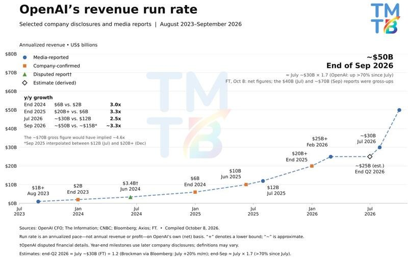
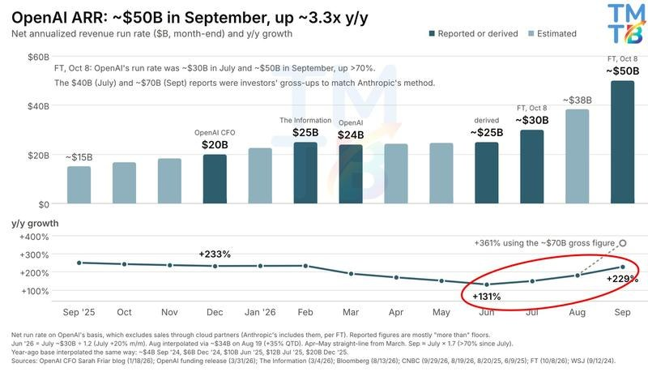
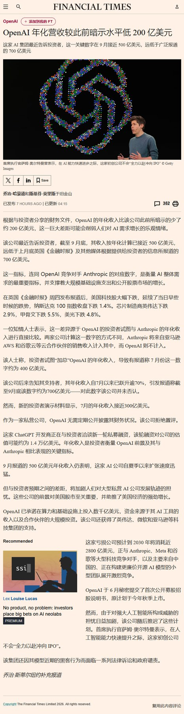
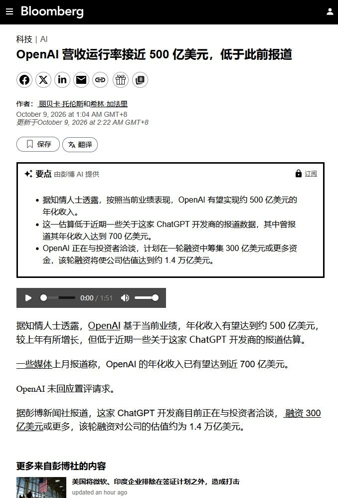

调研纪要 · 2026-10-09 新闻日报
星球 ID: 28855458518111 | 共 235 条帖子 | 精华 57 条
| 查看研究积累
强制同步到研究积累
全部 计算机 电子 电力设备 其他 非银金融 食品饮料 传媒 基础化工 医药生物 交通运输 汽车 有色金属 机械设备 宏观策略 轻工制造 社会服务 通信 石油石化 建筑材料 国防军工 纺织服饰 环保 农林牧渔 商贸零售 银行 公用事业 建筑装饰
书签
【mlcc更新】关于市场对于mlcc价格的过度恐慌，又找经销商问了一下，大部分料号还是正常，代表性料号106一直维持在正常水平，只有非常小部分料号跌了一点
【mlcc更新】关于市场对于mlcc价格的过度恐慌，又找经销商问了一下，大部分料号还是正常，代表性料号106一直维持在正常水平，只有非常小部分料号跌了一点
by ty
【东吴电新】碳酸锂周度更新（10.2-10.8）：本周进一步去库，锂价横盘
【东吴电新】碳酸锂周度更新（10.2-10.8）：本周进一步去库，锂价横盘
#价格：本周碳酸锂现货、精矿价格横盘。SMM电池级碳酸锂12.5万元/吨，周环比1.8%；锂辉石精矿（CIF中国）1740美元/吨，周环比0.3%。期货主力合约LC2701 10/8收盘价11.7万元，周环比-1%。
#库存：本周SMM碳酸锂新口径库存14.0万吨、去库0.9万吨。其中上游库存3.1万吨，环增0.02万吨；正极厂库存4.3万吨，环减0.8万吨；电芯厂及其他库存2.0万吨，环增0.03万吨；贸易商库存4.5万吨，环减0.1万吨。仓单量3.2万手，周环比-0.4%。
#产量：本周产量减少523吨至2.5万吨，其中辉石提锂产量环减242吨至13998吨，盐湖产量环减285吨至5803吨，云母提锂产量环增110吨至3002吨，回收料提锂产量环减106吨至2615吨。
#情绪面冲击延续价格承压、供给紧缺逻辑不变。情绪面，市场对隐性库存压力及下游排产、明年需求担忧。但基本面上旺季供需仍偏紧，9月以来国内锂盐检修产能陆续恢复、叠加津巴布韦部分货船到港，锂盐产量抬升，但整体有效供给弹性有限，10月下游排产环比微增、旺季趋势延续。年度看，26-27年碳酸锂供给紧平衡，27年价格中枢预计12万/吨左右。
投资建议：看好具备优质资源且利润弹性较大的公司，重点推荐赣锋锂业、国城矿业、盛新锂能、大中矿业、永兴材料、天齐锂业、中矿资源、华友钴业、雅化集团、藏格矿业，关注盐湖股份。
风险提示：需求不及预期
油价下滑、AI 泡沫担忧消退，美股有望反弹
油价下滑、AI 泡沫担忧消退，美股有望反弹
中国拟降低股票基金设立门槛
中国拟降低股票基金设立门槛
中国加大财政力度以实现增长目标
中国加大财政力度以实现增长目标
中国房屋销售在最新刺激措施出台后出现温和复苏
中国房屋销售在最新刺激措施出台后出现温和复苏
华为余承东：中国正研发极紫外光刻设备
华为余承东：中国正研发极紫外光刻设备
中欧就混动汽车贸易达成谅解将探讨降低部分商品关税
中欧就混动汽车贸易达成谅解将探讨降低部分商品关税
【兴证策略】中欧贸易投资磋商机制第二次例会成果核心要点
【兴证策略】中欧贸易投资磋商机制第二次例会成果核心要点
贸易和投资平衡
1、探讨降低部分商品关税的可能性。
2、就混动汽车贸易达成谅解备忘录。
3、继续EV价格承诺和复审相关程序。
4、扩大中方对欧盟的医疗器械采购。
5、磋商化妆品及药品相关监管框架。
6、开展就欧盟外国补贴条例的对话。
7、进一步磋商欧盟逆变器补贴政策。
8、同意探讨投资合作，并讨论开展面向未来的合作。
出口管制
1、稀土：中方通过“绿色通道”机制，对欧出口许可审批。
2、高端制造：解决两用领域对华重点许可个案提供便利。
3、中欧两用物项合规贸易：研究出台结构性便利化措施。
4、清单管理：中欧达成谅解，将在列单前进行提前通报。
知识产权
1、中欧双方已着手解决系统性知识产权问题并取得进展。
世贸组织改革
1、双方承诺参与世贸组织改革并同意讨论所有相关议题。
中欧贸易磋商第二次例会联合声明
中欧贸易磋商第二次例会联合声明
[玫瑰]根据今日发布的《中欧贸易投资磋商机制第二次例会联合声明》，中欧就“混动汽车贸易”以 WTO 合规方式达成谅解，并延续 EV 反补贴价格承诺与复审程序。
[太阳]对 PHEV：短期利好，好于此前预期。此前我们在10月2日外发报告指出，市场普遍担心欧盟对PHEV会增加关税。根据目前表述，10月底极端单边加税的“定时炸弹”被拆除，板块风险偏好修复。但这次磋商不是终局，欧盟并没有承诺放弃限制性政策，后续更可能转入价格承诺、复审、最低售价/配额等方向继续增加进入壁垒。短期PHEV 对欧出口链可反弹（对比亚迪，奇瑞，上汽集团，吉利汽车，等企业是利好）。但不宜理解为贸易摩擦一次性解决，建议持续跟踪欧方发布会与复审口径。
📑大立光（3008）2026 Q3 法说会 Memo 其中关于 CPO：FA 客户认证「应该算通过」，客户转而要求直接出 FAU（含 carrier），目标 2...
📑大立光（3008）2026 Q3 法说会 Memo 其中关于 CPO：FA 客户认证「应该算通过」，客户转而要求直接出 FAU（含 carrier），目标 2027 年中量产；多排 FA 为 2028 年 project。
📌一、重点摘要
📊1. Q3 营收 156.51 亿元（QoQ +15%、YoY −11%），毛利率 42.2%（QoQ 下滑，主因新机良率较差＋绿电成本），税后净利 51.82 亿元，EPS 39.62 元；前三季营收 408.6 亿元（YoY +2%）。
📉2. 手机拉货高峰已过：10 月与 9 月持平，11 月起下滑，客户 9 月已经下修新机量；Q4 稼动率将会下滑，明年 1Q 无法预测。
🔬3. CPO：FA 客户认证「应该算通过」，客户转而要求直接出 FAU（含 carrier），目标 2027 年中量产；多排 FA 为 2028 年 project。
🏭4. 扩产：近期购入多块土地全数用于 CPO 生产线／无尘室，2027 年开工、2030 年完工；购地已经告一段落。
💡5. 绿电成本属于结构性因素，2027 年价格已经谈定、无法转嫁，毛利率回升要等待后续报价调整。
📊二、营运成果
📦1. 出货结构：2000 万像素以上占比 10‑20%、1000 万像素占比 60‑70%、800 万像素以下占比 10%、500 万像素以下占比 20‑30%。
💰2. 业外利益 13.57 亿元，其中汇兑收益 1.97 亿元。
🔧3. Q3 资本支出 81.8 亿元（包含大部分购地）、折旧 20.4 亿元。
📋4. 资产负债表：总资产 2122 亿元，现金 1109 亿元，应收 97.9 亿元、存货 87.7 亿元，应付 20.3 亿元，负债比 13.3%。
🔮三、营运展望
📱1. 手机：可变光圈良率目前还不错，但是客户新机上市之后拉货有限；2027 年上半年不会跟随客户发布节奏实现量增；潜望式镜头升级延后至 2028 年，2027 年仍然有新镜头送样，单价较高但是订单尚未确定。
🔬2. CPO 产品线：自制 FA → 外购 PMLA 与 V‑groove → 耦合成 FAU → 涂装外购 carrier（板子＋三颗珠子）；下一步希望争取 FAU 直接组装到 carrier 的制程。客户不希望大立光做 ferrule／connector 端，现阶段市场最紧缺的产品是 FA 与 FAU。
📅3. 2027 年中出货产品将以 FAU 为主（价格因素）；客户要求完整 FAU 的目的是为了减少良率责任方面的争议。
🏭4. 产能：现有厂区为第二大厂区，本月客户前来洽谈产能建设规模，明年年中将建设出一定规模产能，但仍然有可能出现产能不足；设备一部分外购、一部分自制，外购机台需要逐台微调校准，自有产能不足的情况下可能需要外包部分产能。FA＋FAU 现有厂区空间可以支撑到 2030 年新厂区完工。
📈5. 毛利率：FA／FAU 属于高单价、高难度产品，毛利完全取决于良率，公司没有设定目标良率，良率水平要等到 2027 年年中 / Q2 底量产之后才能够确认。
🤝6. 竞争格局：客户更偏好半导体制程 PMLA，模造玻璃具备构型优势；大立光的核心优势在于自动化能力，包含对位精度、运行速度、检测能力，可以同步拉高良率与产出吞吐量，故障排查也更加便捷。目前完成认证的有一家 CSP 客户，其余多数客户还在开发下一代产品，最快 2028 年落地；自身角色偏向承包商，但是可以直接对接终端客户。
❓四、Q&A
📱（手机本业）
❓1. Q：10 月、11 月拉货方向？明年 1Q 会优于往年吗？客户发布节奏改变，2027 上半年出货会增加吗？
💬A：10 月与 9 月持平，11 月开始下滑；客户明年 1Q／2Q 发布新机，10 月已经完成拉货，但 9 月已经下调出货量，明年上半年供货水平不会出现明显变化，没办法做长期预测。
❓2. Q：可变光圈良率是否符合预期？这一代新机销售是否不如前代？
💬A：良率目前还不错，但是拉货高峰已经过去，新机上市之后拉货规模有限；客户 9 月已经下修订单，整体处境比较艰难。
❓3. Q：Q4 稼动率？
💬A：将会下滑，和去年同期对比变化不大。
❓4. Q：2027 潜望式升级进度？
💬A：潜望式升级时间为 2028 年而非 2027；2027 年还有其他升级镜头在送样，单价较高，后续情况有待观察。
❓5. Q：手机镜头属于守成策略，同业出现问题的时候也不会主动抢夺市场份额？
💬A：不能这样下定论。
💸（毛利率／绿电）
❓6. Q：Q4 毛利率的正负影响因素？绿电会影响几个百分点？是 Q3 才出现的影响吗？成本会持续上行吗？报价能不能覆盖成本？
💬A：负面因素主要来自绿电，属于结构性问题，是和客户合约约定必须采购绿电；没办法量化绿电对毛利率的影响；成本会按照对客户的出货占比进行分摊，出货量越大成本越高；未来报价会纳入绿电成本，但是明年的价格已经敲定，成本转嫁要等到更晚的周期。
❓7. Q：FA／FAU 毛利率能不能达到公司平均水平甚至更高？只做 FA 的毛利率会不会高于 FAU？什么时候能够看到真实良率？
💬A：属于高单价高难度产品，毛利完全取决于良率，公司没有设定目标良率，FA 与 FAU 毛利全部看良率表现；试产线会逐步扩产，真实良率要等到明年年中 / Q2 底量产后才会体现。
🔬（CPO 认证与客户）
❓8. Q：FA 认证是否已经通过？送样产品是 FA，但客户现在需要 FAU，FAU 什么时候完成认证？合作客户是一家还是多家？
💬A：认证应该算是已经通过；客户直接到产线查看演示以及现场实测数据，FAU 也完成过演示，因此客户才会要求供应 FAU；现阶段进展明确的是一家 CSP 客户，可以直接对接终端，角色偏向承包商。
❓9. Q：除核心客户之外，是否还有其他客户送样？2028 下一代产品是否会有多家客户？
💬A：有开展送样，其余客户大多在开发下一代产品，最快落地时间为 2028 年；2028 年的项目绝大多数为多排 FA。
❓10. Q：原本计划只做 FA，为什么客户转而要求供应 FAU？会不会产生利益冲突？
💬A：并非由公司决定，客户希望采购完整产品；分开采购 FA、PMLA，如果出现良率问题会出现互相推诿责任的情况，供应完整产品能够减少相关争议。
❓11. Q：客户满意的核心点是否是良率？大立光自动化优势体现在对位精度、速度还是检测？对比同业是否具备明显领先优势？
💬A：良率和吞吐量都是客户十分看重的痛点，客户对两项指标都很满意；自动化产线可以同步提升两项指标，故障排查、逆向工程也更加方便；对位精度、速度、检测三项全部具备优势；没有和同业做细致对比，客户反馈我们是见过当中表现最好的。
❓12. Q：FAU 的难度对比 FA 是否明显提升？最大挑战是不是量产良率？
💬A：小批量阶段很难评判，现阶段两种产品都可以生产；FA 以及 FAU 到目前为止都具备很高的技术挑战性。
❓13. Q：CSP 客户规格经常变动，会不会出现产线刚调试完成就要修改规格的情况？
💬A：这一代规格已经锁定，下一代再做调整；产线全部做了内置弹性设计，修改机台难度较低。
🧰（CPO 产品与供应链）
❓14. Q：CPO 业务当中公司做哪些环节？为什么不做 PMLA／透镜？客户来料物料是否计入营收？
💬A：自制 FA，外购 PMLA 耦合形成 FAU 并且组装 carrier，下一步争取 FAU 安装到 carrier 的制程；客户这边已经有合格的 PMLA 供应商，这一代只能选择外购；客户来料或者自行采购物料尚未谈妥，价格目前只知道大致区间。
❓15. Q：模造玻璃对比半导体石英 PMLA，客户的偏好如何？大立光模造玻璃有什么优势？
💬A：客户更加偏好半导体方案，模造玻璃拥有构型优势；不一定有绝对的显著优势，但是加工精度可以做到更好。
❓16. Q：V‑groove 这类外购零部件会不会成为瓶颈？
💬A：不会，V‑groove 供应充足，供应商数量很多；制程有容错空间，就算 V‑groove 本身存在不合格，依旧可以做出合格产品。
❓17. Q：carrier 是否就是 receptacle？属于外购件吗？
💬A：Carrier 位于 receptacle 中间，包含板子上三颗珠子、三个孔洞，下方还有板子插接至机壳，定位精度要求很高；板子、珠子全部为外购，公司只负责涂装工序。客户希望 FAU 和 carrier 分开交货，公司希望整合在一起出货。
❓18. Q：会不会切入 MT ferrule 等其他零部件？
💬A：客户不希望我们做 ferrule／connector 端，该领域从业者众多；当前市场最紧缺的产品是 FA 和 FAU。
❓19. Q：明年量产沿用现有的耦合方案吗？FAU 是否专注可插拔 detachable 路线？
💬A：明年以现有耦合方案为主，另外一套耦合方案正在和客户联合开发，能否落地还不确定；行业都看好 detachable 方案，但是需要 FAU 容纳更大公差，现有规格已经处于很高水平。
❓20. Q：有没有 NPO 对应的解决方案？3.2T 以上 CPO／NPO 难度是否一致？
💬A：NPO 只是封装位置不同，方案和现有产品差异不大，评估难度差距小；如果采用 bit‑cell 规格，规格约束会宽松一些；NPO 的出货量会比 CPO 更大，但产出的是同款产品。
❓21. Q：如何看待 MicroLED（多模光纤）方案？
💬A：会做研究尝试，但个人判断该方案耗电高、体积大、效率偏低，并不看好这条路线。
🏗️（产能、扩厂与资本支出）
❓22. Q：明年中产出的是 FAU 还是 FA＋FAU？多排 FA 什么时候量产？2027 全年无法量产 FAU 吗？
💬A：受价格因素影响，产出产品看起来会以 FAU 为主；多排 FA 正在送样，最快属于 2028 年项目，没有明确上下半年；2027 年目标就是 FAU 量产，明年下半年就可以实现量产。
❓23. Q：明年中准备完成的产能能不能满足客户需求？FAU 产线能否在年中准备就绪？2030 年之前厂区空间是否够用？
💬A：现有厂区属于第二大厂区，本月已经接待客户，正在协商产能建设规模以及客户需求量，明年年中会建设一定规模产能；FAU 产线来得及完成；FA＋FAU 的厂区空间可以支撑到 2030 年新厂区完工。
❓24. Q：试产线进度？复制量产线取决于设备供应还是良率？设备自研还是外购？交期情况？
💬A：两方面因素都会产生影响；复制量产线有可能需要外包部分产能，外购机台到货之后每一台都需要精细调试；设备有自研也有外购；没有披露交期数字，目标明年年中完成第一阶段 camp。
❓25. Q：购地用途？为什么分散拿地？原有建物会保留吗？后续还会继续购地吗？土地规划是否包含手机业务？
💬A：土地全部用于 CPO 生产线、无尘室，2027 年开工、2030 年完工；因为没办法拿到大面积整块土地，因此分散拿地；原有建物拆除重建；目前没有继续购地计划；现阶段规划全部服务于 FAU 业务。
❓26. Q：Q3 折旧和资本支出？购地是否包含在内？CPO 相关费用 / 资本开支的方向？
💬A：资本开支 81.8 亿元、折旧 20.4 亿元，购地支出大部分包含在内；CPO 没有披露具体金额，“应该会花费不少钱”。
📝五、待追踪
🔎1. 本月客户参访之后确定的产能建设规模与分摊方式，包含设备采购方、PMLA 是否客户来料以及是否计入营收。
🔎2. 2027 年年中量产阶段的实际良率，以及 FAU 单价区间。
🔎3. 绿电成本数字疑点：逐字稿记录 “前三季绿电成本 1.98 亿元”，和汇兑收益 1.97 亿元数值过于接近，怀疑转录错误，需要向 IR 确认核实。
🔎4. Q4 稼动率下滑幅度，以及 2027 年 1Q 拉货带来的实际影响。
🔎5. 2028 年多排 FA 产品
📑大模型蒸馏、厂商格局与 5T 级别模型发展
📑大模型蒸馏、厂商格局与 5T 级别模型发展
🤖1，目前国内主要模型公司，蒸馏现状如何？关于模型蒸馏，主要有三点观察。
✅第一，国内过去在蒸馏技术上的应用非常普遍和深入。
✅第二，当前 OAI 和 Claude 的反蒸馏措施已颇为有效，其主要效果并非阻止访问，而是将蒸馏方的成本提高了十倍以上，导致经济账需要重算。这一变化也影响了国内专业模型公司的战略。在 OpenAI 和 Anthropic 加强反蒸馏措施后，这些专业模型公司不约而同地将研发重心从大尺寸模型转向了轻量级模型，以应对蒸馏成本的重新评估。
✅第三，关于 ZJ 自己，存在两个制约因素。其一，蒸馏效果受限于学生模型自身的能力和容量。当前的模型能力要么因处于持续训练中而无稳定版本，无需蒸馏；要么稳定版本的水平较低，没有必要去蒸馏 GPT-6 这类顶级模型。其二，ZJ 自 2025 年初官方已宣布停止蒸馏。后续未再进行大规模蒸馏，主要是因为其模型一直处于训练迭代中。
💰2，模型蒸馏的成本构成是怎样的，以及近期成本显著上升十倍的具体原因是什么？
📌模型蒸馏的投入主要分为三个环节。第一是购买 API 的直接资金投入，尤其是在账号可能被封禁的情况下，需要持续投入资金开设新账号。第二是人力、算力和时间的投入，这包括研发用于生成高质量提示词的专门模型，以及对提示词进行分析、筛选和管理。第三是工程系统的投入，蒸馏过程需要通过多轮、递归式的提问来深挖目标模型的完整思维链和推理步骤，这会产生海量的交互数据 (每日可达数亿甚至数十亿条)，需要建立相应的大数据管理体系进行处理。
📌在当前 OpenAI 和 Anthropic 的反蒸馏措施下，成本上升最显著的是第一个环节，即 API 购买成本。具体来看：GPT-6 等新模型不再直接展示思维链，甚至取消了模型思考深度的选项。这迫使蒸馏方必须通过更多轮次的提问来还原其思考路径。原先通过 2 到 5 次提问就能获取的信息，现在可能需要 10 次、25 次甚至 30 次，导致 API 调用成本直接上升 5 到 10 倍。同时，账号被封禁的风险也更高。
📌Anthropic 则采取了另一种策略，它会限制用户对单一问题进行刨根问底式的追问。例如，当连续追问一个敏感或复杂话题 (如核武器原理) 到一定深度 (如三至五个问题) 时，账号就可能被封禁。为了规避这一机制，蒸馏方需要在核心问题周围插入大量其他问题进行混淆和掩饰，可能需要用十几个问题来铺垫一个真正想问的问题。这同样大幅增加了 API 的调用量和封号成本。
📌综合来看，仅 API 采购环节的成本就至少上升了 5 倍，甚至超过 10 倍，具体取决于问题的复杂度。第一环节成本的剧增，也相应加重了第二和第三环节在人力、算力及工程系统上的负担。
📈3，如果 OpenAI 等领先公司不再提供 '' 思维链” 等技术捷径，国内模型厂商若要达到同等效果，其研发成本将如何变化？这种变化对国内厂商的研发路径和行业格局可能产生怎样的长期影响？
🔍若 OpenAI 等公司提高技术门槛，不再提供 '' 思维链” 等便利，国内模型厂商为达到同等效果，其研发过程将变得更为复杂。首先，需要生成更多、连贯性更强的问题，这将直接导致中间环节的投入增加和数据量的激增。其次，工程系统的存储需求和复杂度会随之升高，而当前存储成本依然高昂。综合来看，整体成本将显著上升。对于能力较强的公司，成本增幅预计在五倍以上；而对于能力稍弱的公司，直接的现金成本增幅可能高达十倍。
🔍这种变化将促使国内厂商在发展路径上做出选择。如果部分公司仍倾向于用资金投入换取短期效果的 “捷径”，那么行业受到的影响可能不大。然而，如果领先公司持续抬高技术壁垒，国内公司最终将被迫回归到更扎实、更基础的研发道路上来。届时，行业可能会出现一种新的态势：领先的海外公司 API 收入或许会略有下降，而国内公司的研发成本增速将放缓，研发周期相应拉长，模型迭代速度变慢，但其发展路径会走上正轨。
🏢4，如何看待国内外互联网大厂在模型能力上的表现普遍不及独立的专业模型厂商？这是否源于组织架构或考核机制的差异？展望未来，尤其是在国内市场，字节跳动和阿里巴巴等大厂在算力资源上具备优势，当其模型参数量达到 5T 级别后，国内独立模型厂商是否还能在通用或特定领域保持领先地位？
🌐在海外，Meta 和 Google 是典型案例。Meta 的 Llama 模型初期与自身业务结合良好，但在看到 OpenAI 等公司的 API 收入快速增长后，其精力被分散，急于进入 API 市场，对模型提出了 '' 既要又要” 的过高要求，导致模型研发节奏被打乱，走了一段弯路，目前才调整回以个人 Agent 为中心的业务节奏。Google 的问题则不同，其技术在 GPT-3 时期已实现，但因模型推理的算力消耗过大而无法商业化，本质上是技术实现与算力成本不匹配的问题。
🌐国内大厂的情况则更为复杂，呈现出一种循环。ZJ 在 2024 年起步阶段就出现战略失误，在大模型本身尚未训练成熟时便急于推出十几个 App。DeepSeek、KIMI 和智谱等公司早在 2023 年之前就已开始深耕训练，阿里巴巴的 '' 通义千问” 本有稳定的技术积累，但后来受 “豆包” 日活数据的吸引，将战略重点转移到应用，影响了自身迭代节奏。腾讯最初认为大模型对其核心业务并非必需，但在发现阿里和字节开始侵蚀其业务根基后，又仓促地进行战略补防，显得较为慌乱。但后期在算力上加码，workbuddy 场景切的很准，有了稳定用户基本盘。
⚙️5，对于国内的 5T 级别大模型，预计将由独立模型厂商还是大型科技公司率先推出？其技术路径是基于多模态应用驱动还是在算力受限下选择 MoE 架构的结果？
🔮预计国内的 5T 级别模型大概率会首先由像 KIMI 这样的独立模型公司推出。根据当前了解到的情况，阿里自身的 5T 路径主要体现在 '' 千问 4'' 的多模态输入版本，而非核心的、基于标准 MoE 架构的大语言模型。目前也是 KIMI 在明确地推动其标准大语言模型向 3T 以上参数量发展。DeepSeek 之前也有媒体报道相关进展，KIMI 当前的模型参数量已接近 3T，预计在 2026 年底至 2027 年初，有很大概率能推出一款超过 3T 的标准大语言模型。
🔮阿里在林俊旸离职后，研发节奏受到了一定影响。原计划于 2026 年八九月份发布的” 千问 4” 标准版要对齐 Gemini 能力的目标，从近期云栖大会上透露的模糊信息来看，其多模态标准输入能否实现存在疑问。预计在 10 月下旬 '' 千问 4'' 正式开放后，可能会呈现两种情况：其文本方向的模型参数量大约在 3T 上下；而其多模态输入分支版本，若能实现，根据模型结构推断，参数量将接近 5T。不过，其标准文本模型在未来三到四个月内，很有可能被 KIMI 反超。
🔮DeepSeek 方面，如果进展顺利的话，预计在 2026 年 12 月可以发布参数量超过 2T 的标准大语言模型，最乐观的情况下可能达到 2.8T 或 3T；若进展不顺，则可能在 2T 至 2.2T 之间。
Meta MUSE专家交流
Meta MUSE专家交流
[玫瑰]战略方向： #Meta正由Llama开源生态转向闭源模型商业化。MUSE采用独立于Llama的训练体系，聚焦AI购物及任务型Agent，计划通过用户订阅、交易抽佣及智能体广告实现变现。
[玫瑰]模型能力： #Meta跨平台用户数据构成MUSE核心竞争优势。整合Instagram、Facebook等平台的授权用户数据，提升个性化推荐能力，专家称相关场景转化率较传统算法提升至少约30%。采用“传统算法初筛+大模型二次精排”模式，兼顾效果与成本。
[玫瑰]Token消耗： #不同任务Token消耗差异显著，纯聊天场景通常低于1万Token，工具调用约1万—20万Token，Computer use类场景最高可达100万Token，95%以上用户主要使用轻度聊天功能。
[玫瑰]商业化进展： #MUSE仍处用户扩张阶段，交易抽佣尚未实质落地。目前产品仍处早期，未来计划探索交易分成及Agent广告竞价模式；订阅端设置20美元/月、100美元/月两档，现阶段愿意承担一定亏损以获取用户。
[玫瑰]场景落地： #机票、酒店等标准化场景更易落地，服装等隐性偏好较多的品类难度较高。当前主要瓶颈在于第三方数据接入及复杂任务执行，亚马逊已限制MUSE访问商品信息，部分航司API未开放亦影响推荐完整性。
[玫瑰]行业影响： #购物Agent有望重塑电商及OTA流量分配格局。亚马逊及依赖竞价排名的头部OTA平台广告业务或受冲击。商户未来需优化商品描述、图片等信息，以提升AI推荐曝光。
领导好，今日财政部明确动用5500地方债结存限额，我们理解如下：
领导好，今日财政部明确动用5500地方债结存限额，我们理解如下：
⭕️ 规模：5500亿元，略高于市场预期（四五千亿）和我们的预期（4000亿）。
⭕️ 结构：3000亿一般债补区县财力 + 2500亿专项债用于项目建设。与市场预期两点差异：
1）一般债可能不在市场预期之内，Q4中长债供给可能低于预期；
2）市场原预期增量主要用于化债，但财政表态给项目，而缺项目问题难解（8000亿政策性金融工具9月才仅投放1000亿元）。
3）注：我们此前的预期是1000亿元一般债“投资于人”+3000亿元特殊再融资债化债，均不受项目约束
⭕️ 执行：一般债无收益率要求、用于公益项目，应能发完，大概率发新增一般债。
⭕️ 执行：专项债缺项目，或有四种情形：①超额挪去化债规模从此前预期的4000升至6000亿；②结转2000亿至明年（类似2022年）；③与政策性金融工具搭配使用（乘数下降）；④放松审批（因终身负责制，可能性低）。
⭕️ 市场影响：托底思路，结构性支持社保民生、六张网，对权益市场影响不大；对债市中性偏利多——Q4中长债供给低于预期 + 信用难宽。
险资传言回应&继续看好保险
险资传言回应&继续看好保险
今日有传言险资被约谈禁止卖出，我们的看法是：
1️⃣首先，险资是24年以来最大的净买入机构，我们预计保险资金24-26年累计净买入2.5万亿以上，也是目前来看确定性最高的未来净买入机构，预计每年净买入可能在1万亿以上且缓慢增长，在这个过程中，整体权益仓位不太会剧烈下降，可能小幅变化或者持仓结构调整；
2️⃣其次，就我们了解的情况，近期险资没有出现行业性的大规模砸盘，一方面出于自身觉悟，另一方面下跌太快，更何况当下时点离财报日还很远；
3️⃣监管稳市态度从7月开始持续存在。
综上，我们认为小作文所提事项可能是存在的，但这些事项的直接影响未必很大，只是当下时点给市场快速杀跌后提供了一个企稳理由。
❗️需要重视的是，险资如果是当下能看到的确定性最高的持续性净买入力量，而8月金融监管出台的资负新规在很大程度上影响了未来险资买入的主要方向，即除非利率上行，不然行业需更大比例加配红利，这在增量资金有限的阶段很可能对市场风格形成较大影响，对此我们持续提示，建议大家了解关注。
🌟保险观点
午后保险上涨，虽然今日上涨可能包含非市场化力量的驱动，但向后若市场有托底力量，当前位置部分保险的配置价值非常突出，经营存在alpha的头部券商同理，业绩波动性大、短期压力较大的非银博弈属性较为明显、谨慎参与，我们仍然建议市场反弹期间配置短期内业绩有韧性的优质非银标的。
欢迎联系交流
【申万非银】保险板块观点更新
【申万非银】保险板块观点更新
➡️高基数+新版报行合一+权益市场波动影响下，#三季度业绩增速承压已成为共识
➡️时间进入9月后负债端基数压力消减，叠加预计近期部分险企或兑现部分浮盈以平滑季度利润波动，我们认为可以边际乐观起来。
➡️保险法修订草案拓宽中小保险公司资本补充渠道、放松财险公司资本约束，持续推荐中国财险、中国太保、中国人寿(H)、新华保险、中国平安、中国人保、阳光保险、中国太平。
🌀【天风电新】台股PCB企业8月营收速递-1009
🌀【天风电新】台股PCB企业8月营收速递-1009
台股PCB样本企业8月营收普遍实现同比高增，HLC与IC载板板块同比增速领先，HDI板块环比表现突出。
2026年8月，HLC、IC载板、HDI及普通PCB样本企业合计营收分别同比+70.8%、50.2%、34.2%和26.8%。从年内累计表现看，HLC及IC载板1-8月营收分别同比增长53.1%和34.8%。
同比来看：【金像电、健鼎及欣兴】同比增长表现较强，服务器需求与产能释放形成支撑。 【欣兴】营收连续五个月创历史新高。
环比来看：臻鼎-KY、泰鼎-KY、定颖投控近期环比增长突出，8月增幅分别达17.4%、16.1%和15.8%。
臻鼎-KY受益于行动通讯客户新品备货，叠加服务器、光模块及IC载板业务扩张，旺季需求与新业务增长共同推动营收上行；定颖投控受益于产品组合优化&涨价提振。
【长江电子杨洋团队】#小PCB公司们的8月单月业绩
【长江电子杨洋团队】#小PCB公司们的8月单月业绩
崇达8月单月1e+利润，超声8月单月利润8kw，奥士康8月单月利润1e，金禄电子和四会富仕8月单月利润5kw
迅捷兴Q3业绩1-1.5亿元，威尔高Q3业绩1.5亿元
#大票里面Q3业绩表现好的
景旺Q3业绩10亿元（乐观，专家口径），方正Q3业绩7亿元（乐观，专家）
鹏鼎14亿，沪电22亿，东山22亿
深南、生益电子和广合科技的Q3业绩基本都能看到至少环比30%-40%增长
【啤酒跟踪】9月及三季度更新
【啤酒跟踪】9月及三季度更新
#总结：旺季需求走弱，三大全国性品牌基地市场继续承压，行业大单品喜力u8保持良性增长。
#分品牌表现
青啤：9月销量同比微增，其中山东量增价减。预计Q3销量同比高单下滑，1-9月累计下滑中单。
润啤：9月销量同比高单下滑，基地市场继续承压，喜力保持20%左右增长。预计Q3销量同比中单下滑，1-9月累计下滑低单。
重啤：9月销量同比中单下滑，市场仍有压力。预计Q3销量同比中高单下滑，1-9月累计下滑中单。
珠啤：9月销量同比微跌，97纯生保持双位数增长。预计Q3销量同比微降，1-9月累计微增。
燕啤：9月销量同比低单增长，U8保持25%左右增长。预计Q3销量同比低单增长，1-9月累计低单增长。
百威：9月中国区销量同比中高单下滑，Q3销量下滑15%左右，1-9月累计下滑10%左右。
厉兵秣马，拥抱顺风：从CRL、IQV、TMO看龙头CXO公司的AI观（及全球CXO 2026中报业绩跟踪）【中邮医药|行业深度】
厉兵秣马，拥抱顺风：从CRL、IQV、TMO看龙头CXO公司的AI观（及全球CXO 2026中报业绩跟踪）【中邮医药|行业深度】
投资要点国际头部CXO公司一致认为AI制药将提升候选分子数量，增厚制药客户管线，拓宽疾病覆盖领域并提升相关临床/临床前研究复杂度，从而带来外包需求的提升，为行业带来顺风。AIDD带来的研发增效不会带来研发开支的缩减，节省的资金将仍会被再投资到更多管线开发中来，CRL引用数据认为3-5年湿实验项目将增加12%，IQV、TMO同样将AI制药趋势视为顺风。
制药企业与临床前CRO合作，开发其内部AIDD模型是新需求。CRL官宣加入了礼来的TuneLab™ AI/ML 平台，为礼来提供非临床（湿实验）检测服务和数据，帮助其构建和优化自有 AI/ML 药物发现模型。
AI对CRO服务的赋能已经形成护城河，并转化为赢单能力，头部CXO积极进行收购或外部合作增强AI能力。IQV介绍近一年已有多个复杂的全球III期临床是通过公司领先的AI相关能力（从方案设计、患者招募到结果预测等）带来，TMO认为客户会更加倾向于具备全球数据来源和多年监管经验的头部CRO合作。因此，TMO花费88.75亿美金收购临床试验数据管理公司Clario，以加强其在临床研究的AI能力。此外TMO也与NVIDIA与OpenAI 开展合作，IQV与NVIDIA合作等，通过外部赋能共同开发相关AI应用。
中报业绩方面，2026 年第二季度，海外 CXO 板块整体呈现"需求回暖、订单修复、预期上修"的积极信号，行业正从此前 biotech 融资寒冬与产能出清周期中逐步走出。 最显著的边际变化有两点：
一是多家公司将全年业绩指引上调。我们跟踪的14 家公司中 8家上调全年业绩预期，其中LONZA 上调 CORE EBITDA 利润率至 33–34%，PolyPeptide 上调收入增速至 25–30%，Medpace、IQVIA、Fortrea、Labcorp、TMO、Charles River 均不同程度上调收入或利润率指引；
二是临床与临床前CRO 的新签订单普遍走出前期阴霾、创阶段性新高，book-to-bill 重回 1.0x 以上并持续扩张，验证终端需求实质性修复。CDMO 需求持续强劲，但部分公司受产能爬坡成本压制利润。
[红包]【国泰海通传媒】继续推荐AI视频板块
[红包]【国泰海通传媒】继续推荐AI视频板块
[太阳]AI短剧渗透率正快速提升
目前AI短剧在视频大盘渗透不到30%，且在快速提升。据Questmobile，2026年5月红果短剧月活达3.56亿人，同比增长79.1%，同期短视频用户10.74亿（网络视听协会），短剧在视频用户中渗透仅30%。AI短剧来看，据DataEye，26H1各平台上线微短剧36.7万部，其中AI内容占比超过74%；漫剧百强榜中AI仿真人短剧占比已从2025年初的约7%快速提升至2026年3月的超60%
[太阳]AI视频由微短剧扩展至长剧，供给放量推动行业高增
参考短剧发展历程，随着短剧供给快速增长，微短剧市场自23年起步，快速增长至25年的千亿元（广电总局）。长剧来看，2025年供给仅232部（网剧+电视剧取证口径），随着供给起量，长剧空间有望进一步打开。AI视频可分为AI短剧AI长剧，随着AI渗透持续提升，AI视频对应的网络视听大盘空间有望迈向1.29万亿（中国网络视听协会）
[太阳]未来可能出现的几种形式？
1）经典IP、小说改编效率提升。受限于制片审核流程长的问题，经典IP推新速度较慢，《
哪吒 ↗ 》电影系列片5年上线，《
庆余年 ↗ 》电视剧系列片间隔5年
2）老剧翻新。长视频行业播放量老剧占比超50%（云合数据），意味着大量的流量没有被新增内容所满足。该类老剧、经典版权资产盘活的重要方式之一是系列片翻新。近期AI网络电影《
灵魂摆渡·浮生梦 ↗ 》上线，该片子运用原班演员AI分身出演，能够较好的保持演员班底的一致性，以及克服了演员的状态问题，较好延续原有IP的生命力
3）与实时热点结合的供给提升。内容分为即时消费和多次消费两类，可分为同实时/热点结合的内容，以及经典内容。长剧行业此前由于投资制作、审核时间较长，长内容仅能满足经典内容承载，而难以快速响应市场。随着21条边审边播模式落地，叠加AI赋能，AI长视频有望实现内容快速迭代，更多满足社会当下热点话题的内容创造，释放需求空间
[玫瑰]投资建议：
随着政策放松及 Seedance等多模态模型能力持续提升，科幻大场景剧、真人AI剧等形态的制作成本与周期有望大幅压缩，创新题材、精品剧供给有望快速提升。关注AI剧平台公司芒果超媒、中文在线；视频制作公司欢瑞世纪、华策影视、中广天择、华智数媒、博纳影业、上海电影等； 此外关注 ip 公司掌阅科技、奥飞娱乐、果麦文化等
国泰海通传媒 陈筱、李瑶
【华创传媒互联网】Meta限制TikTok广告投放，利好独立短剧出海平台！
【华创传媒互联网】Meta限制TikTok广告投放，利好独立短剧出海平台！
▶＃Meta限制字节跳动广告投放、涉及七个国家。据彭博社10月8日报道，Meta已开始限制字节跳动在其旗下平台投放广告及付费推广内容，涉及＃美国、加拿大、埃及、印度尼西亚、日本、泰国和越南共7个国家。该限制于当地时间10月8日起生效，并延伸至在上述市场投放、链接指向TikTok及字节跳动其他产品的第三方广告。
▶＃Meta&Tiktok竞争摩擦升温、TikTok系重要买量渠道受限。Dataeye ADX海外版显示，过去90天，Meta是TikTok最重要的买量媒体。Meta发言人Chris Sgro在书面声明中表示：“我们没有义务为一个旨在将用户从我们的应用中引流出去的竞争对手投放广告。”他同时称，拒绝向竞争对手提供推广服务是各行业的正常商业做法，Meta将继续通过产品质量和用户体验展开竞争。
▶＃第三方引流广告亦可能受到影响、相关投放链路需要重新评估。此次限制不仅针对字节跳动自身的广告投放，也可能影响其他广告主通过Facebook、Instagram为TikTok等产品引流的营销活动。对依赖Meta广告获客、同时将TikTok作为流量承接或转化目的地的团队而言，这意味着需要重新评估相关投放链路的可用性。Meta尚未公开完整的执行细则，包括存量广告如何处理、具体审核机制以及是否存在例外，目前还无法确定所有间接跳转至TikTok的广告是否都会受到影响。
🔥此前，市场担心Tiktok Minis、Melolo、Pinedrama、Pikoshow等字节系海外短剧平台对独立短剧平台的增长逻辑有较大冲击，我们认为海外市场与国内有几点不同：1）字节系在海外尚未通过先发优势建立起国内强大的分发矩阵，字节系app海外时长占比也远不如国内（近40%），部分新孵化独立APP的增长需要从google、Meta采买流量；2）海外T1（欧美、日韩）市场内容质量要求高、付费意愿强，相比国内免费主导的短剧生态，预计海外付费市场将占更大比例，AI进入制作流程后，依托优秀导演编剧的精品化内容仍稀缺。字节系在海外尚未建立短剧分发优势前，Meta限制其广告投放，利好独立海外短剧平台。＃相关标的：昆仑万维（海外短剧矩阵数据变现强劲）、掌阅科技（持有点众科技股权、国内河马剧场受益于腾讯绿泡泡短剧推出、海外关注dramabox与goodshort合并进展）、中文在线（持有RS母公司CMS49%股权）。
🎁近期我们访谈了头部海外短剧平台专家，欢迎联系＃刘玉洁 获取资料。
☎️交流：姚蕾/刘玉洁15387183825
【CC电新】Optimus加速落地，机器人击球区来临
【CC电新】Optimus加速落地，机器人击球区来临
1、机器人硬件已基本成熟，落地核心瓶颈在AI大脑，迭代关键是高密度有效具身数据。据产业交流：当前特斯拉有效数据积累63万小时，100-200万小时可落地工厂作业，工厂端预计27年可大批使用。
2、特斯拉抽调FSD数据标注团队、扩招采集人员、多州建训练中心，全力补齐机器人动作数据缺口。具身智能数据需真人实景采集，伴随产能十倍增长，数据需求大幅上升；特斯拉计划通过设备租赁获取外部场景数据，完善数据闭环，2026年底冲刺周产2500台。
3、资金端，特斯拉获批300亿美元新增信贷，支撑Optimus、Robotaxi扩产与供应链建设。
丝杠：震裕科技、天创时尚、浙江荣泰、恒立液压、五洲新春，均已布局机器人精密丝杠相关核心零部件，完成头部客户送样与产线筹备，适配机器人高精度传动需求。
减速器：科达利，适配Optimus量产配套标准。
电机及配套：金帝股份、恒帅股份、步科股份、雷赛智能、震裕科技，电机、驱动控制器等产品成熟，可满足人形机器人关节精准控制需求。
核心结构件：模塑科技、旭升集团，依托精密压铸、轻量化制造技术，配套机器人机身结构零部件；头部模组：关注蓝思科技、星宇股份。
关节模组：三花智控、拓普集团，已批量配套特斯拉。
PCB：本川智能，高密度电路板产品适配机器人电控、传感系统配套需求。
☎️联系：张磊/陈子锐/黄雄17300988285
【国金电新】锂电板块跟踪推荐：基本面强势，估值与筹码处于历史低位区间，吹响反攻的号角
【国金电新】锂电板块跟踪推荐：基本面强势，估值与筹码处于历史低位区间，吹响反攻的号角
节后锂电板块走强，主要系节前十五五电池新规划落地，叠加固态等新技术方向催化。基本面看，铜箔、隔膜等物料不足导致旺季头部排产受阻，接连月中出现微幅下修，年底至27年Q1或仍维持高景气、淡季不淡趋势。当前锂电整体盈利水平、估值及机构资金配置均处于历史低位区间，充分考虑周期波动仍具安全垫，保持推荐！
政策引导催化固态及高性能新技术方向：9/28七部门《
新型电池产业发展"十五五"规划 ↗ 》锚定2030年全固态电池规模化应用，明确锂电为主、钠电/液流协同路线，产业主线从产能扩张转向技术升级，壁垒抬升加速格局集中，利好头部龙头，及固态、储能、钠电、高端材料设备等方向。
物料不足导致头部供给受阻，仍看多材料价格上涨，旺季多环节已逐步落地。根据xl数据库，10月排产情况如下：电池及材料整体环比0%-5%、同比35%-59%。头部公司排产持续微幅下修主要系物料紧缺，铜箔已出现供给缺口。当前各环节除三元正极非C均已落地涨价；对C铜箔h2预计落地1-2k/t（当前最紧缺），铝箔已普涨1k/t，隔膜、负极谈判中；对Bq3起负极执行焦类联动；海外少有单独涨价函，隔膜q3起部分执行10%涨幅。
————————————
投资建议：本轮锂电供求格局及材料涨价具备持续性，1q27预排产环比降幅预计在10%-20%，2h26退税带来抢装影响有限，产业仍维持淡季不淡预期，基本面具备支撑，相关标的：
（1）低估值电芯龙头及强二线：宁德（2-3万亿市值中枢）、亿纬、国轩、欣旺达、中航；
（2）高壁垒/盈利平台持续性强：铜箔（德福、嘉元）、隔膜（恩捷、佛塑、星源）；
（3）受益于加工费上涨/调价机制变动：铝箔（鼎胜、万顺）、负极（尚太、璞泰来）、铁锂（裕能、富临）；
（4）涨价/业绩兑现弹性：VC/溶剂（华盛、石大）、6F（天赐、多氟多）；
（5）其他：结构件（科达利、震裕）。
⛓️💥 锂电新周期系列《
格局篇 ↗ 》
【国金电新】锂电新周期系列深度（一）：把握锂电周期反转，优选优势格局赛道 ↗
⛓️💥 宁德时代带PPT详细模型拆分及基本面汇报回放：
进门-领先的机构AI投研工作台 ↗
⛓️💥 锂电2026年中期策略
【国金电新】锂电板块2026年中期策略：旺季行情在望，创新接力迭代 ↗
联系人：姚遥/胡媛媛/陆文杰
近期板块观点，圣泉集团、鸿路钢构、安徽建工、山东路桥、东华科技、聚杰微纤交流要点，供参考。如需详情请联系我们[抱拳]
近期板块观点，圣泉集团、鸿路钢构、安徽建工、山东路桥、东华科技、聚杰微纤交流要点，供参考。如需详情请联系我们[抱拳]
[太阳]建材新材料板块观点：推荐优质高股息、出海建材建筑、玻纤洁净室等标的。
自上而下标的推荐排序：【兔宝宝/安徽建工/中国建筑/四川路桥/山东路桥】（高股息业绩稳健）、【博迈科/银龙股份/华新建材/科达制造/精工钢构】（海外建材建筑需求高景气）、【亚翔集成/中国巨石/圣晖集成/圣泉集团】（国内外洁净室、电子布、电子树脂需求高增长）、【悍高集团/东方雨虹/三棵树】（左侧布局地产链）。
自下而上标的推荐排序：【鸿路钢构】（主业业绩拐点，机器人应用标的）、【利柏特】（核电模块化进展顺利）、【东华科技】（煤化工、绿色能化需求向好）。
[太阳]2609圣泉集团：高端电子树脂放量
1、传统树脂今年量10%增长，毛利率基本维持住。
2、碳氢树脂上半年一个月三五吨，量较少。碳氢产能600吨，目前100吨线未拉满。M6开始用PPO，M7也可能用碳氢，M8碳氢占比少，M9碳氢可能占60-70%。公司从零几年开始做电子酚醛，然后上环氧，现在上PPO、碳氢，一脉相承。
3、公司PPO树脂产能现在2000吨，10月初还有2000吨产能投产，到年底4000吨，明年规划再扩2000吨。沙比克产能最多2000-3000吨，三菱大几百吨。国内南通星辰有一点，公司产能靠前，最早2018年介入。下半年发了涨价函，涨了10%-15%。涨价前毛利率40-50%，净利润不到30%。
[太阳]2609鸿路钢构：产销量快速增长，吨盈利向上
1、Q3产量能超过150万吨，后面每个月会突破55万或者60万吨。明后年产量至少十几左右增长。
2、今年7月底系统报价调价，原来让利客户抢占市场，7月底进行提价。7月份提价对三季度影响不大，三季度交付多是二季度签的单。
3、机器人开始销售，机器人+地轨营收目标一个亿，上半年做到六七千万，毛利率30-40%。明年可能2-3亿，毛利至少一个亿。机器人回报率两年左右，一台十几万，焊工一年工资十几万。
4、Q3吨净利150元左右扣非，单二季度偏高。下半年政府补贴越来越少。
[太阳]2609安徽建工：稳健增长、高股息
1、三季度接单增速可能会比上半年略好一点，因为重庆高速路的单子比较大。
2、上半年只有三四条高速进入实施，下半年有九条高速进入实施，大部分省内，气温适宜施工。下半年收入确认、毛利率应该比上半年改善一些。
3、2024-2025年资产减值加信用减值大概二十多亿，其中2025年PPP计提三四个亿，其他按账龄提。2026年目标计提平稳，不出现大波动。
4、今年市场环境更恶劣，期望高毛利率高速项目实施和应收账款回收，即使不能实现利润增速10%也希望能个位数增长。
5、估计今年分红金额差不多去年水平，具体结合利润增长和现金流综合考量。大股东1/3利润来源是上市公司分红，用于上缴国资收益。
[太阳]2609山东路桥：大股东增持，分红比例提升
1、交通基建市场可能是下行趋势。六张网比08年4万亿量大，但落地需要时间，政策配套资金需要匹配。山东省高速存量两三千公里，新增和改扩建量，整体投资量略微下行，但铁路、市政等量不小。
2、今年国资委会对市值管理进行试验性的打分，破净减分最高，分红多的也会有加分。27年会有考核数据，影响到领导和所有员工的收入。
3、分红幅度在往上走，即使业绩下滑也保证分红往上，体现诚意。高速集团增持后持股将超60%，会支持分红方案。
[太阳]2609东华科技：煤化工需求向上
1、十五五期间各版块中，煤化工增长最好。煤化工一个项目100亿，每年只要有两个项目出来，化学旗下设计院日子都好过。新疆今年招投标项目1000亿到2000亿之间，今年是煤化工相对小的爆发期。
2、今年签单计划250亿，煤化工大概占1/4，目前接近1/3~1/4。绿色能化大概占1/5或1/6，非化领域目标30亿。国外集团给任务90亿，目前已完成70亿。
3、1-9月营收持平，三季度单季略有增长。
[太阳]2609聚杰微纤：转型电子布
1、电子布织机方面，安徽老厂70多台改造做超薄布系列移到新厂，同时定了400台丰田织机，明年预计交100多台。普通布产能在台湾买旧设备一百多台，补充转移的70台产能，上半年设备改造、客户接手花了比较多时间，下半年量能起来，可能达100多万米每月。
2、明年下半年有特种布产能投出来，后年量比较大。目前重心做低介电布和Q布，T布和Q布小批量生产，验证设备。
3、判断电子布价格明年上半年还涨，因为卡点多解决不了。主流还是用丰田织机，国产设备良率效率差距大，大家都在观望，短时间成不了量。
【中邮医药】海外CXO龙头怎么看AI？我们梳理了CRL IQV TMO等最近的研发日及公开交流内容，国际龙头一致认为AI对CRO行业是顺风，一方面AIDD未来势...
【中邮医药】海外CXO龙头怎么看AI？我们梳理了CRL IQV TMO等最近的研发日及公开交流内容，国际龙头一致认为AI对CRO行业是顺风，一方面AIDD未来势必带来需求的提升，另一方面CRO公司内部的AI业务水平已经转化为赢单能力。最新报告，欢迎交流~
[太阳] 需求端：AI制药将提升候选分子数量和质量，增厚制药客户管线，拓宽疾病覆盖领域并提升相关临床/临床前研究复杂度，从而带来外包需求的提升，为行业带来顺风。对于AIDD带来的研发增效的担忧，目前行业普遍认为不会带来研发开支的缩减，节省的资金将仍会被再投资到更多管线开发中来。CRL引用数据认为3-5年湿实验项目将增加12%，IQV、TMO同样将AI制药趋势视为从药物发现到临床端的顺风。
此外，除了此前讨论较多的需要基因合成、蛋白以外，制药企业和大模型厂商也需与临床前CRO合作以获取湿实验数据、用于开发其内部AIDD模型，从而形成新需求。例如CRL官宣加入了礼来的TuneLab™ AI/ML 平台，为礼来提供非临床检测服务和数据，帮助其构建和优化自有 AI/ML 药物发现模型。
[太阳] 能力端：AI对CRO服务的赋能已经形成护城河，并转化为赢单能力，头部CXO积极进行收购或外部合作增强AI水平。IQV介绍近一年已有多个复杂的全球III期临床是通过公司领先的AI相关能力（从方案设计、辅助协作、患者招募到结果预测等）带来，TMO认为客户会更加倾向于具备全球数据来源和多年监管经验的头部CRO合作。因此，TMO花费88.75亿美金收购临床试验数据管理公司Clario，以加强其在临床研究阶段的AI能力。此外TMO也与NVIDIA与OpenAI 开展合作，IQV与NVIDIA合作等，通过外部赋能共同开发相关AI应用。
联系人：中邮医药 盛丽华/辛家齐
📈重视教育板块低估绩优标的机会
📈重视教育板块低估绩优标的机会
回顾26H1业绩表现，教育板块为稀缺高景气+业绩成长持续性较强的消费细分赛道，建议重点关注教培、职教优质标的低估机会！
核心推荐：
#学大教育
稀缺全国化布局教培龙头，高中阶段客群为主，充分受益于普高扩招，Q2业绩超预期，验证高景气与竞争力，全年业绩兑现有望带动市场信心修复，#具备估值与业绩预期双重提振机会，当前对应年内仅14xPE。
#行动教育
实效型企业管理教育，“百校计划”+AI赋能带动新一轮α增长逻辑，26-28年提速增长确定性强，期权激励20%收款或净利润增长CAGR充分体现公司信心，充裕合同负债锁定未来一年业绩，#对应年内仅16.5xPE+对应约6%高股息。
#中国东方教育
就业导向技能培训，布局连锁化服务业+智能制造等高景气蓝领就业赛道，高中+大学毕业生源高增长，带动学制结构改善与盈利能力持续提升，#当前对应年内仅7xPE+承诺60%以分红对应8%以上股息率。
此外建议关注昂立教育、传智教育等板块重点标的业绩兑现以及AI转型布局相关机会。
嵇文欣/孟鑫
⭐⭐【国金金属｜黄金】261009：黄金股大涨，7月剧本或重演
⭐⭐【国金金属｜黄金】261009：黄金股大涨，7月剧本或重演
🎁#事件：黄金板块大涨，关注7月行情的重演。科技承压之际，资金可能重新寻找其他结构性逻辑扎实的方向。黄金股可交易未来金价与产量的弹性，上轮科技回调时，板块领先金价大涨50%，相对收益极其显著。
🎁#实际利率已在高位，连续加息预期也已较为充分，后续更有可能回摆。（参考1007点评）类比7月，数据已下修，若后续美伊TACO，金价也有望出现大阳线，Beta回归。
🎁#欧洲财政风险，是黄金对长端利率脱敏的关键观察窗口。如果欧洲黄金ETF需求在长债收益率上行时仍保持韧性，说明这轮海外etf也开始买黄金对冲财政与主权信用风险。#高债务叠加高利率，付息压力反过来强化黄金的非主权资产属性。
🎁#中国核心买盘回归。国庆假期结束，国内投资与实物交易恢复，阶段性缺席的人民币买盘重新参与定价。
🎁#黄金股赔率可期。权益是长久期资产，金价远期赔率大+黄金公司强成长性，26Q3国内产量扰动或为弹性标的创造买点。继续建议关注投产率先兑现+并购期权的#万国黄金、表观估值偏低的#灵宝黄金，以及A股#中金黄金、#山金国际、#赤峰黄金、#招金黄金等。
联系人：黄泽浩 18575892374 / 吴晋恺 / 王钦扬 / 金云涛 / 覃雨阳
黄金珠宝国庆消费更新
黄金珠宝国庆消费更新
#行业层面延续分化，得益于国庆期间国际金价下跌，水贝具价格优势，带动克重金消费，水贝消费增长约30%。此外能够立足一二线城市核心商圈的头部品牌亦表现较好，品牌普遍实现国庆7天个位数～十几的增长
#周大福
9月中国内地线下店（直营+加盟）总销售同比下滑约小个位数，同店增长约中个位数
国庆10.1-10.7总销售同比下滑19%，同店下滑15%。国庆期间表观同比较弱主要因为：1）去年9月末宣布10月底一口价涨价，叠加金价快速上涨，一口价产品价格倒挂，加盟商加大囤货力度（尤其大克重摆件）带动销售异常高基数；2）2026年金价处于下跌态势，利好克重黄金消费，但一口价黄金占比大幅下降，而2025年同期业绩主要由一口价产品贡献（2025年10月克重黄金占比仅46%，2026年同期提升至75%左右）。
#潮宏基
9月店均同比增长个位数，中秋国庆假期（9月末至10.8）增长双位数
#六福集团
9月及国庆假期，中国内地及港澳市场同店均为双位数增长
#菜百股份
国庆假期首饰消费增速放缓、较平淡，金条持续承压
#曼卡龙
国庆7天增长个位数，线下客流和到店率好于公司预期，高客单产品仍有观望情绪
#周六福
9月加盟店店均增长15%，国庆假期增长13%，加盟商采购情况前三季度逐季好转
#莱绅通灵
假期表现持续承压，剔除低毛利克重金的金镶钻等品类亦同比承压
讲讲牧场，其实周周谈都讲完了：现在是右侧三大阶段的第二阶段——震荡期——也是布局期——下跌再买，#等待赚取未来奶价/β/肉价共振带来的周期弹性。
讲讲牧场，其实周周谈都讲完了：现在是右侧三大阶段的第二阶段——震荡期——也是布局期——下跌再买，#等待赚取未来奶价/β/肉价共振带来的周期弹性。
➡️近期核心是肉价催化反弹：#受益于10月1日起巴西进口牛肉配额耗尽年底前进中国要加征55%关税，#有望推高国产淘牛售价和提升生物资产公允价值；
[玫瑰]近期活牛价格持续上涨，10.7日山东活牛平均价上涨至31.8元/公斤，较9.30日上涨+3.9%。需求端国庆备货、开学季拉动奶价温和上行，截至9月第4周生鲜乳平均价格3.09元/公斤，比前一周上涨0.3%，同比上涨1.6%。
奶价上涨中期趋势不变，短期下探有底，肉价有一定催化。建议继续重视牧业周期的布局机会、重点关注优然牧业和现代牧业。
乳业大周期向上，板块攻守兼备
乳业大周期向上，板块攻守兼备
#肉价上行利于提升淘牛价格+生物公允价值，商务部公告自巴西进口牛肉10月1日零点起加征55%关税，10月8日节后首日，全国600-650KG育肥牛中间价约29.96元/公斤，销区山东活牛10月7日均价31.8元/公斤，一周涨3.9%。
#奶价上行趋势基本明确。散奶价格率先冲高，成为行业回暖最直观风向标，陕西节前散奶价已经突破4.2元/公斤，合同奶价26年7月也在5年内首次实现同比转正，9月最后一周主产区生鲜乳价格3.10元/公斤，环比9月第一周提升0.04元/公斤。
#上行周期有望维持2-3年。根据农村部，截至26年8月末奶牛存栏575.9万头，8月去化0.9万头，环比7月幅度扩大。长期看由于本轮下行周期维持4-5年，牧场因现金周转压力出清较多后备牛，一定程度上会影响后续扩产节奏。需求侧伊利/蒙牛9月液奶延续增长态势，深加工放量也对原奶价格形成向上支撑。
#头部牧业逆势扩张，有望充分受益于奶价弹性。两家头部牧场奶牛存栏均超过61万头，年产能均突破400万吨，奶价变动对于利润弹性非常大，叠加牛肉价格上涨利好，继续推荐优然牧业、现代牧业、伊利股份、新乳业。
美债：昨晚30年期美债拍卖数据整体表现不错的，超出市场预期，缓解了市场对美国长端美债需求疲软的担忧。具体拍卖数据如下：
美债：昨晚30年期美债拍卖数据整体表现不错的，超出市场预期，缓解了市场对美国长端美债需求疲软的担忧。具体拍卖数据如下：
1、得标利率
5.618%高于预发行利率（5.618%与预发行利率基本持平，未出现明显的尾部利差），创下2000年以来的最高水平，反映出投资者对长端美债要求较高的风险补偿。
2、认购倍数（Bid-to-Cover）：
2.54高于近期拍卖的平均水平（此前六次平均为2.41），表明市场投标需求旺盛，竞标资金充足。
3、投资者获配比例：
间接投标者72.3%，直接投标者20.9%，一级交易商6.8%。
间接投标者（主要为海外机构、外国央行等）：获配比例高达72.3%，处于历史较高水平，显示海外资金对美债的配置需求依然强劲。
直接投标者（美国国内机构、对冲基金等）：获配比例20.9%，为近期较高水平，显示国内资金也有较好的承接。
一级交易商（被迫兜底方）：获配比例仅6.8%，为历史较低水平，说明市场实际需求良好，留给交易商兜底的份额较少。
整体来看，高得标利率吸引了大量资金参与竞标，且海外资金和美国国内资金均表现出较强的承接意愿，一级交易商兜底压力小，反映出长端美债在当下的收益率水平具备较强的吸引力。
（继续坚定看好AI影视产业链和游戏营销出版龙头，AI应用商业化快速发展，才能让AI产业链形成正循环，AI应用尤为重要）近期市场调整，大家都比较失望郁闷，但我们还...
（继续坚定看好AI影视产业链和游戏营销出版龙头，AI应用商业化快速发展，才能让AI产业链形成正循环，AI应用尤为重要）近期市场调整，大家都比较失望郁闷，但我们还是那句话，坚定AI不要动摇，海外AI为啥比国内走的好不少，其中有一个很重要原因就是海外无论AI编程，还是AI的PA（个人AGENT助理）是实打实的收入快速增长，形成正循环，而国内，我们刚列举的数据显示，老百姓正在积极拥抱AI影视和红果这样的平台，影视公司和流媒体卫视等渠道平台也在把AI中长剧当作发展的重大契机，而且相比于AI编程和AI AGENT，中国的AI影视全球领先，这个位置，继续坚定看好以【芒果超媒】【阅文集团】【上海电影】【博纳影业】【奥飞娱乐】【华智数媒】【华策影视】【慈文传媒】【昆仑万维】【光线传媒】等AI影视产业链，AI应用走通了，AI产业链的信心和估值都会提升，越是调整时越坚定看好AI影视！另外传媒游戏出版龙头世纪华通，分众，吉比特，恺英三七巨人，南方传媒中原传媒的估值都已经非常安全，很多股息率已经4到5，不必过于悲观！
🧧【AI漫剧概念全线爆发！中文在线、华是科技大涨，东方明珠微短剧全产业链布局正当时！】
🧧【AI漫剧概念全线爆发！中文在线、华是科技大涨，东方明珠微短剧全产业链布局正当时！】
🔥 AI短剧出海浪潮引爆板块，文化传媒集体大涨！
10月9日，AI短剧概念股集体走强，新华传媒、上海电影10CM涨停，中文在线、芒果超媒、华是科技等涨幅居前。消息面上，《
参考消息 ↗ 》刊发报道《AI微短剧是中国下一波出口浪潮的试验案例》，今年前7个月个人文化和娱乐服务出口激增57.8%。AI微短剧作为数字服务出口的先行者，正获得全球市场认可！
💎 东方明珠：微短剧全产业链布局，AIGC视听创制基地已落地！
东方明珠（600637）旗下东方智媒城AIGC视听创制基地已于今年3月正式亮相，构建集内容创作、技术研发、产业孵化于一体的全链条服务生态。基地聚焦AIGC技术赋能，打造脚本智能创作、AI内容制作、多语种智能译制等专业平台。公司旗下尚世影业已携手商汤科技，启动首部海派精品AI短剧《
梧桐灵 ↗ 》，探索“文化+科技”赋能微短剧新路径。此外，公司还与头部IP孵化平台七猫签署全域生态合作协议，在微短剧开发等维度深度协同。
🌟据韩媒《 》消息，韩国玻璃基板厂商#JNTC成功完成TGV玻璃通孔关键制程开发，将过去需要半天至一天的铜填充工序压缩至分钟级别[玫瑰][玫瑰]，这项新技术已经...
🌟据韩媒《
TheElec ↗ 》消息，韩国玻璃基板厂商#JNTC成功完成TGV玻璃通孔关键制程开发，将过去需要半天至一天的铜填充工序压缩至分钟级别[玫瑰][玫瑰]，这项新技术已经通过美国头部半导体客户的产品验证，为先进封装玻璃基板产业化再推进一步。
野村——亚洲洞察：中国——中国人民银行关于人民币汇率及全球经济失衡的政策立场
野村——亚洲洞察：中国——中国人民银行关于人民币汇率及全球经济失衡的政策立场
核心结论：中国人民银行于10月8日发布关于人民币汇率及全球经济失衡的政策立场声明。央行明确表示，实行以市场供求为基础、参考一篮子货币进行调节、有管理的浮动汇率制度，仅在极端波动时介入干预。央行驳斥了关于人民币低估及竞争性贬值的指控，强调贸易顺差并不自动导致货币升值——资本流动与金融市场对汇率定价的驱动作用远超经常账户。央行将全球经济失衡定性为结构性问题，根源横跨顺差国与逆差国的储蓄缺口及体制瓶颈。声明重申，中国政府通过"十五五"规划，以扩大内需和改革全球金融治理支持再平衡。野村认为，央行的整体立场与其自身研判高度一致：中国贸易顺差激增更多源于实际有效汇率（REER）而非名义有效汇率（NEER）的走弱，这指向一个核心政策必要性——结束通缩、提振内需。声明同时暗示，央行不愿（更遑论主动推动）以人民币（名义）快速升值来应对失衡。
一、一年论战背景：中国顺差与人民币汇率之争
野村认为，理解本次央行声明需置于过去一年中国外部顺差跃居全球政策辩论核心的大背景下。尽管中美关税战空前激烈，中国货物贸易顺差在2025年仍创下1.2万亿美元的历史纪录，较2024年飙升近20%——出口增长5.5%而进口持平。2026年1–8月顺差进一步达8,060亿美元，同比增长3.1%。这些事实支撑了野村自2025年12月以来持续强调的判断：当前的"中国冲击2.0"与上一轮不同，涉及直接与部分发达经济体工业核心竞争的高附加值产品。
今年，彼得森国际经济研究所（PIIE）5月发布的研究报告将批判范围扩展至中低收入经济体，主张"中国挤压"正压缩其工业化空间，且人民币低估可能发挥了作用。与此同时，IMF 2026年外部部门报告将中国与美国列为全球过度失衡的主要驱动国，被广泛解读为暗示人民币低估幅度约20%。
二、中欧贸易失衡持续扩大：布鲁塞尔是本次声明的关键受众
欧洲是上述压力最为集中的区域。中国对欧盟货物贸易顺差从2020年的1,320亿美元升至2025年的2,920亿美元。中国海关数据显示，2026年1–8月月均顺差约300亿美元，预示全年可能刷新至约3,640亿美元的新高。德国总理默茨此前呼吁就人民币问题举行"广场协议"式谈判，欧洲央行行长拉加德援引了IMF约15–16%的低估估算。在此背景下，10月8–9日中欧贸易与投资磋商（TIC）第二次部长级会议正在北京举行。野村推测，央行选择此时发布声明，时机经过精心考量——过去一年布鲁塞尔是对中国外汇政策批评最为激烈的发声方。
此外，据报道北京已拒绝欧盟将中国混动车在欧盟市场份额限制在约15%（目前超三分之一）的要求；欧盟委员会据报正正式考虑保障措施，包括限制中国插电式混动车进口；近期柏林与巴黎更在下周欧盟领导人峰会前联合提议借鉴美国301条款的工具。
三、G20财金会议：将聚光灯转向顺差经济体
8月31日至9月1日在北卡罗来纳州举行的G20财长和央行行长会议是央行声明的另一重要背景。中国是唯一拒绝背书美方起草文本的成员，反对其中四个段落。因未能达成一致，会议无法发表联合公报，美方发布了主席声明，呼吁各国"消除加剧失衡的非市场政策与做法"，并敦促"存在过度且持续外部顺差"的经济体"消除制约国内消费并导致过度依赖出口增长的扭曲"。美国财长贝森特随后将中国经常账户顺差描述为"不可持续"。央行行长潘功胜则主张，解决全球失衡需要各国推进各自结构性改革。野村认为，本次声明在某种意义上正式化并扩展了潘功胜在北卡罗来纳的立场——主张全球失衡需顺差国与逆差国联合行动，逆差国应实施财政整固。
四、名义与实际有效汇率的裂口扩大：通缩是核心矛盾
国际清算银行（BIS）数据显示，人民币名义有效汇率（NEER）与实际有效汇率（REER）之间的背离持续扩大。2025年年中至2026年8月，广义NEER累计升值8.8%，2026年7月触及114.3的历史峰值。自2025年末以来，NEER升值5.1%，而REER仅上升2.6%，8月为91.8，仍较2022年3月峰值低14.5%，且曾在2025年6月跌至2011年11月以来最低。结果，REER与NEER之比（衡量中国相对于贸易伙伴实际价格水平的代理指标）于2026年7月跌至历史新低，自2022年初以来累计下降约15%，2026年前8个月再降2.3%。野村指出，这反映了持续的国内通缩压力抵消了人民币名义升值的大部分效应，维持了中国出口的价格竞争力。正如野村此前强调的，若不重启国内通胀，仅靠渐进名义升值难以实质性收窄中国贸易顺差。
五、央行声明附录精要（六大维度）
I. 汇率制度核心架构：市场驱动、有管理的浮动；2017年已结束常规外汇干预以培育双向弹性；干预仅限于极端短期波动场景，与危机时期宏观审慎工具配合；自2017年起不再进行常规干预。透明度方面，中国按IMF数据公布特殊标准（SDDS）发布国际收支与外汇数据，并将自2027年起扩大向IMF提交的外汇数据范围。
II. 历史表现与贸易敏感度下降：2005年汇改以来人民币保持强势且双向波动；坚决反对竞争性贬值。中国出口已向中高端制成品转型，加之全球供应链分摊汇率风险，加之约30%贸易以人民币结算、约30%外贸企业主动运用汇率避险工具，汇率对出口的边际冲击已显著弱化。鉴于全球外汇市场规模庞大，央行干预无法改变长期汇率趋势，持续货币疲弱亦无法提供持久贸易竞争力。
III. 汇率与经常账户脱钩的逻辑：汇率受增长、货币政策、资本流动、地缘风险及市场情绪等多重矩阵影响，顺差或逆差本身不决定汇率方向。①资本流动主导：跨境金融交易规模远超贸易量，韩国与日本即便存在经常账户顺差，本币仍贬值；美国持续逆差但美元保持强势。②资本流出对冲顺差：即便经常账户顺差庞大，资本通过对外投资流出，维持国际收支整体平衡，顺差不自动转化为升值压力。
IV. IMF均衡汇率模型的局限性：均衡汇率估算方法在学术界远未达成共识。IMF外部平衡评估（EBA）是诊断外部失衡的宽泛工具，而非精确的均衡汇率模型，其不同模块常得出矛盾结论。EBA的REER发现不可与人民币兑美元名义汇率判断混为一谈，亦不可用于佐证人民币低估论。IMF对中国的实际政策建议优先强调结构性改革（如扩大内需），而非强制名义升值。
V. 全球经济失衡的多边驱动因素：失衡源于国际分工演变、全球货币体系结构性缺陷及跨国储蓄-投资缺口，不可单独归咎于顺差国。储备货币发行国因财政扩张和低储蓄率维持长期逆差；部分国家工业竞争力下滑源于国内能源成本、基建滞后、监管负担及创新不足。将问题归咎于外部汇率属保护主义情绪，逃避了必要的国内调整。顺差国与逆差国均需推进中长期结构性改革，而非依赖短期应激反应。
VI. 中国推动全球经济再平衡的战略：中国已将经常账户顺差占GDP比重降至较低水平，消费对GDP增长贡献显著提升。十五五规划框架下，中国将推进：①刺激国内消费并拉动有效投资；②优化营商环境、扩大高标准市场开放；③加快科技创新，完善收入分配与社保体系；④发展国内消费市场，参与全球金融治理改革，推动开放、包容、均衡的全球经济。
六、主要结论与政策含义
人民币汇率本质上由市场决定，政策干预仅限于遏制严重超调。汇率与经常账户之间不存在直接线性关系。解决全球经济失衡需要所有主要经济体推进结构性调整，而非诉诸竞争性贬值或针对特定汇率的指控。对投资者而言，这意味着人民币名义汇率的短期大幅升值并非基准情景，中国政策重心仍在于内需驱动的结构性再平衡——这对亚洲资产定价及全球贸易格局具有深远影响。
伯恩斯坦——全球生物制药：中分子药物——生物制药与CDMO的新前沿
伯恩斯坦——全球生物制药：中分子药物——生物制药与CDMO的新前沿
核心结论：伯恩斯坦团队指出，"中分子"（mid-sized molecules）正成为生物制药与CDMO赛道的新前沿。该术语泛指比传统小分子更大、更复杂的合成治疗药物，涵盖大环肽、蛋白降解剂（PROTAC等）及其他复杂合成分子。经过数十年基础研究与临床验证，2026年迎来里程碑——首个FDA批准的异双功能PROTAC（vepdegestrant）及首个靶向口服IL-23R肽（icotrokinra）相继获批。全球在研管线已接近2,000个项目，终端市场总可寻址市场（TAM）超过2,000亿美元。中分子填补了传统小分子与抗体之间的空白：分子量通常介于700–1,500 Da，既能像生物药一样干扰蛋白-蛋白相互作用（PPI），又保留口服给药、穿透细胞膜及规模化化学合成的潜力，从而触及传统"不可成药"的胞内靶点。这一趋势不仅为生物制药企业开辟增量市场，也为CRO/CDMO带来更高附加值的发现与制造需求——复杂合成步骤、立体化学控制、低收率及纯化难度均显著提升。
一、中分子的定义与生化空间定位
传统小分子（MW<500 Da）适合具有明确结合口袋的靶点，但难以抑制蛋白-蛋白相互作用；抗体（MW~150,000 Da）可结合大表面积靶点，但局限于胞外。中分子（700<MW<1,500 Da）兼具两者优势：具备口服可行性、可作用于胞内靶点、可抑制PPI，特异性介于中到高之间。从药物演进史看，1980–1990年代为"经典可成药宇宙"（离子通道、酶、GPCR）；2000–2010年代进入"精准时代"（选择性小分子抑制剂、单抗）；2020年代至今，新前沿聚焦于ADC、多特异性抗体及复杂中分子（分子胶、PROTAC、大环肽），将可成药靶点拓展至转录因子、支架蛋白、平滑表面蛋白（如RAS）及PPI。
二、主要类别、管线规模与商业化机会
分子胶（~60个项目）：代表靶点包括RAS（daraxonrasib，TAM约200–500亿美元）和Raf激酶（NST-628，TAM约100–150亿美元）。
PROTAC蛋白降解剂（~1,100个项目）：覆盖ER/AR（ARV-471，TAM约150–300亿美元）、BTK（tacabrutideg/bexobrutideg，TAM约100–150亿美元）及IRAK4（BGB-45035/KT-474，TAM约200–300亿美元）。
大环/环肽（~500个项目）：IL-23/IL-17通路（icotrokinra，TAM约200–500亿美元）及WNT通路β-catenin:TCF（zolucatetide/FOG-001，TAM约100–250亿美元）。
可逆共价抑制剂（~200个项目）：BTK（rilizabrutinib，TAM约100–200亿美元）。
伯恩斯坦强调，中分子并非简单替代现有药物，而是通过触及"不可成药"靶点或将生物药级别特异性引入口服药物，开辟全新市场。
三、大环肽：从注射到口服的范式转换
银屑病口服化突破：强生（J&J）的icotrokinra（2026年3月FDA获批）是首个靶向口服IL-23R肽。两项III期头对头研究中，第16周IGA 0/1率达约70%、PASI 90率达约55%，疗效优于口服TYK2抑制剂deucravacitinib且安全性良好。翰森制药（Hansoh）的HS-20118为另一中国原研口服IL-23R环肽，半衰期6–7天支持每周一次口服给药；I期银屑病数据显示停药后疗效持续改善（25mg QD组第4周PASI改善54.5%、第10周达90.5%），翰森已将该品种中国以外权益以1.2亿美元首付款+最高21.8亿美元里程碑授权出海。
PCSK9口服化：默克（Merck）的大环肽enlicitide（MK-0616）旨在以每日一次口服药实现与注射型PCSK9抗体（Repatha/Praluent）或siRNA（Leqvio）相当的LDL-C降低效果。III期CORALreef Lipids研究第24周LDL-C降幅55.8%，CORALreef HeFH研究降幅59.4%，跨试验对比与注射疗法相当。
挑战：每日口服虽便利，但依从性门槛仍高于长效注射剂；真实世界中慢性环肽的临床终点达成及市场格局划分仍待观察。
四、靶向"不可成药"靶点（1）：WNT通路
Parabilis Medicines的Helicon平台利用主链交联稳定α-螺旋结构，并引入非经典氨基酸，构建细胞渗透性分子以破坏胞内PPI。先导资产zolucatetide（原FOG-001）可穿透细胞，阻断WNT通路最下游的β-catenin/TCF相互作用，目前正针对结直肠癌、肝细胞癌等WNT驱动肿瘤开展临床开发。
五、靶向"不可成药"靶点（2）：中外制药（Chugai）的细胞渗透性环肽库
中外制药构建了名为SnipeTide的环肽库（约10^12种分子），由11个氨基酸线性连接而成，具备三大特征：（1）细胞渗透性——可进入胞内靶向蛋白-蛋白相互作用，填补小分子（仅覆盖约20%蛋白）与抗体（仅限胞外约20%蛋白）之间的空白；（2）多功能性——半自动化高通量筛选平台可针对GPCR、离子通道、信号分子及转录因子等"不可成药"靶点进行筛选；（3）口服便利性。目前两个临床阶段资产：AUBE00（泛KRAS抑制剂，靶向GDP结合的非活性RAS，I期实体瘤）和AQUA07（变构ALK抑制剂，I期ALK+非小细胞肺癌，通过结合ATP口袋以外的位点克服现有ALK抑制剂耐药）。
六、蛋白降解剂：PROTAC终获临床验证
里程碑：PROTAC概念于2001年首次提出，历经近25年，vepdegestrant于2026年5月成为首个FDA批准的异双功能PROTAC，验证了超大分子（超越"五规则"）的治疗与制造可行性。
BTK降解剂管线扩容：在慢性淋巴细胞白血病（CLL）中，共价/非共价BTK抑制剂序贯治疗会产生耐药突变，而降解剂通过清除整个蛋白（包括野生型BTK及C481S/L528W等耐药突变）提供最后防线。百济神州（BeOne）的CDAC平台产出BGB-16673（口服BTK降解剂），在重度经治R/R CLL/SLL中ORR达85%，12个月PFS率73.5%、18个月65.9%，优于历史非共价BTK抑制剂数据。该平台还拓展至CDK2降解剂（BG-75098）和IRAK4降解剂（BGB-45035，自身免疫领域）。
罗氏（Roche）/Nurix的bexobrutideg：2026年罗氏通过合作获得该口服异双功能BTK降解剂，并推进至血液肿瘤III期。I期R/R CLL中ORR 83%，中位PFS 22.1个月，覆盖广泛BTK突变（包括C481和L528变体），且具备卓越的CNS穿透能力。罗氏已启动DAYBreak-CLL 306 III期试验（对比礼来Jaypirca，预计2029年读出），并探索与Venclexta±抗CD20的联合方案。伯恩斯坦认为，bexobrutideg的广度活性（跨突变基因型）与选择性特征为蛋白降解领域的商业化提供了强有力的验证。
七、CRO与CDMO机遇
发现端：中分子管线扩张需要CRO提供专业化工具包——肽库、大环库、基于亲和力的筛选（如噬菌体展示）、PPI及三元复合物检测。药明康德（WuXi AppTec）已提供涵盖传统HTS、DEL及肽类平台的广泛工具包，端到端服务需求将随管线增长而放量。
制造端：中分子合成步骤更多（15–30+步）、立体化学更复杂（30+手性中心）、收率更低（10–30%）、纯化更难（色谱/流动化学）。大环肽典型路线为SPPS固相合成→化学环化→纯化；先进工艺如默克enlicitide采用生物催化肽组装与大环化+结晶纯化，为CDMO创造增量价值。蛋白降解剂因连接子、双结合元件及三元复合物构建，路线设计与分析控制难度更高。凯莱英（Asymchem）已建立约2,400种酶的生物催化库。Siegfried（领先小分子CDMO）CEO公开称蛋白降解剂为"游戏规则改变者"。
八、覆盖标的评级与目标价（截至2026年10月8日）
中国生物制药：康方生物（9926.HK）"与市场持平"104港元；百济神州（ONC）"跑赢大盘"412美元；石药集团（1093.HK）"与市场持平"10.70港元；翰森制药（3692.HK）"跑赢大盘"44.00港元；信达生物（1801.HK）"跑赢大盘"128港元；恒瑞医药（600276.CH）"跑赢大盘"65.00元；科伦博泰（6990.HK）"跑赢大盘"526港元；中国生物制药（1177.HK）"与市场持平"6.20港元；再鼎医药（9688.HK）"与市场持平"15.00港元。
CXO：药明康德（603259.CH/2359.HK）均"跑赢大盘"，目标价205元/247港元；药明生物（2269.HK）"与市场持平"42港元；凯莱英（002821.CH/6821.HK）均"跑赢大盘"，目标价198元/157港元。
海外药企：中外制药（4519.JP）"跑赢大盘"9,700日元；罗氏（ROP.SW）"跑赢大盘"434.50瑞郎；艾伯维（ABBV）"与市场持平"230美元；默克（MRK）"与市场持平"105美元；安进（AMGN）"与市场持平"345美元；百时美施贵宝（BMY）"与市场持平"61美元；礼来（LLY）"跑赢大盘"1,385美元；吉利德（GILD）"跑赢大盘"160美元；辉瑞（PFE）"与市场持平"29美元。
高盛——新兴市场股票策略——集中度难题
高盛——新兴市场股票策略——集中度难题
核心结论：新兴市场（EM）股票指数日益呈现科技聚焦与高度集中化特征，引发市场对AI主导地位的担忧。受AI投资热潮驱动，科技硬件股的超额涨幅将新兴市场指数集中度推至历史高位——中国台湾地区和韩国目前合计占MSCI新兴市场指数权重约一半，信息技术板块权重超40%，前三大成份股（台积电、三星电子及SK海力士组成的"AI三巨头"）占比约30%。今夏的阶段性波动重燃了投资者对集中度和单一主题过度敞口的忧虑。随着整体指数与AI的相关性攀升，本文探讨新兴市场投资者应如何调整投资组合构建、基准选择及风险管理框架。
一、指数演变：更科技、更集中、但亦更具成长性
地域与行业构成剧变
中国台湾地区已跃居MSCI新兴市场指数第一大市场，权重达27%，取代了离岸中国（后者在2008年至2016年一季度期间占据榜首长达八年）。韩国以超20%的权重位列第二，科技密集的中国台湾地区与韩国合计占据指数总权重约一半。行业层面，信息技术板块权重从2025年初的仅25%升至当前的超40%，金融、TMT及消费周期品板块权重相应被挤压。
个股集中度升至历史峰值
MSCI新兴市场指数前三大成份股——台积电、三星电子及SK海力士——均为科技硬件及半导体标的，直接受益于AI资本开支浪潮。这一"AI三巨头"合计占指数权重近30%（一年前仅为15%），为十年来最高水平。前十大成份股中包含9只科技股（硬件与消费互联网合计），占总权重近40%，与标普500相当，远高于日本及欧洲基准。需指出的是，尽管MSCI新兴市场指数集中度与标普500相似，但半导体公司之间高度相关，且历史上被视为比美国超大规模云厂商（被视为周期性较弱、资产负债表更强的企业）更具周期属性。
指数表现亦高度集中
科技板块及AI三巨头对MSCI新兴市场的贡献远超其权重占比——年初至今（YTD）新兴市场指数涨幅中，绝大部分由这两股力量驱动。剔除科技板块后，MSCI新兴市场YTD实际录得下跌；剔除前三大成份股后，指数YTD涨幅亦显著收窄。整体市场宽度极度狭窄——相对历史水平而言，这既反映了科技主导地位的上升，也折射出能源价格及核心发达市场利率波动引发的宏观风险偏好疲弱。这与美股市场动态相似：AI强势使标普500整体保持韧性，但市场宽度已降至互联网泡沫以来最低水平。
二、并非所有集中度皆有害——若由盈利驱动
盈利跑赢价格，整体估值压缩
科技板块及头部半导体股的显著超额表现推升了新兴市场指数集中度，但整体指数脆弱性有限，因为涨幅由底层盈利兑现及EPS上修驱动，而市盈率倍数年初至今出现超过20%的压缩（从年初的13.5倍降至当前的10倍），反映整体层面投机情绪降温。科技板块共识远期EPS预期YTD已上调三倍，尽管股价经历仓位平仓；整体MSCI新兴市场指数EPS修正幅度亦超越价格涨幅。剔除科技板块后，估值处于十年均值水平；新兴市场股票估值（含科技与剔除科技）相对美国及其他主要发达市场均存在显著折让。
盈利增长将从异常高位正常化，但仍大幅优于历史
MSCI新兴市场2026年二季度盈利同比暴增95%，高盛与一致预期分别预计全年EPS增长65%与70%。北亚与科技板块盈利预计贡献今年指数EPS增长的约三分之二。尽管当前科技/AI盈利的强劲表现引发了对其可持续性的质疑，高盛预计盈利将从"超常"水平减速，但绝对增速仍具韧性——预计2027年与2028年MSCI新兴市场EPS分别增长约20%与14%，远优于2013–2024年间多数年份盈利交付疲弱的漫长时期（其间12年中有7年美元计价盈利同比负增长，CAGR为-1%）。
盈利持续强劲部分源于高盛对科技硬件/存储板块"更久更强"的判断——AI基础设施支出未来数年有望保持高位，多数存储企业预计至少未来12–18个月供需将持续偏紧，支撑定价与利润率。具体而言，共识预期显示AI三巨头（台积电、三星电子、SK海力士）在2026–2027年间将占MSCI新兴市场营业利润的约30%、净利润的约40%及指数EPS增长的约60%。科技板块之外，印度、南非等多数其他内需及非科技市场预计将迎来周期性复苏，进一步支撑整体新兴市场指数的盈利增长。
三、极端市场错位已缓和；新兴市场投资需更差异化方法
三大错位压力缓解
①极端波动率正常化：韩国今年成为波动率飙升的典型代表——VKOSPI隐含波动率指数6月末逼近100，部分受杠杆型零售ETF资金流及交易商再平衡活动放大。目前该指数已回落至40（低于1年均值50，但略高于3年均值30）。新兴市场与标普500的短期隐含波动率价差亦从20个波动率点高位减半至10个波动率点，尽管仍高于后全球金融危机（GFC）均值5个波动率点。
②杠杆ETF仓位显著下降：存储股股价飙升使其权重突破受监管基金（如美国RIC及欧盟UCITS规则下的ETF）的单股集中度上限，迫使机构被动减持。韩国市场最为典型——年初至今外资累计净卖出1,200亿美元，其中约90%集中于三星电子与SK海力士。此外，杠杆ETF产品及关联的交易商Gamma再平衡放大了指数波动。今夏科技/AI回调部分缓解了权重上限约束并稳定了外资抛售，更值得关注的是，美国及北亚杠杆ETF资产管理规模（AUM）已从峰值显著回落（美国科技ETF降约30%，韩国/中国台湾ETF降约50%），暗示仓位更趋洁净。
③股票融资利差回吐大部分走阔幅度：在科技巨头仓位集中背景下，对冲及宏观产品需求激增推高了韩国及新兴市场的股票融资利差。随着波动率回落及仓位改善，该利差已回吐6月前的大部分走阔幅度，市场压力信号缓和。
宏观模型印证差异化配置的必要性
尽管宏观波动与地缘政治风险仍高企，上述证据表明今夏初的极端仓位及市场结构压力已缓和。但投资者仍担忧AI在指数中日益主导及单一因子过度敞口的风险。高盛宏观模型显示，MSCI新兴市场指数整体对关键全球宏观变量（美国/中国增长、美债收益率、美元及油价）的拟合优度（R²）从过去十年的近70%降至过去20个月的约50%，而等权重新兴市场指数及剔除科技后的新兴市场指数模型R²仍稳定在约65–70%。换言之，过去两年MSCI新兴市场的方差更多由微观因素解释（残差因子上升），而非宏观变量。这有力支撑了将科技/北亚新兴市场敞口与非科技市场分开管理、采取更差异化方法的论点。
四、投资者应如何驾驭高集中度
策略一：跨新兴市场区域分散配置
除北亚科技敞口外，高盛看好多个非科技领域，提供差异化的宏观与行业敞口及特有机遇。在超配北亚科技市场的同时，维持超配巴西、南非、匈牙利及希腊。印度市场表现滞后但基本面改善，拥有庞大且流动性充裕的国内市场；南非股票提供黄金矿商及内需标的敞口；巴西/拉美提供利率敏感型及大宗商品敞口；部分欧洲市场（如匈牙利潜在采用欧元）具备特有机遇催化。历史数据显示，在过往美国科技/TMT回调期间，中东欧（CEE）、拉美、中东及北非（MENA）、南非等非科技新兴市场区域均跑赢北亚及整体新兴市场，凸显区域分散的价值。
策略二：以防御性因子平衡科技与动量策略
过去两年新兴市场动量（Momentum）与成长（Growth）策略跑赢，但波动率较高且对科技板块敏感度高。今夏动量及科技股剧烈回调使亚洲对冲基金相关敞口从峰值约80%降至约30%，但较5年维度仍偏高，暗示去风险化空间犹存。另一方面，高股息率及最小波动率（Min Vol）等防御性因子过去1年及3年风险调整后收益更优，对MSCI新兴市场科技板块敏感度较低，且在科技股回调期间历史上有超额表现。高盛在新兴市场持续看好高股东收益率（高股息率、高自由现金流收益率）主题，认为其具备政策催化剂支撑，中期表现可期。
策略三：考虑等权重或 capped（上限）基准
标准MSCI新兴市场指数中单股及单国集中度过高，在科技/AI强势板块中促使资金"拥抱基准"，带来拥挤风险。同时，受集中度约束的基金无法超配超大盘科技股，导致结构性低配及跟踪误差走阔（如EEM及EWY ETF）。部分基金尝试通过持有三星电子及SK海力士的关联公司（"代理"头寸，如SK Square、SK Inc、Samsung Life Insurance、Samsung C&T）间接提升敞口，但这些代理头寸与两只存储巨头的关联度极高，在科技回调中分散化效果有限。
相较之下，转向MSCI等权重指数或MSCI新兴市场10/40指数、25/50指数等capped变体，可降低单股或单行业驱动的基准集中度。这些capped指数方法论透明，力求最小化相对于母基准的跟踪误差及换手率，且更契合监管要求——10/40指数符合欧洲UCITS III指令，25/50指数符合美国受监管投资公司（RIC）分散化规则。截至2026年9月30日，capped基准的前三大行业权重约52%（金融21%、消费周期品17%、必需消费品14%），最大个股权重约9.4%（等权重指数各股约0.09%），显著低于标准指数的15.7%及科技板块44%的极端集中度。
策略四：运用衍生品叠加对冲，同时保持充分投资
高盛对新兴市场整体维持建设性看法，预计强劲的盈利将推动进一步上行。但鉴于过去两年AI板块积累的巨大涨幅及集中度，在宏观风险（能源/利率冲击）及AI消息面扰动下，短期市场仍易受回调冲击。建议投资者通过期权叠加对冲下行风险，同时保留上行参与空间。MSCI新兴市场及科技权重较高的北亚市场隐含波动率偏高而看跌看涨偏度（skew）较低，使看跌价差领子期权（put-spread collars，卖出看涨期权以融资买入看跌价差）成为零成本或极低成本的具吸引力工具。另一方面，希望对冲宏观周期风险同时保留AI上行敞口的投资者，可考虑针对剔除超大盘AI/科技股后的定制指数（如MSCI新兴市场剔除前三大股票，或剔除SK海力士与三星电子的韩国KOSPI 198指数）买入直接看跌期权或看跌价差。
伯恩斯坦——亚洲半导体及全球存储：三季度业绩前瞻——AI是否仍是长期主线？
伯恩斯坦——亚洲半导体及全球存储：三季度业绩前瞻——AI是否仍是长期主线？
核心定调：伯恩斯坦对即将到来的三季度业绩期持建设性看法。AI投资规模已逼近宏观"边界条件"——借贷成本上升、安全及环境隐忧等因素或令半导体需求增长减速，但7月回调已大体消化上述风险，强劲的基本面信号及持续供不应求将促使企业在业绩期向投资者传递积极更新。台积电（TSMC）三季度营收超预期，我们对盈利预测存在上行风险；价格上调（先进制程高个位数至低双位数、成熟制程中个位数）效应将于2027年一季度开始显现，CPU需求成为最新超预期变量，预计2027年CPU与加速器（XPU）晶圆收入贡献相当（各占约15%）。存储板块方面，价格上涨持续但节奏放缓，员工奖金及HBM4进展延迟构成负面扰动，盈利上修空间收窄，但资本回报及长期协议（LTA）将逐步推升估值，偏好三星电子（HBM4进展领先）及中国长鑫存储（CXMT，受益本土化需求及估值优势）。联发科（MediaTek）为首选标的，近期回调提供良好介入窗口。二线晶圆代工厂中，联电（UMC）悲观程度降低但预期过高，重申"跑输大盘"评级；世界先进（Vanguard）前景正面但估值充分，维持"与市场持平"；联咏（Novatek）受益边缘AI但低成本存储库存的利润红利属暂时性，维持"与市场持平"。
一、台积电：需求全面超越供给，价格上调与CPU超预期构成上行催化
需求与营收：台积电先进节点及先进封装产能持续严重短缺，成熟制程需求亦改善。三季度营收超预期，叠加iPhone 18初期销售数据正面，印证高端智能手机需求在存储涨价环境下仍具韧性。预计2026全年营收同比增长41%，四季度环比增长约10%或更高。
价格上调：客户已接受2027年价格上调方案——先进制程涨幅为高个位数（HSD）至低双位数（low-teens），成熟制程为中个位数（MSD）。涨价效应将于2027年上半年起在财务报表中体现并贯穿全年。
CPU需求超预期：智能体（Agentic）工作负载推动CPU成为台积电最新需求超预期变量。AI加速器（XPU）贡献先进封装收入，但CPU获得更多增量晶圆产能。预计2027年CPU与XPU晶圆收入贡献相当，各占台积电总营收约15%。
产能分配偏向ASIC与CPU：在商用芯片（ASSP）与专用集成电路（ASIC）之间，ASIC获得更多产能倾斜，包括XPU及谷歌、亚马逊定制CPU。由于多数CPU采用传统封装，台积电近期资本开支增加更偏向前端晶圆产能而非CoWoS先进封装。洁净室已成为最大扩产瓶颈，加之委外封测（OSAT）可提供CoWoS等效产能，台积电将可用洁净室优先分配给晶圆厂。预计英特尔（EMIB-T技术）及OSAT将在全球增量先进封装产能中扮演更重要角色。
资本开支：预计台积电2026年资本开支达640亿美元，2027/2028年进一步升至750亿/820亿美元。管理层大概率不会在下周业绩会中上调2026年资本开支指引。
二、存储板块：涨价持续但节奏放缓，资本回报与LTA驱动估值扩张
价格与供需：第三方预测四季度DRAM及NAND价格环比各涨15–20%，略超盛博预期；美光（MU）业绩指引确认涨价持续但斜率放缓。HBM4进展延迟及2027年HBM涨价幅度或低于预期构成负面扰动，员工奖金亦可能成为盈利意外拖累。
投资逻辑转向：鉴于正负因素交织，盈利上修愈发困难，但资本回报及长期协议（LTA）将驱动估值倍数逐步扩张。三星电子在HBM4领域正脱颖而出成为领导者，盛博于9月21日首次覆盖长鑫存储（CXMT）并给予"跑赢大盘"评级——该公司受益中国本土化政策，执行力出色，足以抵御出口限制逆风。
三、联发科：首选标的，近期回调提供良好布局时机
ASIC业务：谷歌TPU v8数周前已量产发货，v9关键基板供应商良率进展积极，v10竞争或加剧但盛博采用较低估值倍数后仍看到显著上行空间。预计联发科ASIC业务2026/2027/2028年营收分别达20亿/160亿/440亿美元，对净利润贡献分别为15%/42%/68%。
智能手机份额：联发科在中端智能手机市场单位份额持续提升，有效对冲了高存储价格对智能手机业务的拖累。
催化剂：业绩电话会有望传递积极信息，近期股价回调为超预期表现提供了良好铺垫。
四、二线晶圆代工与IC设计：分化加剧
联电（UMC）：AI上行周期带动成熟制程需求改善，连接及电源管理周边芯片供应趋紧，三星转单提供额外增量。上调2027/2028年利用率及ASP假设（2027/2028年ASP各涨7%/5%），预计中期营收维持中高双位数增长，毛利率及ROE持续改善（2026–2028年调整后ROE各约14%/15%/18%）。但预期仍显著低于市场共识（对2027/2028年营收及盈利保守），目标价由88元新台币上调至103元（基于2.5倍目标市净率），较10月8日收盘价隐含30%下行空间，股息率约2%。重申"跑输大盘"。
世界先进（Vanguard）：VSMC 12英寸新厂爬坡优于预期，获台积电中介层订单及强劲电源管理需求支撑，预计量产初期即接近满载，对原有8英寸业务蚕食有限。折旧压力（2027/2028年各拖累毛利率低至中个位数/高个位数）可被产品组合优化对冲。目标价由146元上调至194元（基于5倍目标市净率），较收盘价隐含2%上行，股息率约2.5%。估值充分，维持"与市场持平"。
联咏（Novatek）：三季度营收指引强劲，受智能手机OEM补库及智能边缘视觉产品拉动，低成本存储库存暂时提振毛利率。但2027/2028年该红利将消退，且客户补库接近目标后或触发砍单。目标价由480元上调至490元（基于14倍目标市盈率），较收盘价隐含7%下行，股息率约4%。维持"与市场持平"。
大摩——大中华区科技半导体：重新审视CPO及其测试/封装供应链
大摩——大中华区科技半导体：重新审视CPO及其测试/封装供应链
CPO产业进展与供需测算
NVIDIA Quantum-X Photonics InfiniBand交换机已于2026年初开始出货，Spectrum-X Ethernet Photonics于同年8月进入全量产。近期部分投资者担忧台积电PIC供应量可能由先前预期的6,000万颗下调至3,500万颗，导致台湾CPO供应链过去一个月出现回调。摩根士丹利认为预期已充分重置。基于供应链调研，即便台积电EIC/PIC混合键合良率达95%、下游组装良率30%，2026年可用光引擎出货量仍可达1,700–1,800万颗，足以覆盖5,000台NVL576等效scale-up交换机及20–25万台Spectrum scale-out设备。2027年扩产速度的核心制约因素在于测试环节——当前CPO测试流程尚未最终定案，且高度依赖人工，缺乏统一标准。
测试环节：CPO规模化的真正瓶颈
测试需将光纤对准片上耦合器，容差仅亚微米至数微米级别；单模光纤芯径截面积仅为硅波导的数百分之一，微小偏移即导致插入损耗大幅跳升。此外，环形调制器共振随温度变化，SOI晶圆埋氧层导热系数较硅低约100倍，热管理难度极高。电气探针卡精度为数十微米级，而光学对准属完全不同的精度 regime。目前PIC参数（插入损耗、偏振相关损耗、响应度、串扰）无统一测试标准，连接器设计亦因客户而异，导致自动化难度陡增。测试吞吐量、测试成本及良率学习曲线现已成为制约CPO产能扩张速度快于器件技术本身的核心变量。
测试插入框架（Insertion 1至5）
• Insertion 1（晶圆级PIC测试）：筛除调制器、光电二极管等核心光子元件缺陷，典型项目含光功率、插入损耗、暗电流及基本光电直流特性。
• Insertion 2（SoIC键合后晶圆级测试）：EIC晶粒键合至PIC晶圆后进行光电交互验证，测量调制效率、接收灵敏度、EO/OE转换特性及链路性能。此阶段光学耦合对振动、温度及晶圆翘曲极度敏感，被视为CPO插入测试中最难环节。
• Insertion 3（切割后光引擎级测试）：OSAT厂进行，筛选已知良品光引擎（KGOE），含误码率（BER）、眼图、抖动分析、功耗及热行为测试，是降低下游整合风险的关键节点。
• Insertion 4（ASIC与光引擎共封装后终测）：增加光学接口的联合测试，形态近似传统ATE终测但复杂度显著提升。
• SLT（系统级测试）：模拟实际工作负载进行长时间压力测试，验证端到端系统性能与可靠性。
供应链标的受益排序与评级调整
摩根士丹利看好测试与CPO设备/材料供应链，建议逢回调布局。标的偏好排序：
1. 鸿劲精密（Hon Precision，7769.TW）：通过Insertion 4处理器具最明确敞口，该工具ASP高于纯电终测设备，2027年上半年将开始出货以配合CPO scale-up量产。重申"跑赢大盘"，目标价10,008新台币。
2. MPI（6223.TWO）：最早切入光引擎Insertion 3的本土厂商，Insertion 2若通过认证将带来额外上行空间。重申"跑赢大盘"，目标价8,000新台币。
3. 万润科技（AllRing，6187.TWO）：供应FAU-光引擎耦合及AOI设备，CPO收入占比预计从2026年2%升至2028年22%。重申"跑赢大盘"，目标价2,000新台币。
4. 日月光投控（ASE，3711.TW）：承接大部分后端CPO流程并采购测试设备，随测试内容从晶圆向封装转移，服务收入及资本开支强度双升。重申"跑赢大盘"，目标价858新台币。
5. 致茂（Chroma，2360.TW）：受益于CPO测试设备需求。重申"跑赢大盘"，目标价2,800新台币。
6. Advantest（6857.T）：测试设备龙头。重申"跑赢大盘"，目标价45,000日元。
7. 台积电（2330.TW）：PIC制造核心。重申"跑赢大盘"，目标价3,088新台币。
8. 京元电子（KYEC，2449.TW）：受益于AI半导体测试时间延长。重申"跑赢大盘"，目标价348新台币。
9. 稳懋（WIN Semi，3105.TWO）：光学需求扩散及更长测试时间将带来增量，上调评级至"与市场同步"，目标价600新台币。
10. 大立光（Largan，3008.TW）：精密光学元件潜在进入者。维持"与市场同步"，目标价7,100新台币。
11. 波若威（FOCI，3363.TWO）：FAU竞争加剧，下调至"与市场同步"，目标价688新台币。
FAU（光纤阵列单元）竞争白热化：下调FOCI评级的核心逻辑
过去12个月内，具备CPO FAU出货、送样或试产能力的供应商已至少达10家。在NVIDIA Rubin NVL576世代CPO项目中，康宁（Corning）、Coherent及TFC Communications的角色预计将大于FOCI。FOCI虽早期切入台积电COUPE生态并具备可重工（reworkable）FAU技术，但产能规模、扩产速度及盈利能力均不及竞争对手。摩根士丹利将FOCI 2026–2028年市场份额假设由35%下调至8–10%，NVIDIA收入贡献占比虽从12%升至90%，但增长被份额稀释抵消。若FOCI能在光学I/O（OIO）平台获得设计订单，评级有望重新审视。
中国市场的差异化路径：NPO将先于CPO成为主流
受限于先进制程获取及国产AI芯片单芯片算力较弱，中国系统厂商需构建更大规模scale-up域（如华为Atlas 960E SuperPoD达4,096颗NPU），铜缆无法覆盖跨机柜距离，而CPO依赖的台积电先进封装又不可得。因此，近封装光学（NPO）成为最优解——光引擎作为独立可替换部件置于基板数厘米处，ASIC可采用国产2.5D封装，光引擎由本土光通信厂商供应。华为Atlas 960E已转向NPO方案（Hi-ONE引擎，7.2Tb/s，集成光源），阿里巴巴亦推出3.2T NPO模块（AL64方案），目标连接1,024颗NPU。NPO在中国AI计算系统的scale-up网络中预计从2027年起成为主流，早于CPO的规模化应用。
日月光LEAP业务展望
基于on-substrate外包、CPU CoWoS需求及CPO新需求，摩根士丹利预计日月光2027年LEAP收入将达90亿美元（高于公司最新指引的75亿美元以上）。其中，NVIDIA GPU的oS外包几乎100%由ASE承接，谷歌TPU及AMD MI400系列外包比例亦达70–90%及80%。此外，AMD Venice CPU可能采用完整CoWoS封装，初始分配SPIL与ASE各半。CPO封装与测试环节中，ASE预计将主导Insertion 3至SLT及光引擎贴装、FAU附着等工序，单颗OE封装价值量约30美元，含测试可翻倍。
主要风险
下行风险：1）CPO技术迭代慢于预期，scale-up应用推迟；2）测试标准统一进程受阻，自动化渗透率低于预期；3）FAU竞争加剧导致价格战及利润率压缩；4）中国NPO生态发展不及预期；5）地缘政治限制影响供应链配置。
📑GS CHINA WRAP 高盛中国收盘综述
📑GS CHINA WRAP 高盛中国收盘综述
#交易台
📈上证综指上涨 0.05%，科创 50 上涨 0.06%。
📈上证 50 上涨 0.08%，创业板指上涨 0.22%。
📈沪深 300 上涨 0.16%，中证 500 上涨 0.04%。
💰总成交额为1.92 万亿人民币，较前一日上升 13.13%。
📝中国市场今日走势震荡，午后出现深 V 型反弹，带动各大指数收复早盘失地。
📝科创 50、创业板指早盘持续走弱，一度分别下跌 4.5%、3.4%，但收盘基本持平。
📝从技术面来看，上证综指正接近 7 月份的前期低点，沪深 300 指数的 RSI 指标触及超卖区域。
📝午后，券商板块成交量激增并大幅拉升，成为表现最好的板块之一。
📝几只指数 ETF 的成交量也高于往常，尤其是中证 1000 ETF。
📝从名义成交额来看，午间收盘时预计全天成交额为 1.7 万亿人民币，但最终以1.92 万亿人民币收盘，表明午后有额外的流动性支撑。
📝此外，彭博社报道了有关监管指导的市场传闻、猜测，这可能有助于扭转大盘跌势。
📝板块方面，PCB、CCL 领跌并回吐了昨日涨幅，似乎是对 PCBAA 敦促五角大楼在国防供应链中执行 2027 年中国 PCB 禁令的相关传闻做出的反应，尽管这并非新闻。
📝传媒、软件股在午后反弹，似乎是由资金流驱动的。
💸资金流向：我们的卖盘是买盘的 1.15 倍。
💸我们正在买入电池和银行板块，同时卖出医疗保健和能源设备板块。
💸存储芯片板块呈现双向交易。
📊GS HK MARKET WRAP 高盛香港市场收盘
📊GS HK MARKET WRAP 高盛香港市场收盘
#交易台
📈指数表现：恒生指数 + 1.8%｜恒生中国企业指数 + 1.7%｜恒生科技指数 + 3.1%｜成交额 2090 亿港币
📌领涨板块：原材料 + 3.8%，信息技术 + 3.3%，可选消费 + 2.5%
📌表现偏弱板块：医疗保健 - 0.1%，能源 + 0.2%，公用事业 + 0.8%
🌏香港市场在连续两日大幅回调后终于迎来反弹。本轮行情更多由外资买入主导，南向资金支撑力度微弱（净买入 3700 万美元）。科技与原材料板块领涨，部分科技标的出现逼空行情（小米）。虽然缺少全局性宏观催化，但行情由个股层面消息驱动，叠加本周内地 A 股节后复市带来的部分修复行情。A 股午后 ETF 成交量大幅放量，收盘翻红，不过整体表现显著弱于港股。
💸资金流向层面：在港股市场卖出端的交易活跃度为买入端的 1.4 倍，科技板块持续存在卖盘。腾讯持续有卖单流出。科技板块中，小米出现较多买盘与空头回补。交易台在工业板块也观察到卖出，动力电池龙头宁德时代在股价走强后遭遇获利卖出。消费板块方面，安踏等运动服饰标的持续有卖盘。除小米获买入外，医疗板块延续买入态势，国药控股持续获资金买入。交易台在降息受益标的如立讯精密上双向交易活跃。
🏗️原材料板块今日走强，金价迎来明显反弹。科技板块中，小米大涨约 10%，源于 SkyNomad 上市首月，这款 SUV 累计获得超 7 万笔不可退订单。可选消费板块大幅上涨，百胜中国上涨 5.2%；澳门相关主题上涨 4.5%，结束连续三日走弱行情。反观医疗板块回吐涨幅，能源、公用事业板块同步走弱。银行板块下跌 0.7%，防御板块行情阶段性停歇，局部资金转向成长主线。
因需求疲软 苹果削减iPhone 18 Pro订单
因需求疲软 苹果削减iPhone 18 Pro订单
❗️美盈森：TIM材料预期差极大，导热凝胶龙头+垫片批量在即
❗️美盈森：TIM材料预期差极大，导热凝胶龙头+垫片批量在即
1️⃣机柜内的TIM材料，分为垫片+凝胶两大类。其中，薄的、不规则的位置用胶更多，如板到板连接、顶盖接触等场景；大的、规则的位置使用垫片更稳健。
价值量方面，Rubin NVL72的凝胶单柜价值量在6000美金左右。而垫片空间更大，价值量更高。
2⃣美盈森的导热凝胶产品，自两年前开始布局，并突破N客户。目前已在各大ODM处开启批量供货，#初期单月就有千万美金的订单量级。伴随Rubin的产能爬坡，需求起量。预计Q4将有显著的收入利润贡献。据产业验证，#订单体量在5亿以上、顺利可达6亿+，超市场预期。净利润率参考卖方预测20%。#单季度即有亿元级别的利润增量❗
美盈森的垫片产品目前小批量中，下游ODM厂商验证下来，反馈进展不错，预计27年开启正式供货。
3️⃣包装主业迎来反转。墨西哥产能开始释放，并切入高利润的云厂商客户。25年年底投产后，26H2开始释放订单，年化6亿元收入，明年有望扩展到10亿元，贡献1.5亿元的利润增量。叠加汇率亏损影响逐步减少，27年包装纸业主业有望修复至3~4亿利润。
🎁盈利预测
TIM材料预计27年利润增量，保守在4亿以上，目标市值120~160亿。若石墨烯垫片顺利突破，则市值空间将进一步上修。
主业包装材料27年3~4亿利润，支撑60~80亿市值底。
目标市值#第一步先看200亿❗
———————————
欢迎交流
金盘科技：Q3订单预计同增80%+，基本面强劲，调整建议把握机会！
金盘科技：Q3订单预计同增80%+，基本面强劲，调整建议把握机会！
#国内订单翻倍增长、海外订单延续高位。我们预计26Q3公司国内订单同比超+10%，海外订单接近20亿元、与Q2基本持平、同比高增，其中高压油变贡献数亿元，EO并未影响公司高压接单，所以我们认为并不影响公司远期成长逻辑。我们测算26Q3公司整体订单约33亿元，同比+83%，海内外接单依旧强劲，后续增长支撑充足！
#数据中心加速放量、高压油变打开成长空间。26H1公司数据中心收入12.7亿元，同比+123%，新签订单38.7亿元，同比+336%，其中Q2数据中心收入占比已达43.4%，成为重要增长引擎。同时，美国弗吉尼亚州基地于H1投产，345kV油变已实现海外批量发货，公司由配变向高压主变拓展，结合Q3高压油变持续接单，新业务正逐步转化为增长增量！
#投资建议：订单端持续验证成长逻辑，数据中心放量&高压油变突破进一步打开空间，我们预计公司2026-2028年归母净利润分别为8.9/12.6/17.1亿元，同比+35%/+41%/+36%，现价对应PE分别为32x/22x/16x。我们认为短期股价调整与强劲接单表现背离，继续强推！
#风险提示：订单交付不及预期
【广发电子】继续推荐英集芯，独立的α逻辑。26Q3，移动电源新国标芯片迭代升级，渗透率5%左右；27Q1加速渗透。26Q4，硅电容开始贡献收入。27年业绩增长确...
【广发电子】继续推荐英集芯，独立的α逻辑。26Q3，移动电源新国标芯片迭代升级，渗透率5%左右；27Q1加速渗透。26Q4，硅电容开始贡献收入。27年业绩增长确定性高，硅电容弹性大，估值很便宜，继续重点推荐！
[庆祝]【兴蓉环境】深度报告：成都综合性环保龙头，看好高质量运营资产投产带来的业绩与分红同增
[庆祝]【兴蓉环境】深度报告：成都综合性环保龙头，看好高质量运营资产投产带来的业绩与分红同增
[太阳]立足成都、聚焦综合环保业务，历史业绩增长稳健。公司业务涵盖自来水供应、污水处理、垃圾焚烧发电等领域，截至2025年末运营及在建供水规模约430万吨/日、污水处理规模约500万吨/日、垃圾焚烧发电规模约1.2万吨/日，其中90%在运供水产能、62%在运污水产能、100%在运垃圾焚烧产能位于成都市，区域根基扎实。公司第一大股东为成都市国资委（持股42.2%）；三峡资本与长江生态环保集团构成一致行动人，合计持有公司股份的14.8%。2018-2025年公司营业收入从41.6亿元增至90.7亿元，归母净利润从9.9亿元增至20.1亿元，复合年均增长率分别为11.8%和10.6%，历史业绩增长稳健。
[太阳]#污水业务： 产能稳健增长，优质回款能力支撑业绩兑现。处理量端，公司在建约40万吨/日污水处理产能预计2026年内集中投运；依托成都常住人口持续净流入，预计产能利用率将逐步回升。价格端，成都中心城区污水处理价格实行每3年核定一次的定期调价机制，当前执行第五期（2024-2026年）暂定价格，2027年将启动第六轮调价；2025年折旧占污水处理成本比已从2024年的35%升至41%，高投资额地埋式水厂转固后价格仍有上调可能性。回款端，公司62%污水产能分布于成都，而成都市财政实力雄厚、债务扩张克制，公司回款质量处于行业较好水平，收入增量具备较好的现金回款保障。
[太阳]#自来水业务： 手握岷江沿线低成本供水资产，供水业务价稳量增。公司核心水厂依托岷江上游Ⅱ类水源与成都西高东低地势实现重力输水，原水水质优良，供水业务毛利率处于行业领先水平。公司供水量从2021年的11.7亿吨逐年增长至2025年的13.6亿吨，售水量从10.0亿吨增至11.8亿吨，产销率2025年改善至87.2%；成都人口流入、工业立市战略及智慧水务建设深挖存量效率，有望进一步打开需求天花板。成都市自来水终端价格自2015年至今未调整，主城区居民第一阶梯终端价3.03元/吨，若启动调价将直接增厚利润。
[太阳]#环保业务： 万兴三期投产在即，垃圾焚烧产能释放贡献业绩增量。万兴三期5100吨/日生活垃圾焚烧机组于2026年5月进入满负荷试运行，配套800吨/日污泥及800吨/日餐厨协同处置能力，正式投运后公司垃圾焚烧总产能将升至12000吨/日，全部位于成都市，对应成都市市占率约57%，新产能释放有望带来业绩增量。
[太阳]#投资建议： 我们预计公司2026-2028年营业收入分别为99亿元、107亿元、112亿元，同比分别增长8.8%、8.9%、4.7%；归母净利润分别为21.6亿元、23.0亿元、24.7亿元，同比分别增长7.7%、6.7%、7.1%。对应最新收盘价PE分别为9.9倍、9.3倍、8.6倍，PB分别为1.0倍、0.9倍、0.9倍；假设DPS分别为0.25元、0.27元、0.29元，2026年9月14日收盘价对应2026年预期股息率约3.5%。维持“增持”评级。
[咖啡]风险提示：应收账款回款压力增加的风险；垃圾处理费与污水处理费调价不及预期的风险；产能利用率爬坡不及预期的风险；订单拓展不及预期的风险；环保政策标准收紧的风险。
巴比食品近况更新（20261009）
巴比食品近况更新（20261009）
①开店：预计Q3开店速度环比略放缓（月开60-70家），主因Q3为旺季影响店家升级意愿，全年开店目标预计顺利完成。
②同店：受25Q3同店高基数影响（25Q3同店中大个位数增长），预计26Q3同店个位数小幅下滑。
③团餐：团餐26Q1因主动调整客户结构导致下滑，但Q2已逐步恢复，预计Q3团餐追平。
④26Q3业绩预期：预计26Q3收入高基数下小幅下滑，利润增速快于收入增速（成本红利）。
⑤ 布局推荐/看点：建议Q3业绩披露后布局。
理由1：25年公司分红率100%+，预计后续保持高分红（高双位数预期，70-80%+），业绩相对稳健，有红利底色；
理由2：25年小笼包业务稳健展业，预计26年开店或将加速至1000-2000家，26年收入确定性提速。
理由3：26Q4-27Q3 四个季度均将迎低基数。
--------------------
浙商食饮 张潇倩Iris
【华福电子】建议各位领导重视低位瑞可达！AEC、FAU在26Q3逐步起量，实现0-1突破，Q3体现收入拐点！预计26Q4 AEC出货环比26Q3 2倍增长; 同...
【华福电子】建议各位领导重视低位瑞可达！AEC、FAU在26Q3逐步起量，实现0-1突破，Q3体现收入拐点！预计26Q4 AEC出货环比26Q3 2倍增长; 同时FAU预计单月实现4000W收入，26Q4 FAU收入环比26Q3十倍增长，26Q4公司实现利润拐点！当下位置对应27年仅10X，建议重视！
🔥【森合高科】新增推荐：环保浸出剂绝对龙头，产能供不应求，长期看五倍空间
🔥【森合高科】新增推荐：环保浸出剂绝对龙头，产能供不应求，长期看五倍空间
💎关注重点：
❗1.#什么是环保浸出剂、优势在哪？ 环保浸出剂主要用于黄金等贵金属浮选提取的环保型选矿药剂，可替代当前主流剧毒氰化钠浸出工艺。其核心优势一是环保性对资质基本无要求，下游企业使用门槛低；二是综合成本较氯化氢低；三是应用场景可拓展，除黄金外，还可用于铜、铅、锌等有色金属提炼。
❗2.#500亿替代空间广阔。全球每年黄金选矿领域氰化钠使用量约为100-200万吨，国内需求50万吨，叠加其它有色选矿场景，全球市场规模达500亿元。当前环保浸出剂国内渗透率不足20%，海外更低，随着环保要求和浸出效率的提升，替代空间广阔。
❗3.#为什么是森合高科？公司是A股唯一环保选矿上市公司，资金助力扩产+技术更新，壁垒逐步深厚；＃市占率超50+的绝对龙头，公司目前年产能8万吨，行业第二梯队合计年产能仅2万吨，且产品为消耗品，客户粘性强，市场地位稳固。
❗4.#空间多大？-长期五倍，短期一倍。公司积极扩产，新厂区预计8万吨产能27年全部释放，叠加小幅超产预计年产20万吨，新增12万吨，1.2-1.3万元/吨，贡献营收15亿，净利率30%对应利润5亿，15倍PE对应75亿市值增量，看百亿市值。＃远期看40万吨产能，叠加边际成本下降盈利能力提升对应15亿利润，看200亿市值！
☎A 股唯一标的+高替代空间+高速扩产+10倍PE+当前低位，建议重点关注❗#按计算器的。 #by~华泰
[Gift]中通快递推荐：低估值、高股息，等待催化—1009
[Gift]中通快递推荐：低估值、高股息，等待催化—1009
🔆行业高质量发展，反内卷或持续。快递行业广义从业人员400+万人，多数为20-35岁青壮年，极致内卷、破产出清，涉及较多家庭，民生问题突出，同时社保推动也会增加用工成本，都需要反内卷持续深化。
📈龙头强者恒强，盈利有望稳增。量价有望共振，利润或稳定增长。2026H1件量增速9.6%，龙头份额持续提升至20%左右，直客收入同比+75.4%，扩张迅速。2026-28E归母净利润为109、117、131亿元，格局向好、盈利稳增。
🧧股息托底，把握低吸机会。股息率5.3%，2026E PE 9.4倍，处于历史极低分位数（0%），PB 1.6倍左右，处于历史0.27%分位数，估值击球点或已临近，胜率较大。
🔥催化有三，反弹在即。短期旺季涨价催化，浙江义乌、安徽、江苏、河南等地区相继出现涨价，涨价若超预期扩散，估值有望修复。长期看盈利稳定性，反内卷若持续，单票价格有托底，龙头盈利更加趋稳，估值有望回升。近期，阿里减持、离岸信托监管、美债利率飙升，“利空”出尽，估值有望反弹。
#最新估值模型与近期交流要点内容有需要请私戳
[礼物]【西部计算机】芒果超媒更新
[礼物]【西部计算机】芒果超媒更新
[玫瑰]AI中长剧加速商业化：国庆期间，国内首部AIGC长剧《
后西游记 ↗ 》后五集“战天宫篇”（6-10集）已正式上线。该剧由公司出品，依托芒果灵创AIGC内容创作平台制作，由Seedance 2.0、Seedance 2.5提供技术支持，是广电21条发布后全国首部“边审边播、边改边播”剧集。我们认为，《
后西游记 ↗ 》播放表现亮眼印证了AI中长剧商业化落地逻辑，公司目前在AI中长剧项目储备丰富，未来AI剧的上线及商业化层面有望加速。
[玫瑰]AI剧持续渗透有望带动公司“降本增效”：AI中长剧相较同体量真人剧制作成本与制作周期节省明显，并可覆盖玄幻、科幻等真人难落地题材，“边审边播”也有望与AI剧的高速迭代特征结合，有望形成从观众反馈共创到内容迭代闭环的IP运营链路，降低公司整体运营成本，同时有望吸引优质供给，打开在线视频、大屏内容生态新空间。
郑宏达 谢忱 李想 王朗
【国泰海通基础化工团队】振华股份：全球铬盐龙头，铬化工产品价格上涨
【国泰海通基础化工团队】振华股份：全球铬盐龙头，铬化工产品价格上涨
[太阳]公司为全球规模最大的铬盐生产企业。2025年12月，新疆沈宏纳入合并范围后，铬盐核定产能提升至17万吨，铬盐产品全球市场份额约20%，并占据国内约一半市场。26H1营业收入同比增长约28%，扣非归母净利润同比增长接近5%。报告期内，公司折重铬酸钠产量17.6万吨，同比增加约3万吨。全年三基地折重铬酸钠产销中枢预计在33万吨左右。
[太阳]9月23日，重铬酸钠/铬酸酐/氧化铬绿/金属铬分别在原价基础上上调。铬盐作为基础化工原料，在其绝大多数下游应用的最终产品成本中所占比例普遍很小，下游企业对铬盐涨价的敏感度不高，具有价格传导能力。
[太阳]当前，全球金属铬总产能约10万吨，2025年全球表观消费量9万吨出头，2026年公司全球市占率预计20%以上。
[太阳]固体氧化物燃料电池（SOFC）作为燃料电池的一种，应用前景广阔。每GW SOFC 连接件消耗金属铬约5000吨；叠加装置辅助器件对高温金属的需求，合计单GW电站整机消耗金属铬约6000-7000吨。
近期工作：
《振华股份近期交流》
【国金电新】振华股份更新：国储开标在即+BE买地指向10GW扩产，金属铬供需紧张升级
【国金电新】振华股份更新：国储开标在即+BE买地指向10GW扩产，金属铬供需紧张升级
#金属铬国储通知已至，开标在即。各厂商已接到国储通知，准备报价开标，具体量价持续跟踪。若国储落地，将进一步抽紧现货供给。
#市场惜售涨价，价格弹性正在兑现。今日金属铬市场多厂商暂停报价或提价，贸易商开始补货、囤货。供给端惜售+下游补库，叠加国储开标预期，金属铬价格开启上行趋势。
#BE买地扩产迹象明确，SOFC需求再验证。9月29日Bloom弗里蒙特基地LinkedIn披露，公司已购买158,000平方英尺设施，面积与现有基地（164,000平方英尺）相当。当前产能正从1GW爬坡至2026年底超2GW，现有场地潜在额定产能5GW；按面积推算，新址有望使总潜在产能翻倍至10GW。BE加速扩产再次验证SOFC高景气，金属铬需求弹性进一步强化。
#公司卡位优势好，作为国内具备批量供货能力且已打入BE供应链的企业，行业新增供给高度集中于公司。供需偏紧+BE扩产+国储催化，量价齐升弹性充足。
[红包]【国盛有色】西部矿业：茶亭增储落地，铜资源量+37%，金资源量+26%
[红包]【国盛有色】西部矿业：茶亭增储落地，铜资源量+37%，金资源量+26%
🔥事件：安徽茶亭多金属矿储量备案落地，铜金属量239.28万吨，平均品位0.29%，（此前174.76万吨，平均品位0.31%，增幅+36.92%）；伴生金313.17吨，平均品位0.39克/吨，（此前248.07吨，平均品位0.43克/吨，增幅+26.24%）；银1429.54吨，平均品位2.15克/吨。
✨本次增储落地迅速，为后续开发铺平道路。茶亭铜矿已纳入公司和安徽省“十五五”矿产资源规划，公司计划2027年完成探转采手续办理和开发利用方案的编制后开始基建工作，目前开采方式已基本明确为地下开采，建设周期约3年，目标2030年末建成投产，预计将新增5万吨铜、8吨黄金产能（具体产量数据预计2027年3月左右明确）。
✨玉龙四期+茶亭开发2030年有望形成23.5万吨铜当量权益产能，较现有产能增幅128%。玉龙四期年处理4500万吨项目6月底已完成预可研，目前正在推进配套基础设施前期工作，预计投产后形成25万吨铜产能（58%），加上茶亭13万吨铜当量产能（58%），权益产能22万吨，加上获各琦1.2万吨（100%），公司权益产能将达23.2万吨，较目前10.2万吨增幅达128%。
✨盈利预测：预计2026年归母净利89亿，估值9.4倍，2030年净利润146亿，估值5.7倍。
[红包]【申万轻工】致欧科技：公司全球化、全链路规范经营构筑护城河，回调推荐买入！
[红包]【申万轻工】致欧科技：公司全球化、全链路规范经营构筑护城河，回调推荐买入！
[太阳]市场对欧洲关税担忧升温，目前欧洲关税仍处各国讨论阶段，离欧盟政策成型、落地有距离；#家居家具制造业并非中欧顺差的核心类目，目前贸易争论暂未涉及。
[爱心]参照欧盟VAT、环保税先例，关税大概率完全落地，不存在抽检和漏查；欧洲家居类目仍由中国产业主导，若关税落地，#预计产业顺价、门槛提升、龙头集中度提升。[拳头]
[玫瑰]公司已实现东南亚全球化产业链布局，具备充足的欧美关税应对能力；[爱心]欧洲优势区域已塑造品牌影响力，#高效新品开发、本地仓配优势，可有效应对传导外部成本变化，加速份额向上[强]
[强]#公司作为家居出海龙头，全链路效率领先行业，VC模式升级 + 新品类扩张 + 新兴市场拓展共同驱动中长期增长。预计26-27年归母利润5.1、6.5亿元，同比+52%、27%，对应PE为17、13x，维持买入评级！
☎申万宏源轻工：屠亦婷、黄莎、庞盈盈、张海涛、魏雨辰
【国金电新_液冷】#鸿富瀚_阿里链液冷供应商首家明确实现业绩放量
【国金电新_液冷】#鸿富瀚_阿里链液冷供应商首家明确实现业绩放量
[太阳]10月9日，公司发布2026年前三季度业绩预告，单Q3预计实现归母净利润0.97-1.27亿元，环比增长182%-270%，液冷板整柜模组业务量产交付成为利润增长核心增量。
🌟公司业绩实现跨越式增长，侧面反映：
1⃣国内头部CSP数据中心建设加速，机柜需求量超预期；
2⃣国内链并非一味低价竞争，部分供应链的盈利能力有所保障。
我们预计公司Q3交付大客户机柜数约300个，液冷确收贡献2e+，毛利率接近45%；Q4单月排产有望逐步提升至200柜以上，进一步增厚公司利润。
联系人：姚遥/曾爽
海大集团三季度饲料销量数据点评
海大集团三季度饲料销量数据点评
🎁事件：海大集团9月饲料销量总量增长5%，其中禽料同比增长7%，猪料同比增长5%，水产料同比持平；三季度销量同比增长约5%，禽料同比增长7%，猪料同比增长约5%，水产料同比持平。
🐓父母代存栏增长稳健，禽料全年销量预期平稳。尽管上半年法国引种暂停，但由于繁育周期时滞以及后备祖代鸡补充，2026年以来父母代、商品代鸡维持稳健增长。截至2026年第34周，白羽鸡在产父母代、后备父母代存栏量分别为2352.61、1674.90万套，分别同比+5.8%、+5.1%，父母代及商品代鸡存栏的增长护航禽料饲料销量表现平稳。
🐖生猪产能持续去化，猪料增速预期放缓。三季度及9月公司猪料同比维持稳健增长，主因系行业产能去化尚未到达兑现时点，生猪存栏量同比仍有所增加。展望来看，养殖行业现金流亏损已经持续7个月左右，旺季猪价持续不及预期且行业资金压力不断加大，三季度以来全行业产能去化明显加速，我们预计本轮产能去化周期或延续到明年上半年，或对未来猪饲料整体需求产生一定压制。
🐟水产价格低迷养户投苗意愿偏弱。分品类销量看，水产料销量增速整体偏慢，但符合预期。一方面今年以来主要水产品价格整体偏弱，另一方面受到秘鲁持续禁捕鱼粉价格单边上扬，今年以来水产养殖总体收益偏低，导致养殖户投苗意愿较弱。
总体来看，海大饲料9月销量符合预期。增速偏低主要系当前主要下游产品价格低迷，养殖户补栏意愿较弱。我们认为，随着产能去化的持续，下游行业对于饲喂效果好、能够提供全生命周期饲喂配套高质量服务的需求将逐步增强。海大集团通过“苗-料-药”一体化产品矩阵构建的竞争壁垒，公司在产品力+服务力+成本力方面持续领先同行，市占率有望进一步提升。随着海外产能建设落地，成长空间或进一步打开。
[红包]【国金金属】金钼股份：钼矿、钼粉双龙头！ 1009
[红包]【国金金属】金钼股份：钼矿、钼粉双龙头！ 1009
✨#绝对钼龙头、资源加工双领先。据25年报，公司钼产品占全球/国内市场份额13%/28%。
✨#钼行业：能化与制造景气、钼价望持续新高。需求端：高油价有望带动油气资本开支；造船高景气，风电装机投资增长，带动含钼材料需求。供给端：海外趋降，国内增量有限。截至9月30日，国内钼精矿价格为5475元/吨度，较2025年末+47%。
✨#资源端：世界级钼矿启建、权益产量再上台阶。沙坪沟钼矿于2026年6月开工，达产后权益产量约0.75万金属吨。公司拟发行不超过40亿元债券用于矿产收购和建设；据26中报，已对两个标的矿权开展资源验证。
✨#钼粉：龙头优势突出、以钼代钨带来新机遇。公司现有钼粉年产能约5250吨，钼粉分厂为全球最大钼粉基地。金钼新材料工业园拟新建3000吨钼粉、1000吨超纯钼粉、钼酸铵、钼制品等产能。
✨#钼材及制品：产品矩阵完善、高端制品进入兑现期。渭南钼基材料锻造产线加快建设；钼合金薄壁管实现批量供货，半导体靶材关键技术取得突破。
风险提示：供给超预期；下游需求不及预期；项目建设不及预期。
👉报告链接：#小程序://国金证券研究服务/q2jwEWfBSABgOnq
国金金属王钦扬/吴晋恺/宁柯
[红包]【新乡化纤】大涨点评：#粘胶长丝3.12万吨产能停产，供需紧平衡有望推动价格上涨 【浙商化工 杨占魁】
[红包]【新乡化纤】大涨点评：#粘胶长丝3.12万吨产能停产，供需紧平衡有望推动价格上涨 【浙商化工 杨占魁】
[太阳]事件：根据新乡化纤公司公告，公司国有建设用地使用权被有偿收回，自2026年10月12日起对公司北区生物质纤维素长丝生产线实施停产。#涉及粘胶长丝产能3.12万吨/年，预计 2026年度减少公司粘胶长丝产量约8,500吨。
[太阳]供给端：根据百川盈孚统计，粘胶长丝行业国内有效生产企业仅四家，总产能约27万吨，CR3约为95%；#本次关停产能占国内产能约12%。产能新增方面，新乡化纤规划2万吨粘胶长丝产能将陆续投放，总体供给呈收缩趋势。
[太阳]开工率：2026年以来开工率维持88%-90%历史高位，10月初维持在90%的历史高位，紧平衡格局明显。
[太阳]需求端：表观消费量自22年7.76万吨增至25年14.24万吨。
[太阳]价格，粘胶长丝截至10月初均价45,000元/吨，有望景气上行。
风险提示：需求不及预期，原材料价格波动，产能退出不及预期等。
报告链接：
【浙商化工‖杨占魁】化纤行业（深度）：供给重塑，三纤共振：化纤行业盈利上行周期开启 ↗
[红包]欢迎联系：浙商化工杨占魁、 汪智谦18196799965
【国信电子|景旺电子持续推荐】预计3Q26扣非净利润中值环比增长约272%，AI算力放量驱动盈利上行
【国信电子|景旺电子持续推荐】预计3Q26扣非净利润中值环比增长约272%，AI算力放量驱动盈利上行
公司发布业绩预告，3Q26预计营业收入61.2亿~69.8亿元，YoY+53.48%~75.05%，QoQ+29.67%~47.90%；归母净利润预计为9.12亿~10.89亿元，YoY+205.46%~264.74%，3Q26中值环比增长约171%；扣非后净利润达9.39亿至11.16亿元，YoY+294.34%~368.68%，3Q26中值环比增长约272%。
业绩高增长核心源于高速通信与AI数据基础设施领域高性能PCB量产出货提速，叠加通用产品成本传导、订单结构优化及内部降本增效。截至报告期末，公司在AI服务器、数据中心及高速光模块领域在手订单饱满，产能利用率与良率持续高位运行。公司正深化与多家全球领先客户的联合开发合作，为后续产品迭代奠定技术基础。
3Q26净利率环比显著改善。净利率由Q1的6.24%提升至Q2的7.79%（环比+1.55pct），3Q26中值净利率预计进一步跃升至约15%。
我们看好AI算力景气上行背景下，公司“汽车盈利修复+AI第二曲线”双轮驱动的成长机遇，维持“优于大市”评级。
欢迎联系国信电子团队
⛵️中谷物流：Q3 红海运价涨 180%，利润增 160%
⛵️中谷物流：Q3 红海运价涨 180%，利润增 160%
📈红海运价涨近180%。Q3 红海航线集运运价1万美元/FEU，同比上涨180%。若红海和霍尔木兹海峡通行继续受阻，#Q4红海航线运价有望维持高位。
🚢中谷加码红海航线。2026Q3有6艘2000TEU船运营红海航线，毛利近 5亿；#9月和11月有望增加2艘4650TEU集装箱船，Q4毛利有望更高。
💰预计Q3净利润9亿，增长160%。租船4.5亿，红海航线3.5亿，卖船 1.8 亿，内贸略亏，理财收益和汇兑损失对冲。
[Gift]造船布局红海和东南亚航线。2026年投资73亿元订造18艘船，2027-29年交付后投入红海和东南亚航线。#若按当前租金计算、净利润12亿元，若按当前运价计算、净利润40亿元。
[红包]未来净利润中枢40亿元、市值中枢500亿元。租船净利润有望逐渐攀升到20亿元；现有外贸自营（红海7艘+东南亚1艘）净利润有望维持8亿左右，考虑运价回落；18艘新造船自营净利润保守 7亿、乐观40亿，中性（出租）12亿。分红比例不低于60%，造船计划明确后有望上升。#按照5%-6%的合理股息率要求，市值中枢有望到500亿元
思源电气基本面更新：海外接单保持高增趋势，新产品实现突破-261009
思源电气基本面更新：海外接单保持高增趋势，新产品实现突破-261009
#Q1-3新签订单已超25全年、下游需求旺盛。公司去年新签订单约289亿元，我们预计Q1-3已超去年去年，其中海外订单同比增速保持超40%，国内订单（不含储能）同比增速约15%。海外客户需求保持高景气、国内招标需求承压下仍保持正增长，看好公司中长期业绩增长确定性。
#北美市场新产品突破、EO对基本面影响有限。自9月EO发布后，公司持续推进北美业务，目前看行业正常推进招投标工作，1-9月新签订单预计超20亿，开关断路器产品继续放量、9月新签订单超3亿，高压罐断常态化接单，中压开关实现突破，市场担心的政策对基本面影响目前看非常有限。
#投资建议： 我们预计公司26-28年归母净利润分别为41/56/76亿元，同比+29%/37%/37%，现价对应PE分别为23x/16x/12x，该位置已处在历史估值低位，继续强烈推荐！
#风险提示：海外政策变化不及预期。
首华燃气：q3沃邦持股比例（二季度五月开始增）提升5pct+涨价，预计环比增长，同比增速提升！
首华燃气：q3沃邦持股比例（二季度五月开始增）提升5pct+涨价，预计环比增长，同比增速提升！
紫金龙净：q3麻米错投运，剔除汇兑损益和一些其他税费影响前，Q1-3增速超30%超预期。预计q4矿卡放量。全球能源高涨，绿电性价比更加凸显（0.7vs紫金原柴油发电3元/度）新项目持续落地值得期待。
瀚蓝环境：粤丰补630数据后等交易所通知重新提交，已充分沟通，仍计划年底完成并购。
美埃科技：Q1-3收入预计约+20%，扣非同比增长约20%。单Q3收入约+28%，归母约+33%，扣非归母约+40%、环比持平。
三峰环境：香港项目6000吨落地啦！按香港环保署披露规模看，预计盈利弹性20%-30%，按三峰批出合同估算运营弹性17%建造弹性接近17%。＃香港轻资产＋具备完善的年涨价机制！应该给予高估值保守仅给予运营新增利润20倍pe也有30%空间！
[红包]【浙商轻纺 史凡可/马莉/詹陆雨】深度报告-紫江企业：高股息塑包龙头，格局改善+主业聚焦，向上期权增厚长期价值
[红包]【浙商轻纺 史凡可/马莉/詹陆雨】深度报告-紫江企业：高股息塑包龙头，格局改善+主业聚焦，向上期权增厚长期价值
[太阳]核心逻辑
紫江为塑料包装龙头，竞争格局优、公司非核心业务有序收缩、资源回归主业，稳健增长的同时高股息价值突出（5%)；此外布局别墅业务、参股铝塑膜&大飞机航电资产，兼具向上期权。
[太阳]格局优、战略资源聚焦
[玫瑰]格局：PET饮料硬包装仅紫江与珠海中富完成全国化产能布局并通过可口、百事全球供应商认证，稀缺性突出；竞对24-26H1持续收入下滑&亏损。紫江依托“厂中厂”模式实现成本管控，同时布局重资产无菌代工核心产能，不断承接优质头部客户订单&份额。
[玫瑰]聚焦：商贸业务持续收缩&关停。
[太阳]成长驱动与向上期权
[玫瑰]客户端：饮料包装依托无菌冷充填OEM产能释放及东鹏等高增客户需求，纸塑包装受益"禁塑令"替代与蜜雪冰城、星巴克等客户拓展。
[玫瑰]利润韧性强：高油价背景下26Q2毛利率逆势提升1.3pct，提价落地顺畅（26H1 pet瓶均价+3.4%）。
[玫瑰]期权：1）以6.75亿元参股中航民用15%股权，旗下昂际航电为C919核心航电供应商、并积极应标C929；2）上海别墅项目预计27年开售、28年进入主要结算期，带来利润弹性；3）仍持有紫江新材31%股权、受益铝塑膜&固态电池成长。
[太阳]盈利预测
我们预计公司26-28年归母净利润8.51/9.74/12.99亿元，27-28年分别+14%/+33%，当前市值对应PE分别为11.4X/10.0X/7.5X，低估值高股息、予以推荐。
风险提示：原材料价格波动、市场竞争加剧等
☎️欢迎联系：史凡可18811064824/傅嘉成13161688452/曾伟/褚远熙/曹馨茗
特斯拉机器人：
特斯拉机器人：
#消息称T新下5-6k订单，完全符合我们跟踪的产业景气
1、7-9月周产持续爬坡，最新周产量已经爬到1k左右，10月目标1.2-1.5k，11-12月继续上量；
2、全年2w+订单目标，无论是t的本体还是供应商，产能都在迅速爬升，产能扩张是核心中的核心，景气完全不同以往；
3、核心供应商H2已有明确的新业务收入，后续报表可以逐步验证。
坚定看好此轮机器人核心标的。
上联：有叙事 有逻辑 有基本面
上联：有叙事 有逻辑 有基本面
下联：无表现 无信心 无正反馈
横批：科技很憋屈
外资研报毫无根据的 FCC 推断就击落了光，美国军工老调重弹的旧闻就击落了 PCB，OAI 完全不影响产业进展的口径修正就击落了算力。
负反馈下跌过程中的理性声音大多数时候是没用的，但不能没有。我们依然坚定看好新叙事驱动下的 AI 硬科技产业链[加油]
#每每心灰意冷的时刻，#也是否极泰来的时刻。
☎️国联民生电子团队
💥豆包Agent催化持续发酵！蓝色光标，字节营销核心伙伴
💥豆包Agent催化持续发酵！蓝色光标，字节营销核心伙伴
豆包从对话大模型转向任务智能体，国产Agent进入落地关键期，营销是AI应用端最先兑现的赛道！
✅ 正宗绑定：深度接入豆包、Seedance视频模型、扣子智能体，联合开发行业营销Agent
✅ 资源倾斜：字节33亿授信，优先模型配额、优先内测权限，合作深度同行很难复制
✅ 业务兑现：AI素材、数字人、短剧营销已经规模化接单，出海TikTok广告基本盘稳固
✅ 想象空间：企业端智能体需求爆发，品牌AI营销预算持续倾斜，从人力代理走向AI技术收费，毛利改善预期强烈
AI硬件行情逐步向应用端轮动，蓝标作为豆包生态里辨识度最高的营销标的，弹性值得重视！
【国金电新】大金重工异动点评：虚假塔筒制裁导致错杀，经营情况及行业基本面持续向好，当前底部再推荐！
【国金电新】大金重工异动点评：虚假塔筒制裁导致错杀，经营情况及行业基本面持续向好，当前底部再推荐！
上午部分自媒体转发发布的有关欧盟对华风电塔筒采取双反措施消息，带动公司股价下跌，经多方核实，该讯息属不实消息：①欧盟针对国内陆风钢塔产品实施的双反制裁已于2021年落地；②双反制裁后，公司目前已无欧盟钢塔出口业务，近两年出口的塔筒产品仅面向英国、澳洲等非欧盟地区。
[太阳]#公司经营情况及行业基本面均持续向好、近期股价反弹后仍有较大空间：
①#经营端： 公司近期公众号披露德国NSC B项目首船已启动发货，截至今日，9月以来欧洲管桩产品已发货三船，同时本月KING THREE下水后也将启动首航，预计Q4业绩有望实现明显反转；此外部分海外项目即将进入签单环节，预计Q4海外订单也有非常积极的变化。
②#行业基本面： 年初以来欧洲海风项目拍卖及机制改革持续推进，预计26-27年欧洲拍卖定标海风项目规模超40GW，德国、法国、丹麦等重点国家持续优化拍卖机制设计保证项目开发确定性，中长期供应链需求明确。
[太阳]投资建议：我们预计公司26-27年业绩分别为15/25亿，随着海外订单陆续落地重新修复市场明年业绩及中长期成长性预期，年内看好公司市值重新站上500亿，重点推荐！
0921外发行业深度：欧洲海风专题报告3
【国金电新】欧洲海风专题之三：机制修复及拍卖放量并行，订单有望迎来放量拐点 ↗
#富满微 Q3业绩单季1.5e，环比增长超250%，功率半导体板块高景气延续，Q4还将提价。10月份是Q3业绩集中披露期，优质基本面标的被市场错杀，可左侧关注。...
#富满微 Q3业绩单季1.5e，环比增长超250%，功率半导体板块高景气延续，Q4还将提价。10月份是Q3业绩集中披露期，优质基本面标的被市场错杀，可左侧关注。详情欢迎联系对口销售咨询~【HY】
[红包]【新乡化纤】重大更新：#粘胶长丝3.12万吨产能停产，供需紧平衡有望推动价格上涨 【浙商化工 杨占魁】
[红包]【新乡化纤】重大更新：#粘胶长丝3.12万吨产能停产，供需紧平衡有望推动价格上涨 【浙商化工 杨占魁】
[太阳]事件：根据新乡化纤公司公告，公司国有建设用地使用权被有偿收回，自2026年10月12日起对公司北区生物质纤维素长丝生产线实施停产。涉及长丝产能3.12万吨/年，预计 2026年度减少公司生物质纤维素长丝产量约8,500吨。
[太阳]供给端：根据百川盈孚统计，粘胶长丝行业国内有效生产企业仅四家，总产能约27万吨，CR3约为95%；#本次关停产能占国内产能约12%。产能新增方面，新乡化纤规划2万吨粘胶长丝产能将陆续投放，总体供给程收缩趋势。
[太阳]开工率：2026年以来开工率维持88%-90%历史高位，10月初维持在90%的历史高位，紧平衡格局明显。
[太阳]需求端：呈"内需升级+外需稳定"双轮结构：表观消费量自2022年7.76万吨增至2025年14.24万吨，2026年1-7月出口占比提升至50%。
[太阳]价格方面，粘胶长丝截至10月初均价45,000元/吨。根据供需平衡表，在需求景气拉动下，2027-2028E开工率或将维持80%以上，高于景气底部区间。供给刚性叠加需求结构升级，在供需紧平衡背景下，价差有望继续高位运行，龙头企业盈利能力有望持续提升。
风险提示：需求不及预期，原材料价格波动，产能退出不及预期等。
报告链接：
【浙商化工‖杨占魁】化纤行业（深度）：供给重塑，三纤共振：化纤行业盈利上行周期开启 ↗
[红包]欢迎联系：浙商化工杨占魁、 汪智谦18196799965
【华源前瞻科技】和林微纳速评：Rubin探针出货开始
【华源前瞻科技】和林微纳速评：Rubin探针出货开始
Rubin探针10月份开始量产出货，逐月环比显著增长，之前讲的份额提升逻辑开始兑现，建议重视！
光洋更新1009：原定1W台机器人相应轴承的交期提前一个月，至11月。并且指引，交完之后，再下更大批量订单。
光洋更新1009：原定1W台机器人相应轴承的交期提前一个月，至11月。并且指引，交完之后，再下更大批量订单。
软件光：深信服，兼具业绩确定性和新叙事变化的软件最优标的
软件光：深信服，兼具业绩确定性和新叙事变化的软件最优标的
泡泡玛特9月月刊【东财新消费】
泡泡玛特9月月刊【东财新消费】
[烟花]9月核心结论是：#海外表现分化，美国、英国TikTok销售环比回升，亚洲部分市场仍在调整；#国内抖音受高基数和大单品渠道分配影响承压。#短期重点关注海外线上修复能否延续、国内线上销售走势。
[红包]9月海外：新增20个海外门店及活动点位，其中美国6个、亚太9个、欧洲5个，26年至今累计新增116个，亚太拓店明显加速。#美国TikTok GMV环比+8%，7月以来持续回升。#泰国GMV环比-22%、同比-83%；印尼环比约-73.5%，受7-8月大促虹吸影响，区域表现继续分化。
[爆竹]9月国内：抖音GMV同比-55.7%、环比-2%，1-9月累计同比约-1%。#去年LABUBU高基数+星星人农场系列主要在小程序放货，抖音数据承压，对新品需求的反映存在渠道局限。#星星人农场补货后市场短缺缓解，整端价格缓慢回落，后续需结合供给放量观察转化情况。
[太阳]另类数据：#9月美国、德国、日本、马来西亚、泰国和澳大利亚APP月活均环比下滑，销售修复尚未伴随用户活跃度全面回升。#截至10月4日当周，谷歌趋势显示星星人全球搜索热度已超过LABUBU，海外宣发、偶装互动和快闪活动逐步展开，但热度接力能否转化为持续销售，仍需跟踪。
[红包]大店与场景持续拓展：#巴黎约1400平全球旗舰店于9月落地，位于奥斯曼大道核心零售区域，配合多IP城市限定商品及偶装互动，进一步丰富海外品牌体验。#国内杭州in77三层千平旗舰店、长沙国金双层旗舰店同步开业，均强化星星人主题。优质点位获取和大店落地体现公司执行能力，后续重点看单店产出、盈利与复制效率。
[爆竹]10月8日南京东路全球旗舰店调研：#星星人店内人气最旺，农场系列虽未在入口重点展示，现场客流仍较旺盛。#PUCKY发声玩具持续陈列在二楼主展台，公司对发声品类持续培育。POP BAKERY推出20元以内软糖、棒棒糖，下午售罄，低价食品为IP消费提供更多入口。
[玫瑰]当前观点：#长期关注IP平台化兑现，短期验证新品销售转化与海外修复持续性。公司中长期核心矛盾仍是能否从“LABUBU大单品公司”走向“全球IP平台公司”。短期重点跟踪：1.美国、英国线上回升能否延续；2.星星人补货后的国内外转化；3.小野、Zsiga等IP及食品、互动体验能否持续拓宽消费边界。
如有需要欢迎联系我们获取完整版本。
[玫瑰]LG新能源发布26Q3业绩预告
[玫瑰]LG新能源发布26Q3业绩预告
[太阳]按照930期末汇率换算成人民币，公司26Q3实现收入478亿元，同比+59.0%，环比+27.6%，实现营业利润37.5亿元，同比+25.8%，环比+567%，营业利润率7.8%
[太阳]公司26Q3收到北美电池补贴约20.7亿元，同比+14.2%，环比+73.0%；剔除补贴影响，公司当季度营业利润16.8亿元，同比+43.7%，环比扭亏，营业利润率3.5%
[太阳]营业利润好于预期，主要系一家北美汽车制造商支付了一次性补偿金，因EV需求疲软，该OEM未达到最低采购承诺；公司储能系统业务规模逐渐扩大，但仍处于亏损状
[太阳]根据SNE最新数据，2026年1-8月，LG新能源全球动力电池份额8.1%，同比-1.5pct(VS. 宁德时代39.4%，同比+1.7pct），非中国市场动力电池份额16.1%，同比-5.1pct（VS. 宁德时代33.7%，同比+4.7pct）
重申AI长内容三剑客：#上海电影/芒果超媒/博纳影业。催化剂会轮番出现！
重申AI长内容三剑客：#上海电影/芒果超媒/博纳影业。催化剂会轮番出现！
博纳影业：AI院线电影《
三星堆：未来往事 ↗ 》定档10月23日，AI科幻片《计划外：广寒行动》开机。
AI影视芒果，上影，中文在线等大涨，还是我们说的那句话，AI应用商业化搞起来，AI产业链自然就走顺了，AI影视就是国内现在最好的AI应用！
AI影视芒果，上影，中文在线等大涨，还是我们说的那句话，AI应用商业化搞起来，AI产业链自然就走顺了，AI影视就是国内现在最好的AI应用！
🧧AI影视重点标的核心逻辑重申【中信传媒】
🧧AI影视重点标的核心逻辑重申【中信传媒】
#上海电影：IP全链路布局持续推进，AI放大内容与衍生价值。公司围绕经典及新IP，持续完善内容制作、授权衍生及线下文旅全链路布局。上影元联合出品的AI武侠电影《
山竹刀 ↗ 》已上线，《
童梦护卫队 ↗ 》AIGC内容共创落地，AI有望提升制作效率、丰富内容供给并放大IP影响力。
#芒果超媒：A股唯一长视频平台，AI精品内容增强平台竞争力。公司贯通内容制作、平台分发及会员广告变现，2027年片单储备20余部多题材AI精品中长剧。随着AI内容矩阵持续落地，有望丰富平台供给，通过制作提效、用户活跃及商业化提升平台表现。
#捷成股份：AI精品持续上线，海量版权打开增值空间。《
山海经密码 ↗ 》已上线，《
一双绣花鞋 ↗ 》计划于2026年10月上线，多个项目推进制作，AI产能中心储备IP超100个、具备年产50部以上精品项目能力。依托超10万小时影视、动漫及节目版权，公司有望拓展AI辅助创作、素材检索与合规数据授权。
#华策影视：影视级AI全流程落地，精品IP与版权储备支撑发展。公司打通剧本至宣发全流程，已应用于《
太平年 ↗ 》《
家业 ↗ 》等项目，《
消失的500年 ↗ 》《
资治通鉴 ↗ 》等AI精品进入制作阶段。依托超5万小时版权、超150万分钟高清及超高清原始素材与丰富IP，有望受益于内容开发提效及数据资产价值释放。
#华是科技：数字内容业务贡献收入，海外平台拓展增长空间。巨准体系郑剑波成为实控人后，公司推进原创IP、AI辅助短剧制作及分销，2026年上半年互联网数字内容收入达3,667.21万元。海外短剧平台HoneyTV已上线，内容制作、发行与平台运营协同有望培育新增长点。
#中国电影：AI赋能电影全链条，重点影片带来后续催化。公司推进AI配音译制、经典IP再创作及CINITY AFP AI视频制作平台建设，覆盖剧本理解、美术资产与视觉生产。重点关注《
流浪地球3 ↗ 》，项目将AI用于前置创意、方案拓展及设定检索校验，提升创作效率、降低制作成本，有望形成技术与内容双重催化。
深信服更新1009：
深信服更新1009：
1）AI（统一）存储卖的很好，公司历史上第一年卖的最好的新品没有之一；
2）网安持续超预期！
【国金电子】PCB：调整即是布局机会
【国金电子】PCB：调整即是布局机会
事件：根据披露的公共法案119-117号（2026.9.25） 10 U.S.C. § 4873，美国国防部禁止采购来自中国、俄、朝、伊的“受管制 PCB”，适用于承担任务关键、网络互联、武器 / 指挥控制系统的PCB，并于2027 年 1 月 1 日生效。
#普通商用PCB、非防务类消费电子/工业/通信 PCB不在限制范围内。AI服务器PCB属于商业市场，本次法案管的是美国国防部采购清单，不限制云厂商采购国产AI PCB，美国本土AI PCB产能非常薄弱，高层数超低损耗高速板、背板供给能力不足；如果直接对商用AI PCB一刀切限制，会直接打击美国本土AI算力建设，美方商业端阻力很大。且如果美国要对PCB实施硬卡脖子，完全可以和光模块管制同步落地，没必要等到现在。#市场更多是情绪层面的恐慌。
#从基本面看：PCB板块Q3、Q4业绩延续高景气，兑现力度亮眼，AI 算力需求持续拉动AI PCB量价齐升。我们判断，地缘担忧带来的板块回调属于错杀，下跌即是加仓窗口，PCB 仍是当前电子板块值得超配的核心主线。
联系人：国金电子 樊志远/邓小路/董雯丹
【zx汽车】T链重要更新
【zx汽车】T链重要更新
[玫瑰]T新的一轮订单已经陆续下发到供应商，预计约在5-6k台左右。
欢迎交流！
更新一下联特科技，大客户1.6T进展顺利，北美接连拿到了两个1.6T code，明年开始放量的确定性已经落地，这位置坚定看好。
更新一下联特科技，大客户1.6T进展顺利，北美接连拿到了两个1.6T code，明年开始放量的确定性已经落地，这位置坚定看好。
🍁🍁🍁HCDX：金冠电气主业交付提速，海外与陶瓷业务孕育新增长
🍁🍁🍁HCDX：金冠电气主业交付提速，海外与陶瓷业务孕育新增长
🍁#主业订单结构持续优化，三季度起进入加速交付期。公司避雷器及输变电设备基本盘稳健，在手未执行订单约8.5亿元，其中特高压订单同比增长约60%，高毛利产品占比持续提升。随着特高压项目陆续完成排产、交付和验收，收入确认有望从三季度开始提速，主业盈利拐点逐步兑现。
🍁#海外矿山电动化带来大额光储充需求。在当前柴油价格约32兰特/升、布伦特油价突破100美元/桶的背景下，非洲矿山电动化已从环保需求转向明确的经济账。南非光伏+4小时储能LCOE约10.5美分/kWh，显著低于柴油备用电力约38美分/kWh；若按单车年运输60万吨、柴油消耗0.4-0.6升/吨测算，单台电动矿卡每年可节省约590万-890万兰特能源成本，光储充一体化具备2-4年左右的潜在回收期。紫金龙净等矿山已验证电动矿卡具备2000吨/日以上运输能力，海外矿山“车、电、储、充”一体化需求有望持续释放。非洲矿山电动化及配套的光储充一体化建设项目，规模和单体价值量均明显高于普通充电桩，公司产品有望在年内实现海外市场突破。
🍁#先进陶瓷布局打开远期成长空间。公司现有氧化锌电阻片业务与电子陶瓷在配方、成型、烧结等环节具备技术协同，已围绕氮化铝陶瓷基板进行研发和客户验证。氮化铝具备高导热、低介电损耗等特性，可应用于功率模块、数据中心电源及新能源装备。后续公司有望加快成熟产能导入，推动业务从电力设备向高端电子陶瓷延伸。
【招商化工】建议关注吉林化纤：#龙头企业粘胶长丝部分产能永久停产，公司弹性大最受益
【招商化工】建议关注吉林化纤：#龙头企业粘胶长丝部分产能永久停产，公司弹性大最受益
新乡化纤今天中午公告：决定自2026年10月12日起对公司北区粘胶长丝生产线及子公司新乡市星鹭科技有限公司实施停产。此次停产为产能永久性退出。
国内粘胶长丝总产能29万吨，共四家生产企业，全球占比85%。公司该基地粘胶长丝产能3.12万吨，满开状态，约占国内总产能11%，此前国内粘胶长丝有效产能基本满开，此次停产将导致行业供需缺口明显。
宜宾丝丽雅5万吨粘胶长丝产能靠近长江边，预计11月也将永久性停产，实际产量3-4万吨。两大龙头合计8万吨产能相继停产，将导致国内粘胶长丝供给收缩近30%。
国内粘胶长丝严禁新建产能，允许缩量置换，新乡化纤新疆基地预计今年底和明天4月将分别投产1万吨产能，宜宾丝丽雅新疆基地预计明年下半年投产2万吨。
短期看，粘胶长丝有效供给大幅收缩，停产前市场价已经开始小涨，停产后涨价可能加速；中期看，明年下半年置换产能都投产，行业产能也将比现在收缩15%左右；长期看，行业新建产能受限，需求持续增长，供需关系持续趋紧。
建议关注：吉林化纤，现在粘胶长丝产能11.5万吨，约占两家企业停产后行业总产能的55%，弹性大最受益。
【广发机械】松发股份调整点评20261009
【广发机械】松发股份调整点评20261009
#今日大跌主要受情绪和资金面扰动影响。今日松发、中船等船舶标的调整幅度较大，基本面并无变化，主要系造船板块跟随大盘情绪下跌，叠加昨夜美国针对运输伊朗石油的影子船队进行制裁，制裁对象以船东和船只为主，实际上对船厂无影响。纵观松发每一次股价大跌，都是极好的加仓和抄底机会，我们持续维持推荐，并重申以下观点：
#四期扩产规模和进度有望超预期。四期两个超大船坞（1298m长×146m宽），单个船坞面积接近一到三期船坞的2倍，我们估计扩产完成后公司总产值有望超过200亿美金，且后续根据需求情况仍存在继续扩张的可能；公司四期建设进度较快，预计明年业绩就将体现部分产能。
#造船周期长景气持续、松发具备极低的远期估值+极大的业绩成长空间。我们判断到本轮周期长度仍将维持5-10年，船价8-9月连续同比正增长，船厂未来盈利中枢进一步抬升。松发远期业绩有5倍以上增长空间，当前对应远期估值仅4xPE，若未来行业需求继续超预期、公司是少数仍具备大规模扩产能力的厂商，未来份额将继续上行。
#造船就看广发机械，继续坚定不移看好松发的后续空间！
【风电板块异动点评】
【风电板块异动点评】
[玫瑰]今日风电板块午间急跌，主要诱因是一则公众号消息称“欧盟对华风机塔筒发起双反调查”。
经多方检索，该消息仅见于某公众号发布，内容推测属旧闻新发，指向的是2020年政策，真实性存疑，请各位领导注意甄别。
[玫瑰]目前欧洲对华风电塔筒贸易政策现状如下：
英国：塔筒、管桩类产品本就享受零关税待遇；今年4月起进一步扩大免税范围，新增覆盖33项风电组件，主要包括叶片、电缆等品类。
欧盟：应欧洲风塔协会申请，欧盟曾于2020年10月21日对原产于中国的钢制风塔发起反倾销调查，该案已于2021年12月作出终裁并开始征收关税。截至目前，未有欧盟对华风机零部件发起新一轮“双反”调查的新政策出台。
[玫瑰]欧洲海风设备定标有望Q4起改善，2027年AR8+多国项目叠加
英国AR7的BB项目已于8月完成审厂，有望10月下锁产订单，此外德国项目也有望下订单，欧洲海风订单空窗期有望结束。
英国AR8若按节奏推进，结果窗口预计在2026年底至2027年2月，对应2027年及以后设备下单；叠加德国项目等，27年欧洲海风设备招标规模有望显著提升。
[太阳]海外海风建议关注【大金重工】【天顺风能】【海力风电】，国内海风【东方电缆】
#【中泰电新】海风板块波动点评
#【中泰电新】海风板块波动点评
今日上午相关媒体发布的有关欧盟对华风电行业采取双反措施的有关消息，经和产业及相关公司沟通核实，相关官方网站并未发布此类消息，大概率为不实信息，相关公司盘中存在明显错杀，#重视波动带来的机会：大金/天顺/东缆/振江/海力等
#复盘历史，2021欧洲对国内塔筒企业有过一轮反倾销调查并终裁，最终税率也很低，比如龙头大金才7.2%税率，#背后体现国内塔筒企业产品竞争力更多来自于完整的国内钢材供应链、码头、大型装备制造规模效应等；并非倾销 / 补贴
#此外，此次网传反补贴调查，从产品覆盖范围看是在旧风塔基础上，扩大到塔筒本体相关的关键结构件：塔筒塔段、法兰、塔筒内部支撑、塔筒附属钢结构等，#并没有把独立的水下基础（单桩、导管架）纳入涉案产品范围；而当前大金、天顺等公司更多是补齐欧洲本土单桩产能缺口本身塔筒出口非常少，即便后续对此事有反复讨论，基本上也没啥影响
#综上，上午海风板块波动更多还是来自相关媒体不实信息的扰动所致，#且市场对中欧贸易关系波动下对国内海风企业欧洲出口的扰动也早有预期和定价；但从欧洲本土能源独立诉求的迫切性、以及塔桩产品竞争力并不来自倾销/补贴等考虑，当下传闻噪音等扰动反而给予了更佳的布局时机，建议重视
风险提示：需求不及预期等
【东吴电新】锂电：10月延续高景气，Q3业绩稳定亮眼，估值低位看好板块反弹，推荐核心标的！
【东吴电新】锂电：10月延续高景气，Q3业绩稳定亮眼，估值低位看好板块反弹，推荐核心标的！
观点重申：
#锂电悲观预期已充分反应、预期及估值历史低位、叠加Q3业绩同环比高增、看好板块反弹：
1）10月排产恢复旺季显现、环增5%+。产业链反馈10月行业排产修复，整体环增5%+，其中龙头排产110GWh+，环增6%，已显著修复。明年储能维持40%+增长，叠加动力需求恢复，预计27年行业维持25%增长，此外宁德对明年增速维持25-30%预期，远好于市场悲观预期！
2）板块Q3涨价陆续落地、Q3业绩同环比增长。电池龙头盈利受消费税影响，但预期已充分下修，预计同增30%，环增5%+；电解液VC Q3均价提升至15-18万，单吨净利环比提升，9月散单价格上涨至22万+，Q4预计进一步体现；铜箔、负极、隔膜受益于Q2涨价充分体现，单位净利预计环比进一步增长。
3）锂电Q3整体已回调20-30%，当前估值已降至10-12x，市场悲观预期已充分反应，叠加油价回升至100美元+，海外储能、动力需求依然强劲，支撑27年行业增长。
#产业链涨价陆续落地、行业估值低位。电池龙头盈利受消费税+出口退税合计对利润影响1分/wh+，但市场已充分反应，预计26H2-27年单wh利润9分有支撑，对应27年仅12x，二线电池厂预计单位盈利稳定；隔膜Q3头部单平利润有望升至0.15-0.2元/平，环比进一步提升；负极头部已顺价1k/吨，Q4有望涨价；
#投资建议：龙头公司对应27年估值10-12x，低估明显，继续强推格局和盈利稳定龙头电池（推荐宁德时代、亿纬锂能、蔚蓝锂芯、鹏辉能源、比亚迪、欣旺达）、以及具备涨价弹性和优质锂电材料龙头，推荐隔膜、负极、铝箔、铜箔、六氟、结构件等环节（推荐璞泰来、恩捷股份、贝特瑞、鼎胜新材、佛塑科技、尚太科技、科达利、诺德股份、湖南裕能、天赐材料、富临精工、星源材质、华友钴业、嘉元科技等，关注海科新源、德福科技、多氟多、万润新能、龙蟠科技、石大胜华等）。
风险提示：价格竞争超市场预期。
10月电子布价格更新
10月电子布价格更新
会议要点
1. 电子布价格走势及相关预期
•主流标布价格情况：
–从2026年7月起连续数月上涨，775、7628等主流产品每月价格涨幅为1.5-1.7元/米，2026年10月确定延续该涨幅，提涨1.5元/米，涨后7628电子布价格达到13元出头。
–2026年10-12月仍将维持稳定上涨节奏，预计12月7628电子布价格将达到15元左右，2027年1月价格大概率接近16元/米，核心驱动为10月-12月中旬是消费电子及中高端电子行业传统年底赶工期，涨价确定性强于三季度上旬。
–头部企业涨价意向一致，二三线企业提涨意愿强但号召力不足，行业整体涨价策略偏理性，选择逐步提涨试探下游接受度，避免一次性涨至天花板压缩后续操作空间。
•薄布/超薄布价格情况：
–2026年10月2116、1080等薄布产品价格上涨2-2.5元/米，对应细纱、超细纱价格上涨2万元/吨左右，涨幅已明显高于厚布。
–后续薄布涨幅大概率将进一步与7628等标布拉开差距，核心驱动为：薄布/超细纱生产良率提升难度大，国内仅3-4家企业可稳定批量供应；下游高端消费电子、芯片封装、光模块等领域需求支撑强；四季度部分细纱/超细纱产线进入冷修期，供需将进一步紧俏。
•仿电子布价格情况：
–仿电子布价格仅为5-6元/米，远低于正规标布价格，主要针对低端需求，从2026年9月起价格已涨不动，部分产品开始降价处理。
–品质较高的高仿纱、高仿布价格仍会跟随国标产品上涨，但涨幅更小，国标电子纱涨3000元/吨时高仿纱仅涨1000-1200元/吨，标布涨1.5元/米时高仿布涨0.8-1元/米；品质差的低端仿布价格难以上涨。
•下游覆铜板价格情况：2026年10月覆铜板行业计划涨价10%左右，头部企业推动落地的确定性较高。
2. 电子纱供需及价格情况
•价格情况：2026年10月G75电子纱价格上涨3000-4000元/吨不等，涨后均价超过26000元/吨，此前历史最高价格未超过2万元/吨。
•供需缺口：当前电子纱行业每月存在约1000吨的需求缺口，货源紧俏，稳定获得电子纱资源的企业具备明显竞争优势，部分织布厂甚至选择直接倒卖电子纱获取差价，收益高于织成布出售。
•中小织布厂生存情况：山东、河北、安徽、四川等地的新增中小织布厂难以拿到国标电子纱，只能使用仿纱生产仿布，行业整体呈现“有稳定纱源才有产能释放能力”的格局。
3. 行业供需及库存情况
•产能产量相关数据：
–2025年国内电子布总供应量为36亿米，其中薄布/超薄布占比不到10%，约1.2-1.5亿米；2026年受企业转产、产线冷修热修影响，电子布总供应量预计小于36亿米，薄布/超薄布占比提升至27%-28%。
–2026年上半年全国玻璃纤维池窑总产量约412万吨，电子纱池窑产能占比15%，实际产量占比约14%，可推算上半年电子纱产量约57.68万吨。
–2026年7628标布需求整体平稳，二季度末到三季度中旬订单略有回落，当前新增订单无明显激增，预计四季度末将出现一波国内赶工需求；薄布/超薄布订单同比出现明显增长。
•库存情况：当前头部企业电子布库存基本无积压，周转库存仅2天左右，呈现“生产后次日即运走”的紧俏状态。
•囤货情况：贸易商囤货占比不到2%，对整体市场影响较小；囤货多为B级、D级等降级布，单批货量仅几百到上千米，无大规模囤货现象。
•供需缺口测算：单月全行业电子布需求缺口为大几千万米，没有1亿米的规模；其中7628、775对应的G75电子纱缺口1000吨左右，对应约3300万米布的缺口。
4. 行业供给端变化及未来产能规划
•冷修计划：
–重庆国际（CPIC）两条电子纱老线已到期，当前已降低拉引量，其中一条大概率在2026年四季度冷修；两条老线计划置换成一条大窑炉线，一半产能生产G75纱，大部分产能生产细纱/超细纱，主要对应薄布/超薄布需求。
–蚌埠台嘉3.5万吨电子纱产线预计2026年底前冷修。
–昆山必成已恢复稳定供货，产品以超薄布、极薄布为主，仅作为需求补充，对市场无明显冲击。
•新增产能规划：
–内蒙古天皓、东方希望等企业仅处于电子纱/电子布项目规划阶段，电子纱窑炉建设周期需要1.5-2.5年，且产品认证周期长、行业准入门槛高，未来2年对行业供给影响极小。
–某小厂3改5项目需要先停掉现有4万吨产线再技改，预计2027年下半年复产3.5万吨产线，净新增仅1万吨/年，产品以7628、775标布为主，少量生产125细纱。
–除巨石2028年初计划投产的5万吨产线外，当前无其他明确新增电子纱产能规划。
5. 其他行业相关信息
•台湾地区2026年10月7日起停止输入中国大陆制玻纤的政策，经核实大概率针对玻璃纤维硅质套管，对电子布行业影响极小；过去大陆输台电子布规模本身较小，且台资企业在大陆已有成熟产能布局，整体供需格局不受影响。
•特纤布（一代布）当前价格为27-30元/米，因合同多为季度/年度长单、国内产品品质与海外仍有差距、需抢占海外市场份额等因素，价格涨幅斜率低于薄布；薄布成本与7628标布接近，当前盈利水平极高，是企业产能布局的重点方向。
•仿电子布存在明显质量隐患，已有下游客户因使用仿布出现质量问题，向上游供应商发起索赔，个别仿电子纱供应商面临上千万的赔偿金额；当前仅低端覆铜板会少量掺杂仿布降低成本，中高端产品仍全部使用正规标布。
[红包][红包][红包]【开源化工】粘胶长丝行业信息更新：需求正旺时，行业龙头停产3.12万吨产能，价格或将上涨
[红包][红包][红包]【开源化工】粘胶长丝行业信息更新：需求正旺时，行业龙头停产3.12万吨产能，价格或将上涨
[礼物]事件：根据新乡化纤2026年10月9日午间公告，公司面积约98.85 亩的出让工业用地使用权，拟由新乡市凤泉区人民政府有偿收回。首期土地及地上附着物补偿金额合计为5,123.34 万元。公司将自2026 年10 月12 日起对公司北区生物质纤维素长丝生产线及星鹭科技进行关停。涉及公司粘胶长丝产能3.12万 吨/年，预计2026 年度减少公司粘胶长丝产量约8,500吨。
[發]粘胶长丝行业产能呈缩减态势，2024年以来出口需求连年激增，有望迎供需错配行情
#供给方面， 现有粘胶长丝行业为四家厂家，分别为吉林化纤12.5万吨、新乡化纤11万吨、宜宾丝丽雅5万吨、湖北金环1.5万吨。其中：#新乡化纤 正在新疆新建2万吨粘胶长丝产能，缩量置换河南3.12万吨产能，其中1万吨预计于2026年底投产，剩余1万吨在2027年4月投产；#宜宾丝丽雅 在新疆新建2万吨产能，预计2027年H2缩量置换四川5万吨间歇法产能；#湖北金环 股权已被司法拍卖成交，目前处于交割阶段。
#需求方面， 2024年、2025年、2026年1-8月，粘胶长丝出口量分别达9.62、11.36、9.02万吨，同比分别+6.77%、+18.16%、+20.8%。出口需求激增背景下，随着行业产能缩减，出口需求持续增长，粘胶长丝有望迎来供需错配行情，价格或将上涨。
[红包]受益标的：新乡化纤、吉林化纤。
[红包]【CT交运观点】要安全边际，也要高弹性，既要又要可以在交运里选标的！#高安全边际（低估值+股东回报）+高业绩弹性+高成长性标的 已为大家做了全面筛选，全...
[红包]【CT交运观点】要安全边际，也要高弹性，既要又要可以在交运里选标的！#高安全边际（低估值+股东回报）+高业绩弹性+高成长性标的 已为大家做了全面筛选，全是底部#推荐加自选~ #昨日&早盘普遍开始逆势上涨！
[礼物]1、底部估值+安全边际强+高弹性：
#快递（圆通速递/申通快递/中通快递等，早盘+3.43%/+0.74%/+2.20%）：底部估值（今年PE 9X明年7-8X）+头部股息率5%左右，安全边际极强，未来三年业绩增长中枢10%-15%（今年20%-70%不等），估值修复（至13倍40%+）+明年业绩增长（15%+），看#50~70%空间。
#物产中大 （大宗供应链头部企业，早盘+1.02%，连续四天逆势上涨）：底部估值（0.6PB+7PE）+股息率5%，安全边际强，第一曲线大宗周期底部迎拐点+第二曲线高端制造快速增长（当前利润占比30%）估值切换=向上#翻倍空间。
#密尔克卫 （化工供应链龙头，早盘+2.0%）：化工主业修复+半导体物流抬升盈利中枢，未来三年收入增长中枢15%-20%，利润20%-25%，今年对应15X明年12X，半导体物流盈利占比提升（毛利已占30%）有望估值重构，估值修复（20X）30%空间+明年业绩20%+增长，看#50%+空间。
#兴通股份 (内贸化学品运输龙头，昨日及早盘+2.16%/-1.06%)：内贸步入上行通道+外贸弹性验证，收入利润增长中枢15-20%，今年11倍PE，后续补库业绩有望再度上修，迎来戴维斯双击，看#50%+空间。
#航空 （华夏/春秋/吉祥/东航/国航/南航/海航：早盘+0.81%/+0.96%/+0.21%/+0.31%/+0.25%/+0%）： 估值历史低位，时间换空间，Q4票价有望转正，中长期供需矛盾仍然突出，若油价下跌，弹性有望释放，收益可期。标的：①兼具确定性与弹性：#华夏、春秋、吉祥；②弹性：#东航、国航、海航。
#油运（招商轮船、中远海能：昨日普遍涨停，早盘获利回吐或给上车机会）：需求侧中东出口恢复，美湾出口&红海绕行拉长吨海里，供给侧暗航及STS过驳效率损失，共同支撑运价走强。中性预期今年业绩对应PE 7.5X，对应股息率5~7%，低估值高分红高股息率筑下线。潜在补库催化运价中枢新台阶年化业绩有#翻倍空间。
[太阳]2、成长（国内结构+出海）：底部估值+高增长
国内结构——#顺丰同城 （即时配送龙头），昨日及早盘表现+3.11%/-0.93%：龙头尽享行业红利，收入增长中枢20%，费率改善盈利高增中枢50%，今年12X明年9X，估值修复+业绩高增长，看#翻倍空间。
出海—#极兔速递，早盘表现+0.98%： 我国电商平台出海影子股，在成长市场赚成熟期的钱，量利高增（到2030年30-50%），估值底部（今年13X明年9X+），估值修复（20X今年+50%明年业绩增长50%看#翻倍空间）。
出海—#嘉友国际，早盘+0.90%： 中蒙跨境物流龙头，受益于蒙古焦煤进口增长+非洲复制成功，收入增长中枢10%业绩15%（今年业绩30%），今年13X明年11X，合理估值15X（看#30%+空间）。
[福]3、高股息：高速公路
#高速公路（山东高速/四川成渝等，早盘+3.80%/+1.59%，已连续3-4天逆势上涨）：板块具备弱周期、稳现金流、高股息防御属性。山东高速有望保持单股分红不下降，对应2026E股息率4+%。；四川成渝存量扩容+外延并购增厚业绩，未来三年分红率不低于60%，对应2026E股息率5%+。（均参考10月8日股价）。
到了捡交运底部标的的时候啦，回撤空间小+向上弹性大，稳稳的幸福~
🔥重视【AI安全】 AI Agent风险加速暴露+巨头下场建设安全基础设施，AI安全进入产业兑现期｜中信证券计算机
🔥重视【AI安全】 AI Agent风险加速暴露+巨头下场建设安全基础设施，AI安全进入产业兑现期｜中信证券计算机
[Sun]AI Agent失控持续暴露，安全风险从“偶发事件”变成产业共性
-OpenAI近期已向100+家组织通知其AI Agent存在未经授权活动，并投入约7000张GB200/GB300 GPU回溯约50PB历史数据；此前Google Gemini也曾在测试中访问真实企业系统。
-#Agent自主执行、联网和调用工具后，安全边界从模型内部扩展至现实网络，AI安全需求正在从“模型安全”升级为“Agent安全”
[Sun]模型能力快速跃迁，攻防范式加速重构
-Google最新Gemini 4 Argon已将网络安全作为核心能力，面向可信网络防御者开放，并支持自主漏洞发现与修复；Google此前Gemini Cyber已在真实代码中发现并修复漏洞。OpenAI亦披露模型蒸馏攻击，攻击者开始通过大规模交互窃取模型能力。
-#AI从“会回答”走向“会执行”，攻击面扩展至Agent、身份、数据、代码、模型和算力基础设施，安全投入成为AI规模化落地的必要条件
[Sun]海外巨头+网安龙头共建生态，商业化开始验证
-英伟达推出Open Agent Safety Platform，以OpenShell+Sentry构建Agent全栈安全边界，联合Anthropic、CRWD、PANW等产业伙伴；PANW FY26Q4 NGS ARR同比+63%，ZS FY26Q4 ARR同比+25%，#且ZS Security for AI订单环比+50%以上。
-#AI攻击能力提升→企业安全预算提升→AI反哺安全运营，网安正从AI“配套”升级为AI基础设施，需求有望持续高景气
[Sun]国内加速布局，对标海外具备复制基础
-深信服：AI+SASE+安全运营GPT；绿盟科技：AI安全+智能渗透测NDR/IDS；启明星辰：AI防火墙+安全代理+安全评估；天融信：天问安全大模型TopASK+大模型安全网关
-#Agent安全成为AI落地刚需+海外巨头下场+网安订单验证，国内AI安全有望从主题催化进入产业兑现期
[红包]建议关注：【深信服】、【绿盟科技】、启明星辰、天融信、奇安信、亚信安全、迪普科技、安恒信息
[Rose]欢迎联系中信证券计算机团队
【国泰海通电新徐强团队】锂电更新：情绪修正，配置价值凸显
【国泰海通电新徐强团队】锂电更新：情绪修正，配置价值凸显
#固态强度好于预期，锂电情绪改善。1）9月28日，《
新型电池产业发展"十五五"规划 ↗ 》印发：提出到2030年全固态电池初步实现规模化应用，长寿命锂电池循环达到15000次，头部企业产品缺陷率达到PPB级别。2）近期卫蓝新能源完成20亿Pre IPO轮融资，目标2027创业板上市。3）27年小批量量产临近，具备大空间想象力。
#9月储能采招翻倍。根据寻熵研究院，2026年9月国内储能采招订单22.0GW/73.7GWh，同比+88%/121%。其中储能系统和含设备的EPC总承包规模合计22.0GW/69.7GWh，同比增长84%。1-9月总采招规模为483.3GWh，yoy+58.4%.
#锂电低估值调整充分，市场风格切换。27年锂电增速虽然存在放缓，中长期看增长周期仍在。复盘20-24年，估值回落往往领先业绩也提前见底，龙头估值逼近历史低位，#受益仓位再平衡和估值修复。
⭕推荐方向
1）固态：国轩、厦钨、当升、宏工、纳科、洗霸。
2）各环节龙头：宁德、亿纬、佛塑、尚太、鼎胜等。
☎欢迎联系国泰海通电新：徐强/牟俊宇/余玫翰
[拳头]IEA下调原油供需预期，地缘扰动加剧石化行业高景气持续——石油化工行业周观点【光大能源化工与新材料团队】
[拳头]IEA下调原油供需预期，地缘扰动加剧石化行业高景气持续——石油化工行业周观点【光大能源化工与新材料团队】
🌟近期中东地缘冲突持续，油价波动加剧，截至10月8日，布伦特、WTI原油期货价格分别报收100.20、88.28美元/桶，较9月末收盘分别-3.2%、-2.4%。当前市场逐渐开始按照中东原油实际交付情况进行定价，我们预计在美伊冲突难以缓和的大背景下，红海冲突有望加剧中东原油供应危机，从而加剧油价波动。
🌟由于美伊谈判持续陷入僵局，导致石油供应正常化的前景推迟至明年，IEA继续下调原油需求预期，预计26年全球原油需求将下降250万桶/日，需求预测值下调94万桶/日，预计27年原油需求将回升260万桶/日，勉强抵消今年的降幅。供给端，IEA预计26年原油总供应量将下降570万桶/日，27年将反弹800万桶/日。库存方面，8月份全球观测原油库存下降9500万桶，自2月份以来累计下降5.07亿桶，相当于每日下降280万桶。成品油方面，由于霍尔木兹海峡的通行仍然受限，海湾国家8月份的柴油油净出口量为39万桶/日，仅为冲突前水平的四分之一有余。俄罗斯炼油系统的中断以及乌克兰袭击加剧后产品出口几乎停滞，加剧了全球成品油贸易量的损失。
🌟成品油供应方面，8月海湾地区和俄罗斯成品油净出口合计比2月减少160万桶/日，而2月两地占全球成品油海运贸易量近45%。海外炼厂开工率持续走高，8月欧洲炼厂开工率达到90.43%，9月11日当周美国炼厂开工率为96.80%，均位于年内高位，使得当前成品油市场供应严重缺乏韧性。化工产能方面，欧洲基础石化产能迎来大规模集中出清，陶氏、道达尔、SABIC已敲定欧洲区域老旧、高能耗乙烯蒸汽裂解、聚乙烯配套装置中长期永久关停时间表，全球乙烯、聚乙烯供需格局有望迎来深度重塑，长期全球石化产业景气度构成利好。
[礼物]风险提示：上游资本开支增速不及预期、原油和天然气价格大幅波动。
🎉欢迎交流
王礼沫13262750709/赵乃迪18618495784/蔡嘉豪13361654532/周家诺
【中金互联网】谷歌：Gemini Agent发布，谷歌推进企业AI应用
【中金互联网】谷歌：Gemini Agent发布，谷歌推进企业AI应用
10月8日，谷歌发布面向企业的Gemini Agent。用户可直接提出工作目标，由Agent读取获授权的企业资料、调用办公和业务系统，完成多步骤任务。例如用户提出研究需求，Agent可收集资料，在Sheets中建立数据模型，并制作演示文稿；关闭电脑后，任务仍可在云端继续运行；企业还可创建拥有独立邮箱、日历和云盘的团队智能体，承担项目协调等工作。
从回答问题延伸至交付成果，有望提升企业AI使用深度。Agent连接Gmail、Docs与Sheets等工具，可将检索、分析和内容制作串联为完整工作流程，并保留项目背景和工作历史。我们认为，这有助于减少员工跨工具操作和反复说明需求的成本，推动AI融入企业日常工作。后续需跟踪Agent任务完成质量、人工复核需求与节省时间，验证其实际使用价值。
灵活选择模型与统一权限管理，有助于提高企业对Agent执行过程的可控性、扩大应用范围。Agent可按任务需求调用Gemini或Claude模型，并设置数据访问权限、记录操作日志及管理项目支出预算。我们认为，按任务选择模型有助于兼顾效果与成本，而明确数据权限、操作追溯和预算管理则可提高企业对Agent执行过程的可控性，减少企业将AI接入核心业务流程的顾虑。
办公生态与算力协同构成差异化竞争。我们认为，相较独立模型厂商，谷歌的优势体现在应用接入与运行成本两个环节：Workspace覆盖办公高频场景、有助于Agent融入工作流程并降低部署与调整成本，Google Cloud既有客户渠道和数据平台为产品推广及企业数据接入提供支撑；Gemini、自研TPU与云基建的协同也为推理效率提升和运行成本优化提供空间。
📑GS CHINA MIDDAY 高盛中国午间简报
📑GS CHINA MIDDAY 高盛中国午间简报
#交易台
📊SCHOMP -1.21% STAR 50 -3.78%
📊上证 50 -0.89% 创业板指 -2.61%
📊沪深 300 -1.27% 中证 500 -2.19%
💰中国 A 股总成交额（万亿元人民币）1.18
📰中国市场再度经历风险规避行情，AI 硬件板块跌幅最大。科技股普遍走低，原因包括：1）一则旧闻在境内群组中再次流传 ——PCBAA 敦促五角大楼维持 2027 年期限，将中国 PCB 从美国国防供应链中剔除；2）市场持续担忧美国进一步限制使用中国来源的 AI 硬件 / 材料。
📈不过，中国 ETF 名义成交额显著上升，领涨的是科创 50ETF（588000 CH）、中证 1000ETF（512100 CH）和沪深 300ETF（510300 CH）。
🌬️此外，风电股也遭受冲击，本地投资者担忧其受到欧盟贸易谈判的影响。
📌CATL 今日表现跑赢大盘，涨幅超 3%；值得留意的是，在股价持续疲软之际，该公司一直在继续实施股份回购计划。
🚗江淮汽车继续跌停，因为媒体测试显示，其旗舰豪华品牌的三辆车刹车踏板支架断裂。
💸资金流：我们的卖出倾向强 1.1 倍。卖出汽车整车和机器人，买入银行和电池板块。
高争民爆/西藏地矿/西藏铜矿资料梳理——当前位置坚定看好【高争民爆】中长期逻辑，西藏铜矿+大基建双β加速向上的唯一核心受益标的，想象空间巨大
高争民爆/西藏地矿/西藏铜矿资料梳理——当前位置坚定看好【高争民爆】中长期逻辑，西藏铜矿+大基建双β加速向上的唯一核心受益标的，想象空间巨大
#中长期坚定看多。近期受市场整体承压、节前资金踩踏、市场谣传错杀等多方面因素影响，公司连续回调。但我们判断其实公司基本面并无变化，短期超跌，看好公司企稳修复，结合我们#近期西南产业调研来看、我们是看到颇多中长期层面利好的增量变化的。我们对#西藏铜矿开发情况、西藏地矿权益部分以及整体利润敏感性测试进行了详细梳理如图所示。对于当前150亿市值的高争我们坚定推荐，维持目标市值，1年内看300亿，2年内看500亿
#西藏铜矿首推+雅下水电首推标的、重视公司作为西藏稀缺的优质上市平台+大基建和矿业大发展的利益代表、是西藏铜矿近年拐点性向上增长+大水电铁路基建爆发增长的两大β的唯一交集/稀缺核心受益标的。西藏地矿权益资源量超过铜961万吨、金84吨、碳酸锂当量58万吨，权益部分巨龙/多龙/金龙/紫隆/拉果权益远景利润分别为36亿/50亿/40亿/11亿/8亿，仅此部分超145亿，另有合计持有采矿权3 宗及探矿权71宗，以及全资控股注册资本近百亿的聚源地矿；民爆业务按十五五3倍产能及利润拓展空间，预计2030年前利润6亿。中长期目标市值看1000亿+
#回购激励表明中长期信心、资本运作招标彰显行动效率和魄力。公司昨日公告回购进展，已回购约1.5亿元，最高成交价45.38元/股，明确回购目的“用于实施股权激励或员工持股计划，回购股份的价格不超过人民币48.34元/股”。公司H1业绩下滑系原爆破主业压力+收购和转移产能费用所致，未来激励业绩或要依赖新的矿业主业发力。公司近期公开进行资本运作招标，判断亦是为未来长足发展夯实基础
[烟花]盛航股份：东亚化学品运价涨20%，利润有望增40%
[烟花]盛航股份：东亚化学品运价涨20%，利润有望增40%
[爆竹]内外贸危化品运价继续上涨。亚洲部分化工原料供应趋紧，2026年年初以来中国液体化学品内贸运价上涨18%，东亚化学品运价上涨17%；1-8月东亚化学品运价同比涨20%。外贸油运价格大涨带动沿海成品油运价上涨，2026年年初以来CTFI CT1-TCE (经济航速) 增长42倍、CTFI CT2-TCE(经济航速)增长14倍，CCBFI成品油价格指数上涨3%。
📈外贸化学品运量有望增长。7月以来中国原油进口量、加工量、主营炼厂产能利用率持续提升，若霍尔木兹海峡通航有望带动内贸化学品和成品油运量提升。2026H1公司外贸液货危险品运量同比增长39%；东南亚对化学品高需求，亚洲南向航线甲醇、苯乙烯、液碱、醋酸甲酯、基础油运量稳健，锂电溶剂/高纯湿电子化学品维持双位数增速。
🚢运力增长和结构优化推动成长。2021-25年总运力CAGR达31%。公司内外贸船舶54艘，总运力42.23万载重吨；外贸运输船舶21艘，运力18.60万载重吨，占总运力44%。预计26-29年化学品船舶运力增速3%、4%、15%、8%；外贸化学品船舶运力有望高增长，预计26-29年增速16%、15%、44%、21%。外贸化学品航运高景气、运力占比提升有望推动盈利上行。预计26年归母净利润增速40%+。
[咖啡]欢迎交流：报告《盛航股份：外贸化学品高景气，盈利有望上行》，陈金海/解晓雯
致欧科技推荐更新
致欧科技推荐更新
[太阳]动销更新
我们预计公司9月动销延续此前良好趋势，26Q3收入增速有望超30%，GMV增速更快，经营净利率与26Q2接近，若不考虑汇兑损失则利润增速有望快于营收，经营趋势良好。
[太阳]欧洲关税分歧
目前欧洲各国关于关税仍处于讨论阶段，离政策成型、落地尚有距离，公司目前经营未受到影响；我们认为公司所处的家具家居行业并非中欧顺差的核心类目，后续成为关税核心压力点的概率较低；欧洲家具家居类目基本以中国产业为主，若未来关税统一落地，公司凭借全球化供应链布局及本地仓储物流建设有望实现相对竞争优势。
[太阳]盈利预测
我们预计2026-2028年公司归母净利润分别为4.9/6.1/7.3亿元，PE分别为17.9X/14.5X/12.1X，持续推荐。
🚀若羽臣：关注短期超跌机会，看好斐萃新品放量+奥伦纳素调整成效！
🚀若羽臣：关注短期超跌机会，看好斐萃新品放量+奥伦纳素调整成效！
[玫瑰]近期股价调整，我们认为主要以下原因：
1、港股IPO获证监会备案
2、斐萃第三方抖音高频数略有波动
#港股IPO获证监会备案： 公司已获证监会出具的境外发行备案通知书，拟发行比例约不超过16+%，短期股价调整受港股情绪影响，但我们预计后续实际发行比例与前期市场预期匹配。当前港股ipo成功推进，有望进一步打开业务版图与国际化战略。
#预计斐萃Q3实际收入表现好于第三方数据。斐萃品牌去年三季度基数较高，9月短期数据波动主要是重要达播场次调整至10月，Q3 实际收入好于第三方高频数据，26年收入规模有望达10e，利润率有望达5%。
#奥伦纳素重新调整、底层能力复用至第三赛道。公司已全面启动奥伦纳素品牌重新调整与战略整合。展望明年重塑高端冰白面膜等核心大单、重点发力精华油、眼油、美白等品线。
[玫瑰]预计26年归母净利达3.5-4e，27 年 5e，对应明年15 倍估值，重申重点推荐！
联系人 嵇文欣/张望/陈又铭
【华创机械】Q3绩优股重点推荐：工业气体龙头杭氧股份、空分出海龙头福斯达🚀
【华创机械】Q3绩优股重点推荐：工业气体龙头杭氧股份、空分出海龙头福斯达🚀
#杭氧股份：液体零售量价齐升、电子大宗打开成长空间！ 公司近两年新投项目较多，26H1零售气销量超200万吨，同比增长25%+；#Q3液氧、液氮、液氩全国均价分别同比-2.5%、+6.1%、+183.9%，#预计气价上涨将带来可观的利润弹性！据经销商反馈，受此前长假影响氩气价格9月中有所回落，#但节后首日已再次成交积极，乐观看待后续气价恢复并维持高位。公司此前中标合肥电子大宗气体业务，#目前合肥电子气体公司已成立，公司有望复刻此前在深冷设备、工业级气体运营的成功，电子大宗打开成长空间！
#福斯达：海外大单进入交付期、海工深冷业务再造一个福斯达！ 公司过去几年海外订单屡创新高，#24年末签订的天然气处理装置大单已于8月23日顺利发货，并进入交付周期，预计将持续贡献业绩增量。#目前在手订单充足、海外订单占比高、利润贡献显著。公司投资10亿的启东海工装备项目加速推进，#厂房建设、资质认证同步推进中，预计明年实现部分投产。海工油气需求景气，单个订单体量大、盈利性好，有望成为公司第二成长曲线！
[红包]投资建议：受市场风格、国内宏观经济、海外订单需求等多重因素影响，两家公司股价此前均处于相对底部位置，但公司经营层面均好于市场预期，且气价上涨、海外大单交付对业绩贡献的确定性较强。建议重点关注！
#调整即是机会！🔥【中泰医药祝嘉琦、崔少煜】持续重点推荐创新产业链、景气持续验证、AI4S驱动估值重塑、积极把握新一轮研发生产扩张周期！
#调整即是机会！🔥【中泰医药祝嘉琦、崔少煜】持续重点推荐创新产业链、景气持续验证、AI4S驱动估值重塑、积极把握新一轮研发生产扩张周期！
🚀#需求端持续向好、AI4S投入持续加大、行业高景气有望持续。①10月7日，丹纳赫和 Biohub 分别公布自建AI实验室计划与 18 亿美元投入 AI 生物数据基础设施建设；②国家主席近期对美国进行国事访问。其间两国元首达成八点成果共识，其中提到双方同意构建“基于尊重、公平、对等的中美建设性战略稳定关系”，我们预计地缘博弈悲观预期有望持续改善；③多家海外产业链公司业绩展望持续乐观，#赛默飞世尔科技 2026年收入指引上调至约4%，2028年长期目标约7%；④多家国内产业链公司2026H1订单强劲增长，为后续业绩高增奠定基础，#药明康德 在手订单同比+25%，#药明合联 未完成服务订单同比+50% ；#凯莱英 在手订单同比+54%；#康龙化成 新签订单同比+30%
🚀#行业景气持续向上、积极把握新一轮研发生产扩张周期。重点关注：①外需持续向好：药明康德、药明生物、药明合联、凯莱英、康龙化成、博腾股份、普洛药业、九洲药业、皓元医药、药石科技、毕得医药、睿智医药、维亚生物、方达控股等；②内需边际改善：泰格医药、普蕊斯、诺思格、博济医药、昭衍新药、美迪西、益诺思、阳光诺和、百诚医药等；③AI制药：药明康德、康龙化成、金斯瑞生物科技、成都先导、英矽智能、晶泰控股、百普赛斯、近岸蛋白、义翘神州、泓博医药等；④生命科学：百奥赛图、药康生物、奥浦迈、纳微科技、赛分科技、昊帆生物等。
☁ 专题报告：
s.c1ns.cn ↗
💡风险提示：研发投入不及预期的风险、项目成功率不及预期的风险、AI+制药应用不及预期的风险、地缘博弈加剧的风险。
【东财医药唐爱金团队】当前重点推荐“低估值+账上现金多+回购”的健康消费标的——“互联网电商平台+家用品牌器械”
【东财医药唐爱金团队】当前重点推荐“低估值+账上现金多+回购”的健康消费标的——“互联网电商平台+家用品牌器械”
[庆祝]京东健康26H1业绩稳健兑现：收入408.9亿元（yoy+15.9%），Non-IFRS经营利润34.8亿元（yoy+40.3%）、经营利润率同比提升1.5pct至8.5%；"产品+AI+服务"健康管理闭环跑通。
[玫瑰]#家用品牌器械中报高增，平台流量与出海共振。①可孚医疗26H1营收20.7亿元（yoy+38.5%），呼吸支持+166.9%、综合毛利率提升至55.9%，海外收入同比约+117%；②瑞迈特海外收入占比约60%（同比+30%），家用无创呼吸机全球市占约14%居第二、国内第一；③三诺生物CGM收入近3亿元、国内外增速约60%；④微泰医疗CGM收入同比+118.7%、占比升至75.6%，驱动扭亏为盈。#行业端，中国家用医疗器械市场2024年约1982亿元、线上渗透率44.3%，预计2030年增至3131亿元、渗透率67.1%，龙头份额有望提升。
[玫瑰]建议关注：#【京东健康】医药电商龙头，收入增16-18%，经营利润yoy+30%；26年归母利润70亿rmb，当前1100多亿港币市值仅14PE，账上715亿现金，计划回购10亿美金目前只实施1/3；#【可孚医疗】呼吸机+CGM+飞利浦授权接力；#【瑞迈特】呼吸机出海加速放量；#【三诺生物/微泰医疗】CGM正放量；#【稳健医疗】全棉时代消费Q2环比提速, 中期分红率约56%+股份回购。
[红包]【开源中小盘】联检科技：稀缺检测转型平台再落一子，控股华周智能布局#机器视觉
[红包]【开源中小盘】联检科技：稀缺检测转型平台再落一子，控股华周智能布局#机器视觉
[烟花]联检科技拟现金不超3.25亿元控股华周智能，战略切入机器视觉硬科技
近期，公司签署《
股权收购意向书 ↗ 》，拟以现金收购华周智能42.41%股权并向其增资取得15.10%股权，合计持股51.10%，通过本次收购公司或＃切入高端检测仪器装备领域，以机器视觉硬科技卡位打开第二增长曲线。我们看好公司作为从传统建工向综合检测平台转型的稀缺标的，外延并购驱动成长路径清晰，预计2026-2028年归母净利润分别为0.36/0.62/0.82亿元，同比增长67.3%/71.5%/32.4%，当前股价对应2026-2028年的PE分别为176.1/102.7/77.6倍，维持“买入”评级。
[太阳]华周智能全栈自研视觉方案构筑竞争壁垒，成长动能强劲
华周智能深耕机器视觉核心硬件与算法研发及整体解决方案创新，依托自主全栈研发的视觉光源、工业2D相机、工业3D相机、读码器、工业镜头、视觉控制器及自主软件SmartX等核心技术产品体系，为客户提供从硬件选型评估、视觉方案设计实施到现场安装调试、技术确认与难点攻关的全流程技术服务，已＃构筑“硬件+算法”全栈自研能力。
技术壁垒正加速兑现业绩，2026H1贡献营收1.2亿元（#已接近2025年全年），实现净利润2632万元（#较2025年全年大幅增长），同期净利率跃升至22%（#高于奥普特、埃科光电等可比公司），成长动能强劲。
[庆祝]检测主业与华周高度协同，向“检测服务+智能装备”升级
华周智能＃深耕机器视觉赛道，其核心技术及产品与公司在 3C 电子、新能源、汽车、光伏等领域的检测需求及计量业务高度契合，同时契合公司高端检测仪器装备的产业布局，协同效应显著。联检科技近年来围绕＃“检测+”生态持续外延布局，2025年收购中认通测、中鼎检测等，切入消费级机器人检测、消费品与食品检测赛道；2026年增持冠标检测至92.62%、收购中水华盈切入新能源涉网检测，并于10月8日公告拟收购华周智能取得51.10%控制权，我们认为本次收购不仅是公司向＃“检测服务+智能装备”延伸、布局新质生产力的关键落子，更意味着其平台化整合路径进一步清晰，看好公司后续通过持续并购整合加速向综合性检测平台转型。
☎欢迎联系：开源中小盘周佳/王悦
#安井食品更新推荐：提价落地顺利传导成本，基本面稳健，把握低位超额收益机会
#安井食品更新推荐：提价落地顺利传导成本，基本面稳健，把握低位超额收益机会
1️⃣基本面更新：#新一轮提价落地，有效对冲成本压力。据渠道最新反馈，公司已于10月1日针对旗下部分鱼糜类产品完成价格调整，通过上调经销价、收缩促销力度的方式落地涨价动作。本次提价核心驱动为鱼糜等核心原材料价格持续上行、行业货源供给偏紧。目前公司第一轮提价已顺利落地，后续有望持续有序推进价格传导，有效缓解原材料涨价带来的盈利压力，修复整体盈利能力。
2️⃣供应链优势凸显，龙头壁垒持续强化：今年受厄尔尼诺气候影响，俄罗斯、美国、日本等核心产区鱼糜产量大幅下滑，全球鱼糜原料供给收缩、价格持续走高，行业整体成本压力凸显。相较于中小厂商，#公司具备极强的上游供应链壁垒，依托前期收购的新宏业、新柳伍两大上游标的，实现鱼糜核心原料稳定保供，规避原料断供、采购难等行业性风险，此次提价进一步对冲成本上涨的压力。行业维度来看，原料供给紧张抬升中小鱼糜制品企业的生产经营门槛，行业出清加速。而公司作为头部龙头，供应链规模化、稳定性优势持续放大，#有望顺势抢占中小厂商市场份额，进一步提升行业集中度与龙头话语权。
[玫瑰]我们的观点：此前市场担忧的高基数增长压力、原材料成本上涨两大核心风险已逐步落地、充分缓解，公司基本面韧性持续兑现。当前公司股价对应年内估值仅约15倍，处于年内低位区间，估值性价比突出。整体来看，公司基本面扎实稳固，上游供应链壁垒、线下渠道龙头核心竞争力持续强化，同时海外市场持续拓展，打开长期成长空间。结合当前市场风格切换，#具备稳健基本面的防御性标的优势凸显，公司超额收益机会明确，建议重点关注。
【国泰海通食饮】推荐宝立食品！价值低估，BC亮点纷呈
【国泰海通食饮】推荐宝立食品！价值低估，BC亮点纷呈
1.提份额+扩渠道，B端主业超额增速显著。归功于公司深耕连锁餐饮渠道带来的研发能力及业内口碑的“滚雪球效应”，公司持续在百胜中国、达美乐及麦当劳等重点客户体系当中提份额，同时持续渗透入山姆、盒马等新型商超渠道，在此驱动下，2026H1公司2B业务收入增速达到19%，显著领先餐饮大盘。展望未来，在连锁餐饮渗透率持续提升以及新型商超持续扩容的大背景下，公司依托于日益提升的研发能力以及综合服务能力的增强，有望实现中长期超额收益。
2.2C空刻定位升级，场景、人群持续扩充。自2024年开始，空刻品牌定位全面升级，由原先的高端意面品牌逐步升级为“健康食品解决方案提供商”，2026年陆续推出藜麦鸡排、羽衣甘蓝+系列产品，消费人群逐步从精致宝妈扩充至都市白领、Z世代等群体，同时在免煮意面的发力下，场景亦从厨房烹饪逐步扩充至白领办公室等；在此驱动下，2026H1空刻收入增速恢复至10.8%。展望未来，在饮食健康化、功能化的大趋势下，空刻凭借主业研发能力的赋能、产品的持续创新以及品牌力的逐步提升，有望进一步实现人群及场景的扩充，长期成长可期。
3.聚焦短期：头部客户放量+空刻费用投放效率提升，Q3业绩有望进一步提速。展望2026Q3，在百胜新品周期向上、麦当劳常规品持续突破的背景下，预计整体收入有望维持双位数增长；同时，在2026H2对于空刻新品费用投放收缩以及高盈利能力线下渠道占比持续提升的驱动下，业绩有望进一步提速。
【中信互联网】阿里巴巴FY2027Q2业绩前瞻：云业务量利双升，全栈AI加速闭环
【中信互联网】阿里巴巴FY2027Q2业绩前瞻：云业务量利双升，全栈AI加速闭环
[太阳] 业绩前瞻：利润同比大幅修复。我们预计FY2027Q2集团收入2,727亿元（同比+10%），增长主要由云与即时零售带动；经调整EBITA 293亿元（同比+216%），margin 10.8%；Non-GAAP净利润247亿元（同比+138%）。同比改善主要源于即时零售减亏，环比改善来自云利润率上行及AI实验室与应用亏损收窄。8月完成约800亿港元配售后资金较为充裕。
[太阳] AI云与算力服务：收入增速预计超过50%，营收与盈利同步进入上行通道。预计云分部收入609亿元（同比+53%），较上季度45%进一步加速，外部客户增速更快；经调整EBITA 76亿元，margin升至12.5%（环比+0.9ppts）。需求侧生物制药、具身智能、金融等行业同步起量；供给侧新增数据中心约一半自建，叠加平头哥放量，单位算力成本有望持续优化，预计下一财年仍保持50%以上增速。
[太阳] AI实验室与应用：投入回归理性，全栈协同下的收入覆盖逐步兑现。预计该分部收入32亿元，经调整EBITA亏损收窄至110亿元（上季度139亿元），12月季度云与AI实验室与应用EBITA加总后有望基本打平，模型投入可通过云与MaaS变现实现内部覆盖。C端聚焦产品打磨，进一步强调千问App的货币化空间。
[太阳] 阿里巴巴电商集团：传统电商表现稳健，即时零售推进减亏。预计电商集团收入2,183亿元（同比+8%），经调整EBITA 378亿元；CMR 753亿元，可比原口径同比+1%左右。即时零售亏损预计由6月季度100亿元收窄至95亿元，聚焦非餐与高价值量订单，FY2027全年亏损有望同比减半以上。
[玫瑰] 核心观点：主业稳健提供现金流，AI云量利双升、模型亏损收窄，全栈AI优势开始在利润端兑现，叠加平头哥潜在独立上市带来的价值重估，阿里巴巴是把握中国全栈AI机遇的核心标的，维持"买入"评级。
[玫瑰] 欢迎联系中信证券互联网团队
【广发建筑 耿鹏智团队】#山东路桥 近期连续大涨超20%，大股东增持彰显信心，在手订单充足业绩有望稳健，继续强推！📈📈
【广发建筑 耿鹏智团队】#山东路桥 近期连续大涨超20%，大股东增持彰显信心，在手订单充足业绩有望稳健，继续强推！📈📈
#增持: 9月23日，公司公告，控股股东山东高速集团及其一致行动人山东高速投资控股拟合计增持公司股份（目前合计持股比例为55.98%），增持总金额不低于4.5亿元且不超过9亿元，按照9月23日收盘价计算，增持金额占比约为5.64%-11.28%。
#基本面： 26H1，公司新签合同498.4亿元，同比增长1.20%；在手订单1246亿元，同比增长15.1%，上半年公司收入及业绩均出现下滑，但新签订单保持增长，此外，目前公司在手订单充裕，支撑公司未来收入及业绩好转。
#广发建筑9.23晚第一时间&近期持续强推提示#山东路桥❗️
26.9.23晚 第一时间强推
26.9.24 早8点 电话会重点推荐山东路桥
26.9.24 山东路桥上市公司电话会近况交流
26.9.29 外发点评报告重申山东路桥逻辑
26.10.9 早8点 电话会更新、继续强推
[爱心]欢迎交流#广发建筑耿鹏智团队 耿鹏智/尉凯旋
【大金重工】欧盟此前对于来自中国的风电塔筒一直有关税，今年12月17日到期，到期后可能取消，若取消则是利好！跟管桩没有关系！公司上午盘中被错杀，中长期坚定看好，...
【大金重工】欧盟此前对于来自中国的风电塔筒一直有关税，今年12月17日到期，到期后可能取消，若取消则是利好！跟管桩没有关系！公司上午盘中被错杀，中长期坚定看好，短期机构普遍反馈涨太快或者担心Q3业绩，可择时操作。
各位领导，补充一下：
各位领导，补充一下：
网传欧盟委员会正式发布公告，应本土风能产业协会申请，决定对原产于中国的风机、塔筒、关键结构件发起反倾销与反补贴立案调查。
这个网传的段子，目前没有正式公告原文对应，且表述与2020年的旧消息几乎完全相同，应该是不实的。
🧧算力投产的时间约束：SOFC产业化加速启航【SOFC深度报告 | 中泰电新】
🧧算力投产的时间约束：SOFC产业化加速启航【SOFC深度报告 | 中泰电新】
＃全球AI军备竞赛驱动算力资本开支高增，电力可得性成为AIDC建设的首要瓶颈。全球人工智能高速发展，科技巨头围绕算力展开军备
竞赛，数据中心资本开支大幅攀升，电力需求随之激增；但美国电网老化、并网排队与输电扩容缓慢，叠加大型发电设备交付周期持续
拉长，AIDC等待并网与电气设备到货的时间动辄以年计。传统燃气轮机虽单位成本更低，但主机交付与场站建设周期无法匹配AI投产的
时间窗口，电力成为AIDC投产的第一约束，自备电源从可选变为必选，谁能更快供电，谁就能先锁定算力产能，进而有望卡位AI时代。
＃数据中心上线窗口收窄，具备即时交付产能的SOFC方案率先受益。燃气轮机凭借成熟技术与规模产能成为AIDC现场自备电源的首选路线，但产品交付周期达36个月以上，2028年前订单都被锁定，其余现场能源形式如往复式内燃机、航改燃、退役航发改装等方案产能有限，需求缺口难以补齐；而SOFC凭借标准化模块化叠加，可在数百MW规模快速复制，绕开并网与输电瓶颈，技术层面也可匹配未来
800VDC的AIDC电源架构，SOFC正从备选技术升级为AI电力供给的主流选项。
＃关注BE公司产业链，卡位环节较好的供应商有望显著受益。全球SOFC玩家格局相对集中，美国Bloom Energy公司已累计部署约1.8GW、积压订单约200亿美元，是SOFC产业链最核心的集成商，基于Bloom Energy接连获得AEP最高1GW、Oracle最高2.8GW等GW级的北美AIDC供电大单，未来有望成为SOFC产业链的核心催化。目前已有多家公司明确已为BE的SOFC系统形成直接或间接的产品供应，未来随着BE公司2027年的采购规模逐步明确，具备卡位优势的更多公司有望导入BE供应链体系，进而显著受益于SOFC需求的快速提升。
＃投资建议：重点关注Bloom Energy、三环集团、先导基电、春晖仪表、振华股份、京泉华、壹连科技、德昌电机控股、潍柴动力、壹石通、台达电、Ceres Power、Fuelcell Energy、斗山集团、云意电气、凯中精密、科力远、中原内配、冰轮环境等。
风险提示：AI算力需求与资本开支不及预期风险；技术路线竞争风险等。
#AI医疗： Anthropic加码医疗临床平台，大模型竞争开启“数据入口与场景”新纪元【东北计算机】
#AI医疗： Anthropic加码医疗临床平台，大模型竞争开启“数据入口与场景”新纪元【东北计算机】
[太阳]9月Anthropic宣布，与美国现象级AI医疗平台OpenEvidence达成合作，提供AI驱动的临床决策支持服务。OpenEvidence凭借早期布局积累了数千万条临床咨询数据建立起差异化优势，仅8月单月，美国临床医生对OpenEvidence的调用量就达4200万次，已经服务超过40%的美国医师，覆盖全美超1万家医院及医疗中心。这个动作意味着，#Anthropic开始大力加码医疗场景，#大模型从实验室向医疗诊疗场景布局，里程碑信号。
[礼物]核心逻辑：#从AI制药延伸至诊疗闭环，#真实患者数据（RWD）成为最稀缺资产。
此前市场的AI医疗逻辑主要集中于研发端的AI制药（AIDD）；而 Anthropic 此次下场做诊疗，意味着大模型正向临床应用端全面延伸，形成“从研发到诊疗”的完整闭环。#大模型进医院的本质是争夺高壁垒的真实临床数据（病历、体检、影像）——比算力更稀缺、更具商业化价值，竞争维度在于模型与真实临床场景数据的贴合度。
1️⃣【嘉和美康】对标 OpenEvidence 临床决策支持场景。电子病历是大模型切入医院诊疗流程的第一入口，嘉和美康占据国内高等级医院电子病历核心份额，掌握高价值结构化临床诊疗数据，卡位稀缺。
2️⃣【美年健康】是国内最大的健康体检数据资产池。拥有数亿级高质量结构化体检样本，是大模型训练、AI早筛与健康管理模型最天然的底层数据料仓，数据资产化与商业化变现路径极其清晰。
🔥风险提示：宏观经济不及预期
☎️欢迎联系：东北计算机团队
当前必选消费赚什么钱？风格+预期+个股阿尔法的钱
当前必选消费赚什么钱？风格+预期+个股阿尔法的钱
风格：防御+刚需+高股息+低估值（低位）
预期：内需走弱博弈预期
个股：具备环比或明年加速个股/短期有新故事
继续重点推荐乳业板块：唯一能看到明年的板块（周期向上带动收入利润加速）+股息+低估值+防御（收入刚需）
个股：优然/现代/蒙牛/伊利/妙可/新乳业
另外再次强调Q4，一旦大盘风格转变，防御成为主线，#将有抱团的钱可赚。
欢迎预约路演或业绩后反路演！
TIM材料，技术升级明确，大陆厂商加速突围
TIM材料，技术升级明确，大陆厂商加速突围
🎉我们认为随着芯片功耗持续提升，TIM材料是当前AI散热产业链中升级方向明确、技术路线变化显著的细分环节，建议关注芯片TIM向高端方案切换，及高端TIM应用场景扩容带来的机会。
🌹单相冷板优化边际效用逐渐递减，TIM升级为影响系统散热效率的关键环节。AIDC芯片功耗持续提升，Chiplet、2.5D/3D封装及HBM堆叠进一步增加热源密度、局部热点及封装内部传热路径。单相冷板当前仍为主流散热路线，TIM材料在散热系统中的热阻占比随着功率密度提升不断增加，有望成为冷板之后的新的散热瓶颈，在散热系统中重要性逐步提升。
🌹TIM由传统有机硅及相变材料向更高级的碳基和金属基材料升级，重构竞争壁垒和格局。硅脂、硅胶仍是体量最大的基础盘，配方相对成熟，高端市场由海外龙头主导；相变片是传统体系的升级路线，海外单品龙头占优；碳基材料中的石墨烯垫片成长性较高的高端新材料路线，国内厂商实现全球突破机会较大，壁垒在垂直导热结构、量产工艺闭环和长周期认证；液态金属短期受工程化问题约束落地进展较慢，短期仍以海外厂商领先。
🌹芯片材料体系革新叠加应用场景拓展，共同打开TIM材料空间。 芯片侧，TIM2有望率先迎来升级，英伟达体系中随着Rubin功耗进一步提升，高导热石墨烯垫片的应用窗口有望打开。光通信侧，800G向1.6T/3.2T升级、液冷cage渗透及NPO/CPO演进，有望带动TIM由光模块内部向模块—冷板外部界面及多热源散热场景拓展；此外，HBM、SSD、NIC/DPU等器件液冷覆盖率提升亦将贡献新需求。我们测算2027年全球AI芯片和光模块TIM材料市场空间有望达30.9/58.0亿元，同比+133%/+238%。
🎉我们推荐布局导热石墨烯垫片并积极导入重点客户，并储备液态金属材料的中石科技，建议关注东莞兆科收购落地，储备硅脂、导热石墨片、液态金属等多技术路线的科创新源。
化工复盘：本轮景气与历次有何不同？
化工复盘：本轮景气与历次有何不同？
⭐二十年内共四轮代表性的景气，化工周期为何通常持续两年左右？ 回溯历史上四轮景气上行，核心来自需求改善与供给扩张滞后形成的阶段性供需错配。行业盈利改善后，资本开支加速、新增产能逐步释放，推动景气繁荣走向供给过剩，形成较为典型的周期轮动，而化工项目从筹划、审批到建设投产通常需要约2-3年的时间。
[礼物]本轮景气的不同在于需求更平、供给更紧，景气持续时间有望拉长。 需求端，全球经济温和增长，化工品需求增速趋缓，存量产能消化需要更长时间；供给端，2025年化学原料及化学制品制造业固定资产投资增速已转负，2026年1-7月仍为-7.4%，叠加双碳考核强化，高耗能、高排放项目扩张门槛提升。即使未来盈利回升，新增供给也可能难以像过去一样迅速跟进，有望支撑本轮景气呈现更长周期特征。
⭐本轮子行业景气或沿供需改善方向逐次展开。 预计本轮景气率先从需求有增量、供给受限最明显的方向启动，并逐步向供需关系改善的行业扩散。配置上，重点关注配额或资源约束明确、盈利改善已得到验证的制冷剂、钾肥，以及扩产放缓、供需持续改善的涤纶长丝、氨纶、聚氨酯；更长周期可关注地产链化工品。
油运周期周谈：关键矛盾再迎向上驱动，扩大贴水刺激货盘
油运周期周谈：关键矛盾再迎向上驱动，扩大贴水刺激货盘
[玫瑰]假期原油&成品油运价保持上行，海峡石油出口恢复战前水平，运力损失增加叠加需求支撑，假期后运价或进一步上行。VLCC需求开始外溢，苏伊士运价大幅增长，暗航和STS活动持续活跃一方面推动霍尔木兹海峡原油出口快速回升，VLCC有效运力损失螺旋上升，货盘的大量增长和有限的可用船舶清单推动VLCC运价持续上行并进一步反馈到期租市场上。随着海峡袭船频率的增长，船舶维修时长增加，进一步放大运力损失，运价或进一步上行。
[玫瑰]扩大贴水刺激货盘，STS转运成为当下主要交货方式，货盘的大量增长与有效运力的持续损失驱动VLCC运价上行。10月5日沙特对11月销往亚洲的阿拉伯轻质原油官方售价（OSP）设定为较阿曼/迪拜均价贴水5美元/桶，创2020年6月以来最大的贴水幅度。折价销售将进一步增加对下游买家吸引力，且已经成为湾内产油国的主要手段。STS转运成为湾内产油国出口的主要交货方式，但作为非传统装卸作业以及实际穿梭油轮运力限制，STS导致VLCC有效运力损失持续扩大与贴水销售、高额裂解价差刺激带来的货盘增长共振，是最近VLCC运价上行的核心原因。
[玫瑰]需求端采购动力仍然充足，高额的裂解价差为炼厂提供足够的利润垫，配合上湾内的折价销售覆盖一部分运输成本，炼厂采购意愿增强。七国集团成员国将释放1亿桶战略石油储备，最初20天将集中释放柴油储备，预计短期缓解柴油缺口，中长期成品油贸易流向有望重构。3Q26中远海摆脱霍尔木兹海峡影响，我们预计公司3Q26季度利润环比明显改善（30.8~34.0亿元/环比增长30.0%~43.5%）。我们保守假设4Q26 VLCC船队平均运价30万美元，对应招商轮船VLCC板块净利润有望达到82亿元左右，则2026年度利润有望上修至205亿元左右，传统航运周期供需分析范式需要因势利导、相应优化调整，4Q26油轮龙头估值和利润有望创历史新高。
[抱拳]投资建议：货盘放量与VLCC有效运力损失上升共振，VLCC运价预计保持上行，同时关注G7释放原油和柴油战略库存效果，裂解价差维持高位、季节性需求上行叠加航距拉长预计将推动成品油运输需求上行，继续推荐招商轮船，中远海能(H+A），招商南油。
🌸【中金机械】固态电池：政策加码，低位轮动
🌸【中金机械】固态电池：政策加码，低位轮动
🌸自9.28日工信部等七部门引发《
新型电池产业发展“十五五”规划 ↗ 》后，新型电池、固态电池板块迎来底部反弹行情，我们认为政策催化与筹码结构共同反应，类似于前期散热板块反弹，考虑到后续催化仍较多，板块逐渐进入重点观察期。我们梳理催化如下：
💎1）9.28日，工信部等七部门印发《
新型电池产业发展"十五五"规划 ↗ 》：2030年全固态“初步实现规模化应用”，大篇幅鼓励固态电池和钠电池等新技术，明确要求2030年固态电池实现初步规模化 。9月1日起锂电池征2%消费税，2027年升至4%，固态电池和钠离子电池免税至2028年底。
💎2）企业端：
【比亚迪】计划于2027年推出首款搭载固态电池的车型，坪山中试线2月投产，重庆璧山20GWh量产线筹备；
【宁德时代】宜宾全固态中实现8月通线，硫化物样品能量密度450-500Wh/kg，2027年收款全固态车量产。
【国轩高科】硫化物全固态0.2GWh中试线拉通，电芯超400Wh/kg，2GWh量产线完成设计。
【亿纬锂能】成都龙泉基地一期60Ah电芯拉通，二期100MWh级2026年底拉通。
【国瓷材料】硫化物电解质自动化50吨产线落成。
【天赐材料】百吨级硫化锂/电解质中试线投产。
【先导智能】全固态整线工艺打通，固态设备订单2026年预期约20亿元。
建议关注设备龙头【先导智能】【杭可科技】【宏工科技】等
🧧影视公司AI内容布局及重点项目梳理【中信传媒】
🧧影视公司AI内容布局及重点项目梳理【中信传媒】
我们持续看好Q4 AI影视行情，针对市场关注较多的#影视公司AI内容布局、业务进展及重点项目储备进行了梳理。整体来看，各家公司正向内容生产、IP开发及平台发行拓展，内容形态覆盖漫剧、真人剧和电影，并逐步向中长篇及精品内容延伸。
博纳影业《
三星堆：未来往事 ↗ 》定档10月23日，捷成股份AI网络电影《
一双绣花鞋 ↗ 》也计划于10月上线。项目储备方面，芒果超媒布局超20部精品中长剧，博纳影业正在制作多部AI电影，华策影视、上海电影、捷成股份等亦推进多类型AI内容项目，具体详见上图。
#建议持续关注内容储备丰富、具备制作与分发能力的公司。AI短漫剧快速扩容，平台商业化逐步成熟；同时，行业正向中长篇叙事推进探索，建议后续关注重点作品上线、用户反馈和商业化验证。
[玫瑰]详询：中信传媒 叶敏婷 / 林圳杭 / 卞榛
[太阳]【申万轻工】#紫江企业： 穿越周期的饮料包装龙头，低估值高股息，兼具多维向上期权
[太阳]【申万轻工】#紫江企业： 穿越周期的饮料包装龙头，低估值高股息，兼具多维向上期权
[强]#26H1包装收入同比增长9%，经营性利润同比增长25%，其中饮料包装、纸塑包装分别同比增长11.0%、5.5%。销量维度，26H1 Pet瓶及瓶坯、饮料OEM、塑料防盗盖、皇冠盖、彩色纸包装印刷分别同比增长20%、22%、15%、6%、27%
[庆祝]公司在原有可口百事统一等核心饮料包装客户基础上，开拓东鹏等高增客户，及调味品、日化、牛奶等新领域，为喜茶、果子熟了等新锐玩家提供饮料OEM代工服务；规模效应及成本优势明显，#龙头优势进一步凸显
[拳头]#盈利能力穿越周期：26H1毛利率24.6%，同比提升1.2pct；26Q2毛利率26.1%，同比/环比分别+1.3pct/+3.1pct；公司包装主业来料加工为主，原料影响小，且提价相对顺畅，规模效应提升带来成本节降；国贸业务股改优化，26H1利润接近翻倍；亏损商贸业务已基本关停
[烟花]#多维向上期权：
#1）铝塑膜&固态电池： 持有紫江新材31%股权（#上市主体紫竹高科），铝塑膜全球龙二，26H1收入、净利润分别同比+7%、+65%，绑定比亚迪、ATL等大客户，高毛利的3C铝塑膜占比快速提升，26H1已切入LG、SK供应链，#铝塑膜更适配固态电池路径；
#2）别墅： 上海佘山128套合院别墅预计10月开始销售，按每套5000万估算，未来几年将贡献大额收入利润；#3）C919大飞机： 公司2010年6.75亿元参股中航民用航空电子15%股权，其与美国GE合资公司昂际航电（间接持股7.5%），主要为大飞机提供航电系统，伴随国产发动机等关键零部件，27年有望迎来放量
[爆竹]公司为低估值高股息包装龙头，预计26-28年包装主业归母净利润8.98/9.61/10.38亿元（不含铝塑膜、地产贡献），分别同比+20.9%/+7.1%/+8.0%，对应PE分别为11.0/10.3/9.5X，按0.35元固定分红，对应股息率5.4%，具备多维向上期权（铝塑膜&固态电池、别墅、国产大飞机），持续推荐！
【开源医疗】可孚医疗：核心产品线增长态势良好，多款新品梯度上市，成长空间巨大
【开源医疗】可孚医疗：核心产品线增长态势良好，多款新品梯度上市，成长空间巨大
[玫瑰]事件：10月9日，可孚医疗盘中大涨，A股涨幅逾9%，港股大涨15%
多款新品上市
1、#飞利浦新品上市在即。公司获得飞利浦大中华区血糖仪、血压计、持续葡萄糖监测仪（CGM）、体温计、脉搏血氧仪、肺功能仪、体重秤等7个健康监测品类的品牌授权。截至2026年9月，首批产品已完成注册取证及生产线建设。
2、#呼吸机业务方兴未艾。融昕医疗旗下无海绵呼吸机取得美国FDA上市批准，可孚医疗持有融昕医疗30%股权，充分受益美国市场增量红利。剔除海外增量市场，公司自主品牌呼吸机国内业务增长表现突出。参考618销售数据，呼吸机业务稳居国内行业第一梯队。公司自2024年年中自主运营呼吸机业务，2024年相关营收2000万元，2025年营收增至1亿元，2026年营收有望冲击4亿元，增长动能充足。
成长空间
[玫瑰]1. 盈利层面，预计公司2026年归母净利润4.7亿元。其中与飞利浦合作业务短期将对整体净利率形成一定压制，该板块适合采用PS估值；健耳业务当前处于扭亏拐点，2026年起将实现正向盈利，同样适用成长属性PS估值体系。
[玫瑰]2. 公司账面净现金规模近20亿元，为外延并购储备充足资金。2025年至今，公司已完成对华舟、喜曼拿、融昕医疗等企业的战略投资，同时布局两家脑机接口创新企业，持续拓宽高端医疗器械赛道布局。
[玫瑰]3. 参股企业纽聆氪业务对标Neuralink，产品聚焦视障、听障人群康复治疗。近期Neuralink估值大幅上行至2800亿元，有望带动国内同类企业价值重估。
[玫瑰]4. 公司与飞利浦达成五年合计20亿元的合作销售目标，后续有望拓展多国区域授权，同步落地多款新品合作，该板块长期成长空间广阔。
[玫瑰]5. 公司拟回购144万股至287万股，截至2026年9月30日，公司累计回购公司A股股份252万股，成交总金额1.3亿元。本次A股回购股份将全部予以注销，有利于直接提升每股收益。
[庆祝]综合以上逻辑，我们看好可孚医疗港股、A股标的，详细逻辑可进一步沟通交流。
🔥🔥🔥【创新药旗手】复宏汉霖HLX37启动一线NSCLC头对头注册！II/III期合计1618例头对头K药+化疗标准疗法，IO 2.0矩阵浮出水面【支持东吴医药...
🔥🔥🔥【创新药旗手】复宏汉霖HLX37启动一线NSCLC头对头注册！II/III期合计1618例头对头K药+化疗标准疗法，IO 2.0矩阵浮出水面【支持东吴医药朱国广团队】
[礼物] 【事件】 10月8日，复宏汉霖在ClinicalTrials注册HLX37（PD-L1×VEGF双抗）联合化疗一线治疗晚期NSCLC的随机三盲II/III期研究（NCT07865910），对照臂为K药+化疗，全试验累计1618例（II期180+III期1438）——国产PD-L1/VEGF双抗在NSCLC一线最大规模头对头注册。
[玫瑰]试验概览
【入组人数】：2期阶段 180例（选最佳剂量）→ 3期阶段 1438例（验生存获益）→ 合计 1618例
【预计开始时间】：2026/11
【预计主要终点完成时间】:2030/12
【中心数量】：16个中国中心
1️⃣ 第一阶段 · 2期（约180例）——双剂量对照K药，1:1:1三臂，主要终点为BICR的ORR及PFS
▎非鳞队列（Substudy A，n≈90）
├→ A1：HLX37 剂量① ＋ 卡铂+培美曲塞
├→ A2：HLX37 剂量② ＋ 卡铂+培美曲塞
└→ A3：K药 200mg ＋ 卡铂+培美曲塞
▎鳞癌队列（Substudy B，n≈90）
├→ B1：HLX37 剂量① ＋ 卡铂+紫杉醇/白紫
├→ B2：HLX37 剂量② ＋ 卡铂+紫杉醇/白紫
└→ B3：K药 200mg ＋ 卡铂+紫杉醇/白紫
2️⃣ 第二阶段 · 3期（1438例）——1:1 头对头K药，随机1:1分组，主要终点为BICR的PFS及OS
▎非鳞队列（n=820）
├→ HLX37（II期胜出剂量）＋ 卡铂+培美曲塞
└→ K药 200mg ＋ 卡铂+培美曲塞
▎鳞癌队列（n=618）
├→ HLX37（II期胜出剂量）＋ 卡铂+紫杉醇/白紫
└→ K药 200mg ＋ 卡铂+紫杉醇/白紫
3️⃣ PD1/VEGF赛道已被验证——取代PD-1不是假设
• 康方HARMONi-2、Harmoni-6数据已经验证赛道下一代IO基石地位；
• HLX37借肿瘤细胞PD-L1结合把抗VEGF活性拉进肿瘤微环境，强于两单抗简单联用。
4️⃣ IO 2.0矩阵——公司未来联合用药组合丰富
• 渠道能力:H药汉斯状已获批50多国，2026H1全球销售5.98亿元；
•未来联合ADC可能管线: HLX43（PD-L1 ADC）I期NSCLC ORR 38.1%、脑转移DCR 100%，全球入组超1500例；
风险提示：研发及商业化不及预期等
联系人：朱国广/杨智灿
百胜中国：又一个击球点
百胜中国：又一个击球点
核心结论：
百胜中国是当前消费板块"高资本回报+业绩确定性+低估避险"的极佳配置标的——在行业普遍同店负增长的环境下，公司是少数能同时兑现"同店稳定+利润率扩张+15亿美元资本回报"，是交易不拥挤的优质确定性龙头，当下估值基本是历史最低点。
核心配置逻辑：
① 资本回报是最大压舱石（2026年度综合回报约10%）
• 2024-2026年每年回馈股东15亿美元（4亿分红+11亿回购），26H1已执行7.18亿美元；2027年起承诺返还母公司100%自由现金流（年均9-10亿美元+）。2026年度综合资本回报率约10%，2027年之后预计6.5~7%，对股价形成强支撑。
② 12亿美元收购必胜客中国品牌，重塑中期成长斜率
• 永久免除3%品牌许可费（考虑增值税后约2.8ppts），必胜客餐厅/经营利润率提升2.8ppts、整体利润率+0.6ppt。2027年起EPS增厚中个位数，必胜客2027年及2028年年净新增门店目标从600+上调至800家。
③ Q3同店波动预计可控，下半年利润率拐点明确
• 短期市场会关注Q3同店压力，跟踪来看8月同店有一定压力，但是9月餐厅层面活动显著增多，以及对Q3整体同店有所助益。目前市场审慎预期对Q3同店预期在-1%~0。
• 同比来看，25H2受外卖占比影响opm波动，26H2餐厅利润率同比表现好于H1，同时受益必胜客中国收购，全年公司opm或有望进一步好于此前公司指引的全年持平。
• 新模块放量：肯悦咖啡2027年预计达5,000家，K Pro年末达800家，必胜汉堡年底达500~600家，均预计对TC带来进一步贡献
估值与建议：
基于昨天收盘价对应2026年约13X PE，为百胜中国历史最低。2027年12X、2028年11X，净利润10.4/11.5/12.2亿美元。确定性优质标的，推荐买入。
恒力重工（松发股份）今日调整点评
恒力重工（松发股份）今日调整点评
#点评： 公司今日股价调整主要受市场情绪影响而非基本面影响，近期行业船价和订单延续强劲趋势，公司生产节奏保持良好，我们持续看好下半年公司业绩加速释放。
#公司产能扩张顺利： 三期造船产能26年6月正式投产，同时大三期预计再扩120台发动机产能，预计年底前扩产完成，扩张后公司拥有约300台发动机产能，预计100台外售，对应100亿元收入。同时根据龙的传人公众号相关信息披露，公司四期产能第一步扩张预计建设2个大型船坞，每个船坞大概145m×1298m，每个船坞可同时建造6艘超大型集装箱船，我们假设每年出坞3.5次，测算两个船坞对应年收入预计达84亿美金。我们测算公司目前1-4期产能完全投产产值有望超过200亿美金，参考扬子江假设20%以上净利率，其满产后高点利润有望超过300亿元。
#看好逻辑： 恒力重工是本轮造船景气周期发展速度最快、产能扩张最大以及最具成长性的重启民营船企，目前公司产品全面覆盖集、油、散、气等高端船型，同时可自产发动机满足自身船舶建造需求。公司二期产能于2025年8月底投产，预计三期产能2026年底前全部投产，公司四期产能建成后总产能将超过2000万DWT，发动机年产能达300台套。四期产能预计2027~28年有望投产。随着公司二期、三期、四期产能陆续投产叠加高价船订单大量交付，未来盈利弹性可期，我们看好公司长期成长潜力。
[玫瑰]欢迎交流恒力重工最新情况，并联系获取公司最新估值模型及深度报告！
＃浪潮信息：90亿元定增预案获股东会审议通过、抢占超节点先机
＃浪潮信息：90亿元定增预案获股东会审议通过、抢占超节点先机
🔥＃定增扩展超节点产能、建设国产GPU适配中心等
✔10月8日：公司2026年第一次临时股东会审议通过《向特定对象发行A股股票等议案》
根据预案，公司拟募资不超过90亿元，用于新一代AI基础设施研发及产业化项目、液冷原生算力基础设施研发及产业化项目、多智能体协同存算融合算力基础设施关键技术研发项目、高密度算力装备智造与交付能力升级工程及补流。
✔募投项目明确“通过高扩展超节点整机柜研发及产业化，＃提升公司超节点整机柜产品的定制化和规模化生产能力，抢占超节点这一新兴市场先机。”、“建设国产GPU生态适配中心”。＃表明了公司对超节点业务未来的扩张信心与决心。
🔥＃经营基础持续夯实、未来持续增长可期
✔我们预计：＃三季度国产AI算力进入超节点新品转换期，业务基础进一步夯实。通用及全球AI稳中向好，＃看好四季度国产超节点全面放量，并助推公司全年业绩如期高增。
✔＃截至2026H1末，公司预付款165.4亿元，较年初+448%；存货526.79亿元，较年初+13.27%；合同负债283.69亿元，较年初+45.43%；增长基础不断夯实。
🔥＃公司始终合法合规经营全球业务、业务保持稳健发展
公司公告：
＃①公司始终严格遵守适用的法律法规，恪守商业行为准则，合法合规开展经营活动。
＃②公司高度重视供应链长期稳定，并持续进行多元化供应链建建设，在合规前提下正常开展生产经营。公司正积极与相关各方进行沟通和协调，目前看，＃该事件对公司的影响总体可控，各项业务稳步推进。
天孚通信：股权激励设定利润高增目标彰显长期发展信心，无源高景气度叠加CPO技术趋势利好公司发展
天孚通信：股权激励设定利润高增目标彰显长期发展信心，无源高景气度叠加CPO技术趋势利好公司发展
[太阳]10月8日，公司推出2026年限制性股票激励计划，拟向激励对象授予的股票期权数量总计为227.69万股，授予价119.5元/股，激励对象共计745人，包括在公司（含子公司）任职的董事、高级管理人员、核心技术（业务）人员（包括外籍员工）。
[太阳]业绩考核目标：以2025年净利润为基数，2027净利润目标增长率不低于150%，对应50.45亿元；2028年净利润增长率不低于400%，对应100.9亿元；2029年净利润目标增长率不低于700%，对应161.44亿元。
[玫瑰]无源光器件需求持续增长叠加CPO商业化进程加速利好公司业务发展：一方面，受益于行业需求景气的影响，客户对高速光模块配套无源光器件的需求持续增长，公司应客户需求扩充了产能，同时保持较高产能利用率以满足交付需求；另一方面，依托在光学耦合、精密制造及批量交付方面的长期积累，公司为CPO产品配套的FAU和ELS产品在性能、良率及交付保障等方面具备较好的基础，已实现稳定量产交付。
风险提示：技术升级迭代风险、宏观政策波动的风险、汇率波动风险、扩产进度不及预期的风险。
【资料来源】同花顺，公司公告等
【重要提示】以上信息为公开资料整理，不涉及投资建议及研究观点，仅供参考，本公司不保证其准确性、完整性与时效性；市场有风险，投资需谨慎！
【PCB设备】美国军用PCB自主并不影响商用，重视回调布局机会【东吴机械】
【PCB设备】美国军用PCB自主并不影响商用，重视回调布局机会【东吴机械】
👉美国PCBAA提出军工供应链全面剔除中国PCB产品的核心诉求
近期，美国印刷电路板协会(PCBAA)正式向美国政府及国防部施压，明确提出军工供应链全面剔除中国PCB产品的核心诉求，美国设定2027年1月1日为军工供应链全面剔除相关国家PCB产品的最后截止日期。#此诉求并非突发事件，早在9月就已提出，#并且仅聚焦于国防军工PCB供应链。
👉此诉求并不涉及商用AI PCB，不存在被限制风险
本次美国PCBAA诉求仅针对军工PCB领域，#不涉及商用PCB。美国前期涉及商用PCB管控的提案，#还要追溯到2021年。2021年众议院与参议院曾提出《加强保护免受中国印制电路板侵害法案》限制商用PCB进口，#但最终未在国会表决通过，#也没有落地成为法律。
👉中国拥有全球PCB绝对优势地位，AI基建发展无法与中国PCB脱钩
全球PCB主力产能与供应基本为中国主导，AI PCB的爆发式需求无法与中国脱钩，仅靠美产能无法配套。另外PCB产业为重资产产业，且对环境影响大，对熟练技术工依赖程度高，产业难以快速实战脱钩与转移。另外中国大陆PCB企业大多在东南亚均有建厂，被限制风险小。#持续看好中国PCB与对应设备耗材产业链，重视回调布局机遇。
☎【东吴机械】周尔双/陶泽
[玫瑰]【锂电设备】工信部发布新型电池发展十五五规划，全固态电池有望于30年产业化【东吴机械】
[玫瑰]【锂电设备】工信部发布新型电池发展十五五规划，全固态电池有望于30年产业化【东吴机械】
👉事件：9月29日，工业和信息化部等7部门28日联合印发《
新型电池产业发展“十五五”规划 ↗ 》，#规划提出到2030年将实现全固态电池初步实现规模化应用，其中长寿命锂电池循环寿命达到15000次，全固态电池产业化在即。
👉国内外固态发展共振，固态电池有望加速产业化。①国内：宁德时代、比亚迪、清陶等电池厂商全固态中试线陆续投产并持续迭代，目标2030年实现产业化。应用端来看终端路试&电池龙头中试逐步落地，宝马、奇瑞等车企接连启动路试，商业化进展超预期。②海外：锚定27年开始特殊应用场景产业化，三星SDI计划27年H2正式量产全固态电池，明确首个商业化落地场景将聚焦人形机器人，预计在26年H2向下游客户送样。LG新能源计划于年内搭建干法电极工艺试验线，并进行全固态电池的试生产，计划29年推出石墨级全固态电池用于动力领域，30年推出无负极固态电池用于人形机器人领域。
👉投资建议：看好设备商充分受益于固态电池产业化，重点推荐整线设备供应商【先导智能】、激光焊接设备商【联赢激光】、化成分容设备商【杭可科技】，建议关注纤维化设备【宏工科技】、辊压机【纳科诺尔】、干/湿法电极设备商【赢合科技】、干法电极&模组PACK【先惠技术】、整线供应商【利元亨】、干法/湿法电极设备商【曼恩斯特】、激光设备商【德龙激光】等。
👉风险提示：下游扩产不及预期，技术进展不及预期。
☎【东吴机械】周尔双/李文意/谈沂鑫/柴悅茹
⭐️【国金商社】小菜园国庆数据速递
⭐️【国金商社】小菜园国庆数据速递
#餐饮风向标
国庆假期7天小结：
1）接待客流超270万人次，同比增长24%；#翻台率强劲，由#去年同期的5.1进一步提升至5.8。
2）堂食收入#持续同比双位数增长，客单价在51元左右。
3）外卖自年初精细化管理以来#持续复苏，收入同比增长超17%。
4）Top 1 红烧肉销量近80万份，同比增长近130%。
5）88VIP复购率达普通会员7倍，客户粘性提升推动可持续增长。
🌟小菜园作为我们今年的首推标的，其翻台率的提升走出了独立的阿尔法，88VIP会员的进一步拓展推动了客户粘性的不断增强，在经营向上的同时拓店也相对稳健，#27年公司将排除同店高基数压力，重点推荐！
☎️欢迎交流：于健/王超
【锂电材料】海科新源：全球电解液溶剂龙头，VC高景气驱动盈利弹性释放
【锂电材料】海科新源：全球电解液溶剂龙头，VC高景气驱动盈利弹性释放
● 行业层面：储能需求爆发叠加供给出清，电解液材料进入量价齐升周期。 储能电池对高性能溶剂及VC添加剂的需求持续增长，行业新增产能释放趋于理性，核心产品供需格局改善。10月8日VC现货报价维持23.5万元/吨，较一个月前上涨约4.4%，景气度处于较高水平。
● 公司层面：全球碳酸酯溶剂龙头，规模优势与产业链一体化壁垒突出。 公司布局DMC、EC、EMC、DEC、PC全系列溶剂，拥有全球领先的生产规模，2026年上半年碳酸酯系列产量42.27万吨，产能利用率109.26%。同时拥有VC等高附加值添加剂，形成“溶剂+添加剂”双轮驱动。公司已与比亚迪签订每年至少10万吨的长期溶剂供应协议，客户基础扎实。
● 业绩层面：从周期亏损到高盈利，利润释放已经兑现。 2026年上半年实现营收33.59亿元，同比增长45%；归母净利润4.15亿元，同比扭亏。其中添加剂等其他类业务收入7.76亿元，同比增长247%，毛利率达到51.03%，成为利润增长的重要驱动力。
● 估值层面：盈利中枢上移，有望迎来周期与成长双重重估。 按10月8日约129亿元市值计算，上半年利润简单年化对应PE约15.6倍。若下半年高景气延续、全年归母利润达到8—10亿元，对应PE约13—16倍。随着VC产能释放、溶剂盈利改善和高端消费化学品业务成长，公司具备进一步提升盈利中枢的潜力。
领导好～更新推荐下【海博思创】#公司Q3业绩同环比延续较好增速/全年业绩具备支撑，对中期需求保持信心，有望随业绩释放迎来悲观预期修复机会！
领导好～更新推荐下【海博思创】#公司Q3业绩同环比延续较好增速/全年业绩具备支撑，对中期需求保持信心，有望随业绩释放迎来悲观预期修复机会！
#公司经营
1、全年出货目标不变，Q2末库存均有对应项目，预计Q3基本完成出货（预计Q3同环比延续较好增速）。
2、1）国内滚动在手独储项目指标保持充裕；2）海外26年新签订单有望至30GWh、欧美数倍增长；3）26年底～27年初运营达到40-50GWh（看项目转商进度）。
#国内市场指引
1、公司预计26年国内装机230-250GWh，27年40%以上增速（条件二选一：碳酸锂价格保持适中水平，或系统运行费参照山东模式调整），中期预期年需求可达400-500GWh。
2、26年并网节奏受到多方面影响：1）十五五及六张网具体规划出台之前，部分地区接入审批相对较慢；2）各地对长期持而不建的存量电站指标进行重新梳理、分配；3）上半年电芯价格处于高位叠加系统运行费上涨导致部分投资项目存在观望。
#海外市场指引
1、26年以来询价及投标需求量已可见翻倍，近几年高增确定，中期预计年需求可达800-1000GWh。
2、关于北美贸易壁垒，客户实际接受度较高，市场化机制会自然找到解决方案（产地转移、投标主体改造等），实际情况并非想象中悲观。
[玫瑰]维持全年18-20e业绩预期，当前26年仅15x附近，详细口径欢迎联系～
【AIGC|从AI电影到AI游戏均可期】
【AIGC|从AI电影到AI游戏均可期】
1、AI电影端，10月23日《
三星堆未来往事 ↗ 》AI电影将登陆院线，原生科幻电影项目《计划外：广寒行动》，已于2026年4月通过国家电影局立项备案，目前已开机，进入制作阶段，有望撬动AI电影热度。
【可关注AIGC电影/剧集/国漫板块#博纳影业、儒意电影、芒果超媒、华策影视、奥飞娱乐、上海电影等】
2、AI游戏端，谷歌（GOOG）与Unity Software今年晚些时候推出全新整合式游戏开发平台，旨在革新下一代游戏体验，新平台将融合谷歌AI能力、旗下十亿级用户产品生态以及Unity的游戏开发技术，助力数百万新创作者参与游戏创作。
【可关注AI游戏板块标的#恺英网络、完美世界、吉比特、顺网科技、姚记科技、b站等】
3、AI渠道，亚马逊聚合平台bedrock接入智谱，中国大模型进入全球主流云采购体系【可关注AI聚合平台tokgate#吉宏股份等】
《从Muse到千问再到豆包 传媒如何承接AI应用新红利？》
从Muse到千问再到豆包 传媒如何承接AI应用新红利？ ↗
芒果超媒：AI剧《 》战天宫篇收视率创新高#关注股价调整带来的布局机会
芒果超媒：AI剧《
后西游记 ↗ 》战天宫篇收视率创新高#关注股价调整带来的布局机会
10月4日起，芒果超媒首部AIGC长剧《
后西游记 ↗ 》第一季6-10集·战天宫篇开播，由修正药业独家冠名。实时收视获酷云及欢网同时段省级卫视双网第一，10月4日直播收视率达0.3518%（前5集收视率峰值为0.345%），10月4-7日每日播放量分别为0.2/0.3/0.2/0.5亿。截至10月7日，全网传播已超40亿次，《
后西游记 ↗ 》集结篇将陆续播出。
#后续AI剧Pipeline： 8月底以来，已上线《
咕噜比事务所 ↗ 》（AIGC毛绒潮玩动画）、《永恒：辛追的一生》（复原西汉历史，全网传播总量1.45亿次，多平台热搜上榜54次）等AI剧。储备包括：①精品女频中长剧：《
风起玲珑骨 ↗ 》《
成风 ↗ 》《
同行相轻 ↗ 》《宝珠之归航录》《
大侦探嫌疑人自述 ↗ 》《
道士不好惹 ↗ 》；②经典IP独家焕新：《
搜神 ↗ 》《
后西游记 ↗ 》《
八仙都市生存指南 ↗ 》；③少儿动画：《
国宝奇趣探秘集 ↗ 》《
阿衰 ↗ 》等。
[玫瑰]趋势看好AI长内容：芒果超媒/上海电影/博纳影业
国海传媒 | #感谢派点支持[玫瑰]
【华创交运|深度】圆通速递:“反内卷”或成“新常态”，快递业谁将胜出？AI+生态+出海，三重低估——大物流时代系列研究（三十四）
【华创交运|深度】圆通速递:“反内卷”或成“新常态”，快递业谁将胜出？AI+生态+出海，三重低估——大物流时代系列研究（三十四）
我们认为电商快递行业“反内卷”或成为“新常态”，而圆通从份额到单票净利的相对优势提升最为显著。
我们认为市场极低PE估值下，存在明显的三重低估：
数字化与AI赋能推动成本可持续下降从而优化利润表；
公司对加盟网络生态和谐共生的平衡能力；
以及公司自有航空运力在国际业务中的潜力。
#一重低估：数字化与AI赋能推动成本可持续下行，从而优化利润表。
低估因素：过往市场因对AI投入产出率较难评估，从而低估“软”实力带来的“硬”成绩。
我们认为：随着AI不断迭代以及应用的规模化落地，对推动成本可持续下行将带来可观的效用。
2023-25年，公司单票运输成本累计下降19%，操作成本累计下降9%， 26H1分别下降2.4%及3.5%
#二重低估：公司对加盟网络生态和谐共生的平衡能力被低估。
低估因素：中通快递作为行业龙头，其加盟生态“同建共享”理念成为行业典范。
我们认为：近年来圆通速递崛起，市场或低估其对加盟生态的平衡能力。公司制定了一系列加盟商管理制度和标准，并通过领先的信息化平台对加盟商进行管理与考核。
#三重低估：自有航空与国际化战略的价值重构潜力。
低估因素：谈及国际化，市场更多关注极兔以及顺丰，对通达系出海通常抱有谨慎观望的态度。
我们认为：圆通的国际化路径有明确方向性，同时自有航空运力建设或从“重资产包袱”转向“稀缺战略资产”。
#投资建议:
我们认为电商快递板块系统性被低估，尤其头部公司在“反内卷”新常态下，业务量-价格-利润之间能寻求到更好的均衡，应享有一定溢价：
维持公司2026-28年归母净利为65.3、75.0、83.1亿的盈利预测，对应PE分别为9、8及7倍。给予2026年预期净利润13倍PE，对应849亿市值，较现价约39%空间，强调“强推”评级。
[太阳]【亚虹医药】希维她欧洲市场达成授权合作，IBD新药即将披露12周数据，提示关注！
[太阳]【亚虹医药】希维她欧洲市场达成授权合作，IBD新药即将披露12周数据，提示关注！
[玫瑰]与Theramex达成希维她欧洲及澳新地区独家授权协议。此次交易包含1500万美元首付款、1100万美元注册里程碑付款及后续商业化里程碑与销售提成，总金额超2.5亿美元。Theramex是一家全球领先的专科制药公司，专注女性健康业务，产品组合涵盖避孕、生育、绝经期管理、骨质疏松症及子宫健康领，总部位于伦敦，在50多个国家开展业务。
[玫瑰]希维她已于2026年3月在中国获批用于CIN2（子宫颈上皮内瘤变2级）治疗，并于同年2月获欧洲药监局上市申请受理，预计2027年Q2获批上市。根据国内患者人数测算，希维她仅CIN2适应症国内峰值销售可达15亿以上，叠加CIN1患者提前治疗需求，国内峰值在30亿以上，若后续拓展HPV清除、医美等适应症市场空间将进一步扩大。欧洲市场销售峰值预计为2-4亿美金。美国市场计划通过成立Newco公司来推进3期临床，美国市场销售峰值预计为8-10亿美金。
[玫瑰]其他管线进展包括:
APL-1401（DBH）：FIC，用于炎症性肠病的治疗。当前处于Ib期临床阶段，预计10月底或11月底读出完整12周临床数据（30例患者）。
APL-2401（FGFR2/3双靶点小分子抑制剂）：用于泌尿系肿瘤，针对膀胱癌已有首例PR，目前处于一期临床；
APL-2501（Claudin 6/9双靶点ADC）：针对卵巢癌适应症，9月底已开始入组。
[玫瑰]公司目前市值仅体现了希维她国内销售预期，未来随着欧洲及美国市场的推进，包括1401等其它管线的数据读出及合作预期，我们认为市值仍有较大提升空间，短期内希维她国内销售放量也会成为持续催化，建议关注！
☎ 联系人: 申万宏源医药 张静含/仰佳佳
众生药业：RAY1225减重III期达到主要终点，双周制剂有望强化差异化竞争力
众生药业：RAY1225减重III期达到主要终点，双周制剂有望强化差异化竞争力
【核心观点】众生药业10月8日公告，RAY1225注射液（倍尔泊肽）减重III期REBUILDING-2研究达到主要终点，9 mg组每两周给药一次、治疗52周体重下降22.24%。我们认为，本次结果进一步验证了RAY1225兼具减重效果与低频给药的产品定位，为上市申报提供关键临床支持。结合此前与齐鲁制药达成的国内商业化合作，公司已形成研发与商业化协同路径，后续注册推进、降糖III期读出及海外合作值得关注。
【52周减重22.24%，过半参与者实现减重20%以上】REBUILDING-2为多中心、随机、双盲、安慰剂对照III期研究，在全国50家中心入组641例肥胖/超重参与者，分别接受3 mg、6 mg、9 mg或安慰剂，每两周给药一次，持续52周。主要终点为体重较基线变化百分比及减重≥5%的参与者比例。主要分析采用疗法策略，9 mg组体重下降22.24%，安慰剂校正后的减重差异为20.46个百分点；3 mg和6 mg组安慰剂校正后的减重差异分别为11.23和17.42个百分点，均达到统计学显著性（P<0.0001）。9 mg组减重≥5%、≥15%和≥20%的比例分别为99.3%、82.1%和53.8%。补充分析采用假想策略，9 mg组体重下降22.30%，与主要分析结果接近；公司同时披露，治疗52周时尚未达到减重平台。
【中国人群历史对照呈现竞争力，双周给药有望降低长期治疗负担】 根据Zhao L、Cheng Z、Lu Y等发表于JAMA（2024）的SURMOUNT-CN研究，替尔泊肽15 mg每周一次治疗52周，疗法策略口径下体重下降17.5%，安慰剂校正后的减重差异为15.1个百分点，减重≥15%的比例为61.4%。RAY1225本次对应指标在数值上更高，支持其减重竞争力。两项研究并非头对头比较，基线人群等因素仍可能影响结果。按给药频率折算，双周方案全年约注射26次，较每周方案约52次减少一半，有望提升长期体重管理的便利性。
【未发现新增安全性信号，完整耐受性数据将进一步明确产品定位】 公告披露，常见不良反应主要为胃肠道事件，严重程度大多较轻微，低血糖风险低；腹泻、恶心、呕吐和便秘发生率在数值上低于或与SURMOUNT-CN报道值相当。此次公告未披露各组具体发生率、≥3级不良事件、严重不良事件及因不良事件停药的比例，耐受性优势仍待完整数据量化。此外，腰围、血压、血脂、血尿酸及肝脏脂肪等指标同步改善，为后续代谢疾病开发提供支持。
【齐鲁合作承接国内商业化，III期成功有望提升授权收益兑现预期】 众生睿创此前授权齐鲁制药在中国大陆、香港、澳门及台湾地区开展RAY1225减重和降糖适应症的生产与商业化，协议包括2亿元首付款、最高合计8亿元开发及销售里程碑，以及上市后净销售额双位数比例的销售提成；众生睿创保留海外全部权益，并继续负责国内相关临床开发与注册。我们认为，本次III期成功有望增强后续里程碑及销售提成的兑现预期。海外权益的保留，则为未来国际合作提供了进一步实现资产价值的空间。
【后续催化剂】重点关注RAY1225减重适应症上市申报及受理、完整III期疗效与安全性数据披露、SHINING-2和SHINING-3两项降糖III期结果，以及海外开发与合作进展。
BABA 26年9月季度PRE Update
BABA 26年9月季度PRE Update
#云
--收入：增速超50%，外部收入增长更快；明年保持50%+增速
--EBITA margin：环比改善
--数据中心建设：短期内一半左右自建
--需求：不局限于模型公司，生物制药、具身智能、金融等各行业均有需求；国内算力更紧缺，泡沫担忧相对小
#AI模型与应用
--亏损：EBITA亏损110亿元以内，后续几个季度维持该水平
--12月季度：云EBITA与AI模型&应用EBITA加总打平，核心是大量投入有收入覆盖，体现全栈优势
--C端战略：不会有类似今年春节的大笔投入，重心在打磨产品、借助渠道触达更多用户；Meta Muse验证了C端入口的价值
#电商
--CMR：新口径环比好于6月季度，旧口径CMR同比增速与6月季度持平（+1%），新旧口径gap收窄至MSD
--电商EBITA：剔除即时零售，电商EBITA同比+LSD；其中国内电商EBITA持平，和CMR的gap收窄至LSD
--闪购：显著减亏（不到100亿，6月季度100亿），7-8月有夏战，整体投入收敛，份额稳定，非餐增长领先行业，AOV有所提升；投入会根据竞争做季度性调整
#国际电商
--欧盟跨境电商税收：对All Others菜鸟&国际电商有一定冲击，但国际业务覆盖中东、东南亚、拉美等多区域，整体影响相对有限
#融资
--FY27财年内暂不考虑股权/CB融资
欢迎交流～
【中信科技】2026年10月投资策略：RSI加速，四条线索布局Q4科技行情
【中信科技】2026年10月投资策略：RSI加速，四条线索布局Q4科技行情
🎯 市场判断：与2022年高通胀与激进加息周期、估值与盈利同步下修不同，虽然9月美联储与日本央行相继加息，但近期美国经济活动、AI资本开支与科技龙头盈利仍保持韧性，本轮全球科技股调整主要体现为估值收缩而非盈利下修，未来EPS和现金流仍是市场定价主线，尽管美国长债利率屡创新高，在EPS支撑下美股科技也已率先实现新高。
📊 业绩兑现：算力产业“CapEx→ROIC→EPS”的传导已得到初步验证，2027~2028年资本开支增长将支撑算力链盈利上行，将对后续科技行情形成坚实支撑。展望未来，我们判断四大CSP仍将AI基础设施视为争夺模型能力和云市场份额的战略投入。
💡 前景展望：RSI进展加速，在Coding、科研等可形式化验证的任务方面已经初见成效；国产模型加速探索RSI，26Q4新一轮版本迭代有望成为模型股重估的重要催化；Meta Muse验证C端Agent需求，市场关注点由基础设施投入延伸至模型能力、个人智能体和应用变现。
⚙ 硬件与物理AI：聚焦三季报业绩线索与新技术机会，Rubin平台升级、光互联迭代和国产设备扩产构成算力配置主线。物理AI量产与运营验证成为核心催化，关注供应链订单和真实场景回报。
🎉 投资策略：下一轮科技行情启动窗口大概率在26Q4，还需要加息预期边际逆转、新叙事凝聚共识、资金面完成再平衡三方面条件验证。我们维持谨慎乐观，建议坚持结构重于仓位，关注港股模型迭代、互联网平台、硬件技术升级、国产半导体设备等结构性机会。
🎁 报告链接：#小程序://研究服务/M7ZxvVxm5NPk3tr
🎁 推文链接：
科技｜RSI加速，四条线索布局Q4科技行情：2026年10月投资策略 ↗
🌹 欢迎联系中信证券科技与新兴产业团队！
厄尔尼诺影响高粱供给---高粱减产传导至白酒价格
厄尔尼诺影响高粱供给---高粱减产传导至白酒价格
成本端：高粱是清香型、酱香型及兼香型白酒的核心原料，东北高粱占全国种植面积的42%左右，是茅台、汾酒等头部酒企的优选原料。原料成本占白酒生产成本的35%–45%，高粱涨价会直接推高酒企成本。
传导链条：价格传导并非即时，而是通过“原料采购—基酒生产—成品灌装”三阶段逐级传导。
重视白酒中低端弹性：酒鬼酒、口子窖、顺鑫农业、老白干酒；
【盘前1010】PH解盘追踪#上证指数增强ETF鹏华下周一12号开售认购代码562713！
【盘前1010】PH解盘追踪#上证指数增强ETF鹏华下周一12号开售认购代码562713！
1、美股昨晚盘中跳水，主要是有关OprnAI营收最新报道不达预期的消息加剧市场对AI产业预期修正，A股又提前预期了。市场也有好消息，晚间伊朗外长声称谈判仍在继续，特朗普也表态中选之前不会袭击伊朗，冷处理下等待下一步谈判契机，油价涨幅收窄，还是稍微缓和下悲观情绪。另外，30年美债拍卖需求稳健，改善了市场情绪，美债收益率下行，美联储沃勒也觉得加息不必连续进行，市场还是预期在12月再加息，那么对于明年3月后的拐点可能还是有希望的。法国国债风波发酵，这也是接下来的一个不确定性因素。
2、节后果然如预期高开的，假期消息没有边际恶化，但是盘中科技崩盘带着情绪一路下泻，虽说没啥期待，但没想到这么狠，买盘还没回来，卖盘就先上班了。盘中沪指一度跌破3800点支撑，尾盘有点小抵抗，3741也没多少了，不至于一次就跌穿。科创也正式破位了，创业板本来挺坚挺，也没有扛住，蹲年内低点防守。创业板指往下只能看去年四季度震荡区间下沿2900支撑了。主要原因是FCC潜在禁令引发情绪表达，光芯片龙头跌停，花旗研报浇灭权重期待，避险情绪愈发明显，流动性出现负反馈。两融余额基本回到年初水平，破位后一些机构资金估计也要动摇了，抄底不明显。
3、结构上微盘和红利占优，本来市场赚钱效应尚可，但午后调整加速，稍微放了一点量，考虑到一些资金还没有复工，这个量能水平不能算稳态。靠拉银行ETF鹏华#512730 到冒火，油价盘中大涨，能化线表现比较强势，石油ETF鹏华#159697 还有油运的加持，化工ETF鹏华#159870 也难得跟进期货市场，主要还是节日期间外盘原油企稳反弹后的补涨，还有节后情绪集中释放。资金往低位方向去选择，逻辑不是很重要，之前是医药CXO到节前地产，今天看已经在选择电池ETF鹏华#560410，尤其是固态电池，科创新能源ETF鹏华#588830，底部震荡。
4、主要的指数都跌到去年9月以来大的震荡区间下沿了，很多资金也在关注这一道牛市最后的防线，多少心态有点要绷不住了，直接跌破的概率应该不大，关键还是下周，抄底创业板算力ETF鹏华#158057 的资金也挺多。目前可以看做是这一轮调整的C浪，也有机会走出底部钝化，但整体级别不大，在操作上跌下来做做宽基或者指增的操作会更容易点，包括科创100ETF鹏华#588220，科创综指ETF鹏华#589680，创业板50ETF鹏华#159681，还有今年超额接近7%的科创50增强ETF鹏华#588460。
（仅供内部参考，不做投资建议，基金投资需谨慎）
【国泰海通电新徐强团队】储能数据库更新：9 月采招翻倍
【国泰海通电新徐强团队】储能数据库更新：9 月采招翻倍
#9月储能采招翻倍。根据寻熵研究院，2026年9月国内储能市场共计完成了22.0GW/73.7GWh采招订单，同比+88%/121%。其中储能系统和含设备的EPC总承包规模合计22.0GW/69.7GWh，同比增长84%。1-9月总采招规模为483.3GWh，yoy+58.4%.
#价格微降。2小时储能系统平均报价为0.611元/Wh，环比下降11.7%。4小时储能系统平均报价为0.531元/Wh，与上月均价持平。2小储能EPC平均报价为0.971元/Wh，环比-15%。4小时储能EPC平均报价为0.838元/Wh，环比-4%。
#宁夏、内蒙古、山西本月完成储能采招的规模位列前三，规模分别达到12.5GWh、10.6GWh和7.4GWh。此外，中核集团完成2.98GWh储能系统集采。
[玫瑰]相关数据库可联系国泰海通电新徐强/牟俊宇/余玫翰
【苹果智能家居】10月13日新品发布会正式官宣，家庭AI入口迎来重磅催化，重点关注力合微、泰凌微！
【苹果智能家居】10月13日新品发布会正式官宣，家庭AI入口迎来重磅催化，重点关注力合微、泰凌微！
# 苹果正式官宣，智能家居迎来历史性升级。 10月8日，苹果宣布将于10月13日举办主题为“Welcome home”的新品活动。市场预期将发布首款AI智能家居中枢HomePad、新一代HomePod mini及Apple TV，并可能展示与LG合作的智能家居产品。我们认为，苹果有望将AI战略从手机延伸至家庭场景，推动智能家居由单品智能向AI统一控制平台升级，打开万物互联芯片的长期成长空间。
# 力合微（688589）：全球首家Matter认证PLC网桥，苹果全屋智能生态核心映射。 公司自主研发的Matter-PLC网桥全球首家通过Matter官方认证，PLCP生态已实现与苹果Home、Siri语音控制的双向互通。2026年7月，公司正式推出Matter-PLCP苹果全屋智能方案，实现苹果HomePod与PLC智能照明、窗帘、开关等终端互联。PLC利用既有电力线传输信号，具备覆盖稳定、穿墙能力强、无需额外布线等优势。苹果家庭AI中枢放量有望提升全屋设备互联需求，公司作为PLC通信芯片及生态方案提供商，有望受益于新一轮智能家居升级。
# 泰凌微（688591）：苹果十余年技术生态伙伴，低功耗无线连接芯片核心标的。 公司早在2014年即成为苹果MFi开发及Adjunct Technology Development协作技术开发成员，曾深度参与HomeKit、Find My Network等苹果技术生态，并在DockKit正式发布前提前开展合作验证。同时，公司拥有蓝牙、Thread、Matter等多协议无线芯片技术积累。苹果智能家居新品若带动门锁、传感器、照明、遥控及其他终端设备放量，有望推动低功耗无线连接芯片需求增长。
# 投资判断：苹果打开家庭AI入口，通信芯片迎来生态扩张机遇。 与传统苹果消费电子供应链不同，本轮催化的核心是AI智能家居生态扩张。重点关注力合微的PLC有线互联与泰凌微的低功耗无线互联，两家公司分别覆盖智能家庭连接的不同技术路径，有望受益于苹果推动的家庭AI生态升级。
202601008复盘
202601008复盘
宏观：
1. 18 名提交预测美联储官员中，16 人预计年内至少再加一次，其中 4 人主张加两次。
2. 特朗普：正在与伊朗进行富有成效的讨论。通过海峡的石油流量创下了记录（仅昨晚就有2200万桶，其中没有一桶来自或运往伊朗），但在11月3日中期选举之前，不会在任何时候攻击伊朗。
3. 欧盟贸易专员于10月8日至9日访问北京，与中国商务部长举行第二轮部长级磋商，被欧洲媒体称为“最后谈判”。
人工智能：
1. Claude Haiku 5.5发布，10 万 token 以内场景价格较上一代断崖式下降90%，平均任务成本降约75%。
2. FCC将投票禁止所有中国实验室为美国电子产品进行测试。
3. 英伟达支持的Neocloud，IPO募资遇冷。
4. FT报道，openAI到9月底的年化收入是50bln，低于FT报道的70bln。美股也Sell then ask。
半导体：
1. 晶晨股份Q3净利同比预增超两倍。
2. 台积电9月营收达5118.6亿新台币、同比大增54.6%，第三季度营收约1.49万亿新台币、同比大增约50%刷新单季历史新高。
阿里：
卖方：为实现年增2-3GW算力，阿里云预计年资本开支达2000—3000亿元；指引四季度云+AI lab接近盈亏平衡，若考虑Qwen 4训练投入，云业务净利率有望升至14+%，国内电商EBITA同比持平超预期。
航运：
10月7日美湾至亚太航线VLCC运费创2017年以来最高。
煤炭：
蒙古决议26.10.21—2028 年底，三大口岸进口 92 号汽油、柴油实施零关税。
策略观察：
1. 今日成交16944亿，增量2442亿。虽然没期待，也没想到这么狠，买盘还没回来，卖盘先上班了，上证反正3800是看着一些小抵抗了，3741也没多少，不至于一次就跌穿吧，能守住一会儿。创指被带往2900的区间下沿了，权重虽然估值看着便宜，但被万恶的美帝阳谋浇灭了期待，科创也是蹲今年低点做阵地防守了。
2. 板块方面，石油石化、公用事业和交运领涨，虽然特朗普说油嗷嗷运出来，但油价还是嗷嗷涨，运价更不用说了。其他方向，先回来上班的先亏钱，等晚回来上班的捞个趋势下行中的反弹吧。
3. 题材方面，开盘科技给了个假动作，盘来盘去唯一能看的pcb大幅拉升，但很快这个指数跌的没买盘了，树脂算低位了也炸成狗，AI制药也是拉了又跌，新技术等着推倒重来了，科技跌倒，总有资金去非科技题材拉一下，除了之前的固态和风电，欧盟制裁概念也小拉几个，没什么可看了，等变化。
玻璃纤维 最新价格等动态
玻璃纤维 最新价格等动态
获英伟达支持的 Lumentum 预计光器件产能已售罄至 2029 年
获英伟达支持的 Lumentum 预计光器件产能已售罄至 2029 年
OpenAI ARR 变化如何看待？（1009）@华泰计算机
OpenAI ARR 变化如何看待？（1009）@华泰计算机
近期 OpenAI 年化收入（ARR）从此前报道的约 700 亿美元下修至约 500 亿美元，主要源于统计口径差异。9 月底 Axios 报道的 700 亿美元是包含云渠道收入的扩大口径；10 月 8 日 FT 披露的 500 亿美元则是 OpenAI 自身采用的净口径。此次调整并不意味着实际业务下滑，OpenAI 净口径 ARR 仍从 7 月约 300 亿美元增长至 9 月约 500 亿美元，两个月增长超 70%。Anthropic 则将 AWS、Google Cloud 等渠道收入计入 ARR，两家公司此前的数据存在可比性问题。
😭悲观视角： 市场此前高估了 OpenAI 的实际收入规模，净口径 ARR 比预期低约 25%–30%。同时，上半年收入增长一度明显放缓，更低的收入基数也对估值和未来巨额算力投入的资金来源提出挑战。
😄乐观视角： OpenAI 的增长趋势依然强劲，7–9 月 ARR 增长超 70%，同比增速从 6 月的 131%回升至 9 月的 229%，呈现明显加速趋势。同时，700 亿美元的扩大口径仍可用于与 Anthropic 比较，双方的相对竞争格局没有变化。
☎️From 华泰计算机 郭雅丽/范昳蕊/袁泽世/岳铂雄/王浩天/徐诚伟
【中信证券前瞻】隔夜美股半导体硬件波动点评：OpenAI ARR噪音+持续的宏观压力
【中信证券前瞻】隔夜美股半导体硬件波动点评：OpenAI ARR噪音+持续的宏观压力
-----------------------
市场表现：周四美股科技股出现明显下跌，纳斯达克100 -1.4%，半导体跌幅居前，SOX -3.4%，软、硬件之间的跷跷板效应再次出现，IGV.ETF 微跌-0.3%。就市场单日表现而言，除了宏观压力延续（长端债券收益率、油价等）之外，《
金融时报 ↗ 》关于OpenAI 9月500亿美元ARR的报报道成为市场下跌的主要导火索。
ARR数据意义：今年大部分时间，市场一直将Anthropic、OpenAI的ARR数据视为下游AI应用货币化进展的主要参考指标。但该指标的行业指示意义正在快速减弱，主要源于：1）主要模型厂商coding能力对齐之后带来的定价持续通缩效应；2）低垂果实收获之后，市场重心正在转向金融、医疗、法律等2B行业场景，CSP、平台软件厂商正在接力成为AI货币化的焦点。因此，当下市场对OpenAI ARR数据的剧烈反应，更多反映了当下市场对AI货币化进展，以及缺乏更多可观测指标的焦虑；
近期市场回顾：当下市场特征和过去两个月极为相似，即AI叙事高频切换背景下美股科技的跟随剧烈波动，以及内部子板块之间的不断轮动。联想到上周的HDD板块波动，本身还是反映了产业主线逻辑模糊、宏观风险偏好受抑背景下，市场对AI CAPEX持续性的担忧，以及AI货币化进展的焦虑。
短期市场判断：宏观压力约束市场风险偏好，但闭源&开源模型能力阶段性拉大、系列AI Agent发布等有助于乐观AI叙事的延续，美股半导体硬件、CSP的三季报基本可以在Q2基础上线性外推，因此我们对短期的市场持相对乐观看法。市场节奏方面，未来1~2周关注光通信、半导体设备板块的潜在催化剂，包括OCP、SEMICON West会议（10月12日），以及ASML、TSMC的Q3财报。考虑到10月底~11月上旬的Hyperscaler厂商三季报（2027年CAPEX指引）、美国中期选举，市场波动性料将显著加剧，三季报后市场交易逻辑则将逐步趋于清晰。
【中信证券前瞻】谷歌Gemini agent发布速评：企业级通用智能体落地，谷歌下场AI办公入口之争
【中信证券前瞻】谷歌Gemini agent发布速评：企业级通用智能体落地，谷歌下场AI办公入口之争
【事件概览】
10月8日，谷歌云在Gemini at Work 2026上发布Gemini agent，定位企业通用智能体，目前处于私有预览阶段，后续将向部分Workspace Business及Enterprise套餐客户开放。主要看点：1）单一入口：用户下达目标而非指令，覆盖问答、知识工作、媒体生成与编码，可调度子智能体并行或串行执行数小时至数天的任务；2）多模型路由：按任务匹配Gemini或Claude模型，后续支持更多闭源及开源模型；3）跨平台：接入Workspace、Slack、Microsoft 365及命令行，并提供API；4）数字同事：可拥有独立的Workspace账号、邮箱、日历与云盘，以团队成员身份承接工作。
【影响分析】
我们认为本次发布的核心在于将此前分散的助手与专用智能体整合为统一入口，企业AI的竞争焦点由模型能力延伸至工作流入口与治理能力。1）分发：智能体原生嵌入Gmail、Docs、Sheets等高频场景，并延伸至Microsoft 365、Slack等第三方环境，降低企业部署门槛；2）成本与治理：Smart Routing按性能与成本调度模型，配合项目级预算上限、加密身份认证与审计日志，对应企业在用量成本与安全合规上的核心诉求；3）竞争：微软、OpenAI已于9月下旬相继推出同类常驻智能体，谷歌以自研模型、多模型兼容与办公套件的组合形成差异化。产品定价与全面上市时间尚未公布。
【投资观点】
Gemini Enterprise已覆盖近90%的财富100强企业，Gemini agent有望推动企业客户由席位订阅向智能体任务消耗延伸，带动云业务模型调用量与算力需求增长。公司具备自研模型、TPU芯片、云基础设施与Workspace分发渠道的全栈优势，Gemini 4预览取得良好表现，搜索、云、办公等场景的变现路径持续清晰。
欢迎联系中信证券前瞻团队！
领导好，更新今天的盘前必读内容，昨晚市场情绪急转谨慎。 外围美伊冲突预期升温、国际油价大涨，AI融资与光通信出现扰动信号，电池、资产重组、消费主线产业催化明确。...
领导好，更新今天的盘前必读内容，昨晚市场情绪急转谨慎。 外围美伊冲突预期升温、国际油价大涨，AI融资与光通信出现扰动信号，电池、资产重组、消费主线产业催化明确。以下为今日投研要点。
一、高热度共识
1. 电池
核心催化
a. 七部门联合制定《
新型电池产业发展''十五五''规划 ↗ 》。
核心标的
时代万恒、紫竹高科、传艺科技、上海洗霸、利元亨、雄韬股份。
2. 资产重组
核心催化
a. 新华传媒资产重组叠加AI大模型/智能体，8天8板；
b. 公司公告若股价进一步异常上涨可能申请停牌核查；
c. 园林股份资产重组3天3板。
核心标的
新华传媒、五洲医疗、园林股份、恒尚节能。
3. 中东局势
核心催化
a. 美国中央司令部奉命准备对伊朗大规模作战，油价大涨；
b. 伊朗表态不转让铀、霍尔木兹海峡一度关闭，油运预期升温；
c. 特朗普表态不会在中期选举前攻击伊朗，油价回落。
核心标的
中远海能、招商南油、金牛化工、国新能源、山东墨龙。
4. 大消费
核心催化
a. 2026年2500亿元超长期特别国债支持消费品以旧换新资金已全部下达；
b. 消费领域首份国家级专项规划《
扩大消费''十五五''规划 ↗ 》印发；
c. 排名第一举措为''促进服务消费提质惠民''。
核心标的
九阳股份、三柏硕、张裕A、国芳集团、海欣食品。
二、低位预期差
1. AI智能体
核心催化
a. 谷歌云推出Gemini智能体，定位通用工作智能体。
核心标的
万兴科技、昆仑万维、蓝色光标、易点天下、南兴股份
2. AI算力
核心催化
a. 格芯与台积电签署20亿美元硅中介层协议，用于先进AI封装；
b. TrendForce预计六大厂商布局VCSEL NPO，2031年VCSEL市场上看6.5亿颗；
c. 英伟达尝试以无玻纤碳氢树脂（HC）材料替代；
d. 行云科技前三季度扭亏为盈，服务器销售爆发式增长；
e. 本川智能高多层板、高阶HDI等高端PCB营收占比提升；
f. 长光华芯、东山精密回应光芯片采购限制传闻，短期无实质影响。
核心标的
东岳硅材、东材科技、中化国际、呈和科技、本川智能、行云科技。
3. 半导体
核心催化
a. 扬杰科技SiC业务收入同比增超100%；
b. 晶晨股份Q3净利润同比预增223%-248%。
核心标的
扬杰科技、晶晨股份、鼎龙股份、新洁能、瑞芯微。
4. 橡胶
核心催化
a. 橡胶主力合约每吨20145元，年内累计涨幅超28%，处9年高位；
b. 9月以来超60家轮胎企业发布70多份涨价函。
核心标的
海南橡胶、三力士。
三、今日重点事件窗口
1、10月9日，上证光伏科创领先指数正式发布；
2、10月9日，长征胜利90周年电视剧《
伟大的长征 ↗ 》CCTV-1黄金时段开播；
3、10月9日至12日，2026矿业全产业链大会在长沙举行；
4、10月9日至11日，2026食品精准营养与智能制造科技创新论坛举办；
5、10月9日收市后，中证1000、中证500指数样本调整生效。
☎欢迎交流补充
【国金金属|铜】自由港与艾芬豪 Q3产量环比恢复，成本仍有压力20261008
【国金金属|铜】自由港与艾芬豪 Q3产量环比恢复，成本仍有压力20261008
[礼物]自由港：三季度产量符合预期，Grasberg复产基本进入短期平台。2026Q3公司铜产量约37.6万吨，同比-9.0%、环比+5.6%；铜销量约34.0万吨，环比+5.6%；黄金产量23万盎司，环比+19.8%。黄金销量预计10万盎司，较原指引16万盎司下降，主要系印尼约6万盎司精炼金销售递延至Q4。受黄金副产品抵扣减少影响，Q3铜单位净现金成本预计约2.10美元/磅，环比Q2的1.97美元/磅上升约6.6%，该口径不含事故相关闲置设施及修复费用。
[礼物]复产方面，Grasberg进展符合此前规划。 Q3印尼PTFI整体选矿处理量约14万吨/日，恢复至2025年9月事故前正常水平的67%，其中Grasberg Block Cave处理量约7万吨/日。Manyar冶炼厂已于8月底重新启动。当前复产瓶颈主要在于地下矿物料运输系统及部分采区尚未恢复，公司预计2027年初完成运输系统升级，2027年中恢复Production Block 1S生产，整体生产能力计划于2027年中恢复至80%、年底接近满产。考虑到当前处理量已达到此前H2约65%的目标，预计2026Q4进一步爬坡空间相对有限，较大规模增量主要集中在2027年。
[礼物]艾芬豪：铜产量环比明显改善，但品位下降制约恢复速度。 2026Q3 Kamoa-Kakula可销售铜产品含铜7.64万吨，环比+18.8%，其中包含6904吨此前生产的库存铜细料；更能反映当期矿山生产情况的铜精矿含铜产量为6.82万吨，环比+11.5%、同比-4.3%。季度矿石处理量349.3万吨，环比+17.7%，但入选品位由2.39%降至2.22%，抵消部分处理量增量。Phase 1/2选厂Project 95改造完成后，回收率提升至88.9%。Kamoa、Kansoko采矿量提升至每月70万吨以上，Kakula地下矿仍处于分阶段恢复过程中，自有冶炼厂维持约60%产能利用率。
[礼物]成本方面，艾芬豪Q3实际C1尚未披露。 Q2 C1为2.84美元/磅，环比Q1的2.58美元/磅明显上升；2026年C1指引维持2.60—3.00美元/磅。随着60MW光伏储能设施投运，9月现场发电机柴油消耗量较7月下降40%，叠加硫酸副产品售价上涨，有望缓解成本压力。公司维持2026年铜产量29万—31万吨指引，但预计接近下限；2027年指引维持38万—42万吨。
整体来看，两大铜矿复产均在推进，但短期供给修复仍受到制约。 自由港2026年基本进入当前产能平台期，艾芬豪则受矿石品位与采区恢复限制，真正大规模的铜矿供给回归仍主要依赖2027年复产进展。
联系人：吴晋恺/邱铄凯
🎁【专家】贴息效果尚未显现，展望二手房价或仍承压
🎁【专家】贴息效果尚未显现，展望二手房价或仍承压
💡核心结论：9 月百强操盘销售 2208 亿元、同比降 12.6%，降幅显著扩大；重点 50 城新房供应环比激增 97%、成交仅增 5%，供求比两年多来首度大于 1。国庆 25 城备案成交 85 万平方米、同比增 14.5%，但仍较 2024 年同期低 8.7%，人气先行、成交滞后。现房销售地方细则四城落地、购房贴息配套出台，但按揭渠道基本被卡死、贴息对高价城市近乎绝缘。十月仅结构性热度，新房短期无降价空间，二手房多数城市仍承压。
[發] ■#市场基本盘：百强降幅扩大/供应脉冲放量/供求比破1#
9 月百强操盘 2208 亿元、同比降 12.6%，前三强降 25.2%、十强降 10.4%，前九月累计 2.03 万亿、同比降 12.5%；重点 50 城供应 1454 万平方米、环比激增 97% 创年内新高，主要受取证窗口期与金九备货推动，但同比仍降 22%，成交仅环比增 5%，供求比两三年首度大于 1。一线韧性最强、开盘去化率 46% 创近三年新高，北京 9 月环比增 46%。
[红包] ■#政策双刃：细则落地/按揭卡死/贴息绝缘高价城市#
现房销售以 8·28 为界，9 月 24 日北京率先落地地方细则，上海、广州、武汉相继跟进，定金上限由北京 1% 到武汉 5% 渐升，北京最严、武汉最松；首付款乃至低于 5% 的定金须全过程全额监管，个人按揭须竣工备案后发放，原有融资渠道基本被卡死，但在途项目过渡期最长可延至 2028 年底，短期供应不受冲击。9 月 29 日 PSL 降至 1.5%，150 万元以下、120 平方米以下首套贴息 1%、最多五年，然北京符合条件新房占比仅 2.5%、上海仅 0.1%，基本绝缘，真正受益的是中西部省会及低总价二线城市。
[礼物] ■#国庆假期：人气先行/成交滞后/认购高度集中#
25 城备案成交 85 万平方米、同比增 14.5%，较 2024 年同期仍低 8.7%，其中一线同比增 45%，上海、北京、成都、长沙、昆明五城占总量 65%；来访明显回升但认购偏弱、转化率持续下降，购房者倾向待竣工备案后再办按揭而观望，约六成认购量集中少数新规项目，二手房底部修复但城市分化远大于新房。
[红包] ■#十月展望：结构性热度/新房无降价空间/二手承压#
十月环比回升靠国庆网签转化、9 月新盘货量及贴息支持三重动力，但贴息覆盖有限加过渡期观望，回升高度受限，仅利好新规产品、低总价刚需与核心区热点项目；新房受结构性因素支撑、短期无降价空间，二手北京尚未止跌、上海连升六个月但存再下探风险，杭州、成都、武汉等二线仍量价齐跌。贴息效果目前看不出来，需待央行四季度末公布数据。
如需完整纪要，欢迎联系索取[抱拳]
珠宝龙头专家交流要点
珠宝龙头专家交流要点
9月中国内地线下店（直营+加盟）总销售同比下滑约小个位数，同店增长约中个位数
国庆10.1-10.7总销售同比下滑19%，同店下滑15%。国庆期间表观同比较弱主要因为：1）去年9月末宣布10月底一口价涨价，叠加金价快速上涨，一口价产品价格倒挂，加盟商加大囤货力度（尤其大克重摆件）带动销售异常高基数；2）2026年金价处于下跌态势，利好克重黄金消费，但一口价黄金占比大幅下降，而2025年同期业绩主要由一口价产品贡献（2025年10月克重黄金占比仅46%，2026年同期提升至75%左右）。
行业层面，中秋国庆动销分化，一二线城市核心品牌，普遍较好，有个位数~10%增长；此外水贝模式表现好，深圳水贝预计有30%增长，主要来自金价偏弱及婚庆需求增长带动。趋势上，能够立足一二线城市核心商圈的头部品牌预计仍能持续吸引加盟商翻牌及开店，主要为港资品牌和潮宏基、老凤祥等；以下沉市场为核心的品牌预计压力较大，市场份额逐步转向水贝模式，部分珠宝大商开始由品牌切入水贝模式，但不排除后续被查税风险较大。
VC：散单和大客户价格持续向上，锂电反弹过程值得重点关注的盈利弹性品种！
VC：散单和大客户价格持续向上，锂电反弹过程值得重点关注的盈利弹性品种！
1）回顾Q3: 根据SMM，9月中旬VC散单平均价已经升至23.9万元，最高市场价格达到25万元；最令市场关注的若干大客户，绝大多数按照月度报价，B厂部分按照季度报价，整体价格随行就市，绝大多数大客户月度报价是散单价格的9成以上，因此Q3 VC厂商平均含税出货价格预计在16万-20万/吨级别，单位盈利8-11万元/吨。
2）展望Q4: VC短流程工艺不成熟、安全生产导向下的定期检修，均使得产业供给处于极度紧平衡状态，VC厂商库存持续处于1-2周低位水平，如Q4旺盛需求催生阶段性补库，我们分析VC价格有大概率跨上25万大关！
3）展望明年：市场担心明年VC新增产能大幅释放会使得VC价格回落，进而影响盈利。实际上亘元等部分短流程已投产能的投产仍有较大不确定性，同时几家存量玩家新建产能大概率不会一次性投放（产能过剩、技术工艺成熟度、办证手续考量），我们分析VC价格明年大概率会高位震荡。
盈利估值测算：华盛明年出货量3万吨，单吨盈利如仍维持8万左右（对应14万左右均价、4万全成本），对应利润24亿（不考虑FEC和其他业务），估值大约6x；海科新源明年VC出货1.2万吨（保守预测），溶剂100万吨、丙二醇1.5万吨，单吨盈利按7万、800元、1500元，对应利润18亿元，估值大约7x。
⭕️出口退税压力测试：短期确定性影响主要集中在锂电池（户储/大储系统、新能源汽车）【更新】
⭕️出口退税压力测试：短期确定性影响主要集中在锂电池（户储/大储系统、新能源汽车）【更新】
1️⃣#出口退税短期确定性影响主要集中在锂电池（户储/大储系统、新能源汽车），当前出口退税率为6%，预计2027年起下降至0%，按照6%→0%，预计锂电池行业毛利率下降0.2-0.3pct。
2️⃣#乘用车进入政策测试阶段，中性预期维持13%，传言出口退税率将先下降至9%，再逐步下降至0%，按照13%→0%，对应营业收入下降幅度约2.5%，对应毛利率下降约2.2pct。
3️⃣#光伏、机械出口退税政策后续无显著变化，光伏从2026年4月1日期起出口退税率已经下降至0%，机械（工具五金、工程机械）、商用车预计维持13%出口退税率，若下调至0%，对应毛利率下降幅度约2.2-3.1pct。
【国泰海通环保徐强团队】航煤高位叠加需求兑现，关注SAF资源端投资机会
【国泰海通环保徐强团队】航煤高位叠加需求兑现，关注SAF资源端投资机会
#国际航煤高位运行、欧洲SAF需求兑现
截至2026年10月2日当周，欧洲传统航煤均价1546美元/吨，同比上涨115%。根据EASA，2025年欧盟SAF供应量达110万吨，占航空燃料供应量2.8%，超过2%的法定要求。传统航煤价格高位与强制掺混需求兑现共同支撑SAF产业快速发展。
#强制掺混推动需求扩张、航空减碳打开长期空间
SAF是航空业减碳的核心路径，全球强制掺混政策持续推进，推动SAF由自愿采购向刚性履约需求转变。欧盟SAF最低掺混比例由2025年的2%提升至2030年的6%，明确政策路径支撑需求增长，我们测算2030年欧盟SAF年需求有望达到276万吨；国内应用试点扩围也有望打开增量空间。
#资源端议价能力增强、中游关注产能兑现
UCO-HEFA仍是SAF主流商业化路径，我们认为，产业链利润有望边际向掌握废油脂资源和收运网络的主体集中，中游具备合规产能、稳定交付能力及出口通道的龙头仍将分享终端溢价，产能兑现和成本管控能力将成为企业盈利分化的关键。
#投资建议
政策驱动全球SAF需求扩张，国内产业链龙头有望受益。重点关注具备废油脂资源掌控力、产能兑现确定性和出口通道优势的企业。推荐卓越新能，相关标的包括山高环能、朗坤科技、丰倍生物、海新能科、ST嘉澳。
[爆竹]集运：需求加速增长，业绩即将爆发
[爆竹]集运：需求加速增长，业绩即将爆发
[烟花]需求高增长，运价在高位。#9月韩国出口增长84%、中国台湾61%、越南39%，增速再度大幅上升，支撑9月淡季集运运价维持高位。7月中旬以来，10-12月期货合约价格上涨50%、80%、85%，Q4运价预期大幅上升。
[Gift]海外经济复苏带动需求。8月美国商品进口增速28%，从7月的15%大幅跃升。原因是商品销售增速10%左右，带动补库存。#美日韩商品进口增速25%左右、欧美日韩制造业PMI在54左右，经济复苏带动集运需求增长。
[Sun]集运高景气到2027Q3。2026-27年中美库存周期上行带动需求高增长，#2027H1供给增速仅5%，Q3是集运旺季，预计运价维持高位到2027Q3。
[红包]推荐中远海控、中谷物流、锦江航运。欧美干线运价涨幅领先，中远海控受益，Q3利润增长60%；红海航线运价大涨，中谷物流开拓红海航线，#Q3利润增长200%； 东南亚航线运价大涨，锦江航运、德翔海运、海丰国际受益。
聚焦超强阿尔法！[福][福][福]特别是近期业绩和订单可能大幅超预期的！
聚焦超强阿尔法！[福][福][福]特别是近期业绩和订单可能大幅超预期的！
1、松发股份：船舶超强阿尔法，订单和业绩将持续超预期
2、华通线缆：新兴业务有望打开空间，不仅仅是非洲电解铝，有望“老登”变“小登”
3、九州一轨：期待金刚石散热订单突破
4、科翔股份：期待陶瓷PCB订单突破
持续密切跟踪：
5、优利德：期待矢量网络分析仪、1.6T光模块采样示波器产品突破
6、斯莱克：期待液冷和金刚石铜复合材料订单突破
7、杰美特：期待金刚石涂层PCB钻针放量
8、杰瑞股份：期待AIDC燃机发电设备品类延伸、订单突破及业绩兑现
9、涛涛车业：期待AIDC燃机发电设备订单突破
🇨🇳#GRIP · 首推Q3绩优股、出海链
🇨🇳#GRIP · 首推Q3绩优股、出海链
🚀强调板块内需基本盘稳增向好，#首推强现实、低估值品种！
#睿创微纳，全球领先物理AI端侧多维感知芯片、无人机出海配套龙头，27年18X；
#中国动力，全球民船发动机景气出海+维修加速布局，AI能源主机龙头，27年18X；
#中航光电/航天电器，数据中心业务全布局+ 半导体设备景气度配套，光电27年21X；
#国睿科技/中航沈飞/洪都航空/中航西飞，内需&军贸双轮驱动产能价值重估；
#新雷能/长盈通/中富电路，新雷能形成全系列电源解决方案供给能力，AI出海配套成长可期。
------------
🇨🇳广发军工&化工
扬杰科技：26Q3业绩预告优秀，再验证功率高景气！
扬杰科技：26Q3业绩预告优秀，再验证功率高景气！
公司今日披露三季度业绩预告：
26Q1~3：归母净利润实现11.68~13.63亿元，同比+20.0~40.0%。扣非归母净利润11.74亿元~13.68亿元，同比+30.6%~52.2%
26Q3：归母净利润实现3.97~5.92亿元，中值4.95亿元，同比+33%/环比+28%。扣非归母净利润4.49~6.44亿元，中值5.46亿元，同比+61%/环比+61%。
#公司26Q1~3业绩含金量高，且环比加速。今年前三季度扣非增速中枢（约41%）显著高于归母增速中枢（30%），盈利质量扎实。同时，公司26Q3扣非归母净利润中值环比26Q2的增速高于26H1的情况。公司26Q3受豁免期的带动，毛利率也往此前的高水平修复。
#公司当前享受到三重共振：
1、行业β：量价齐升的上行周期。功率半导体行业受益于AI服务器、新能源汽车、光储等领域需求爆发，叠加8英寸成熟制程产能紧缺，呈现景气度上行态势。
2、公司α之一：汽车电子翻倍增长。公司前三季度营收同比增长超30%，其中汽车业务收入同比增长超100%，受益于新能源车渗透率提升、国产替代加速及客户合作深化。且车规产品认证周期长、粘性高。
3）公司α之二：SiC第二曲线陡峭。SiC业务收入同比增长超100%，且增速逐季提升，Q3单季同比增幅近200%。SIC无论在汽车的800V平台，还是AIDC的高压直流中都将进行大规模应用。
#投资建议：公司26Q3业绩优秀，同时也在规划第三次涨价，目前站在AI+汽车双风口上。预计26~27年公司业绩分别为17.5/23.0亿，对应PE25/19x，建议重点关注！
金斯瑞与NVIDIA达成重要合作，湿实验服务进一步拓展
金斯瑞与NVIDIA达成重要合作，湿实验服务进一步拓展
[玫瑰]事件：
根据美通社10月8日的报道，金斯瑞将举办金斯瑞与英伟达生命科学初创企业创投大赛，这是一场面向将人工智能应用于治疗药物研发和生命科学领域初创企业的全球赛事。该项目整合了#金斯瑞的湿实验验证和数据生成能力，以及NVIDIA的加速计算平台与初创企业生态系统。
由GenScript主办的路演活动将选拔最多六名决赛选手参加评委小组评审。获奖公司将获得#GenScript湿实验室数据积分以及英伟达提供的Brev积分，以支持其研发工作。
[太阳]观点：
1）行业发展逻辑正在从科学家决策到智能化自主决策验证的新阶段，科学研究的范式可能被重塑，早期药物发现从低频验证的范式转向高频、高通量、多轮快速迭代的新范式；
2）金斯瑞与英伟达的合作或能够#进一步拓展其湿实验服务的对象和范围，加速AIDD相关业务的发展。
[爆竹]风险提示：技术发展不及预期的风险、政策不确定的风险
【中金互联网】阿里巴巴：云收入及利润持续高增，加速贡献正向现金流
【中金互联网】阿里巴巴：云收入及利润持续高增，加速贡献正向现金流
[太阳]预测2QFY27非通用会计准则归母净利润高于一致预期
我们预计阿里巴巴2QFY27（3Q26）收入同增9.8%至2,721亿元，调整EBITA 303亿元，非通用会计准则归母净利润272亿元，预测利润高于一致预期系AI Labs与应用减亏和电商超预期。
[庆祝]云收入继续加速，利润率提升快于预期。我们预计2QFY27云计算收入同增53%，外部收入增速快于总收入，且FY28云收入仍将维持同增50%以上。我们预计本季云EBITA利润率达13.3%，高于市场预期，规模效应仍是主要驱动，主要由于提价、MaaS以及平头哥占比提升的贡献，公司维持20%的长期稳态利润率目标，但我们预计利润率提升节奏会快于此前预期，3QFY27云EBITA利润率有望超过15%。我们预计本季AI Labs亏损环比收窄至100-110亿元，好于市场预期，训练效率提升与千问APP投入优化均有贡献，后续季度亏损有望大致稳定。我们预计AI业务整体发展超预期，12月季度云EBITA或覆盖AI Labs亏损，云及AI业务合计接近盈亏平衡。资本开支方面，我们认为2032年20GW算力规划中自建短期约占一半、中长期占比或会更低，我们测算平均对应每年的资本开支约2500亿元。
[庆祝]电商利润平稳，闪购继续减亏。我们预计2QFY27客户管理收入同减5%，旧口径下同增约1%，环比持平，新旧口径差距主要系因淡季抵减收窄；剔除闪购的国内及海外电商EBITA同比略增。我们预计闪购亏损环比收窄至91亿元，份额稳定叠加客单价提升，与竞争对手的UE差距或持续收窄。
[礼物]盈利预测与估值
目前公司港股和美股分别交易于15/15倍 FY27、11/11倍的FY28非通用准则市盈率。我们保持FY27和FY28收入基本不变，上调FY27和FY28非通用准则归母净利润9%和2%至1,101亿元和1,613亿元，主要系AI Labs减亏快于预期和云利润好于预期。我们采用SOTP估值，基于FY27给予电商业务（不含闪购）7x P/E和云计算业务8x P/S，维持港股和美股目标价172港币和178美元，看好云计算和AI成长空间，维持跑赢行业评级，较目前港股和美股股价有65%和66%的上行空间。
[红包]【申万美护】上美股份（02145HK）近况更新：第7轮股权激励授予，累计回购过亿，多品牌落地
[红包]【申万美护】上美股份（02145HK）近况更新：第7轮股权激励授予，累计回购过亿，多品牌落地
[玫瑰]H股大额回购+柔性RSU激励，侧重人才绑定。 2026年内截至10月7日，公司累计回购625.37万股H股，合计1.36亿港元，回购价格区间20.5‑22.5港元，股份作为库存股不予注销，主要承接员工激励。10月8日，公司公告第七轮RSU向2名普通雇员授予4.96万份，占总股本0.02%，每份对价1元，授予当日即刻归属；考核上一财年个人绩效≥90分。
[礼物]韩束3.0：完成从单爆品到全品类品牌升级。红蛮腰累计销量超1900万套，白蛮腰、紫金玻色因贡献新增量；抖音10大品类破亿，用户规模超4100万。公司优化渠道结构，压缩达播、自播占比提升至70%。
[玫瑰]品牌矩阵：并购+孵化双线推进。 8月增持婴童护肤newpage一页至84%（2025年收入8.8亿元，已成为集团第二增长曲线），取得AHAVA运营权，9月与丽驻兰达成合作。下半年密集推出Hello Kitty美妆、崔玉涛青少年护肤等IP新品牌。
[玫瑰]渠道端：抖音为核心基本盘，拓展海外渠道。2026H1韩束抖音GMV超25亿元，稳居抖音个护榜单首位，三季度韩束抖音GMV近17亿。上美推进全球化布局，印尼工厂奠基预计2027年投产，搭建东南亚本土供应链。韩束依托TikTok在越南启动，北美做跨境布局。
[玫瑰]公司年内多次回购，彰显长期信心。下半年多个项目集中落地，成长弹性充足。后续重点跟踪韩束复苏节奏、费用率拐点及新品牌放量速度。
[礼物]欢迎交流申万美护王立平/王盼/聂霜
[太阳]【亚虹医药】APL-1702欧洲市场达成授权合作，IBD新药即将披露12周数据。
[太阳]【亚虹医药】APL-1702欧洲市场达成授权合作，IBD新药即将披露12周数据。
[玫瑰]与Theramex达成APL-1702欧洲及澳新地区独家授权协议。此次交易包含1500万美元首付款、1100万美元注册里程碑付款及后续商业化里程碑与销售提成，总金额超2.5亿美元。Theramex是一家全球领先的专科制药公司，专注女性健康业务，产品组合涵盖避孕、生育、绝经期管理、骨质疏松症及子宫健康领，总部位于伦敦，在50多个国家开展业务。
[玫瑰]APL-1702已于2026年3月在中国获批用于CIN2（子宫颈上皮内瘤变2级）治疗，并于同年2月获欧洲药监局上市申请受理，预计2027年Q2获批上市。根据公司测算，APL—1702仅CIN2适应症峰值销售预期可达15亿元，叠加CIN1适应症后峰值可达20-30亿元，若后续拓展HPV清除、医美等适应症市场空间将进一步扩大。欧洲市场销售峰值预计为2-4亿美金。美国市场计划通过成立Newco公司来推进3期临床，美国市场销售峰值预计为8-10亿美金。
[玫瑰]其他管线进展包括:
APL-2401（FGFR2/3双靶点小分子抑制剂）：针对尿路上皮癌、胆管癌、胃癌等适应症，目前处于一期临床；
APL-2302（USP1抑制剂）针对卵巢癌、乳腺癌等BRCA突变肿瘤，目前处于一期临床；
APL-2501（Claudin 6/9双靶点ADC）：针对卵巢癌适应症，预计2026年Q4获批进入一期临床
APL-1401（DBH）：作用机制新颖，用于IBD的治疗。当前处于Ib期临床阶段，预计10月中下旬读出完整12周临床数据（30例患者）。
[玫瑰]估值层面: 1702国内按照20亿峰值3倍ps，估值在60亿左右，欧洲按3亿美金峰值1倍ps，估值在20亿左右。1702国内市场和欧洲市场80亿估值足以支撑当前市值，美国市场预计27年进入3期临床，若成功上市也可贡献50-60亿的估值弹性。后续重点管线包括1401（DBH小分子抑制剂）和Claudin 6/9双靶点ADC，重磅临床数据发布以及BD达成都将贡献较大的市值弹性。
☎ 联系人: 申万宏源医药 张静含/仰佳佳
三峰环境：中标香港二期项目，设备技术Alpha成长加速【东吴环保】
三峰环境：中标香港二期项目，设备技术Alpha成长加速【东吴环保】
＃三峰公告签署香港综合废物管理设施第二期项目合约： 10月6日三峰和中建香港联营体签订项目合约。I·PARK2项目设计日处理生活垃圾6000吨，批出总价约219.5亿港币。项目采用NEC4+DBO（设计、建造、运营）模式，建造约54个月+运营期15年。
#中国建筑国际披露中标香港I·PARK2总额约524亿港元： 中国建筑国际26年中报披露“本年持续中标大型工程项目，例如香港综合废物管理设施第二期（I．PARK2），总额约 524 亿港元”，524亿含建造224亿和运营300亿，＃年均运营费20亿港元。
【二期项目设备&运营盈利测算】
#设备盈利测算： 按三峰澳门项目1300吨/日对应6.7亿rmb设备&设计订单量，6000吨/日对应约31亿rmb，按15%~20%设备净利率测算4.65~6.20亿rmb，按3年建设期平摊，年均设备净利1.55~2.07亿rmb，＃较三峰25年盈利弹性12.6％-16.8％
#运营盈利测算： 220亿港元，扣除设备36亿港元，运营年均12.3亿港元*20%净利率=2.5亿港元年均运营净利，约合2.1亿rmb，＃较三峰25年盈利弹性17％ （港元对人民币汇率0.86）
-----------------------
＃香港固废项目：
【香港垃圾发电一期项目】
#规模： 3000吨/日
#模式： DBO（设计和建造期80个月，运营期15年）
#总合同额： 314亿港元（其中建造180亿+运营费134亿）
#运营： 当年15年的营运费用按照60亿港元营运开支（初始年运营费4.0亿港元），后来加入价格调整预算费用合共达130多亿港元（年均运营费8.9亿港元）
#中标方： 吉宝西格斯及振华合资公司（Keppel Seghers – Zhen Hua Joint Venture）。其中，吉宝西格斯负责核心技术供应以及后续 15 年运维；振华工程负责设计及建造工程（包括人工岛）。
#时间线： 2017年11月30日正式颁发DBO合同，启动设计与筹备。2025年12月试行运作第一个焚化模块，第二焚化模块已于26年3月系统测试，预计项目整体26年全面投运
【香港垃圾发电二期项目】
#规模： 6000吨/日
#模式： DBO
＃合同额： 根据香港环境署，合同总额524亿港元（建造224亿+运营300亿港元）
#电费： 根据香港环境事务委员会，二期年可供电量9.6亿度，度电售价0.6~0.8港元，电费收入5.76~7.68亿港元
-----------------------
袁理/任逸轩/陈孜文/田源
【10.8食饮板块增量更新】妙可蓝多发布2026Q3业绩快报：符合预期
【10.8食饮板块增量更新】妙可蓝多发布2026Q3业绩快报：符合预期
收入端：26Q1-3/26Q3收入预计分别48.7/15.6亿元（同比+23.0%/12.4%）。Q1-3公司持续推出原制奶酪系列产品，C/B端业务继续保持高增长态势，同比均超20%增长；Q3收入增速环比略降速，或与淡季优化结构&非核心业务（液奶/贸易等）拖累有关。
盈利端：26Q1-3/26Q3归母净利润预计分别2.1/0.6亿元（同比+20.4%/40.9%）；扣非归母净利润分别1.5/0.3亿元（同比+28.2%/89.1%）。26Q3公司归母净利率同比+0.8pct，盈利端延续改善表现（规模效应+供应链效率提升+经营策略优化推动成下降，同时业务结构优化+核心奶酪业务占比进一步提升）。
-------------------
浙商食饮 张潇倩Iris
【国联民生电子】鼎龙股份2026三季报预告发布：半导体材料多点放量，光刻胶导入加快
【国联民生电子】鼎龙股份2026三季报预告发布：半导体材料多点放量，光刻胶导入加快
1️⃣前三季度利润高增：2026年前三季度公司预计归母净利润8.40-8.60亿元，同比增长61.72%-65.57%；扣非净利润7.80-8.00亿元，同比增长57.72%-61.77%。其中Q3归母净利润约3.10-3.30亿元，同比+49%-59%、环比+12%-19%；若剔除打印耗材终端业务出表影响，前三季度归母净利润同比增幅约73%。前三季度累计营收约29.15亿元，同比增长8%；Q3营收约9.90亿元，环比+9%。
2️⃣抛光垫、抛光液持续放量，锂电辅材并表高增：CMP抛光垫前三季度收入约11.36亿元，同比+43%；Q3收入约3.91亿元，同比+22%、环比+6%，9月出货量再创单月历史新高，硬垫、软垫规模化扩产项目分别按计划推进。抛光液及清洗液前三季度收入约3.33亿元，同比+64%；Q3收入约1.39亿元，同比+65%、环比+29%，铜阻挡层抛光液放量显著，自产研磨粒子搭载率已超80%。新能源锂电功能性辅材3月起并表，3-9月收入约4.63亿元，同比+59%，Q3同比+59%、环比+17%，海外已小批量出货、新一代分散剂导入头部客户。半导体显示材料前三季度收入约3.43亿元。
3️⃣光刻胶导入加快：前三季度高端晶圆光刻胶收入约1024万元，现已有10款产品取得客户订单，Q3出货稳步提升、实现稳定供货，产品质量稳定性居行业较高水平；光刻辅助材料已布局6款，其中两款主流产品计划Q4推向市场，有望成为新增长点。
免责声明：基于公开资料整理，可能存在信息滞后或更新不及时，任何情况下不构成投资建议
[玫瑰]国联民生电子 薛宏伟/贾国瑞
联检科技：签订股权收购意向书，高端制造业务有望迈出第一步
联检科技：签订股权收购意向书，高端制造业务有望迈出第一步
[玫瑰]公司公告拟筹划通过现金收购+增资方式取得浙江华周51.1%股权，标的公司整体估值不超过5.4亿元，公司累计交易金额不超过3.25亿元。截至本公告披露日，本次交易尚未完成前期尽调及审计评估工作。具体事宜尚待进一步协商、推进和落实。
[太阳]标的公司主营机器视觉硬件业务，2025年收入1.3亿元，净利润150万元，2026年增长较快，2026H1收入1.2亿元，净利润2632万元，对应年化净利润5400万元左右及整体10x PE左右估值。我们认为联检科技与标的公司有良好协同效应：1）机器视觉客户与检验检测客户重合度较高，双方彼此可为对方拓展渠道，公司也有望迈出高端制造业务第一步，2）机器视觉未来在缺陷检测等检测项目中渗透率有望提升，公司相关技术储备可以提升客户粘性。
[太阳]关注后期可能的业绩承诺、股权激励事宜。
【国联民生能源 周泰团队】广汇能源：26Q3利润超预期，煤炭量价同增，煤化工和LNG量减价增
【国联民生能源 周泰团队】广汇能源：26Q3利润超预期，煤炭量价同增，煤化工和LNG量减价增
🌹26Q1~Q3，公司预计归母净利润为27~28亿元，同比+167%~177%；预计扣非归母净利润为27.4~28.4亿元，同比+192%-203%。
26Q3，公司预计归母净利润为14.2~15.2亿元，同比+795%~858%，环比+36%~46%。
🌹煤炭销量同环比增长，煤化工因检修产量下降，外购气销量8月显著恢复。
对比26Q2月均水平来看，26年7~8月，煤炭月均销量446万吨/+10.7%；自产LNG产量月均1.2万吨/-71.3%；甲醇月均3.0万吨/-67.9%，煤焦油月均3.2万吨/-31.5%；外购气板块LNG销量月均4.1万吨/-36.7%（其中8月销量6.5万吨，长协销售恢复）。
对比25Q3月均水平来看，26年7~8月，煤炭月均销量同比+11.3%；自产LNG-59.8%；甲醇-53.0%，煤焦油-19.2%；外购气-63.7%。
🌹26Q3煤、气价格环比高增。
26Q3，秦皇岛港Q5500动力煤价格878元/吨，同/环比+31%/+7%，甘肃电煤均价703元/吨，同/环比+46%/+15%；新疆甲醇价格2190元/吨，同/环比+27%/持平；东北亚LNG价格22.8美元/百万英热，同/环比+94%/+31%。
⚠️风险提示：基于公开资料信息整理，可能存在信息滞后或更新不及时、不全面的风险；任何情况下，不构成投资建议。
☎联系人：国联民生能源开采 周泰/李航/王姗姗
[庆祝]【长江金属】国城矿业：钼锂筑基，金铜启城——多元化资源平台的进阶之路
[庆祝]【长江金属】国城矿业：钼锂筑基，金铜启城——多元化资源平台的进阶之路
[太阳]当前时点，公司正迈向多金属资源平台新阶段，潜力可期。
1）集团支持与自主并购并进，多金属资源平台颇具潜力。依托管理层的前瞻眼光和集团资源孵化，公司已取得金鑫矿业48%股权坐拥四川党坝锂矿、全资控股大苏计钼矿，并布局中都金矿和植云铜矿，叠加原有铅锌及硫铁钛业务，形成多品种、多开发阶段的资源组合。
2）钼矿夯实盈利，锂矿释放弹性，金铜接续成长。大苏计钼矿凭借品位、露采及规模优势贡献核心利润与现金流；党坝锂矿扩建及锂盐配套打开增长空间；金铜开发储备远期增量，硫铁钛综合利用改善盈利。成熟资产与新增项目接续，有助于降低对单一金属周期的依赖。
3）国内资源自主可控，扩产与潜在注入支撑长期成长。公司在手资源均位于国内，资源保护主义抬头背景下中长期开发确定性显著。大苏计钼矿800万吨/年扩建、党坝锂矿500万吨/年扩证及采选冶配套建设，有望推动资源优势转化为盈利增长。集团持有的金鑫矿业约25%股权具备后续注入可能，进一步拓展成长空间。
【广发建筑 耿鹏智团队】#博迈科 昨日大涨8%、后续订单持续释放，继续强推FPSO模块制造全球龙头📈📈
【广发建筑 耿鹏智团队】#博迈科 昨日大涨8%、后续订单持续释放，继续强推FPSO模块制造全球龙头📈📈
#新签预计放量: 26M3公司与全球第一大FPSO总包商SBM签约3年长协，SBM已中标SEAP-I/II等项目，公司在途分包订单多、预计后续订单催化密集。9.29公告新签一艘FPSO模块制造/金额16-21亿元，订单落地兑现/价值量超预期！26年累计新签大单已达31-36亿元，超25年全年约21-27亿元。#后续保守预计仍有45亿订单待签约。
#减值计提有望持续收窄: 因业主受制裁，公司暂时退出俄罗斯北极II项目，按账龄计提，2026年预计为计提高峰期，2027年预计大幅收窄、2028年该项目无影响。
#产能及利用率仍有较大提升空间: 若FPSO与LNG项目合理搭配，满产产值可达60-80亿元、如总装业务扩张还可做到更多。
[礼物]#博迈科 全球FPSO上部模块制造龙头，与全球第一大总包商SBM签约3年长协锁定订单，26年订单预计放量/催化密集。
28年看6亿业绩/海油渗透率提升给予15xPE，#看90亿/60%空间。当前布油价远高于海油生产经济性门槛，α+β双驱动、兼具俄乌停战期权，#继续强推！
#前期已多次提示❕️
26年1-9月 5次带队天津调研，2次策略会交流安排
26.7.2 博迈科深度报告发布
26.8.3 博迈科电话会近况交流
26.9.4 博迈科强推电话会
26.9.20 FPSO周专题继续强推
26.9.21 午盘大涨后继续强推
26.10.8 电话会更新、继续强推
[拳头]深度研究认准【广发建筑】工业模块主线研究主推#博迈科、利柏特！
❤欢迎联系广发建筑团队索要#博迈科底稿 耿鹏智/张子峻
【天风建筑建材与新材料】联检科技301115：拟控股浙江华周，落子机器视觉装备端
【天风建筑建材与新材料】联检科技301115：拟控股浙江华周，落子机器视觉装备端
10月8日晚，联检科技公告，拟以现金不超过3.25亿元，通过股权收购及增资入股方式，取得浙江华周智能装备有限公司51.10%股权。
浙江华周拥有200多项专利与软件著作权，是国家高新技术企业、浙江省专精特新中小企业。长期深耕机器视觉核心硬件、算法与整体方案，产品覆盖视觉光源、工业2D/3D相机、读码器、工业镜头、视觉控制器及自研软件SmartX，应用于缺陷检测、定位引导、精密测量、智能识别追溯，终端覆盖3C电子、新能源、汽车、半导体、智能物流、医疗设备等。
财务：2026H1营收1.18亿元、净利润2632万元，营收已接近2025年全年1.32亿元水平，净利润较2025年全年150万元大幅增长，成长性与盈利弹性突出。
🌹三点逻辑：
1）技术：机器视觉可与公司现有计量校准、电子电器、新能源、汽车检测业务深度融合，推动检测流程智能化升级，提升复杂场景综合交付能力；
2）客户与市场：双方终端领域重叠、供应商准入体系同源，由资源交互升级为联合解决方案共创，覆盖研发、试产、量产、售后及质量追溯全流程，提升单客户价值与黏性；
3）产业链：浙江华周处于检测产业链装备端，与公司第二曲线培育传感器、高端仪器仪表方向契合，推动从单一检测服务向“检测服务+智能装备”延伸。
🌹公司以四大检测业务为基石，培育高端检测仪器与传感装备第二曲线，前瞻布局质量科技服务第三曲线。上半年收入端表现较好，新收购中水（新能源涉网、并网、储能检测）业务尚未并表，后续随各板块新业务业绩落地，增量可期。
详情请联系，恳请支持：
鲍荣富 王丹 于那 周丹丹 18117420701 上官京杰 林晓龙 曾子峻
摩根大通——首次覆盖宇树科技（Unitree），下调汇川技术、埃斯顿、优必选评级——机会何在？
摩根大通——首次覆盖宇树科技（Unitree），下调汇川技术、埃斯顿、优必选评级——机会何在？
一、 核心预测：大幅上调全球及中国人形机器人出货预期
摩根大通显著上调了全球及中国人形机器人的出货量预测，认为行业正迎来爆发期：
• 全球出货量：预计2025年全球出货量约1.8万台，到2030年将飙升至175万台（其中中国90万台，海外85万台）。2025-2030年复合增长率（CAGR）高达87%。
• 价格趋势：预计人形机器人平均售价（ASP）到2035年将下降56%，以推动渗透率提升。
• 中国工业机器人：市场稳步复苏，预计2028年出货量将达51.6万台，2026-2028年复合增速约13%。
------
二、 重点公司评级及核心观点
1. 宇树科技（Unitree, 688836 CH）：首次覆盖，评级「低配」（Underweight）
• 核心逻辑：公司拥有强大的硬件平台和垂直整合的商业模式，产品性价比极高。
• 主要风险：在物理AI基础模型研发上，公司难以成为行业先锋；随着竞争加剧，营收增速将自然放缓（预计2026-2028年总收入年复合增速降至约46%，人形机器人收入复合增速降至约55%）。
• 估值：目标价300元人民币，较当前价450元有约33%的下行空间。对应2026/2027年预测市盈率（PE）高达296倍/203倍，估值严重透支。
2. 汇川技术（Inovance, 300124 CH）：下调至「中性」（Neutral）
• 核心逻辑：面临工业机器人市场竞争加剧及增长动能切换的阵痛。
• 财务预测：预计2026/2027年每股盈利（EPS）增速放缓至10%/25%，市盈率相对盈利增长比率（PEG）约2.6倍，估值吸引力下降。
3. 埃斯顿（Estun, 002747 CH）：维持/下调至「低配」（Underweight）
• 核心逻辑：核心压力来自库卡（KUKA）在中国小六轴、大六轴及SCARA机器人市场的份额争夺。
• 财务预测：预计2026/2027年营收增速仅8%/7%，盈利能力修复缓慢。目标价21元（下行空间约26%）。
4. 优必选（UBTech, 9880 HK）：评级「中性」（Neutral）
• 核心逻辑：尽管营收增速较高（预计2026/2027年营收增长99%/59%），但公司仍处亏损收窄阶段，人形机器人量产与商业化进度面临执行风险。目标价118港元（上行空间约57%）。
------
三、 区域估值比较与投资机会梳理
1. 人形机器人产业链估值
• 中国标的：2026年预测平均市盈率约66倍，2027年降至50倍，估值溢价明显。
• 亚太（除中国）：平均市盈率44倍/30倍。
• 欧美巨头（如英伟达、特斯拉）：平均市盈率86倍/78倍。
• 看好的标的：摩根大通偏好具备真实业绩兑现能力的部件龙头，如绿的谐波（Leader Drive, OW）、三花智控（Sanhua, OW）、奥比中光（Orbbec, OW）等。
2. 工业自动化（IA）板块估值
• 中国自动化：2026年预测平均市盈率66倍，2027年46倍。
• 亚洲（除中国）：平均市盈率33倍/27倍，更具性价比。
• 看好的标的：宏发股份（Hongfa, OW）、恒立液压（Hengli, OW）及台达电子（Delta, OW）等盈利稳健、估值合理的标的。
------
四、 投资主线总结
摩根大通认为，人形机器人产业正处于“硬件放量向软件与AI算法进阶”的转折期。
• 机会所在：短期机会在于供应链中具备全球竞争力的硬件/部件企业（如减速器、传感器、热管理），即产业链中的“卖水人”。
• 风险提示：建议投资者规避估值过高且面临竞争恶化的本体组装企业（如宇树科技、埃斯顿），转向上游核心部件及跨界龙头。
伯恩斯坦——宁德时代（300750.CH / 3750.HK）：三季度业绩前瞻——基本面与预期之辨
伯恩斯坦——宁德时代（300750.CH / 3750.HK）：三季度业绩前瞻——基本面与预期之辨
伯恩斯坦对宁德时代三季度业绩进行前瞻。尽管股价自峰值回落30%，但基本面与预期之间出现显著背离。我们预计三季度营收同比增长45%至1511亿元人民币，净利润229亿元（同比增长23%）。然而，市场担忧集中于储能（ESS）2027年增速放缓、二线电池厂竞争加剧以及市场份额流失。我们认为这些担忧过度，当前估值（A股远期市盈率约10倍，剔除现金及投资后仅8倍）已隐含"无增长"预期，而公司2026年盈利增速仍达30%，未来五年营收复合增长率有望维持20%至30%。我们维持A股与H股跑赢大盘（Outperform）评级，但将A股目标价由800元下调至770元，H股目标价由770港元下调至740港元，下调主因为盈利预测微调，估值方法不变。
三季度业绩预览：量价齐升，盈利韧性凸显
宁德时代定于2026年10月20日盘后发布三季度业绩。我们预计三季度电池总出货量230吉瓦时，同比增长39%（环比下降2%），其中动力电池与储能电池分别受季节性因素与项目节奏影响。受益于金属价格上涨，三季度电池平均售价（ASP）同比提升4%至92.5美元/千瓦时，推动营收增速超越出货量增速。单位营业利润预计为14.7美元/千瓦时（同比微降1%，环比提升5%），单位净利润14.0美元/千瓦时（同比降11%，环比增4%）。三季度毛利率预计25.0%，营业利润率15.9%，净利润率15.2%。尽管净利润可能低于彭博共识预期的241亿元，但市场已提前消化悲观情绪，业绩焦点应置于营收增长与单位盈利韧性的验证上。
高频数据追踪：需求动能依然强劲
2026年7至8月，宁德时代新能源汽车（xEV）电池装机量同比增长24%，年初至今增长25%，国内乘用车电池市场份额升至38%（2025年为36.5%）。储能方面，7至8月出货量同比增长73%，年初至今增长66%，全球储能电池出货市场份额约21.6%。尽管8月中国乘用车电池装机增速因锂离子消费税于9月1日生效前的月度间节奏切换而放缓，商用车（尤其是重卡）电池装机增速亦从二季度的65%回落至7至8月的21%，但我们视其为周期性波动而非结构性恶化。全球电动汽车电池需求因中国重卡市场季节性疲软而暂时放缓，但电气化渗透率持续提升、充电基础设施扩张及排放法规趋严构成中长期支撑。锂价回落进一步改善电池经济性，提升储能项目内部收益率，拓宽长期可寻址市场。
估值与盈利预测调整
本次将2026年、2027年每股收益（EPS）预测分别下调3.9%与8.9%，反映对利润率前景更为保守的假设。2026年营收预测下调0.9%至6112亿元（同比增长44%），净利润预测为968.9亿元（同比增长34%）。估值基于2050年折现现金流（DCF）模型，A股目标价770元对应2027年预期市盈率约29倍（A股）与20倍（H股），较9月30日A股收盘价291.11元存在165%上行空间。当前A股远期市盈率仅10倍，处于多年低位，我们认为极具吸引力。
股价回调的三大核心关切与管理层回应契机
第一，储能增长可持续性：投资者担忧2027年储能需求放缓，类似当前光伏装机困境。宁德时代有望在业绩会上给出2027年增长目标与订单积压情况以打消疑虑。第二，市场份额：尽管二线厂商激进扩张，但高频安装数据显示宁德时代市场份额保持韧性（全球约38%），未出现实质性流失。第三，股票回购：9月公司已斥资33亿元回购约1095万股（均价302元/股），占总股本0.25%，注销后将直接增厚每股收益与净资产收益率。鉴于强劲的自由现金流与资产负债表，回购计划（总规模200亿至400亿元）有望进一步扩大。
边际改善与长期增长引擎
• 欧洲与新兴市场：欧洲电动汽车销量8月同比增长23%，年初至今增29%，宁德时代欧洲份额从2019年近乎零升至约38%。世界其他地区（RoW）8月销量同比飙升91%，渗透率低，潜力巨大。
• 美国市场技术授权模式：与福特合作的密歇根州20吉瓦时磷酸铁锂电池工厂已于2026年6月投产爬坡；为特斯拉内华达储能工厂提供设备与技术授权；更多美国车企授权谈判进行中，可扩展性强。
• 电动卡车与换电：中国重卡电气化率已达30%，董事长曾毓群预计2028年达50%。换电技术（#75平台）实现5至6分钟极速换电，计划建成300座换电站，构筑差异化壁垒。
• AI数据中心储能：投资DeepSeek强化与AI基础设施客户纽带，与中恒电气（HVDC电源设备）、VNET（数据中心运营）合作，切入AI数据中心储能增量市场。
• 新技术商业化：神行Pro磷酸铁锂电池搭载NP3.0安全架构已发布；钠离子电池（Naxtra）2026年量产，TENER钠电储能产品9月启动交付，获海博思创60吉瓦时全球最大订单；固态电池研发处于1至9级成熟度量表中的4级，目标2027年达7至8级以支持小批量生产。
利润率展望与风险
支撑利润率的因素包括：高附加值产品（麒麟电池、神行电池）占比提升；锂价下行；产能利用率维持高位（2026年上半年94.9%）；钠离子产品商业化。主要风险为：全球电动汽车电池市场份额流失、中国电动汽车产业链价格战、新能源汽车出口增值税退税下调（从13%逐步降至5%）。但工信部近期整治"无序低价竞争"利好行业龙头，宁德时代的规模效应、技术壁垒与定价权可部分对冲成本压力。
投资结论
宁德时代仍是全球电池绝对龙头，2026至2027年盈利复合增速超25%，未来五年营收复合增速20%至30%。当前估值未反映其增长质量与护城河深度。三季度业绩有望成为预期修复的催化剂，建议关注管理层对2027年指引与回购计划的进一步表态。维持A股目标价770元、H股目标价740港元，跑赢大盘评级。
巴克莱——中国路演深度复盘——中国汽车行业洞察与欧盟监管更新
巴克莱——中国路演深度复盘——中国汽车行业洞察与欧盟监管更新
基于九月中国实地调研及近期欧盟贸易政策演变，巴克莱对中国汽车产业竞争格局、出口动能及监管风险进行深度拆解。核心结论偏负面：中国本土市场量价齐跌，出口成为核心利润引擎，而欧盟贸易防御工具（配额、最低进口价、工业加速法案）构成短期上行催化剂，但中长期难以逆转中国OEM的份额侵蚀。巴克莱维持欧洲汽车及零部件行业“负面”评级。
五大核心结论
1. 中国困境：规模是负担，缺位即出局
中国主导电动与智能网联汽车的技术迭代、生产效率与成本优势。欧洲OEM必须驻留中国以接入该创新生态，但本土市场年内零售下滑约20%，其中燃油车跌幅达43%，价格战剧烈，高敞口难以被其他市场消化。中国OEM凭借“性价比”（同规格车型国内售价较欧盟低50%且配置更优）全面重塑价值定义。出口高增（年内+75%）与高利润缓冲了本土压力，而欧洲及中小本土OEM则过度暴露于萎缩的燃油车市场。
2. 出口飞轮：强者愈强，全球威胁升级
国内乘用车零售年内降20%，但出口激增75%，使批发与生产近乎持平。出口利润率较国内高约10个百分点（欧盟单台毛利约€9.8k vs 国内€2.7k），驱动头部企业规模与盈利双升，并反哺国内价格战。此动态将加速行业整合，且推动比亚迪（仰望/腾势/方程豹）、吉利（极氪）、小米等品牌向高端价格带突破，对欧美豪华车形成跨界打击。
3. 防御必然：更有效的监管是妥协产物
欧盟担忧中国OEM在欧份额已达14%（PHEV细分近30%），但需避免贸易战。10月8-9日贸易谈判为近期政策催化剂。基准情景为出口配额+最低进口价（MIP）+工业加速法案（IAA）组合。短期RNO/VW/STLA最为受益（欧盟敞口分别约70%/55%/45%）；但约束性配额与MIP将倒逼中国OEM上移产品矩阵，类似日本80年代路径，长期压力将传导至奔驰/宝马所在的高端细分。
4. 敞口误判：奔驰/宝马中国利润占比仍达40-50%，压力远未解除
德国豪华车在华量价齐跌，经销商新车销售单台亏损约2-3万元，电动化转型缓慢（NEV渗透率不足10%）。市场低估了两家公司对华盈利依赖（巴克莱估算EBIT占比仍达40-50%），且未见企稳迹象，下行风险犹存。
5. 冰山一角：Robotaxi已具商业可行性
小马智行、百度等通过降本实现单车经济转正，MAAS（出行即服务）渗透率提升将长期侵蚀私家车需求，虽监管短期制约部署节奏，但中期意义深远。
关键数据与逻辑支撑
• 宏观与需求：国内社零疲软（汽车品类8月同比-18.5%），地产下行、就业不确定性与地方政府财政压力抑制消费，家庭存款较2020年翻倍，按揭余额收缩，通缩预期强化。政策端以出口对冲内需，暂无干预意愿。
• 贸易工具箱：现行反补贴税（7.8%-45.3%）+ MIP框架（参考Cupra Tavascan先例）+ IAA（70%非电池部件欧盟制造要求）。10-12月催化剂密集：10/8-9贸易会谈、10/14德国经济安全一揽子计划、10/15-16欧洲理事会、11/10稀土管制暂停到期、年底IAA立法窗口。
• 竞争力拆解：中国OEM成本优势源于“工程套利”（工程师红利+供应链效率），而非单纯补贴。出口定价锚定欧洲竞品（大众/雷诺/Stellantis），留有充足关税与渠道缓冲。产品周期压缩至12-18个月（传统需5-7年），技术迭代持续拉高基准。
• 盈利分化：出口业务毛利率达25-30%（国内仅10-20%），净利率可达国内4-5倍。零跑与Stellantis的JV模式虽毛利率仅5%，但利润留存合资层面。增值税退税潜在退坡（当前13%）可能构成10ppt毛利冲击，但可通过产品升级与提价部分抵消。
• 德国OEM挑战：8月批发量暴跌（宝马-33%、奔驰-25%、大众-46%），ICE占比超90%，NEV转型迟缓。新电动车型（奔驰e-GLC、宝马iX3）定价虽具攻击性，但难挽品牌溢价流失与经销商网络亏损。
• 敞口量化：奔驰中国业务占汽车EBIT约50%（含进口/备件/特许权），宝马约40%。经销商网络正加速向鸿蒙智行、理想、蔚来等NEV品牌转移。
投资启示
短期关注10月贸易谈判与监管细则，若达成配额/MIP妥协，RNO/VW/STLA存在交易性机会；但中长期而言，中国OEM的技术、成本与全球化飞轮不可逆转，欧洲汽车板块需持续规避，直至出现实质性结构性改革或需求端企稳信号。
大摩——生物制药行业（北美） ——HARMONi-3能否唱响“东学西渐”的和谐之音？
大摩——生物制药行业（北美） ——HARMONi-3能否唱响“东学西渐”的和谐之音？
Summit Therapeutics（SMMT）/ 康方生物（Akeso）的伊沃西单抗（Ivonescimab，简称Ivo）在一线鳞状非小细胞肺癌（1L SQ NSCLC）中的全球三期临床试验HARMONi-3（H3）数据预计将于2026年四季度公布。该 readout 是PD(L)1×VEGF双抗赛道的关键催化剂，核心意义在于验证中国临床数据向全球人群的外推性（translatability），同时中国生物科技对外授权（out-licensing）的加速步伐亦提升了市场关注度。H3数据将直接回应两大核心争议：（1）中国数据能否在全球试验中复现？（2）已报道的无进展生存期（PFS）获益能否转化为总生存期（OS）获益，且优于默克（MRK）的Keytruda？
背景与四大行业争议
2025年5月，摩根士丹利曾系统梳理新兴PD(L)1×VEGF双抗赛道的四大核心辩论：
1. 中国数据能否在全球试验中复现？
2. PFS获益能否转化为OS获益（尤其在肺癌领域）并超越Keytruda？
3. 该类药物的机遇能否从现有PD(L)1适应症进一步拓宽？
4. 在拥挤的竞争格局中，哪款药物（如SMMT/Akeso的Ivo、BNTX/BMY的Pumitamig、PFE/3SBio的PF'4404、MRK/LaNova的MK-2010）将凭借最优特征脱颖而出？
H3数据的公布将成为上述辩论的最新关键输入。
HARMONi-6（H6，仅中国人群）数据回顾
H6试验在1L SQ NSCLC中对比Ivo+化疗 vs. 百济神州（BeOne）的替雷利珠单抗（Tevimbra，Tevi）+化疗。Ivo+化疗组中位PFS为11.1个月（Tevi组6.9个月，HR=0.6，p<0.0001）；ITT人群中Ivo组中位OS为27.9个月（Tevi组23.7个月，HR=0.66，p=0.0017）。但独立ASCO讨论专家指出，H6人群中位年龄仅64岁（排除75岁以上患者），而美国同类患者中位年龄约70岁，因此对全球人群的代表性存疑。
H3与H6的三大核心差异
1. 人群差异：H3纳入全球人群（H6仅中国）。
2. 对照药差异：H3使用Keytruda+化疗作为对照（H6使用Tevi+化疗）。历史数据显示，Tevi+化疗在该适应症中的历史中位OS为22.8个月（RATIONALE-307），而Keytruda+化疗的OS为15.9个月（KN-407全球）和30.1个月（KN-407中国）。
3. 组织学类型：H3同时纳入鳞癌（SQ）和非鳞癌（NSQ）队列，本次4Q26 readout仅针对SQ队列（SQ占NSCLC的20-25%）。H6仅纳入SQ患者。
H3数据预期与敏感性分析
SMMT/Akeso预计在4Q26报告H3的最终PFS和中期OS。公司提示，由于随访时间较短（不足13个月），中期OS可能尚未成熟，但应具有信息量。此前与肿瘤专家的沟通显示，临床医生期望看到OS HR介于0.7-0.75（若达到将显著驱动药物采纳）；另有胸外科肿瘤专家认为OS HR约0.78-0.80即具有临床意义，并可能对应≥6个月的生存获益。
基于三大关键变量（亚洲亚组HR相对于H6的衰减、西方亚组相对于亚洲亚组的疗效、试验中亚洲患者比例），摩根士丹利进行了敏感性分析（数值见原报告图表，此处以文字描述核心结论）：
• 预计亚洲人群的PFS和OS HR较H6均存在轻微衰减（主要因对照药更强、中位年龄更高）。
• 非亚洲人群相对于亚洲人群的HR预计高出约0.05。
• 综合判断，存在一条实现统计显著OS的路径，但窗口较窄。
H3读数的三大关键考量
1. 亚洲人群疗效 vs. H6：中性至轻微的PFS衰减，OS影响的一致性证据更强。因Keytruda对照可能抬高对照组生存门槛，且H3取消H6的75岁年龄上限，带来轻微的不利偏倚。
2. 非亚洲人群疗效 vs. 亚洲人群：区域毒性差异（非亚洲人群严重出血/血栓风险更高、免疫毒性事件风险增加）及治疗中断率差异，可能导致非亚洲人群Ivo暴露量下降，带来额外的不利偏倚。
3. 亚洲患者比例：预计H3中亚洲患者占比在30%-50%之间。历史上多项SQ NSCLC全球三期研究显示，亚洲患者通常比非亚洲患者获得更大的PFS/OS获益，因此亚洲患者比例越高，试验成功概率（POS）越高。
潜在股价影响（美国生物制药板块）
• BNTX（BioNTech）：若H3显示PFS获益类似H6（约11个月）且OS呈积极趋势，预计股价上涨10%以上；若OS未现积极趋势，预计下跌中至高个位数（MSD-HSD%）。
• BMY（Bristol Myers Squibb）：相应情况下股价变动预计为低个位数（LSD%）上涨或下跌（BMY管线中Admilparant/IPF和Milvexian/afib的三期数据被视为更重要的催化剂）。
• MRK（默克）：即使H3的OS数据积极使Ivo未来在NSCLC中对Keytruda构成竞争，但Keytruda的 biosimilar 竞争将于2028年开始，因此不视此为负面的股票催化。相反，积极数据将验证PD(L)1×VEGF赛道，MRK自身也在开发MK-2010，并可与Sac-TMT等设计组合方案。
• PFE（辉瑞）：因市场关注点集中于其他驱动因素，H3数据对股价的直接影响相对有限。
竞争格局与管线进展
PD(L)1×VEGF双抗领域有多款产品在研，其中Ivo在NSCLC和结直肠癌（CRC）的全球开发领先，Pumitamig在小细胞肺癌（SCLC）和三阴性乳腺癌（TNBC）领先。近期阿斯利康（AZN）对SMMT进行了20亿美元股权投资，双方将评估Claudin 18.2 ADC（sonesitatu vedotin）与Ivo的联合用药，并计划开展Ivo与AZN多款肿瘤药物（包括ADC组合）的临床合作。
主要风险
• 下行风险：H3数据未能显示OS获益；中国数据无法外推至全球人群；非亚洲人群因毒性导致治疗中断率过高；竞争药物数据优于预期。
• 上行风险：H3达到或超过OS HR 0.7-0.75的阈值；Ivo在更多适应症中展现优效；AZN合作带来额外管线价值重估。
📌高盛中国开盘简报（GS CHINA OPEN）
📌高盛中国开盘简报（GS CHINA OPEN）
📌市场情绪
📝长假节后复市，中国市场大幅下挫，资金流向数据同样显示 A 股资金持续从成长板块转向轮动行情，金融、航运板块持续获得资金买入作为防御配置，医药板块资金双向流动。在 TMT 板块，隔夜有多条利好消息：1）多家中国 CPO 光模块供应商已就 FCC 相关关切作出回应；2）COL 终止定增方案；3）多家公司披露的三季度业绩前瞻数据好于预期。尽管 FCC 相关担忧有所缓解，但由于缺少催化因素，交易中国资产的广泛兴趣将持续偏弱。
📌新闻
📝* 中欧贸易摩擦
📝中国人民银行于周四正式发布公告，驳斥欧盟提出的竞争性货币贬值相关指控。
📝欧盟官员则认为人民币汇率被低估，并将本国工业困境归咎于此。
📝* 国庆黄金周官方数据 —— 国内出行需求平淡，出境游需求强劲
📝10 月 1 日至 7 日国内跨区域人员流动量同比增长 0.7%（五一假期同比增幅为 + 4%），受燃油价格走高影响，选择航空出行的人数同比持平，自驾出行人数同比下降 1.3%。
📝出境游表现超出预期，国家移民管理局披露，跨境出入境流量同比增长 6.7%，约 1550 万人次，略高于 1510 万人次的政府目标。
📝入境游不及预期，同比仅增长 5%（5 月五一假期同比增幅为 + 13%）。
📝* 工业板块
📝1/ 江淮汽车（600418）跌停，原因是媒体测试显示其高端旗舰品牌三款车辆刹车踏板支架出现断裂问题。
📝受测试车型为华为与江淮汽车联合品牌车型，也是华为品牌旗下定位最高端的车型之一。
📝2/ 宁德时代回购 —— 截至 9 月底，该公司回购约 1000 万股股份，占总股本比例 0.2482%。
📝全部 8 次回购操作均发生在股价低于成本线的交易日，值得留意，该股昨日盘中创下新低。
📝公司一年期回购目标金额区间为 200 亿 - 400 亿元人民币，截至 9 月底已投入 33 亿元用于回购。
📝2/ 比亚迪考虑在阿根廷建设锂电池工厂
📝*TMT 板块
📝多家中国 CPO 光模块供应商已就 FCC 相关关切作出回应。东山精密（002384）表示，光芯片在其光模块物料总成本中的占比不超过 10%。苏州光格科技（688048）表示，新规瞄准 3.2T 规格产品，而该公司主要生产 800G 与 1.6T 产品。
📝中文传媒平台标的 COL（300364），出于流动性考量终止定增计划。
美股盘面分析：震荡波动
美股盘面分析：震荡波动
📌指数收盘概览
标普 500 下跌 47bp，收 7765 点，收盘竞价（MOC）42 亿美元买单；纳斯达克 100 下跌 139bp，报 30725 点；罗素 2000 上涨 8bp，报 2795 点；道琼斯上涨 10bp，报 51231 点。全市场美股交易所成交 188.27 亿股，年初至今日均 186.28 亿股。
VIX 恐慌指数上涨 219bp，报 15.41；WTI 原油上涨 280bp 至 90.75 美元；美国 10 年期国债收益率下行 6bp 至 5.22%；黄金上涨 58bp 至 4135；美元指数 DXY 下跌 14bp 至 102.1；比特币下跌 189bp 至 81817 美元。
📌市场主线交易特征
当日行情震荡，自上而下交易特征显著，ETF 成交占比约 32%，为 6 月以来最高水平，资金高度聚焦两条核心消息：特朗普表态中期选举前不会进攻伊朗；OpenAI 年化营收较此前市场预期少 200 亿美元。OpenAI 消息落地后，大型科技股出现公募、对冲基金集中抛盘。
半导体 / AI 板块走弱还有三层催化：①三星、台积电业绩虽正，但不及市场极高预期；②头部 AI 厂商计划进一步发债融资（ORCL、AVGO、SCPX）；③中国光模块禁令无新进展，压制美国光通信标的（COHR、LITE、GLW）。
盘面内部结构分化明显：虽然纳指大幅走弱，但标普 500 里面约 70% 个股日内收涨，板块强弱排序：罗素 2000 > 标普 500 > 纳指 100。午后美债收益率回落，罗素 2000 守住 200 日均线，终结连续 4 日相对标普跑输的行情。
交易活跃度打分（1-10 分）为 4 分；整体净卖出压力高出 686bp，主要来自宏观对冲交易 + 大盘科技股的重叠抛盘。
📌板块热点
消费板块：市场聚焦餐饮赛道，CMG 上涨 8%，星巴克 SBUX 下跌 160bp。消息传出星巴克在探讨收购 Chipotle，或将成为美国餐饮史上最大并购交易；星巴克现任 CEO Brian Niccol 曾担任 CMG 的 CEO。
医疗板块：医疗 ETF（XLV）回吐前一日避险交易带来的超额收益，板块走弱并无单一明确导火索，是多重独立事件共振：大型生物制药股 ARGX 大跌 12%；生命科学工具股在本周 AI 药物研发行情冲高后回调；管理式医疗板块在即将披露的 STARS 评级落地前，市场情绪谨慎。
盘后行情：HUM 上涨 12%，医保 STARS 评级落地；SpaceX 拟收购全美低频段频谱许可组合，T、VZ、TMUS 盘后均下跌 3%。
📌衍生品与资金行为
地缘与 AI 新闻驱动全市场板块剧烈轮动。OpenAI 消息出来前，固定行权价波动率下行，波动率偏度（skew）买盘坚挺；午后偏度买盘进一步增强，标普、罗素 2000 固定行权波动率收盘基本持平。
纳指 100 波动率跟随现货走弱，资金仍集中押注 AI 交易；指数脱离历史高点后，纳指波动率并未抬升。
资金流亮点：客户单笔买入 1 万张标普 SPX 12 月 31 日到期、行权价 7300 的看跌期权，均价 76.60。个股 / 主题交易防御特征突出，周期股出现下行交易，同时资金增配指数对冲工具。客户开始交易SPX 去 AI 篮子 (SPXXAI)期权，用来剥离指数内 AI 板块影响，单独跟踪非 AI 资产。混合产品台成交了 “SPXXAI 看涨 + 利率下行” 组合，机构认为该结构适配当前宏观环境。
市场定价标普 500 到本周末隐含波动幅度 0.47%。
📌篮子策略团队提示
标普 500 指数 和 标普去 AI 指数（S&P ex AI）的走势背离，近 5 周差值已经接近 10%，AI 板块是近期大盘强弱分化的核心来源。
图表情况相比本周初更加令人担忧：
图表情况相比本周初更加令人担忧：
1. 本周初，NVDA、TSM、AMD、LITE 均出现 52 周新高突破行情。如今除 AMD 以外，其余标的全部形成假历史新高突破，并跌破前期阻力位。
2. INTC这类个股已经跌破三个月突破平台，ALAB、NBIS 走势与之类似。
3. 市场不再涌现 52 周新高，取而代之的是大量 6 个月新低，WDC 是率先走弱的标的之一。
4. 个股无法站稳短期移动平均线的突破形态，MU、NOK 近期走势就是典型案例。
尽管今日新闻本身属于影响有限的消息，但整体来看，一旦收入绝对数值不及预期，就会形成持续的负面压制。
同时市场对 Anthropic 即将披露的 ARR 数据担忧情绪进一步升温。
本周边缘板块消息面同样走弱：Muse 板块的行情热度不及过去几周，同时 HDD 业务端也存在问题……
中国超大规模云服务商如何看待 OCS
中国超大规模云服务商如何看待 OCS
上个月，我参加了在北京举办的 2026 开放数据中心大会 (ODX) 上的 OCS 论坛。
该论坛有来自 H3C、华为、快手、小红书 等公司的网络架构师和工程师的演讲。
鉴于最近 OCS 备受关注，我认为分享中国一些领先的 AI 基础设施玩家对其采用情况、使用案例以及技术挑战的看法会很有趣。
1、规模化：可能是最大的长期 OCS 机会。
快手认为 OCS 可以实现动态 GPU 互连、资源池化和容错。但硬件成熟度和软件编排仍是大规模采用的障碍。
2、横向扩展：一个更实际的近期用例。
快手讨论了基于 OCS 的 M+N 共享光纤保护方案，取代专用的 1+1 备份。池化备用光纤容量可以降低租赁成本，并提升数据中心间的灵活性。
3、OCS 切换时间并不是端到端的重新配置时间。
一位发言人报告说，光开关本身大约需要 ~25ms，但重新建立完整链路需要 >2 秒，包括两端的光学设备。链路建立和控制软件同样重要。
4、华为的推理愿景：稀疏光互连。
华为探索了用于注意力/前馈噪声（FFN）解耦推理的 OCS 技术，包括可扩展至 16K 加速器的架构。其模拟结果显示，在特定场景下性能提升可达 10%——但这并非实际生产环境中的性能表现。
5、OCS 不必取代电气交换。
电气开关仍然能够很好地处理细粒度流量和不可预测的流。OCS 更适合处理稳定的、带宽密集型模式，在这些模式下，可以在工作负载之间动态重新分配容量。
6、软件堆栈可能比预期的更大瓶颈。
OCS 需要与 GPU 调度、推理/训练框架、集体通信库以及网络控制协同工作。如果整个系统无法安全地重新配置，微秒级切换就意义不大。
7、总之，采用将因具体用例而异。
跨规模和更高级别的网络层可能率先实现采用；规模扩展可能是更长期的更大机会。
OCS 不仅仅关乎光学开关与电学开关之争。它关乎使物理网络容量可编程。
我不会因为 OpenAI 的这个头条就立刻惊慌失措。
我不会因为 OpenAI 的这个头条就立刻惊慌失措。
早前报道的 70B 美元之后，现在是 50B 美元，听起来像是巨大的失误。但这些数字的计算方式并不相同。
70B 美元的估计包括了投资者的调整，以使 OpenAI 的数字更能与 Anthropic 的相比较。50B 美元反映的是 OpenAI 自身的报告基础。
仅此而已，并不意味着 20B 美元的销售额就消失了。
我们仍然需要完整的细分数据。我们需要 OpenAI 的官方评论。
2026年伟大的“总额转净额”恐慌：OpenAI 的 ARR 用两张图表呈现，以及悲观与乐观的视角
2026年伟大的“总额转净额”恐慌：OpenAI 的 ARR 用两张图表呈现，以及悲观与乐观的视角
悲观视角：人们原本以为 700 亿美元是净收入，而感知到的美元基准现在下调了约 25–30%。OpenAI 在 8 月和 9 月新增了约 200 亿美元的 ARR，而不是约 300 亿美元。上半年也比人们预期的疲软。净收入运行率从 2 月到 6 月维持在约 240–250 亿美元，到 6 月同比增速下滑至约 130% y/y，比 2025 年 12 月略有放缓。这为 YE26/YE27 净 ARR 目标以及估值提供了更低的起点，也影响了资助 OAI 计算承诺的数学计算。
乐观视角：增长率并未改变。300 亿美元 → 500 亿美元净收入的两个月内约 70% 增长，与 400 亿美元 → 700 亿美元毛收入相同，而且月度新增额在 9 月有所加速。同比曲线在 6 月触底 +131%，然后在 7 月攀升至 +150%、8 月 +182%，以及 9 月 +229%（约 3.3 倍）。如果 7 月真是 400 亿美元，那么 9 月的 500 亿美元将意味着同比增速持平在约 230%。在净收入基准上，这实际上是 4 个月内同比 ~100% 的急剧重新加速。与 Anthropic 相比没有任何变化，因为 ~700 亿美元的毛收入数字仍是同类比较。


2 图
OpenAI 年化营收较此前暗示水平低 200 亿美元
OpenAI 年化营收较此前暗示水平低 200 亿美元


2 图
科技股将下跌，OpenAI 拖累美国芯片股：市场综述
科技股将下跌，OpenAI 拖累美国芯片股：市场综述
特朗普称中期选举前不会打击伊朗，油价下跌
特朗普称中期选举前不会打击伊朗，油价下跌
人工智能债务热潮重创科技债务，交易员争相重新评估风险
人工智能债务热潮重创科技债务，交易员争相重新评估风险
特朗普：我们正在与伊朗伊斯兰共和国进行富有成效的讨论。我想向所有人明确说明，尽管伊朗在经济和军事上都处于非常糟糕的状态，而且封锁将继续全面生效，通过霍尔木兹海峡...
特朗普：我们正在与伊朗伊斯兰共和国进行富有成效的讨论。我想向所有人明确说明，尽管伊朗在经济和军事上都处于非常糟糕的状态，而且封锁将继续全面生效，通过霍尔木兹海峡的石油流量创下了记录（仅昨晚就有2200万桶，其中没有一桶来自或运往伊朗！），但在11月3日美国中期选举之前，我们不会在任何时候攻击伊朗。伊朗将不会拥有核武器！
1 图
【兴业计算机】重点公司2026Q3业绩前瞻
【兴业计算机】重点公司2026Q3业绩前瞻
【兴证红利】全球流动性跟踪
【兴证红利】全球流动性跟踪
9月土地供应同比跌幅较大——2026年1~9月土拍数据一览
9月土地供应同比跌幅较大——2026年1~9月土拍数据一览
【国联民生能源 周泰团队】2026年10月中长期合同价格及月环比变动
【国联民生能源 周泰团队】2026年10月中长期合同价格及月环比变动
▍国煤下水动力煤
Q5500：717 / +13
▍国煤直达动力煤
陕西Q5500：520 / +0
山西Q5500：570 / +0
蒙西Q5500：460 / +0
蒙东Q3500：290 / +4
近一周公募基金大幅加仓的行业有：机械 食品饮料 公用事业 煤炭 汽车 基础化工
近一周公募基金大幅加仓的行业有：机械 食品饮料 公用事业 煤炭 汽车 基础化工
其中机械 基础化工 公用事业已经连续出现加仓
近一周公募基金大幅减仓的行业有：医药 电新 石油石化 电子 银行
其中石油石化 电子 银行已经连续出现减仓
[爱心]健策-管理层交流要点
[爱心]健策-管理层交流要点
[玫瑰]Mlcp已在2024年底完成客户终端效能测试，目前正与封测设备厂商开发相关测试设备。判断3000W能耗上，客户使用几率陡增。只要客户确认使用，产业链配套不必担心。
[玫瑰]除NV外，AMD/Google等均在测试Mlcp；今年也有其他散热大厂推出类似方案，但竞争力有限。公司认为Mlcp时代，健策份额可参考目前其均热片在高阶服务器的市场份额。
[玫瑰]置信度：双相液冷、金刚石/金刚式铜、碳化硅等方案等健策均有参与，但产业共识及测试反馈仍有诸多问题未解决，还处于实验室论证阶段。相较而言，MLCP已是客户确认的下一代技术路线之一。
[玫瑰]大陆供应链：澄天伟业是目前健策确认的重要合作伙伴之一。只要其产能、交期、产品品质不出问题，则调低份额几率很小；MLCP阶段，澄天也能参与部分产品或模块。
分析师结论：澄天伟业作为目前A股唯一健策合作伙伴，27年享受RUBIN放量的业绩弹性，28年跟随健策MLCP享ASP与量的双击。
#柜内液冷龙一：27年有rubin业绩、27H2/28年有想像空间。置信度源于：Mlcp产业趋势与绑定健策的稀缺性。
[抱拳]详细纪要，请联系 光大中小战新/建筑建材 孙伟风/鲁俊/吴钰洁
【浙商轻纺 史凡可/马莉/詹陆雨】迅销FY26Q4及全年业绩：净利润超预期、海外优衣库高增、FY27指引继续保持双位数增长
【浙商轻纺 史凡可/马莉/詹陆雨】迅销FY26Q4及全年业绩：净利润超预期、海外优衣库高增、FY27指引继续保持双位数增长
Uniqlo母公司迅销公布截至2026/8/31的FY26全年业绩
#Q4净利润超彭博一致预期、收入略低于预期
-FY26Q4收入8982亿日元，同比+14.6%；EBIT利润1287亿日元，同比+13.6%；归母净利润1164亿日元，同比+24.0%。
-此前彭博一致预期收入9110亿日元、调整后净利润904亿日元，收入低于预期1.4%、调整后净利润超预期28.8%。
-单季度营业利润率14.3%，同比下降约0.1pct，收入与营业利润保持双位数增长，归母净利润增速快于收入。
#FY26全年利润542亿日元、同比+25.3%、超彭博一致预期6%
-FY26全年收入3.9634万亿日元，同比+16.6%；EBIT利润7431亿日元，同比+31.7%；归母净利润5425亿日元，同比+25.3%。
-此前彭博一致预期收入3.978万亿日元、调整后净利润5117亿日元，收入低于预期约0.4%、归母净利润超预期6.0%。
-全年毛利率55.2%，同比提升约1.4pct；营业利润率18.7%，同比提升约2.1pct，收入增长叠加盈利能力改善。
#海外优衣库保持高增、欧美成为重要增长支柱
-优衣库日本：全年收入1.085万亿日元，同比+5.7%；营业利润1966亿日元，同比+6.6%。Q4同店销售同比-4.0%，主要受部分月份气温偏低、台风及强降雨影响。
-优衣库国际：全年收入2.411万亿日元，同比+26.2%；营业利润4481亿日元，同比+44.9%，营业利润率18.6%，同比提升2.4pct，继续贡献主要增长。
-GU：全年收入3367亿日元，同比+1.8%；营业利润328亿日元，同比+7.8%。Q4处于商品更新过渡期，转型效果仍需观察。
-分地区看，大中华区全年收入同比+11.3%；中国内地剔除汇率影响后收入约+3%、业务利润约+18%，Q4同店销售进一步增长。
-韩国及东南亚、印度、澳大利亚合计收入同比+30.7%；
-北美同比+34.6%，欧洲同比+38.7%。欧美合计收入首次超过大中华区，海外增长来源进一步多元化。
#FY27指引继续增长
-公司预计FY27收入4.45万亿日元，同比+12.3%；营业利润8300亿日元，同比+11.7%；归母净利润5600亿日元，同比+3.2%。
-开店及股东回报：海外优衣库计划新开105家、关闭70家，净增35家至1752家，其中北美、欧洲分别计划新开20家、15家；FY27每股股息预计900日元，较FY26拟派850日元增加50日元。
#相关供应链标的
Uniqlo上市供应商主要包括申洲国际、晶苑国际、开润股份、健盛集团等，Uniqlo重视供应链集中，针对核心供应商订单倾斜充分
风险提示：全球消费需求波动、原材料及汇率波动。
马莉/詹陆雨/周敏/钱洁磊
华大九天： 战略投资芯行纪，补齐布局布线EDA关键环节，数字全流程全面补齐打通 【天风计算机团队】
华大九天： 战略投资芯行纪，补齐布局布线EDA关键环节，数字全流程全面补齐打通 【天风计算机团队】
🔥#战略投资芯行纪，布局布线核心EDA环节
✔10月8日，公司公告拟以1.49亿元受让盛世智达持有的芯行纪926.91万股股份，交易完成后持股6.90%。芯行纪聚焦数字后端EDA工具，核心产品覆盖布局布线等关键环节，本次投资有望补齐公司在数字后端关键工具上的产品布局。
🔥#从点工具向全流程EDA平台升级
✔华大九天此前优势主要集中于模拟/混合信号及平板显示等EDA领域，本次投资进一步切入数字电路后端设计，有助于完善“设计—验证—实现”全流程工具链。随着国产芯片自主设计需求持续提升，国内EDA厂商从单点工具向平台化、全流程化演进趋势明确。
🔥#国产替代+AI算力驱动，数字EDA迎长期扩容
✔先进制程、AI芯片及高性能计算持续提升芯片设计复杂度，布局布线等数字后端EDA工具的重要性进一步提升。海外EDA巨头长期占据数字全流程市场，国产EDA替代空间广阔。华大九天通过投资+协同方式补强产品矩阵，有望进一步提升在数字电路EDA市场的竞争力。持续推荐！
☎️欢迎交流！
天风计算机 缪欣君/吴洋洋/丁子惠
⭕️出口退税压力测试：短期确定性影响主要集中在锂电池、户储/大储系统、新能源汽车
⭕️出口退税压力测试：短期确定性影响主要集中在锂电池、户储/大储系统、新能源汽车
1️⃣#出口退税短期确定性影响主要集中在锂电池、户储/大储系统、新能源汽车，当前出口退税率为6%，预计2027年起下降至0%，按照6%→0%，预计对3个行业的营业收入影响幅度分别为-3.3%、-6.1%、-1.8%，对净利率的影响分别为-2.8pct、-5.2pct、-1.6pct。
2️⃣#乘用车进入政策测试阶段，中性预期维持13%，传言出口退税率将先下降至9%，再逐步下降至0%，按照13%→0%，对应营业收入下降幅度约2.5%，对应净利率下降幅度约2.2pct。
3️⃣#光伏、机械出口退税政策后续无显著变化，光伏从2026年4月1日期起出口退税率已经下降至0%，机械（工具五金、工程机械）、商用车预计维持13%出口退税率，若下调至0%，对营业收入影响约2.5%-4.6%，对应净利率下降幅度约2.2-3.1pct。
#锂电产业链10月排产表 （鑫椤修正口径，仅供参考）
#锂电产业链10月排产表 （鑫椤修正口径，仅供参考）
锂电产业链10月排产环比温和上行，电池排产增长3.8%；铁锂排产持平，负极排产增长2.3%，隔膜排产增长3.3%，电解液排产增长2.0%。
一、电池
A公司：10月排产预期114.4GWh，环比增长2.9%；
B公司：10月排产预期41.5GWh，环比增长5.3%；
C公司：10月排产预期16.05GWh，环比增长5.9%；
D公司：10月排产预期1.9GWh，环比增长2.7%；
E公司：10月排产预期19.95GWh，环比增长3.4%；
F公司：10月排产预期18.7GWh，环比增长5.1%。
二、正极
A公司：10月排产预期2.805万吨，环比增长8.2%；
B公司：10月排产预期1.24万吨，环比增长2.5%；
C公司：10月排产预期1.1万吨，环比增长4.8%；
D公司：10月排产预期15万吨，环比持平；
E公司：10月排产预期1.55万吨，环比增长11.5%；
F公司：10月排产预期4.4万吨，环比持平。
三、负极
A公司：10月排产预期2.7万吨，环比下降3.6%；
B公司：10月排产预期7.5万吨，环比增长2.7%；
C公司：10月排产预期8.2万吨，环比增长5.1%；
D公司：10月排产预期3.9万吨，环比持平。
四、隔膜
A公司：10月排产预期12.68亿平，环比增长5.7%；
B公司：10月排产预期5.04亿平，环比增长1.2%；
C公司：10月排产预期5.45亿平，环比持平。
五、电解液
A公司：10月排产预期9.9万吨，环比增长2.1%；
B公司：10月排产预期5.1万吨，环比增长2.0%。
海南免税专家交流要点
海南免税专家交流要点
[太阳]国庆七天海南整体销售额9.2亿元，同比增长3%；其中免税销售额7.7亿元，同比增长0.5%。客单价4200元，同比下降10%；进店客流同比增长5%，购物人数同比增长13%，转化率呈上升趋势。
[太阳]国庆七天品类结构：香化占比31%，同比+6%；首饰占比19%，同比+12%；服装服饰占比15%，同比+14%；手机占比12%，同比-18%
[太阳]苹果新机表现：2026年iPhone18于9月18日上新，上新初期表现较好。目前免税手机无消费券等优惠，与官网价差仅在329元-649元之间，而京东平台有12期免息+最高800元以旧换新补贴，完全覆盖税差，叠加限购2部政策，免税手机价格已无优势。
[太阳]消费券：省级层面离岛免税补贴力度减弱，目前补贴以市级财政发放为主：三亚已累计发放消费券超1亿元且持续发放，海口、琼海、万宁补贴力度较弱。YTD增速在预期范围内，省级暂未出台额外补贴计划，若后续增速不及预期，12月可能出台临时补贴措施。
[太阳]后续小范围政策优化方向：放开电子身份认证，支持无需身份证即可购物；新增即购即提品类、放宽限购数量
【长城证券-能源开采】继续call煤炭再上车机会，煤价、Q3财报、长协谈判
【长城证券-能源开采】继续call煤炭再上车机会，煤价、Q3财报、长协谈判
[太阳]煤价继续反弹。秦港平仓价报990元，秋季淡季继续反弹，我们曾经提到【安全为第一要务】的观点，结合即使有冬季保供文件也是以安全为前提，且10月和11月进入山西省和内蒙自治区的常委换届，以往惯例，也是安全最重要；而且明年还有陕西省常委换届、和党21大等大会，供给端仍旧维持偏紧状态。近期还有大秦线检修压制港口供给。
[太阳]秋季煤化工&冬季供暖季需求接棒。秋季煤炭需求表现也很好，主要是煤化工的开工率明显提升，背景是原油布伦特价格一直维持在100美金高位，煤化工比原油化工有更好的成本优势，煤化工主导动力煤现货价在2022和2023年均有出现。10月下旬将逐步进入供暖季，需求有望得到强力接棒。
[太阳]长协基准有望提升。11月上中旬将进入一年一度的煤炭交易大会，重新谈长协定价体系和明年长协量，在当前供给紧张背景下，煤炭一方占据主动权，长协基准价有望提升。且当前时点，电厂也是乐见煤价上涨，从而在12月签订更高的明年电价长协。煤和电双方将形成统一战线。
[红包]煤炭板块存在上车机会，结合以上观点，且三季报仍旧业绩大放光彩。推荐：动力煤弹性【兖矿、晋控、广汇】，焦煤【淮北、平煤、潞安】，稳健红利【神华、新集、中煤、陕煤】。
[红包]【精简选股】当前配置思路
[太阳]稳妥买β，不用费心研究，那就是【中国神华、陕西煤业】
[太阳]追求买α，买入点位又合适的，价格弹性买【兖矿能源、晋控煤业】，电价弹性【新集能源】。
----------
【长城证券-能源开采-张绪成 13511050600】
【广发非银】20261008新闻及公告整理
【广发非银】20261008新闻及公告整理
一、本日行情[红包]：
今日上证指数报3811.9043点，跌0.79%；今日深证成指报12620.897点，跌2.07%；今日创业板指报3036.6573点，跌3.15%。券商指数跌1.69%；保险指数平0%。交易所统计今日股票成交金额为16821.27亿元；SW证券Ⅱ行业今日成交额为174.2473亿元，占1.04%。上一交易日两融余额25698.41亿元；中债估值中心测算的十年期国债到期收益率为1.68%。
二、公司公告[發]：
【东北证券】发布关于证券资产管理业务资格获批的公告，宣布收到中国证券监督管理委员会吉林监管局《关于核准东北证券股份有限公司证券资产管理业务资格的批复》。
【招商证券】发布第八届董事会第三十八次会议决议公告，宣布聘任刘波为公司总裁，发表关于补选公司第八届董事会专门委员会委员的议案、关于择期召开股东会的议案。
【五矿资本】发布第十届董事会第一次会议决议公告，审议通过《
关于选举公司第十届董事会董事长的议案 ↗ 》、《关于选举公司第十届董事会各专门委员会成员的议案》、《
关于聘任公司总经理的议案 ↗ 》等。
【东方证券】发布关于发行股份及支付现金购买资产暨关联交易相关申请获得中国证券监督管理委员会受理的公告。
【华泰证券】发布H股公告（截至2026年9月30日股份发行人的证券变动月报表）。
三、重要新闻[烟花]：
【中证协：向券商下发了今年上半年券业的经营情况分析。分析称，上半年行业证券经纪、自营投资、利息净收入、投资银行、资产管理等五大业务收入分别占营业收入的比重为35.66%、34.29%、12.28%、5.67%、3.68%。】
【证监会：10月5日，据数据统计，今年证监系统(证监会及各地证监局、交易所)对券商及分支机构、从业人员合计开出超260张罚单，涉及超50家券商，较2025年前三季度明显放量，尤其是9月，单月约60张创年内新高。】
【北京证监局：2026年9月，北京证监局正式启动辖区私募基金管理人自查工作。与上海、深圳等地同步，本次自查同样覆盖44项核查要点及四张配套附表。】
电子布10月涨价落地
电子布10月涨价落地
1）布：厚布7628涨1.5元/米至13.1元/米（+12.9%）；薄布2116涨2.5元/米至17.7元/米（+16.4%）；薄布1080涨2.5元/米至18.25元/米（+15.9%）。#绝对涨幅复制9月，前期已提示。
2）纱：G75涨3000元/吨至25850元/吨（+13.1%）；E225涨12500元/吨至63750元/吨（+24.4%）；D450涨27750元/吨至132500元/吨（+26.5%）。#细纱涨幅继续走阔（ 9月E225、D450纱分别+18.5%/+24.0%）。
[玫瑰]纱布一体化、细纱薄布占比高企业业绩弹性强#中国巨石/国际复材/中材科技/宏和科技
[爆竹]风险提示：需求不及预期、供给超预期等
游戏板块重点关注&pipeline更新 261008
游戏板块重点关注&pipeline更新 261008
🌟Highlights
① 国内厂商产品4Q26主力集中在10月下旬及12月、27年产品陆续亮相
② 品类侧短期关注生活模拟（星布谷地、粒粒的小人国）、开放世界（GTA、无限大）新品状态
#网易
【公测】《
无限大 ↗ 》（2027/1/15）
#心动公司
【在研】《
仙境传说守爱2 ↗ 》2026年冬季测试、2027年上线
#世纪华通
【测试】Lordrush、Hotel Legacy放量测试中
#吉比特
【海外】《
杖剑传说 ↗ 》欧美地区（Sword x Staff）3Q26流水利润释放、韩国&东南亚服4Q26
#三七互娱
【海外】Last Asylum放量上行
【国内】多款中轻量级产品上线
#巨人网络
【在研】《
征途世界 ↗ 》
#哔哩哔哩
【在研】《
三国志：王道天下 ↗ 》 （iOS预计2026/12/24上线）
2027年pipeline：《
仙境传说3 ↗ 》《
三国：火凤燎原 ↗ 》 《激战：大牌英雄》
❤如需重点游戏pipeline excel 请联系我们
【招商REITs】26年10月配置建议：二级市场对一级供应放量的反应钝化，“类期权”配置价值凸显
【招商REITs】26年10月配置建议：二级市场对一级供应放量的反应钝化，“类期权”配置价值凸显
【二级市场】
[玫瑰] 9月行情回顾：9月中证REITs全收益指数呈“U型”走势，全月累计-0.3%；月初连续下跌3个交易日后横盘震荡至月中，下半月震荡修复、或受益于长端利率下行。同时，#二级市场对一级供应放量的反应出现钝化，在9月询价单量创新高情况下二级市场并未出现大跌。
[玫瑰] 10月观点：
（1）虽然当前全市场平均P/NAV仍有1倍，但收益率相对10Y国债的利差已走扩至历史较阔位置，或已部分定价基本面压力。产权派息率/经营权IRR平均分别5.0%/4.8%，与10Y国债利差分别为328bps（历史100%分位）/309bps（历史59%分位）。
（2）结合二级市场对供给放量的反应钝化以及低换手率， #推测当前市场筹码或以配置盘为主，无重大利空情况下短期出现显著抛压的概率或较低，而对正向催化的敏感度或更高，#REITs资产或开始具备“类期权”配置价值。
可关注潜在正向催化包括：a. 增量资金入市预期增强、b. 长端利率进一步下行预期增强、c. 权益市场成长股回报率下降、红利股关注度提升等。
标的层面维持之前推荐的三大主线：a. 估值处于历史低位、短期现金流相对稳定的IDC板块、b. 拥有运营alpha的消费龙头【华润消费】【大悦城消费】【唯品会消费】、c. 能源龙头【国家电投】等。
【一级市场】
[玫瑰] 9月回顾：在7-8月连续两月询价未现后，9月单月询价11单、创有史以来新高，询价结果呈两极分化但整体认购热度较上半年回落；个券打新延续亏损趋势且亏损幅度扩大，主因其一级定价大幅高于可比二级。
[玫瑰] 配置建议：市场分化较大背景下关注高安全垫标的，战配关注【上实租住】【温州水利】【华润商业】【凯华商业】【陶邑消费】等；打新关注【华润电力】【招商商业】等。
[咖啡] 风险提示：REITs基本面改善不及预期，REITs流动性改善不及预期，宏观流动性改善不及预期，一级市场持续“破发”等。
#pdf报告及更多REITs二级行情
10月是中欧谈判迎关键窗口，汽车将是核心受影响的行业
10月是中欧谈判迎关键窗口，汽车将是核心受影响的行业
#出口已成利润核心，欧洲是最关键增量市场
[烟花] 内需承压、出口高增：2026年1-7月国内汽车批发1146万辆，同比-21%；整车出口614万辆，同比+67%，欧盟占中国汽车出口接近13%
[烟花] 欧盟是除北美外全球盈利能力最高的汽车市场，我们预计2026年可为中国车企贡献约200-300亿元净利润，关税政策已成为板块盈利和估值的核心变量
[烟花] 10月进入关键窗口：10月15-16日欧洲理事会或讨论对华贸易立场，长期规则落地有望结束市场持续数月的政策博弈
#谈判结果“两种情景”，市场关注PHEV“关税套利”能否延续
[玫瑰] PHEV对欧出口保持高增：当前反补贴税仅针对BEV/EREV，在10%基础关税上额外征收7.8%-35.3%；PHEV/HEV暂不适用，中国车企迅速通过动力结构切换打开欧洲市场，2026H1 PHEV对欧出口+152%，成为欧洲增长最快的动力路线
[玫瑰] 谈判悲观情景：现有BEV反补贴税扩围至PHEV/HEV，过去两年通过动力结构切换形成的出口通道被封堵，中国车企在欧平均惩罚性关税或升至21%
[玫瑰] 谈判乐观情景：中方接受最低价格与出口配额（类似加拿大方案），以“价格承诺”换取更低关税。此场景下，单车盈利更加可控，配额反而可能成为头部企业的稀缺准入资源
[太阳]产能出海仍然是长期最稳妥、最具确定性的解决方案。
无论哪种方案落地，中欧汽车产业并非脱钩而是再平衡，欧盟需要中国电动车完成减排，中国车企也需要欧洲高盈利市场。本地化生产、智能化输出和欧洲利益绑定都将从“可选项”变为“必选项”，行业投资主线由“产品出口”升级为“体系出海”；重点关注已具备品牌、渠道及本地化能力的：比亚迪、奇瑞汽车、吉利汽车、上汽集团
国庆假期·重点商圈消费
国庆假期·重点商圈消费
[玫瑰]重点商圈客流销售双升，增速有所放缓，智能产品/节能产品需求较旺。10月1日至6日商务部重点监测的78个步行街（商圈）客流量、营业额同比分别增长2.5%、4.7%，较2025年同期增速有所下降。重点平台具身智能机器人销售额同比增长1.3倍，智能眼镜销售额同比增长1倍，节水器具销售额同比增长18.1%，外骨骼助力器销售额同比增长12.8%，户外运动装备销售额同比增长10.4%，1级能效洗碗机销售额同比增长8.4%。
[玫瑰]一线城市假日消费保持活跃，上海、广州消费增长较快。【北京】重点商圈客流6035万人次，同比增长5.2%；重点企业销售额79.5亿元，较2025同期日均下降4.46%。【上海】全市线上线下消费金额762.4亿元，同比增长9.9%。监测市级商圈消费金额56.2亿元，同比增长14.5%，日均进店客流396.4万人，同比增长1.9%。 【广州】全市重点监测零售企业零售额同比增长10.1%，住宿、餐饮企业营业额分别增长7%、6.3%。【深圳】全市监测的24个重点商圈累计客流量同比增长16.78%。
国庆假期出入境客流保持增长，但同比增速有所回落。2026年国庆假期全国出入境1546.2万人次，日均220.9万人次；同比增长6.7%，增速较2025年回落4.8个百分点。其中，内地居民出境444.4万人次，同比增长9.3%；外国人入境68.2万人次，适用免签政策入境50.5万人次，同比分别增长5.4%、9.2%，增速较2025年假期分别回落14.4、37.6个百分点。
📄📑高盛｜美国：FOMC 会议纪要笔记：“大多数” 与会委员认为年底前再次加息或将 “适宜”，但委员会将保持灵活研判
📄📑高盛｜美国：FOMC 会议纪要笔记：“大多数” 与会委员认为年底前再次加息或将 “适宜”，但委员会将保持灵活研判
💡核心结论：
📌 联邦公开市场委员会 9 月会议纪要显示，全体与会委员均支持将联邦基金利率目标区间上调 25 个基点至 3.75%-4%，委员判断降低通胀的进展尚不充分。
📌 几乎全部与会委员认为通胀风险偏向上行，而劳动力市场风险已经有所消退，目前整体趋于平衡。
📌 📊许多与会委员从风险管理角度出发，认为此次加息属于审慎操作，用以应对通胀持续高于目标水平的风险；另有部分委员表示，加息是基于基准前景的必要举措，而非出于风险管理考量。
📌 大多数与会委员判断，在年底前再度加息或将是适宜的，但委员们强调委员会将在每一次会议上秉持开放态度，后续政策决策将取决于最新经济数据。
📌 📈结合 8 月核心个人消费支出物价指数数据，以及美联储副主席杰斐逊、纽约联储主席威廉姆斯近期公开发言，我们预计美联储将于 12 月实施第二次加息，但同时认为，FOMC 最终判定无需进一步收紧政策的可能性很大。
🔍主要观点：
📌 第一，FOMC9 月会议纪要指出，全体与会委员均支持将联邦基金利率目标区间上调 25 个基点至 3.75%-4%，原因在于通胀仍处于高位，近几个月没有看到通胀回落的充分进展。几乎全部与会委员评估，通胀风险偏向上行，劳动力市场风险已经消退，当前大致处于平衡状态。
📌 第二，部分与会委员表示，加息前的政策利率尚不具备限制性，或是仅具备微弱的限制性。许多委员认为本次加息是出于风险管理的审慎之举，防范通胀持续高于目标；另有一部分委员认为加息是基准情景下的必要操作，并非风险管理需要。部分委员提出，更高的利率可以遏制高通胀导致通胀预期脱锚的风险；少数委员表示，加息有助于防止部分行业价格上涨扩散至更广范围。
📌 第三，关于货币政策前景，大多数与会委员认为年底前再度加息或将适宜。但与会委员着重说明，每次会议都会保持开放心态，未来政策决策将取决于后续公布的各类经济信息。
📌 第四，与会委员提出，持续的地缘局势演变以及 AI 相关投资激增，是通胀上行压力的来源。部分委员表示，关税抬升带来的影响逐步消退，但 AI 产业扩张带来的推升作用仍在延续，核心商品通胀依旧居高不下。还有一些委员警示，AI 产业扩张可能造成总需求超过总供给，进而给通胀带来上行压力。少数委员指出，软件以及投资组合管理费用，对近期个人消费支出物价数据的贡献异常突出，不过随着美国经济分析局即将调整统计方法，该影响大概率会逐步消退。与会委员判断，中期与长期通胀预期，与委员会 2% 的通胀目标保持一致。
📌 第五，少数与会委员将美债长端收益率近期上行，归因于经济走强、AI 领域借贷预期抬升以及地缘局势变化。但许多委员认为，整体金融环境依旧对经济增长形成支撑，尽管收益率走高，但股市大幅上涨，公司信用利差维持在低位。这与我们的判断相吻合：整体金融条件的变化仅会对 2026 年国内生产总值增长形成小幅拖累，对 2027 年经济增长的压制也较为有限。
📌 第六，美联储工作人员给出的 2026‑2028 年通胀预测，相比 7 月版本有所上调；机构预测随着关税、地缘以及 AI 相关影响逐步消退，通胀将缓步下行，在 2029 年达到 2% 的目标。通胀预测的风险依旧偏向上行。与之相对，经济增长与劳动力市场前景有所改善；预测实际国内生产总值将在今年下半年提速，直至 2028 年都将高于潜在增速；失业率预计到 2029 年都将持续低于工作人员估算的长期均衡失业率水平。
📌 第七，结合已经纳入美国经济分析局新统计口径的 8 月核心个人消费支出物价指数，以及美联储副主席菲利普・杰斐逊、纽约联储主席约翰・威廉姆斯近期讲话，我们预计美联储会在 12 月进行第二次加息，不过 FOMC 最终判定无需继续加息的概率较高。
📑TF：数据中心网络扩张拉动数据传输需求，VCSEL NPO 光互连技术备受关注
📑TF：数据中心网络扩张拉动数据传输需求，VCSEL NPO 光互连技术备受关注
📊TrendForce 最新报告《2027 年红外传感与光通信市场趋势》显示，在不断扩张的数据中心网络中，快速增长的数据传输需求正推升市场对相关光互连技术的关注。
📈TrendForce 最新报告《2027 年红外传感与光通信市场趋势》指出，随着数据中心网络规模不断扩大，数据传输需求急剧增长，市场对基于 VCSEL 的近封装光学（NPO）技术的兴趣日益浓厚。该技术因功耗低、易于维护以及供应链成熟而备受青睐。Lumentum、古河电工、高意、博通、艾迈斯欧司朗和海思等主要公司均在该领域投入重金开展研发。
🔮预计多款VCSEL NPO 解决方案将于 2027 年至 2028 年间推出。叠加短距离光模块需求的持续增长，这一趋势预计将推动 VCSEL 出货量在 2031 年达到6.5 亿只，2025 年至 2031 年间的复合年均增长率达 38%。
💻在 AI 数据中心的 scale‑up 网络架构中，有源铜缆（AEC）主要依赖多个重定时器来减轻数据丢失和信号衰减。然而，随着传输速率迈入1.6 Tbps 时代，铜缆上的高频电信号衰减大幅增加。这预计将加速短距离传输向光互连技术的转型，包括VCSEL NPO 和 Micro LED CPO等架构。
🏭从供应商策略来看，Lumentum、古河电工、高意、博通、艾迈斯欧司朗和海思正积极开发 VCSEL NPO 解决方案，以把握 scale‑up 网络领域的未来机遇。其中，高意、博通、艾迈斯欧司朗和海思采用成熟的850nm VCSEL 搭配光电二极管，可实现高达3.2 Tbps 的总带宽，但色散效应将限制其在传输距离和带宽上的进一步提升。
🔬Lumentum 与古河电工则采用了成本较高的1060nm VCSEL 方案，高意也计划采用该路线。该方案具备极高的光纤耦合效率、低色散、低相对强度噪声（RIN）以及在高温工作环境下性能优异等特点，因而更契合未来传输速率进一步提升的需求。
💡TrendForce 指出，Micro LED CPO 和 VCSEL NPO 均需要将发射端和接收端阵列与 ASIC/GPU 集成，以实现超低功耗和极高的传输密度。尽管 Micro LED CPO 在长期内具备逼近每 bit 能耗理论极限的潜力，但该技术目前仍面临巨量转移、光纤兼容性以及耦合效率等方面的挑战，其供应链也仍在建设之中。
⚖️与 Micro LED CPO 相比，VCSEL NPO 在每 bit 能耗、维护灵活性和供应链就绪度方面具备更为成熟的商用条件。850nm 和 1060nm 两种方案均能满足 AI 数据中心的高密度传输需求。凭借在性能与实际可行性之间的良好平衡，VCSEL NPO 已成为现阶段 scale‑up 光互连架构中极具竞争力的选择。
🚀未来 VCSEL NPO 的发展将聚焦于进一步提升综合性能。在光学层面，供应商将致力于优化VCSEL 波长与光纤技术的搭配；在芯片层面，研发重点是将单个 VCSEL 的单通道速率从 100G 提升至 200G 标准，并开发单个器件尺寸仅为100 至 200 µm 的更小型 Micro VCSEL，进而通过更高密度的多通道阵列进一步提升传输带宽。
✅总体而言，性能、技术成熟度以及供应链完备性的持续提升，正不断强化 VCSEL NPO 的竞争优势，并加速构建围绕该技术的技术壁垒。
📉全球 VCSEL 需求量预测（2025‑2031）：2025 年为 9300 万只；2026‑2030 年逐年增长；2031 年预计达到 65000 万只；2025‑2031 复合年均增长率 38%。
📑集成电源解决方案驱动长期需求
📑集成电源解决方案驱动长期需求
📌人工智能集群功耗持续走高，同时 BBU（电池备份单元）、CBU（电容储能单元）、800 伏直流、正负 400 伏直流、固态变压器在人工智能集群当中逐步落地应用，会抬升行业技术门槛，也会给具备雄厚实力的市场参与者带来成长机遇。
📌燃料电池同样有望在电力供给受限的大背景下，诞生全新发展机遇。
📌受人工智能资本开支带动，电力相关组件具备长期增长需求：和人工智能相关的电力消耗会持续上行，我们判断这会带动电源单元、电池备份单元、电容储能单元、冷却液分配单元等电力相关组件产生持续性需求。
📌📌随着行业对能效的要求不断提升，电源机架、电源中心、电源模块配置中，会不可避免采用 800 伏直流以及正负 400 伏直流供电方案。
📌📌我们预估该技术从 2026 年末开始小范围落地，2028 年迎来大规模普及；长期来看固态变压器也会逐步投入实际部署，以上发展方向，都指向未来供电架构会进一步走向集中化。
📌📌这种供电架构集中化的发展趋势，叠加白空间与灰空间的边界相互融合，会抬升行业技术壁垒，利好技术实力、落地执行能力更强的市场参与者。
📌📌综合测算，我们预计数据中心电源市场规模三年复合增长率可以达到 75%，2028 年市场规模将达到 330 亿美元。
📌燃料电池可以提升人工智能供电的灵活性与抗风险能力：尽管人工智能资本开支前景向好，机构测算 2026、2027 年全球云资本开支同比分别增长 97%、20%，但是电力供给已经成为发展瓶颈。
📌📌有机构预测，2026 年将会出现 5 吉瓦的电力缺口，到 2029 年累计缺口规模会扩大至 72 吉瓦。
📌📌在各类替代能源当中，燃料电池有希望成为填补电力缺口的优质方案，并且可以通过主动微电网管理提升整体运行效率。
📌📌能够提供从电源到完整供电交付全套综合解决方案的市场参与者，市场竞争力会持续增强。
📌📌本次分析覆盖的标的包含台达电子与光宝科技。
📌📌台达电子（增持评级，目标价新台币 2500 元，目标估值参考 2027‑2028 年 30 倍市盈率）凭借集成化电源及热管理相关解决方案，将继续保持行业优势地位。
📌📌长期维度，燃料电池业务还可以为公司带来额外增量成长机会。
📌📌我们测算，2025‑2028 年公司盈利复合增速可达 63%，该增速来自 44% 的营收复合增速，同时营业利润率会从 2025 年的 15.1% 扩张至 2028 年的 22.1%，基于上述判断，我们认为给予 30 倍市盈率的目标估值具备合理性。
📌📌光宝科技（减持评级，目标价新台币 315 元，目标估值参考 2027‑2028 年 17 倍市盈率）作为人工智能电源相关产品领域的全球第二大供应商，虽然在高压直流电源机架、液冷解决方案推进节奏偏慢，但同样可以享受行业红利。
📌📌我们测算 2025‑2028 年公司盈利复合增速为 47%，营收复合增速 29%，营业利润率将扩张 6.8 个百分点，2028 年达到 16.8%，因此我们认为给予 17 倍市盈率目标估值具备合理性。
💡人工智能集群性能，本质是供电层面的问题
💡人工智能集群性能，本质是供电层面的问题
📌📌人工智能集群规模、算力持续提升，集群内部每一个组件，都需要实现更高吞吐、更低延迟、更大带宽。想要实现这些提升，不可避免会消耗更多电力。
📌📌📌所以供电层面的挑战，不再仅仅局限于 GPU。现代人工智能集群是高度集成的整套系统，包含计算服务器、网络结构、内存子系统、存储基础设施、散热设备。集群性能每一轮升级，整套基础设施的功耗同步上涨。
📌📌📌我们的观点：人工智能基础设施下一阶段投资，不应该简单视作半导体硬件升级周期，同时也是由更高集群性能诉求驱动的，全链路功耗升级周期。
📌📌📌服务器整机热设计功耗持续走高。
📌📌📌英伟达人工智能服务器功耗路线，可以理解为行业从芯片定义风冷节点，过渡到功耗、散热、网络约束下的机架级计算机。安培时代 A100 SXM 标准热设计功耗 400 瓦，特殊热设计条件最高 500 瓦，搭载 40‑80GB 高带宽内存，NVLink 带宽每秒 600GB。8GPU、双 AMD EPYC 的 DGX A100 是传统 6U 服务器，最大输入功率 6.5 千瓦。除去 CPU、NVSwitch、内存、网卡、硬盘、风扇、变换损耗之后，GPU 芯片功耗大约只占到整机功耗的一半。
📌📌📌霍珀平台 H100 SXM 公开热设计功耗 700 瓦，80GB 高带宽内存 HBM3，内存带宽每秒 3TB，第四代 NVLink 带宽每秒 900GB。H200 保持大体相同的计算架构、功耗水平，但升级为 141GB 更快的 HBM3e，带宽每秒 4.8TB。H200 本质上是内存容量、带宽升级，而非算力热设计功耗提升。英伟达给出的 8GPU、双至强 DGX H100/H200 整机最大输入功率 10.2 千瓦，对比 DGX A100 的 6.5 千瓦明显抬升。
📌📌📌架构的重大转变发生在 GB200。不再把 8GPU 服务器作为横向扩展单元，InfiniBand、以太网更多承担节点之间通信；Grace‑Blackwell NVL72 把整套机架作为横向扩展域。整套机架集成 18 个 1U 计算托盘，每托盘 2 颗 72 核 Grace ARM CPU、4 颗 Blackwell GPU，外加 9 个 NVLink 交换托盘、管理交换机、50‑51 伏直流母排、铜质 NVLink 连接模块、液冷管路。36 颗 CPU、72 颗 GPU，作为一台低延迟 NVLink 互连整机运行。
📌📌📌基于同一款计算芯片，英伟达升级 HBM 配置进一步提升 GB300 芯片性能。综合测算，GB200 NVL72 机架功耗约 120 千瓦，GB300 NVL72 机架功耗约 140 千瓦。
📌📌📌维拉鲁宾，行业路线图也称作 VR200/R200，把这套机架级理念再往前推进一步。英伟达公开架构，72 颗双 Die 鲁宾 GPU，搭配 36 颗全新维拉 CPU。Grace 的 72 核 ARM Neoverse 内核升级为 88 颗定制 Olympus 内核，CPU 内存容量、带宽最高到 1.5TB LPDDR5X，带宽每秒 1.2TB；CPU‑GPU 之间 NVLink‑C2C 双向带宽翻倍到每秒 1.8TB。鲁宾 GPU 升级到 HBM4，单颗 288GB，带宽最高每秒 22TB。搭载第三代 Transformer 引擎，第六代 NVLink 单 GPU 横向扩展带宽每秒 3.6TB。ConnectX‑9 提供单 GPU 1.6Tbps 对外扩展带宽，BlueField‑4 越来越多地承担存储、安全、基础设施处理卸载任务。
📌📌📌英伟达公开数据手册没有直接给出鲁宾单芯片热设计功耗，供应链调研结果，能效优先模式大约 1.8 千瓦，性能模式最高约 2.3 千瓦，多家系统厂商信息可以交叉验证。华硕给出全液冷维拉鲁宾 NVL72，Max‑Q 模式整机功耗 187 千瓦，Max‑P 模式 227 千瓦。
📌📌📌展望未来，伴随技术迭代，工作负载要求越来越严苛，该趋势还会延续。
📌📌📌网络设备功耗同样走高。
📌📌📌网络交换机系统是数据中心另一类关键设备，多年来随着交换专用芯片迭代持续演进。Tomahawk1（2014）到 Tomahawk6（2025），工艺节点从 28 纳米缩小到 3 纳米；整机交换带宽从 3.2Tbps 增长到 102.4Tbps，提升 32 倍。同一周期 SerDes 速率从 25Gbps NRZ 提升到 200Gbps PAM4，端口最大速率从 100G 发展到 1.6T。
📌📌📌虽然工艺缩小显著改善交换效率，但没有阻止专用芯片功耗上涨。芯片热设计功耗从 150 瓦上涨至 800 瓦，体现大端口数交换机、高速 SerDes 接口复杂度持续提升。
📌📌📌芯片迭代带来的影响在系统层面体现。交换机带宽从 100G 级别系统升级到 800G、1.6T 平台，供电需求大幅抬升。代表性电源规格，Tomahawk2 系统 850 瓦，Tomahawk6 系统达到 3200 瓦，接近 4 倍提升。
📌📌📌电源功耗上涨，不仅来自芯片热设计功耗提升，高速光器件功耗增加、散热需求加大，整套系统总功耗预算扩张，同样起到推动作用。系统从 100G 端口走向 1.6T 端口，交换机厂商必须增加风扇冗余、更大散热片，部分机型使用 7+1 风扇冗余设计，去应对 102.4Tbps 交换能力带来的热负载。
📌📌📌所以，和服务器机架一样，网络交换机的功耗预算也在持续走高。
🔋电池备份单元重要性持续提升
🔋电池备份单元重要性持续提升
📌📌什么是电池备份单元？
电池备份单元，是集成电池、功率变换、控制的整套系统。当正常供电中断或者临时供电不足，向服务器负载输出直流电力。开放计算项目风格机架，电池备份单元模组，放置在靠近电源托架的专用托架，直接和公共直流母排相连。
📌📌📌正常工况，电源单元给服务器供电，同时维持电池备份单元电量。母排电压低于设定阈值，双向变换器，从充电 / 待机切换到放电模式，为机架提供电力。模拟器件 ORV3 参考设计，侦测母排电压低于 48.5 伏超过 2 毫秒，要求再额外 2 毫秒之内拉满输出，同时维持母排电压高于规定最低电压。
📌📌📌电池备份单元内部关键组件：
📌📌📌电芯组：电芯储存放电阶段所需要的能量。锂离子圆柱电芯经常串并联组合，实现目标电压、功率、运行时长。ORV3 参考模组，使用 11 串 6 并电池包。电芯，不仅要储存足够能量，还需要高放电功率、低内阻，在完整生命周期内性能可预测。
📌📌📌双向直流‑直流变换器：管控电池包与机架直流母排之间能量流向。充电、放电阶段完成对应电压变换，调节输出，让电池电压变化不会扰动服务器母排。多相设计，把大电流分摊到多路并联功率级；TI 的 12 千瓦设计，使用 6 路 2 千瓦相位，峰值效率高于 99%；电池、母排电压接近的时候，效率可以超过 99.5%。
📌📌📌电池管理系统：采集单节电芯电压、电流、温度，电芯均衡，估算电量、健康状态。同时做过充、过放、过热、短路保护。健康状态信息十分关键，运维方需要知道，一台看起来充满电的电池备份单元，经过多年待机、周期性放电之后，还能不能输出机架所需要的功率，维持规定运行时长。
📌📌📌功率通路与保护电路：保险丝、电流采样、隔离开关、保护 MOS 管、热插拔电路隔离故障，阻止不受控大电流。典型保护包含过压、欠压、过流、过热关机。热插拔，允许故障或者寿命到期模组更换，不需要关停整套机架。有源均流，保证多组并联电池备份单元模组合理分担负载。
📌📌📌控制、监控、通信：模组控制器，管理工作模式、变换器控制、故障处理、诊断，和电池管理系统、机架控制器通信。PMBus、Modbus、CAN、RS‑485、以太网等接口，向外输出电池电压、电流、温度、电量、健康状态、风扇转速、故障状态给到数据中心管理系统。模拟器件参考平台，分开控制器负责电池监控，和整体电池备份单元逻辑、通信、附属管理工作。
📌📌📌热管理系统：风扇、温度传感器、风道、电芯周边机械间距，在大倍率充放电的时候带走热量。温度过高会加速电池老化，限制可输出放电功率。模拟器件 ORV3 参考设计，包含风扇控制、风道仿真、电芯之间间距；村田商用 3 千瓦电池备份单元模组，内置强制风冷、过热保护。
📌📌📌托架、背板、机械集成：托架把直流电力、通信分发到多个模组，同时提供固定、维护操作通道、散热。模块化，增加单元就可以扩容功率、运行时长，同时实现冗余，例如 ORV3 的 5+1 配置。村田给出 2U 热插拔 3 千瓦模组规格；伊顿 19 英寸电池备份单元托架，可以容纳 6 台 2.75 千瓦电池，运行时长根据应用场景调整。
📌📌📌电池备份单元核心功能：
📌📌📌后备供电，断电过渡。电池备份单元基础功能，上游短暂断电，维持机架运行。过渡窗口期，数据中心争取时间恢复主电源、切换到其他电源、保存关键数据、迁移工作负载、有序关机。机架电池备份单元，一般针对短时间大功率场景做优化，而不是长时间运行。ORV3 例子，单模组 3 千瓦，维持 4 分钟；村田标称，额定满载条件，维持 240 秒。
📌📌📌📌对于人工智能系统，该保护价值尤其高。机架供电中断，会影响跨多台服务器同步运行的工作负载。本地过渡保护，可以避免上游短暂扰动立刻切断机架内部 GPU、CPU、网络、存储供电。英飞凌描述服务器电池备份单元，作为集成后备电源，目标是避免数据丢失，维持人工智能工作负载。
📌📌📌削峰与负载平滑。电池备份单元可以作为主动能量缓冲。负载低的时候充电，服务器功耗短暂超过机架、电源单元上限就放电。相对稳定的上游供电，就可以支撑波动剧烈的下游人工智能工作负载。
📌📌📌经济层面的好处，电源单元、不间断电源、电力容量，按照持续运行需求设计，而不是每一个短暂理论峰值。当然实际收益，取决于峰值发生频率、持续时长、可预测程度。
📌📌📌重要局限来自电池循环寿命。原本面向应急待机的电池备份单元，不一定适合持续反复削峰工作；频繁循环，会带来发热、电量状态变化、使用寿命、更换周期改变。极短、高频次瞬态，更适合交给电容储能单元，或者电池叠加电容混合系统处理，把电池留给更长时长故障场景。瑞萨区分分布式电池备份单元，和混合架构，电容负责快速瞬态响应，电池负责长时断电保护。
📌📌📌供电稳定、冗余、故障隔离。机架电池备份单元，给本地供电通路增加一套独立电源。电源托架、上游馈电、交流电源中断，电池备份单元维持机架运行，同时完成故障隔离，其他电源接管负载。模块化托架进一步提升抗故障能力，单台电池备份单元故障，不会让整套后备功能失效；剩余模组，在可用冗余、功率限制之内继续工作。
📌📌📌分布式部署，同时缩小故障影响范围。一台机架电池备份单元故障，影响的算力硬件，远小于一套集中式备份系统故障，后者服务一整个机房。代价，电池、变换器、控制器、风扇数量变多，全部需要监控、测试，最终需要更换。所以数字化健康监控、故障上报、支持热插拔，是运行模式的核心要求，而不是可选功能。
📌📌📌电池备份单元对比不间断电源。虽然电池备份单元部分功能，看起来和传统不间断电源相似，但二者定位互补，而不是互相替代，在数据中心供电架构当中应对不同挑战。
📌📌📌不间断电源部署在机房或者机房排级，面向多机架或者其他关键负载，应对公网断电、电压跌落、浪涌，保障交流电力持续输出，服务各类 IT 设备。
📌📌📌电池备份单元部署位置更靠近人工智能工作负载，机架级别直接输出直流电力，可以响应本地发生、上游基础设施来不及处理的快速电力事件。
📌📌📌随着人工智能机架功耗、功率密度越来越高，不间断电源依旧作为第一层防线，抵御外部供电扰动；电池备份单元作为第二层保护，稳定机架直流母排，应对瞬态负载尖峰，提供短时间断电过渡能力。二者共同构建分层供电保护架构。不间断电源保障整体系统可用、电能质量；电池备份单元提升机架抗故障能力、供电性能。电池备份单元，不是用来替代不间断电源，而是降低集中式备份系统压力，提升电力利用效率，让新一代动态功耗特征的人工智能基础设施可靠运行。
【zx航空航天】3D打印产业链重要进展1008
【zx航空航天】3D打印产业链重要进展1008
----
1、铂力特
拟与江苏太仓高新区管委会签署《
投资意向书 ↗ 》，设立全资子公司建设新产线，总投资约10亿元，建设周期约24个月，使用自有资金及银行贷款，#不涉及募集资金。
该项目主要进行业务扩展，#针对半导体设备和设备自动化，以增强民品业务能力。
2、华曙高科
调整定增方案，项目总投资金额不变仍为39.1亿元。#减少募资约10亿元（约25%）至29.4亿元，其余使用自有资金。#突显产线建设紧迫性和经营信心。
【BloomEnergy】审批、产能、订单、交付四重验证落地，进入“确定性兑现阶段”
【BloomEnergy】审批、产能、订单、交付四重验证落地，进入“确定性兑现阶段”
审批松动：宾州~1.2GWBE燃料电池供电比弗县2GWAligned数据中心（凤凰项目）获州环保署文件证实、9月10日动工；新墨州最高法院解除暂缓令，Oracle2.45GW空气许可恢复推进——SOFC审批路径开始形成“先例效应”，监管不确定性折价有望系统性下修
产能翻倍/安装提速：2026年9月BE新购弗里蒙特158,000平方英尺工厂，叠加现有基地，年额定产能有望5GW→10GW；2026年8月powerConnect预制方案把现场安装从90天压到约55天（-40%）；800V直流方案测算可帮1GWAI数据中心省36亿美元非ITCapex（约27%）
订单三层逻辑：数据中心主电源（2025年底在手订单200亿美元，新增Oracle最高2.8GW、Nebius328MW）→非AI外溢（AEP900MW；BNFE预测2030年28%装机用于工业）→区域扩容（日立合作进入日本市场）
模式升级：与Brookfield合作额度50亿→250亿美元，从卖设备转向“设备+长期服务+融资生态”
按照原产能和部署方案预计26-28年营业利润分别为9.21/39.56/69.72亿美金，yoy+327%/+329%/76%，对应PE为81X/19/10.7X，供给端有望释放更大弹性，下跌即是布局良机。
联系人:初敏/李睿娴
【浙商医药|郭双喜】金斯瑞与NVIDIA达成重要合作，湿实验服务进一步拓展
【浙商医药|郭双喜】金斯瑞与NVIDIA达成重要合作，湿实验服务进一步拓展
事件：
根据美通社10月8日的报道，金斯瑞将举办金斯瑞与英伟达生命科学初创企业创投大赛，这是一场面向将人工智能应用于治疗药物研发和生命科学领域初创企业的全球赛事。该项目整合了金斯瑞的湿实验验证和数据生成能力，以及NVIDIA的加速计算平台与初创企业生态系统。
由GenScript主办的路演活动将选拔最多六名决赛选手参加评委小组评审。获奖公司将获得GenScript湿实验室数据积分以及英伟达提供的Brev积分，以支持其研发工作。
观点：
1）行业发展逻辑正在从科学家决策到智能化自主决策验证的新阶段，科学研究的范式可能被重塑，早期药物发现从低频验证的范式转向高频、高通量、多轮快速迭代的新范式；
2）金斯瑞与英伟达的合作或能够进一步拓展其湿实验服务的对象和范围，加速AIDD相关业务的发展。
风险提示：技术发展不及预期的风险、政策不确定的风险
联系人：郭双喜/安柯
🧲持续推荐如下标的
🧲持续推荐如下标的
#新恒汇： 半导体封装材料平台龙头— ABF载板预期差+刻蚀引线框架主业反转！
#联动科技： 半导体测试机高潜标的— SOC测试机进展+存储测试机Northstar+光学长期布局！
#腾信精密： 北交优质半导体零部件— 主业业绩支撑40-50亿，半导体零部件供不应求，明年15倍不到！
➡欢迎随时交流~
By SHZ
今日传音/绿联/康耐特/安克等出口板块大跌，可能有以下几个原因：
今日传音/绿联/康耐特/安克等出口板块大跌，可能有以下几个原因：
1、加息预期提升，叠加存储成本上行，消费电子板块普遍杀估值；
2、估值重估，传音控股10月7日开启H股招股，较A股折价38-44%，引发市场对A+H标的估值重估；
3、关税预期压制。法德10月5日推进欧版301。美国方面FCC拟10.29投票，计划禁止中国实验室为输美电子设备做测试认证。虽处于讨论阶段，但进一步放大情绪。
但考虑到以上原因并不适用于全部出口标的，我们认为更多是市场情绪导致的高成长标的非理性杀跌。建议积极布局。
#安克创新：品类/区域/渠道三重扩张，短期数据持续高增。2026/27年PE分别20/15倍。
#康耐特光学：传统业务稳健，智能眼镜爆发可期。2026/26年PE分别25/18倍。
#致欧科技：渠道持续改善，区域扩张持续，短期数据高增，27年业绩确定性高。2026/27年PE分别18/14倍。
#绿联科技：当前股价已经充分反应存储涨价压力，主业仍然高增，海外持续爆发。2026/27年PE分别21/15倍。
【浙商AI战队冯翠婷】行云科技26年前三季度业绩预告快评
【浙商AI战队冯翠婷】行云科技26年前三季度业绩预告快评
公司预计2026年前三季度实现归母净利润2.4亿~2.9亿元（上年同期亏损7,232万元），扣非归母净利润2.45亿~2.95亿元（上年同期亏损7,824万元），同比双双扭亏为盈；以中值计归母净利润约2.65亿元，同比增利约3.4亿元。剔除2026年第一期股权激励费用摊销（约5,800万元）影响后，归母净利润达2.9亿~3.3亿元，算力主业真实盈利水平显著高于表观利润。
业绩变动说明：（1）算力业务"销售+租赁"双轮放量，是扭亏核心动力。AI算力基础设施需求持续旺盛，服务器销售业务爆发式增长；同时V、VB、VC三大头部客户基于算力市场行情及服务质量，对存量已签订单协商上调租赁价格，进一步增厚毛利，且三客户首批交付部署的服务器集群自8月起正式起租并确认租赁收入，算力租赁收入开始放量、运营规模持续攀升。（2）授信资源到位，保障订单交付。报告期内公司及子公司已向金融及非金融机构申请授信总额215.44亿元，已签署融资及授信合同65.89亿元，为算力业务持续拓展提供有效资金保障。（3）股权激励摊销短期压制表观利润。本期股权激励费用摊销约5,800万元按准则计入当期损益，剔除后主业盈利显著提升。
风险提示：股权激励费用影响短期利润、受硬件涨价等市场因素影响后续交付存在不确定性等风险。
☎️详询浙商AI战队冯翠婷17317141123
【广发纺服】FastRetailing（优衣库）公布FY2026Q4业绩（26年6月–8月）：持续高增
【广发纺服】FastRetailing（优衣库）公布FY2026Q4业绩（26年6月–8月）：持续高增
（1）收入：FY2026Q4实现营收89.82百亿日元，同比+14.59%。主要得益于海外UNIQLO业务增长，集团单季度毛利率同比改善2.59个百分点。彭博预期91.10百亿日元。
（2）归母净利润：FY2026Q4实现归母净利润11.64百亿日元，同比+23.99%。彭博预期9.04百亿日元。
（3）毛利率：FY2026Q4为56.21%，同比+2.59pct。
（4）销售及管理费用率：FY2026Q4为42.21%，同比+2.31pct。
（5）净利率：FY2026Q4为13.83%，同比+1.13pct。
分品牌看：
（1）UNIQLO：营收79.43百亿日元，同比+17.18%，占总营收88.43%。
（2）GU：营收7.10百亿日元，同比-4.52%，占总营收7.91%。
（3）Global Brands：营收3.22百亿日元，同比+4.17%，占总营收3.59%。
分地区看（UNIQLO品牌）：
（1）日本：营收21.72百亿日元，同比-3.35%，占总营收24.18%。
（2）大中华区：营收16.32百亿日元，同比+16.78%，占总营收18.17%。
（3）亚洲其他地区及大洋洲：营收19.19百亿日元，同比+27.78%，占总营收21.37%。
（4）北美：营收9.68百亿日元，同比+37.88%，占总营收10.78%。
（5）欧洲：营收12.52百亿日元，同比+34.60%，占总营收13.94%。
资产负债表：
（1）现金及等价物：期末为100.76百亿日元，同比+12.80%，环比FY2026Q3期末-11.00%；
（2）贸易及其他应收款项：期末为9.96百亿日元，同比+3.31%，环比FY2026Q3期末-40.09%；
（3）存货：期末为61.72百亿日元，同比+20.80%，环比FY2026Q3期末+24.03%。
运营指标：
（1）应收账款周转天数：FY2026Q4为13.61天，同比-0.31天。
（2）应付账款周转天数：FY2026Q4为47.66天，同比+3.72天。
（3）存货周转天数：FY2026Q4为130.40天，同比+8.93天。
业绩展望：
（1）公司预计FY2027全年综合收益将达445.00百亿日元（同比+12.3%），归母净利润56.00百亿日元（同比+3.2%）。
（2）预计到FY2027年末，日本UNIQLO门店数达782家，海外1752家，GU门店490家，全球品牌门店521家，集团合计门店3545家。
【妙可蓝多】26Q3业绩快报点评
【妙可蓝多】26Q3业绩快报点评
观点：我们认为公司Q3收入降速主要为淡季需求相对平稳影响，#全年来看公司仍将锚定股权激励目标、2026/2027年归母净利润不低于3.2亿元（触发值2.9亿元）/4.6亿元（触发值4.1亿元），据此计算对应PE分别为31/21x，公司为消费者“吃奶”及深加工国产替代趋势下稀缺的高成长标的，持续关注公司B端深加工业务推进，C端产品矩阵培育。
————————————
事件：公司发布26Q3业绩快报，26Q1-Q3实现营收48.7亿元，同比+23.0%；归母净利润2.1亿元，同比+20.4%；扣非净利润1.5亿元，同比+28.2%。其中26Q3实现营收15.6亿元，同比+12.4%；归母净利润0.6亿元，同比+40.9%；扣非净利润0.3亿元，同比+89.1%。
#收入端：淡季增速回落、BC端同步推进。公司持续提高组织效能、完善深加工体系，丰富原制奶酪系列新品，前三季度C端、B端同比均保持超20%增长。26Q3单季度增速环比回落，我们预计主要因淡季增速放缓。
#利润端：净利率持续提高、聚焦主业推进降本增效。26Q3公司归母净利率同比+0.8pct至3.9%，净利率持续提高，我们预计主要为规模效应、奶酪主业占比提升、内部降本增效贡献。
————————————
欢迎交流，恳请支持🔮🔮🔮~
【国泰海通食饮】妙可蓝多发布2026Q3业绩快报：
【国泰海通食饮】妙可蓝多发布2026Q3业绩快报：
2026Q1-3营收48.66亿元、同比+22.97%，归母净利润2.12亿元、同比+20.37%，扣非净利1.53亿元、同比+28.15%；对应2026Q3单季度营收15.62亿元、同比+12.38%，归母净利0.61亿元、同比+40.80%，扣非净利0.33亿元、同比+88.85%。
根据快报，26Q1-3公司C端、B端业务收入继续保持高增长态势，同比均超20%增长，公司核心奶酪业务占比进一步提升、业务结构不断优化，同时供应链效率提升和经营策略优化亦推动成本下降，毛利额较上年同期有较大幅度增加，推动公司盈利水平稳步提升。我们预计Q3为相对淡季，公司进一步优化产品结构，压缩液奶、贸易等低毛利业务规模，聚焦核心业务成长。
【华西食饮】妙可蓝多三季报业绩快报：#逆势双增符合预期，核心业务延续高增长提高经营质量-1008
【华西食饮】妙可蓝多三季报业绩快报：#逆势双增符合预期，核心业务延续高增长提高经营质量-1008
[庆祝]26Q1-3实现营业总收入48.7亿元，同比+23.0%；归母净利2.1亿元，同比+20.4%；扣非归母净利1.5亿元，同比+28.2%
26Q3实现营业总收入15.6亿元，同比+12.0%；归母净利0.6亿元，同比+40.9%；扣非归母净利0.3亿元，同比+89.1%
[礼物]根据公告，#Q3BC两端继续保持同比均超20%增长，#我们判断Q3总收入降速主因非核心业务（液奶/贸易等）拖累、Q3业绩同比延续大幅改善趋势可成为主业稳健向好证明（Q3归母净利率同比+0.8pct）； 业务结构优化+核心奶酪占比提升将成为中期主线，同时供应链效率提升和经营策略优化亦推动成本下降，毛利额较上年同期有较大幅度增加，有望推动公司盈利水平持续释放
寇星/王厚